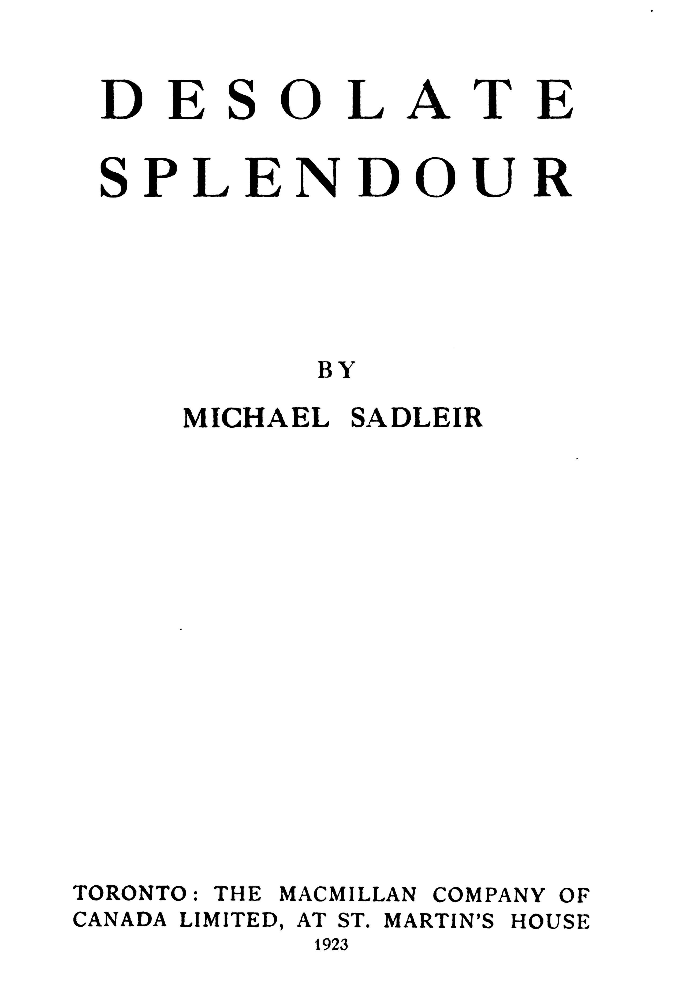

Title: Desolate splendour
Author: Michael Sadleir
Release date: December 9, 2025 [eBook #77432]
Language: English
Original publication: Toronto: MacMillan, 1923
Credits: Tim Lindell, Laura Natal and the Online Distributed Proofreading Team at https://www.pgdp.net (This file was produced from images generously made available by The Internet Archive/Canadian Libraries)

DESOLATE
SPLENDOUR
BY
MICHAEL SADLEIR
TORONTO: THE MACMILLAN COMPANY OF
CANADA LIMITED, AT ST. MARTIN’S HOUSE
1923
COPYRIGHT, CANADA, 1923
BY THE MACMILLAN COMPANY OF CANADA LIMITED.
PRINTED IN CANADA
THIS
FLAMBOYANT
TALE—A STORY
OF AMBITIOUS HEDONISM
AND OF THE DESOLATE SPLENDOUR
OF A GIRL’S DEVOTION, A STORY OF
PERVERTED CRUELTY, OF LUST FOR PROPERTY
AND OF THE GENIAL OBTUSENESS OF THE UPRIGHT
IS FROM GRATITUDE FOR HIS FRIENDSHIP
FROM ADMIRATION OF HIS SENSIBILITY
AND FROM A DUE APPRECIATION
OF HIS AUSPICIOUS CIPHER
INSCRIBED WITH CORDIAL
REGARD TO
O. K.
| Chapter | Page |
| I PLETHERN OF MORVANE | 1 |
| II ROCKARVON | 14 |
| III VIOLA | 31 |
| IV DANIEL | 57 |
| V THE GRAYS OF CLONSALL | 79 |
| VI PLEASURES OF LONDON | 101 |
| VII PLEASURES OF LAVENHAM | 111 |
| VIII BEAUTY CAPRICIOUS | 124 |
| IX WINE OF YOUTH AND WATER OF VIRTUE | 136 |
| X THREE RETROSPECTS | 146 |
| XI MRS. PLETHERN DECIDES FOR WAR | 170 |
| XII THE PAINTED EARL | 179 |
| XIII THE TENDER MERCIES OF THE WICKED | 197 |
| XIV THIS MYSTERY OF LOVELINESS | 211 |
| XV A GIRL ALONE | 236 |
| XVI SACRIFICE | 258 |
| XVII NIGHT AT MORVANE | 287 |
| XVIII THE SANDS ARE NUMBERED | 309 |
[Pg 1]
THE avenue sloped upward from the meeting-place of the five rides to where, grandiose on the line of the horizon, tall, wrought-iron gates fenced off a space of sky. Through the uprights and foliations of the grille was seen only sky, for the gates crowned the hill-crest and, as it were, checked with a movement of their graceful fingers the sumptuous procession of the trees. Beyond the veil of the ironwork was nothing: nor earth, nor the bunched greenery of trees, but only sky. Long ago, before the new road from Rushmorton to Sawley had been engineered or even thought of, the eastward highway from the Severn flats bordered the park wall, so that by that way and through the tall gates lay the principal approach to Morvane. All that was past now. The crumbling stones of the boundary wall edged a grass-grown lane, rutted by an occasional cart, but for the rest abandoned to a tangle of wild flowers and to the murmur of indifferent bees. On one side of this ancient road lay Morvane, with its sweep of park-land, its majestic trees, its queer, unhappy house; while on the other the ground fell steeply as a tangled precipice to the deep, secret valley of Rockarvon.
The iron gates of Morvane were now gates by courtesy alone. Between them was access to no carriageway; untidy gaps where once had been stone lodges, divided them from the park-wall on either hand. Powerless alike to admit or to exclude, they stood in the loveliness of their futility, closing with all the pride of a vain gesture a grassy corridor between two rows of[Pg 2] beeches, a corridor that was, as ever it had been, the avenue.
Along the deserted avenue the grass grew rank, and the sullen winds crept between the beech trunks and silvered its dull green surface with their breath. To either side of the iron gates the old walls dropped their stones among nettles and hemlock, now sinking almost to the level of the ground, now roughly limbered up at the erratic impulse of an owner, penniless or preoccupied.
The avenue sloped foolishly across the park. Its very starting point had become, through lapse of time and the mutability of man’s handiwork, a vague absurdity. Morvane, of the sheer walls and the huge, exotic tower, stood distant by quarter of a mile from where the five rides met. In the old days a low mullioned wing had stretched from the surviving mansion toward the west, and the carriage road, leaving the avenue, had plunged through an archway and carried the visitor under the windows of those ancient rooms to the main door of the house. With the destruction in the ’twenties of this fragment of the Middle Age, the old approach had received its death blow. Already the road, upon which the carriage-drive debouched, had begun to fail before the rivalry of its supplanter. Each winter its fabric was crumbling a little more, each winter the grass encroached a little farther upon its surface. When, therefore, a night of fire in ’23 left wall-stumps and charred beams to mark the last site of the original Tudor house, the Plethern of the day determined to throw a new drive across the park to eastward, and give his home an approach at once more practical and more magnificent. His design was thwarted by fate. He had time to destroy the lodges that flanked the great grille; he had time to construct of their stones part of the sunk fence necessary to embank his projected road. But at this point unlucky speculation drove him abroad, and it was left to his son[Pg 3] to complete the task and finally to close the ceremonial career of the Morvane beeches.
The gates themselves survived. Their value, in the financial crash of the late ’twenties, was not worth the work of their removal. Later, when wealth returned to Morvane, the ruling Plethern saw merit only in modernity.
So it was that, while the nineteenth century died and the twentieth struggled through its teething, the beeches still climbed the slope in solemn files and the great grille, slung like a wisp of mammoth lace across the sky-line, still closed with the serenity of lovely uselessness the avenue that sloped upward across the park of Morvane to the west.
§ 2
By the side of the iron-grey house rose the Morvane campanile. That its nickname—‘The Devil’s Candle’—was more than antiquarian ingenuity is doubtful. Cases are not unknown elsewhere of local legend manufactured in London, eagerly adopted by intellectual residents, but for ever stranger to the rustic mind. Nevertheless, falsehood or verity, the story is pleasant enough, for it tells of a midnight compact between Sir Christopher Plethern, Jacobite and fugitive from Preston Pans, and his Satanic Majesty, according to which the latter was pledged to destroy root and branch the House of Hanover and the former to build on his own land in Gloucestershire a lofty tower, from the summit of which a light should shine for ever to guide lost souls along the way to hell. Queer corroborative evidence was provided by a ghost picture (the term indicates a conglomerate of lines, half impressed, half drawn) on the panelling of an ancient inn near Dunbar. Toward Dunbar, so runs the tale, fled Christopher Plethern, the enemy at his heels. With the connivance of the landlord he hid in the loft of the Joined Hands till the pursuit was past. That night he[Pg 4] caroused and, in his cups, praised Satan for his deliverance. From the panelled room came the murmur of voices and the landlord’s wife bore witness to the sulphurous smell that, for days afterward hung about the stairs and corridors. Her husband swore Plethern was alone at dinner and that when morning came he had vanished, leaving a purse of guineas on the table. Picking up the purse the landlord was struck with a darkening of the oak beneath; he bent closer, and the wood showed black and charred. On the wall, phosphorescent and unearthly, shone the ghost picture, a drawing of a great tower, windowed irregularly and topped with a curious bulb-shaped dome. Further fragments of narrative, less reliable than that of the landlord (who, for all his Jacobite opinions, was a solid God-fearing man), but none the less thought worthy of preservation by the investigators of the period, record that the picture, which dimmed rapidly and became in a few weeks’ time the pale jumble of line and space that it has thereafter remained, at first changed from hour to hour. The tapster declared that at midnight, three days after the horrid event which gave the picture birth, he had occasion to visit the panelled parlour on some trivial duty. To his amazement and terror the summit of the tower was blazing with light and tiny objects in vile procession—he described them as tadpoles with forked tails—were writhing toward its base. They crept one by one into the low arched doorway that gave access to the fearful edifice and, as each vanished from view, the light that radiated from the dome gleamed with a fiercer brightness and faded again, while a short, sharp sizzling appalled the ear.
It will be asked why, in view of these disquieting happenings, Sir Christopher Plethern, when he returned to the home of his fathers, encountered none of the hostility generally shown to allies of the Devil. History is incomplete in explanation, but those were troublous times[Pg 5] and rumour passed slowly from Scotland to Gloucestershire. The story of the ghost picture near Dunbar, founded though it be on the contemporary evidence summarized above, did not reach the publicity of print till the end of the century, a fact which to the sceptical mind of the present day throws some doubt on its veracity. As to that, the curious may draw their own conclusion; to the chronicler of Morvane the essential is the residue of fact, and fact incontrovertible is the building by this same Christopher, within two years of the fight at Preston Pans, of the Morvane campanile. Those there are that profess to detect close resemblance between the ghost picture (or what remains of it) on the panelling near Dunbar and the tower in Gloucestershire. Here again the curious may investigate and pass judgment. For their convenience they are referred to the third volume of Clandell’s Antiquities of Gloucestershire, in which rare but unreliable book they will find a wood engraving of the campanile as it stood in 1842 and, presumably, as it persisted until the date at which the present narrative begins. Clandell’s illustrator depicts a tall, square tower, vaguely Italianate in design, with windows as seemingly irregular as buds on a branch and, to crown all, a rounded dome, without suggestion of the Moorish or hint of narrowing toward the base, but more elongated and cone-shaped than is usual.
Evidence is scanty as to the use to which this tower was put during the last decade of the eighteenth and the first quarter of the nineteenth century. Morvane itself was unoccupied between 1828 and 1840, and it is known that in the latter year, from poverty rather than from inclination, the grandfather of those Pletherns with whom this narrative is concerned, crawled back to the home of his heritage as, twenty years before, he had for the same reason left it. Probably therefore the tower stood empty, one of the thousand extravagant relics of the eighteenth century that an unimaginative posterity despised[Pg 6] and left to crumble. Matters changed, and startlingly, with the succession in 1848 of the man who seemed destined to restore the fortunes of his house and who, for his ability and arrogance, had earned the nickname of ‘King’ Plethern. As hero of a tale of Victorian ambition ‘King’ Plethern would stand forth with credit and, as matters fell out, with tragic force. He was a strange contrast to his father; the one slipping to his grave in feckless penury, while an unloved and neglected house cracked over his head; the other working secretly and untiringly in London, Paris and the wilds of Caucasia, to amass the wealth that should buy him the life and position that he craved. ‘King’ Plethern was untroubled by scruple and his nature was without that whimsicality that is deemed weakness in the humble, but wide sympathy in the securely placed. He was a rich man when his father died, and if to be forty and unmarried were unusual in men of his class, the oddity was deliberate and part of his scheme of life. He knew well that women, suited to times of struggle and preparation, often prove unfit to wear the glories they have helped to win. To hamper himself for life with a romantic shred of a dead past was not the act of a thinking man. Reason had no difficult triumph over sentiment in the brain of ‘King’ Plethern. If he turned from women during his years of toil, he turned easily enough, but with achievement of ambition came retribution and from the quarter he suspected least.
In 1848, Morvane, with its stark greyness, its wilderness of garden and untidy park, its tower and its avenue, came under the new master. The wealth, so desperately amassed, so carefully unspent, now first found outlet and expression. The gardens were cropped and dug and tamed into hideous submission; the ill-fated carriage-drive, begun thirty years before, was completed with shining gravel and much complexity of unnecessary curve. On the house ‘King’ Plethern was about to lay his ruthless[Pg 7] hand, when that intervened which had so purposely been left aside during his obscurity and exile. He married. His bride came from East Anglia; a stately girl with masses of dull, fair hair, pale, obstinate eyes, and a dowry that even her lover respected. Rowena Walsingham was no romantic fool. She married a man twice her age, tempting him with her white shapeliness, her money and her greater expectations, not despite his murky exploits in little known and distant markets but because of them. If she loved her husband at all, it was for his past and for the established splendour that, thanks to that past, he now possessed. To her was it given to detect the chink in the armour of ‘King’ Plethern; unerringly to drive in her goad; unfailingly, when it pleased her, to prick him to fury and so to defeat. The man’s temper had stood him in good stead, while his war was against other men; it was a sword of Harlequin, used against this smooth, calm woman, who learnt to humiliate before she angered him and so to rob his violence of its sole real force—conviction of right and confidence in himself.
It happened that her earliest determination centred round her new home. Something in the sombre exterior of Morvane called to her grim nature and, in preventing the modernization of the house on the lines adopted in the gardens, she showed to her husband the first taste of her quality. Morvane must remain iron grey; the windows should not be thrown out into bays, neither should a steep roof with circular lights bring to Gloucestershire the beauties of the French château. Two changes she not only permitted but demanded. A Palladian hall and a range of fine saloons were to take the place of the existing long, pilastered lobby and the grave reception rooms that neighboured it, and the campanile should be entirely renovated—for her own occupation. Somewhat to his surprise (he had not in those early days learnt his lesson) ‘King’ Plethern found he had consented. There[Pg 8] were fierce scenes between the pair during their first years of married life. Maybe house plans slipped through almost unnoticed among the clash of more vital differences. These were as deliberate as were all the lady’s actions in this matter of marriage. Almost at once she recognized in her betrothed a man who affected to despise women and the pleasures of love. Equally clear was it that he wanted her, mainly for her money, but, secretly and a little nervously, for herself. With the instinctive capacity for exploitation of sex that cold, almost sexless women have been known to possess, she realized that Plethern could more thoroughly be controlled through desires of which he was ashamed than through those to the fulfilment of which his life had been devoted. She came, therefore, to marriage with one inflexible reserve. She denied herself to her husband. Uneasy before this obstacle, ignorant of women and their ways, ‘King’ Plethern hesitated. In the past, when denied opportunity of material advancement, he would crash his way to his goal by sheer force of mind and temper. Had he but known it, those methods would have served him now. But he did not know, and he hesitated. Thus doubly armed, his wife went her inscrutable way. First to one thing, then to a greater, then to a greater still he agreed, storming, sulking, sometimes awkwardly imploring, because he hoped by such concessions to win the one thing he had never wanted until it was refused him. Three angry, embittered years, passed in ever-increasing, never-satisfied desire, left him, in the autumn of 1854, a different being from the self-sufficient, forceful master Morvane had known during the opening days of his succession. His spirit was shrunk within the brave carcase of his possessions, and those there were who, in later years, compared him to his stark grey house standing so withered and so tired among the decorative vulgarities of its too elaborate pleasure grounds. They might have gone farther and seen in the Morvane campanile[Pg 9] a counterpart of Mrs. Plethern. Rowena had won. She towered triumphant over her husband’s life. Conscious of victory, aware that the concession came so late as rather to bulwark than to endanger her dominion, she passed to the final insult. Choosing her night, and with a calm, contemptuous complacency, she offered herself to the man whose strength she had broken. It was a wet night and raw; the tower, in which Mrs. Plethern now lived, stood away from the house; the man was told he might come to her room for an hour or two. That he went; that he groped his way through the wet darkness of the garden and climbed a hundred stairs to enjoy what was his by right three years ago; that, the pitiful ceremony over, he crept down and out and back again to his own solitary bed—these are indications enough of the completeness of his subjugation.
From the union thus grotesquely consummated were born, in 1855, twin boys. Charles and James Plethern first saw the day in the topmost room of the ‘Devil’s Candle.’ Over the head of their mother in her travail rose the cone-shaped dome from which in picture, a century before, the tapster of a Lowland inn had seen radiate light that was not of heaven nor of earth.
Between her two sons, as they grew to maturity, the mother was not long in choosing. Charles was lean and brown, with thin, dissipated lips and the wide, brown eyes of generations of Morvane squires; James was pale and light-eyed, with straight fair hair, and the long, cleanly-cut nose of the Walsinghams. This alone would have decided the favourite; James made matters doubly sure by proving himself his mother’s son in mind as well as body.
It is arguable that ‘King’ Plethern, when finally admitted to connubial intimacies long withheld from him, had reached a point of hysterical repression at which the individual was merged in the race. It was as though his power for paternity were not his power but that of Morvane.[Pg 10] In the interests of heredity, nature seemed to have set aside the shattered personality of the wretched man and used him merely to sire a son for his house rather than for himself. If so, the begetting of Charles was his father’s last act of self-assertion, and even in this the power of his wife all but conquered him. Charles was a Plethern, but James, younger by four hours, was as utterly a Walsingham. It is to be hoped that in his last sour years of life, the old man thanked Providence that his son, and not the woman’s, won the race for birth. Certainly the mother never forgave the trick played by her own pregnancy. Once she understood what nature of boy was Charles and what James, she turned her grim, silent brain to the problem of winning for the one the upper room that nature had allotted to the other.
It should be here recorded that round this very point centred a quarrel between herself and her husband, a quarrel of a kind more futile and at the same time more ghoulish than any that had preceded it. The boys were seventeen. Charles had in some manner more striking than usual revealed himself a Plethern, had brought too vividly to life in some boyish escapade the generations of careless gallants—cavaliers, exiles, Jacobites—that had gone to the making of his youthful egoism. James—Puritan, Whig, Hanoverian—had stood aside and not refused his mother the particulars she demanded. There was a scene between the parents. Finally Mrs. Plethern made a statement so fantastic that anyone but her husband would have feared for her sanity. She had stumbled badly, she said, three months before her lying-in. The jar would have killed a weak woman, or at least her offspring. She had lived and her children had lived, but the wrong child had first come to birth. The old man was staggered for a moment at this solemn lunacy; then he fell before the threat of his wife’s baneful eye and broke weakly from silent astonishment into his usual wailing temper. He raved at her folly; she was[Pg 11] talking against nature and science; the idea was a senseless infatuation worthy only of the pauper’s hospital. Her mind, rigid in the groove of its sombre obsession, made no response to his fury. In sullen silence she let him storm and shout, then:
“I have made up my mind,” she said calmly, “and I will use those stairs no more. You will have a lift put into the tower.”
Ludicrous enough to read of, no doubt, but to the weary husband, whose raving had sunk like a rotten boat to the depths of lassitude, any chance to peace might mean peace. He dropped his head on his hands and waited for her to go.
“Well?” she asked.
He nodded heavily, but did not raise his head nor look at her. Quietly and without another word she left him. In due course there was a lift in the Morvane campanile and, later on, came a large bill for its installation, which the old man paid, dully, automatically, as though he knew not what it meant nor greatly cared.
The incident of the lift was doubly significant. It revealed the depths of absurdity to which could sink a narrow and bigoted intelligence, brooding over an imagined wrong; it was also not untypical of the woman’s extravagance in indulging her own queer whims. As time went on she became more and more of a recluse, seldom leaving her tower except for occasional journeys to London, Paris, or the Riviera, seeing fewer people yearly, withdrawing ever more deeply into the sinister fancies of her brain. She developed a hobby, a hobby as infrequent and unlikely as would be looked for from her temperament. She collected playing cards, buying from all over the world and often at great prices, ancient and curious cards, with the less precious and the more reputable of which she would, in irregular rotation, play game after game of mysterious and complicated Patience.
[Pg 12]
‘King’ Plethern died in the middle ’seventies, a pathetic figure, cowed but savage. His disappearance came as a relief to many, because he had found outlet for his embittered temper in quarrels with persons standing in the way of desired expansion of the Plethern properties. To make wealth breed wealth was the sole ambition of the man’s last years. Conscious that at home he was a cipher and contemptible, he sought balm for vanity in tyrannizing over strangers weaker or poorer than himself. Wherefore they, to whom his vanishing meant peace, came to regard the day on which he died as one for thanksgiving; but from his own place, from the Morvane that was his, he faded unnoticed, his wife being too indifferent either to rejoice at her release or to mourn her widowing. Until the will was read. Then indeed she had a spasm of silent fury. Everything was for Charles. She was not even trustee on his behalf. “For my son James,” the dead man had written, “my dear wife Rowena will, I hope, provide from her private fortune.” Safe in death, the wretched man had thus trivial revenge. “You love your younger son,” he seemed to say. “He is yours. I leave him to you.”
Between the death of her husband and the coming of age of her eldest son, Mrs. Plethern took stock of the future. The psychology of the heir baffled her, and to the instinctive dislike of Puritan for Cavalier was added in her brooding mind a dislike of something she despised but was as yet unable to defeat. Charles eluded her. He was affectionate and dutiful as occasion required, but his self-sufficiency, unaggressive and conciliatory though it was, presented no evident point of weakness. Rowena Plethern had sapped the more obvious strength of her husband by gauging and exploiting the force of a need he hardly realized. Her eldest son had no obvious strength, almost no obvious desires. His casual gaiety might cloak some purpose or be a shroud of emptiness. She puzzled how best to meet the clash of personality,[Pg 13] for clash of some kind there would surely be; but she was unable to prepare defence or attack, knowing not whence assault would come, nor at what point opportunity of conquest offer.
Let it not be thought that she permitted her sons at this early age to suspect the feelings crystallizing in her heart toward their so different personalities. Charles, as has been said, was affectionate to his mother, and she treated him with the quiet equanimity that served her for friendliness. To James she behaved with kindness no less tranquil, repelling rather than encouraging the attempts he made to arrive at a closer understanding. So coolly did she play her part, that neither of her sons suspected, on the day that both were twenty-one, how bitter were the ceremonies to a heart that yearned over the younger and rebelled in dumb powerlessness at the new dignity chance had brought to the elder.
[Pg 14]
IN the year that Queen Victoria died Viola Marvell came to Morvane. She was twenty-one, an orphan from beyond the seas, well grown, laconic, a creature of quiet, firm movements and of a reserve as far beyond her years as was her inexperience below them. So lonely was she and yet so vividly complete, that she seemed, in some way indefinable, a thing for worship rather than for pity.
Viola’s father had been at college with both Charles Plethern and his brother James. He was their senior by two years in standing and by more in age, and it remained a mystery how and why his lonely, reflective path ever crossed that of the wealthy twins, who with a crowd of school friends came riotously to Trinity from Eton. Inscrutably, however, their ways met and from the meeting sprang an intimacy with Charles, the elder of the brothers, which subsisted as inexplicably as it had begun. That Marvell, solitary, inarticulate and obscure, should turn an eager face to the sun of Charles Plethern’s vivid smile was to a point comprehensible; that the instinctive attraction should have found soil in which its roots could shoot and thrive was perhaps conceivable; but that Charles—gay, improvident, vowed to Newmarket, hunting and polo, a flaunter of yellow waistcoats in the quads and about the Cambridge streets—that this most typical ‘blood’ should care to pass even five minutes of his leisure in the company of a fumbler and a scrub defied all understanding. Charles found himself a butt of friendly ridicule. He responded with his easy smile[Pg 15] and went on his way, bearing no grudge but unsusceptible to criticism, an Englishman of the English. The companionship, such as it was, continued. The two rode together about the country lanes; now and again walked together in the town. There, for a time, the matter ended, for in college among their fellows they lived apart and as strangers—Marvell in his bare, fourth-floor rooms, mooning over his books, working in his own untidy way, trembling for the spring into that empyrean of higher mathematics that was his life’s sole achievement; Charles gambling and ragging with the heedless young squires and lordlings that were his natural companions.
And James? He was of his brother’s set and yet not of it. He shared their amusements, their sports, their social rowdiness. They accepted him, but for tradition’s sake and for that of Charles rather than for himself. Any attempt to define the feeling toward James Plethern of those that formed his college circle were at the very outset dangerous. To attribute constructive judgment to such as they were foolish. And yet, in their fuddled way, they felt now and again that they stood on the brink of perplexity. He was a gentleman, with the unself-consciousness only possessed by those to whom established breeding gives complacency. He thought as they did, lived as they did, knew, so to speak, the vernacular of their common understanding. And yet, despite these unchallenged credentials, they were not free from an occasional recurrent uncertainty. They wondered.... It is facile to brush their uneasiness aside as the unspoken dislike of stupidity for intelligence. Probably they were for the most part stupid; certainly James Plethern was intelligent. But that distrust of mental agility, which marked then, as it does now, the Englishman of the upper class, has a basis of sound common sense. It springs from a conviction that the man who counts the cost of his actions does so because[Pg 16] he cannot afford them, while a gentleman can afford anything that befits his caste. James’ Cambridge friends were far from so precise a rendering of their secret feelings; but events were to show that their doubts, however intermittent and illogical, were not unjustified.
At the close of his last year, after the examination that was to make him Fifth Wrangler and set within his reach a choice of fellowships, Marvell, the outsider, and Charles Plethern, the blood, went sailing for six weeks on the Broads. This crowning wonder so staggered comment as finally to hush it altogether; besides, when October came, Marvell had left Cambridge.
The oddly consorted pair vanished into the summer weather. Then one night Marvell saved Charles from drowning. The event touched some emotional chord in the latter’s mercurial but romantic nature. He was genuinely and extravagantly grateful. A month later, after they had parted, he wrote Marvell a very curious letter, a letter of solemn, almost rhetorical thankfulness, of which the last sentence read as follows:
“I am not a man that forgets, Marvell, and I swear to you that if at any time and in any way I can be of service to you or to yours, I shall be found ready and eager so to act, as to pay in some small part the debt of life which I owe and shall owe to you so long as I am on this earth.”
The next news of Marvell to reach his Cambridge acquaintances was that, despite the brilliant result of his tripos, he had refused all fellowships, and accepted a Chair of Pure Mathematics at some Canadian University. There were rumours of an incautious marriage. Cambridge shrugged its shoulders; clearly Marvell was mad. In time it filtered through that his wife had died, leaving one little girl. His few friends in England murmured “How sad!” and forgot all about him until, years later, it was reported that he also was dead. No one troubled to confirm the report, but to Charles Plethern it needed[Pg 17] no confirmation, for he received by post from Toronto a letter, addressed in an unknown hand. It contained a sealed envelope bearing his name in the writing of his old friend and three lines on a half sheet of note-paper:
DEAR MR. PLETHERN,—
My father died yesterday. His last words were an instruction to send you this letter.
VIOLA MARVELL.
The dead man’s letter committed to Plethern’s care “my orphan child.” Pinned to this message from the grave was a soiled sheet of paper closely written. The concluding sentence was crossed with blue. It was the letter written by Charles to Marvell many years before and the sentence was the promise of unqualified service. The newly appointed guardian shrugged his shoulders and dispatched two cablegrams to Canada.
§ 2
That Charles Plethern should first cable to his ward and only then seek counsel from his mother was, in miniature reflection, the man himself. The twenty odd years that lay between the long vacation on the Broads and its strange consequence—the entry of Viola into English life—had left him as elusive as ever had been the schoolboy and the undergraduate. Pleasure-loving he was; self-centred, if you will; but ever a creature of odd, independent judgment, of rapid impulses, frivolously conceived but brought to maturity with a determination that permitted nor question nor dispute. His mother lived on in her tower. Age had hardly lined her large, pale face and her hair was smooth and fair as that of a young woman. Like an amber threat she loomed over Morvane, withdrawn from a scene she knew not how to dominate, biding her time.
Her sons went their respective ways. When Charles inherited, he found himself master of great wealth. Life[Pg 18] offered itself as a luxurious and disjointed dream. The various estates were well tenanted and carefully controlled by a good agent. Investments were sound and profitable. Their owner felt that supervision could as well be exercised from London, the Riviera, Africa or Japan as from Morvane, and his visits home became mere pauses between one round of pleasure and another.
For James, both by temperament and by fortune, matters were different. Had he not been a younger son, he might in any case have acted as he did; being a younger son, inclination harmonized with necessity and he set himself to make his way. James was ambitious where Charles seemed indolent, poor where Charles was rich. Above all, he had that keenest of all spurs to activity—a jealous grievance. Morvane, but for the hazard of birth, would have been his; his brains and his determination, thanks to that lying hazard, were set aside in favour of a frivolous trifler. Direct sympathy from his mother he never sought nor would she have given it. They understood one another too well. But the gall of his minority was ever bitter to his lips and, like the old woman whose son he so truly was, he played his part and waited on fortune.
Politics, even at Cambridge, had been James’ most absorbing interest and to politics, once years of tutelage were over, he turned for livelihood, and for advancement. To young men of his social position the late ’seventies offered of their best; at the same time, James was not one to be content with mediocrity. To him eight hundred pounds of annual income were but a step from beggary, and the facile delights of social gaiety trivial futilities. He must have money and he must have power. Politics could give him power and that, once gained, turned easily to gold. He became private secretary to a Minister and for ten years served his chief, in office and out of it, with accuracy, ardour and unfailing evenness of temper. Noteworthy was it, and indicative of his[Pg 19] discreet intelligence, that James’ allegiance was to Liberalism. For one of his origin and background the choice in those days was unusual, but he, who at need upheld the whole rigidity of convention, could divine those rare occasions when the unexpected was the profitable.
Early during his period of secretaryship he married, choosing a bride as he had chosen a career and a party, for her prospects and her usefulness. Long ago, his father had avoided marriage for reasons fundamentally the same as those that now led James to a considered altar. But the son had seasoning of Walsingham in his blood and to the practical sense of ‘King’ Plethern was added a completer self-control. His choice fell on the second child and only daughter of a man richer in financial influence than in financial goods. The girl was slight and very dark, with hard, imperious features and a voice that sheathed its every word from contradiction in armour of brusque assurance. The engagement created interest and discussion, as James intended that it should. He was too cunning to contrive the usual ‘good marriage.’ Heiresses balance a bank account better than a domestic see-saw, and a wife’s money is either tyranny or temptation. James was as disinclined to be dubbed fortune hunter as he was determined to be master in his own house. As for Rosalind Mackworth, she read his mind and approved it. Her own keen instinct for success told her that this was a young man to whom ambition meant achievement. Fully awake to the risk she was running in accepting a suitor unknown, and, as her world went, badly off for wealth, she decided, after an hour’s close thinking, to favour the proposal that was clearly on its way.
Society, for all its bewilderment, smiled a little. The affair was so terribly controlled. The wedding, decked out with all the ceremonial of fashion, was followed in under the year by the birth of a child. Sardonic observers[Pg 20] raised their eyebrows. When after a decent interval, another baby appeared, they praised the wonders of modern science. But in this they showed not only their own malice, but also a misconception of the power of mind over matter.
From his chief’s ante-room James Plethern passed into Parliament. His wife, sensitive to his every thought but to little else, was his colleague rather than his helper. Everything was done that could be done by judicious hospitality, by well-regulated servility or rudeness. Relentlessly the young politician made his way until, before the Ministry was two years old, he was in knowledgeable circles marked down for early office. It seemed the desired fruit might at any moment droop to his reach, but fate was unkind and his party fell from power. James allowed no trace of disappointment to ruffle his quiet intensity. He faced what promised to be long years of opposition with calm energy. Early and late he worked, keeping his name before his chief and before the public, allowing to neither chance to forget his claim for recognition, when next the pendulum of patronage swung its course.
At intervals, during these years of industry, there flitted through the forests of James’ solemn and efficient life, the gay dissipation of his brother’s plumage. At intervals gossip reached even James’ preoccupation of this liaison or of that, of Charles with Lottie Wycherley at Cannes, of Charles with La Carmagnola in a flowery garden near Seville, of Charles at the tables, at Ascot, on the lawns and terraces of Long Island homes. The younger brother smiled to himself and, with infinite discretion, wafted gentle encouragement along the elder’s joyful path. His real feeling toward Charles he scrupulously concealed. The two were on terms of friendliness, meeting whenever the fitful wanderings of the one crossed the other’s undeviating way. Charles liked his brother’s children as he liked everything that was gay and[Pg 21] unpremeditated; he found in his brother’s wife sufficient response to casual jollity to please his easy nature; of James himself he made pretence of humble admiration.
To one more scrupulous or more sensitive, this outspoken veneration might have brought suspicion, but James Plethern had the obtuseness of conceit and accepted with quiet graciousness his brother’s homage. He encouraged his children to like their uncle, giving every opportunity for meeting and familiarity. In the matter of Charles’ more intimate amusements, the younger brother’s attitude has already been defined. Its basis was logical enough. Let Charles but pass his youth thus, let one debauchery lead to a greater one, and he would come the more quickly to an exhausted middle age, with (maybe) those hampering memories of an improvident past that demand clubland and a complacent flat rather than the rigours and proprieties of autumnal matrimony. The young Christopher was growing up and bade fair to be his uncle’s favourite. To him should fall the inheritance of which his father had been cheated.
To such purpose, behind a mask of dignified and affectionate sympathy, James lived on terms of cordiality with his erratic brother. But beneath his friendliness, his purposeful and secret life moved on its way.
For three years and a half the period of opposition dragged its tedious feet. Then, in the summer of 1899, James Plethern once more did the unexpected thing. He resigned his seat and went into the city. His friends were stupefied. It was known that for some years he had commercial interests—whence else could have come the means for supporting the discreet opulence of his existence?—but so sudden an abandonment of all he had seemed to care for was an impatience incredible in this stealthy, determined man. James received expressions of regret and the curiosity veiled beneath them with polite obtuseness. He appreciated the kindness, but proffered no word of explanation. A few weeks after[Pg 22] his disappearance eastward from St. Stephen’s, the smouldering trouble in South Africa broke into flame.
The Boer War found the Plethern brothers true to their respective natures. To James it offered commercial opportunity; to Charles a new diversion. The latter had at one time played with ideas of soldiering as a profession, but the thrust of pleasure edged him from his purpose, until of his military ambitions naught remained but a spasmodic Yeomanry activity, more ornamental than arduous. The South African adventure called to his careless imagination. At any rate it was ‘something fresh.’ Using his prestige as captain of Yeomanry to secure transfer to a cavalry regiment, he sailed for Natal. During two years he found in warfare much excitement, some suffering and a new, affectionate tolerance for all manner of humanity, a tolerance born of comradeship and nurtured on dangers met in mixed but loyal company. Outwardly he came home the same man as he had gone—more bronzed, of course, with, maybe, more markedly the eyes of an idealist, but casual as ever, vowed as wholly as before to the pleasures of fashionable life. Of the change wrought in his heart none could know, but where before had ruled only thought of self was now understanding of others and a sense of man’s duty to his neighbour. Wherefore, although he would at any time have disposed first and spoken afterwards of the legacy of duty left him by his dead friend, it was in part due to the influence of the interlude of war that his reply to Viola bade her sail at once for England, and informed her that money for her journey lay ready in a Toronto bank.
§ 3
To the eyes of his neighbours at Morvane Charles Plethern had emerged from the experience of South Africa the same baffling, inconvenient creature that had titillated their social curiosity before war or Boers were[Pg 23] thought of. Maybe he remained at home for periods longer than had been customary; maybe rumours of dissipation came more rarely, less delightfully, to scandalize a country that feared frailty but loved gossip more. In the main, however, Charles was, as always, with but not of his local world. He hunted, shot and performed prodigies at polo; on the Bench he was amiable and unaffected; but the inner chambers of his mind were closed and the treasures (if such there were) that fancy and experience had stored therein, lay hidden from eyes that longed to peep but dared not pry.
Of conditions inside the house and park of Morvane the neighbourhood was mainly ignorant. Charles Plethern’s courtesies were so brittle and so delicately shaped that their recipients instinctively refrained from grasping them too heartily. An occasional dinner-party; whisky and hot baths after hunting; once a great gathering on the shady lawns—to such lengths, but little further, went Morvane’s master in his hospitality. He was reputed wealthy. Freely, if selfishly, he seemed to spend his money. Yet was he clearly not a man to interest himself in the economics of estate-control. With nonchalance he left his agent to the management of his affairs, taking the income, asking no questions. The discretion of the agent aggravated the offence of Morvane. An exclusive landowner was, in effect, an absentee; absentees were phenomena familiar to the county and, if conventionally frowned on, were at least ponderable. But for the resident representative of such a landowner to outdo his master in reserve was contrary to nature, and Wilkinson, as source of fact or fancy, was even more useless than the man he served.
In effect, therefore, local society knew Charles Plethern little and his affairs not at all. At their infrequent mutual contacts he was elusive and genial but never intimate. They reacted variously, with ruffled disapprobation[Pg 24] or shy servility. Charles’ very prosperity, because its reasons were obscure, provoked them. “How fortunate,” they would murmur, “that Mr. Wilkinson is so honest,” and murmuring thus, they almost wished themselves Charles Plethern’s agents. “The Man of Pleasure,” he was nicknamed, and to speak thus of him gave satisfaction to one or two, who relished the malice in a phrase that had wandered from Cosmopolis to Gloucestershire. Perplexity and annoyance learnt to cloak themselves in indifference. Plethern was superior and aloof; if he thought himself too grand for local friendships, the neighbours would not break their hearts. Nevertheless they continued secretly to wonder and to envy and to wonder more.
Charles read their minds and on the whole approved his reading. Of moral censure he was contemptuous; his code of manners was his own and personal. If occasionally he regretted the uneasiness that, in the depths of his neighbours’ minds, checked at a point each progressive friendship, he took comfort in the independence of his solitude. He was a man scrupulously to conceal the feelings that most hardly ruled him, and to be held a trifler, to be judged in matters practical an idle fool, proved him successful in dissimulation. The fact flattered his complex self-esteem.
Charles Plethern was ambitious—not personally but dynastically. Many ingredients had gone to his making. He was the son of ‘King’ Plethern and Rowena Walsingham; he was a gentleman of Victorian England; he was a fashionable roué of the glittering nineteen hundreds. Heredity gave him sense of value and lust for acquisition; tradition mellowed heredity, colouring his desire for ownership with pride of land, teaching him to value wealth as a means to permanence rather than to individual salience; finally, keen feeling for actuality helped him to cloak sincerity in indolence and, for his own[Pg 25] comfort, to prefer ease and freedom to responsibility and pomp.
So it was that, beneath a careless affectation of heedless idleness, he hid genuine care for his own material well-being, because upon this depended the well-being of Morvane. He would speak never of his position in the county; almost he had none save that residing ex officio in the Plethern of the day. He would show little concern for the history or achievements of his ancestors. But he was proud of his race and of his home and, in his heart of hearts, meant to leave Morvane greater and more prosperous than he had found it.
If period mannerism thus obscured the Victorian preoccupation of his mind, self-indulgence tricked it of its logical development. Land-pride and desire for an unbroken tale of family would seem synonymous with longing for heirs male. But not only had Charles never married, he had never sought to marry. Instinct for direct issue was baulked in him by one still deeper because more characteristic of his generation—the instinct for personal independence. He was that difficult hybrid—a voluptuary with traditions, and he compromised with his own intransigence by building, as it were, an anonymous future for the house of Plethern. The keystone of this much-considered, lovingly-imagined future was Morvane. Inevitably the expansion of Morvane became his hobby, so that, if outwardly he was a connoisseur of life, at heart he was an amateur of property.
The possessions inherited at his father’s death were of a diverse but unspeculative nature. ‘King’ Plethern had invested the majority of his foreign-won wealth in his own country, and Charles received rents from more than one area of London house and office property, mining royalties from Wales, railway dividends, and the quiet, certain income that in Victorian eyes had invested the “funds” with a something of divinity. By the side of these considerable increments, the farm rents and[Pg 26] tithes of the Gloucestershire estate might have seemed trivial enough, were it not that of all Charles’ possessive prides the strongest—and consequently the most readily denied—was Morvane. ‘My comic ruin’ he would call it and, when his mother, according to her regular formula, would say: “Going away again, Charles? I wonder you trouble to keep the house at all!” he would answer: “What can be done with something no one wants, except keep it? Besides, you have the tower-habit now and I’d have to build you a new one, if we left here.” Probably Mrs. Plethern was not deceived, but it is doubtful whether she realized the absorbing passion for his home that possessed her son. Only Wilkinson knew that in a drawer of his desk, in a special pocket of his dressing-case when travelling, Charles had a large scale map of the Morvane area of Gloucestershire, upon which map each field and coppice forming part of the estate was neatly, arrogantly marked. He had few moments of delighted pride so keen as those at which he could enclose, in the special red-ink boundary, yet another enclave of what had been other folks’ property, or could throw out into the waste of unmarked map, a promontory of newly-acquired wood or meadowland. Five thousand acres in some other part of Britain were as nothing beside an acre that adjoined his beloved Morvane; the former were for any man to buy who had the money, but the latter bloomed and seeded for him alone.
It says much for the skill with which Charles Plethern played the frivolous spendthrift and for the discretion of the admirable Wilkinson, that the gradual extension of Morvane did not attract more local attention than was the case. Conditions of land tenure were in Plethern’s favour. Small owners abounded in the neighbourhood of Morvane, men who farmed their fifty or their hundred acres by methods as primitive as the land they ploughed. Working on a narrow margin, they fell into difficulties at this or that fluctuation of the agricultural market, at[Pg 27] this or that seasonal irregularity. There was always accommodation to be had from Wilkinson and of a kind that left the owner in ostensible possession. Of the acquisitions of Morvane during twenty years few were recognizable by outsiders. Slowly and patiently Charles played his map-game; slowly and skilfully he rearranged the pattern of his varied interests.
As time passed, the progress grew ever slower and more difficult, and with each year of hopeful scheming the obstacles that remained stood out more strongly, more aggressively. Charles would brood over his map until the white patches seemed to move in their places and dance mockingly before his eyes. And chiefly was he taunted, sometimes to the limits of endurance, by one great gash of white, which persisted so obstinately and so near to the centre of his map, that there were times when he could see little else but its staring nudity, when he felt that like a wry, grinning mouth it grimaced there, laughing at his impotence.
Along the western boundary of Morvane, across the green lane by which the iron gates so forlornly stood, lay in slumbrous tanglement, the long valley of Rockarvon. It curved between steep, wooded sides for a matter of six miles and in the heart of it, by the side of the stream, (there widened to a shallow lake) stood an old, grey house. At the most southerly point of the valley, where it debouched into the main valley of the Clan, huddled the once prosperous mill-town of Clanworth. From that now miserable and untidy village, the woods of Rockarvon in their narrow cleft stretched north and north-east and finally due east to where, above the marshy source of the small Arvon river, the ground rose for the last time and the valley ended.
The owner of these woods and of the old grey house had not been seen there for a generation. The house was shut and crumbling; the trees choked one another in luxuriance; the shallows of the stream were flagged with[Pg 28] yellow iris and scummed with weed. Clanworth, powerless in the grip of a landlord who exercised to their legal limits the powers of his despotism, slipped slowly deeper into the apathy of squalor. The farms on the uplands struggled with barren, exhausted soil, with rotten hedges and broken fencing. Money, where possible, was wrung from the estate; none came to replace it. It was so long since matters had been otherwise that the neglect and misery of the place had grown into accepted custom. Only Charles Plethern pondered perpetually the case of the valley that lay athwart his threshold; only Charles Plethern was actively aware that, in a gloomy hotel in the Faubourg St. Germain, Stephen George Clavering, Earl of Rockarvon, lingered like a painted image, sneering at death.
Hostility between Morvane and Rockarvon was of long standing. Among the disputes provoked by ‘King’ Plethern in the violence of his humiliated middle age, the most senseless, costly and unproductive was the protracted quarrel between him and the man who now, in the sinister luxury of a London flat or amid the lonely dignities of the Faubourg St. Germain, lounged through the sixth decade of his false and cruel life.
The technicalities of the dispute are now immaterial. There were faults on both sides, but Plethern was the actual aggressor. Having trumped up a cause of disagreement, he went to law. He used every artifice to confuse the issue and prolong the life of the proceedings, pouring out money for the benefit of the lawyers, wearing his own contentment and that of those around him to shreds and tatters. And he achieved nothing. Rockarvon, then a young man, was well served and his sour temper was more than a match for his assailant’s bluster. Also, of two bad cases, his was the least indefensible. Also again, his poverty was already stringent enough to make the debt of costs a thing easily borne, while Plethern, though well able to do so, footed his own tremendous[Pg 29] bill with a fury doubly bitter for the failure it represented.
Charles was not the man, other things being equal, to give personal expression to a traditional dispute. It was not even in his nature to carry over land-rivalry into private relationships. But there were special elements in the present case that ranged him with hereditary prejudice. His mother felt the indeterminate issue of the long struggle more bitterly than she would have felt defeat. She nursed her hatred of Rockarvon, keeping alive her husband’s irritation by constant reference and innuendo. As the old man became gradually more listless and less responsive to her goading, she set herself to influence her children, reciting to them the saga of the great law-suit, closing them round with an atmosphere of hostility to their neighbour and to all his works.
For once she was assisted by the character of her eldest son. Had Rockarvon been a pathetic, a genial, even a tolerable figure, Charles would have dismissed his mother’s clamour as another of her whimsies. Had the adversary shown a tendency himself to bear malice, had there been opportunities of meeting and scowling at him in public places, Charles’ sense of the ridiculous would have inclined him to courtesy, if not to overtures of friendship. But Rockarvon was rather an evil shadow than a man; he never set foot on his estate nor indeed in Gloucestershire; worst of all, he showed clearly if indirectly that the law-suit and its implications were things of the unimportant past; he implied that Morvane was a place beyond his consciousness, that the very name of Plethern was without meaning to him. Insolence so calculated found its mark. None feel the lash of scorn so keenly as those who are themselves of contemptuous habit. The master of Morvane grew to loathe Rockarvon as heartily as even Rowena Plethern could have wished, and his loathing was kept lustily alive by the wry, white strip upon the map that leered up at him from the[Pg 30] very heart of his own beloved land. Nevertheless, as Charles was to discover, ambitions that make loathing may of themselves put loathing to sleep, only to waken at the last minute of the eleventh hour.
[Pg 31]
CHARLES PLETHERN mixed his drink and, full length in a deck chair, allowed the velvet brilliance of the June afternoon to stroke with its soft fingers his pleasurable fatigue. Corinne, his niece, curled on the grass beside him.
“Good game, Rinka,” said Charles contentedly.
She nodded.
“I hate those corner-drives of Captain Welwyn’s.”
“You’ll get into them. Welwyn is no good really—are you, Jim?”
Their late opponent smiled across the shady space from his seat near the garden table.
“Am I what?... At tennis? Quite good enough for you, old man. You can thank Miss Corinne for saving your bacon.”
His wife drifted into sight.
“Jim, I’m going for a walk. Come on.”
With a shrug of delighted resignation Jim Welwyn struggled to his feet and, his arm in hers, strolled towards the park.
“There you are, Rinka,” said Charles. “That’s marriage. Long drink and comfy chair. Enter Venus, exit repose.”
The young girl looked at him naughtily.
“That is why, I suppose, ...”
She paused and Charles cocked his delicate, sarcastic eyebrows in mock interrogation.
“Why I never married——?”
[Pg 32]
“Never—actually—Uncle Charles,” she replied demurely.
He laughed delightedly.
“Upon my soul!”
A comfortable lady of middle age, dressed in the flowing manner of pseudo-homeliness affected by the garden-loving aristocracy, walked toward them from the house. Charles raised his voice as she approached.
“You will be shocked to know, Belinda, that this shameless child is lecturing me about my morals.”
Lady Grieve beamed lazily.
“Out of the mouths of babes, Charles. I dare not hope she has made an impression. You waste your trouble, child.”
Corinne giggled, and the point of her pretty foot polished the burnt grass of the lawn. She was at an age when young womanhood and childishness alternate with bewildering rapidity. It was the sudden turn of immaturity and power for silence failed her.
“He is silly! I only said—you see, he said....”
She stopped. The attention of her hearers had wandered. Baffled, she asked herself why these elder people were for ever wearying of this topic or of that. Nursing youth’s perpetual grievance against the volatile mentality of age, she sank into embarrassed silence. Meantime, the others had passed to different topics.
“She is nearly due?”
Charles glanced at the watch on his wrist and nodded.
“You know what I think of your leaving her to arrive all alone. It’s brutal, Charles.”
“Not really, Belinda. I hope not, at any rate. I want to size her up when she is at a disadvantage.”
“Exactly. Refined cruelty. Oh, you can grin, you wretch! Here comes your mother. What does she think?”
[Pg 33]
Mrs. Plethern moved heavily from the doorway of her tower. In her hands were playing cards. She spoke with an abstracted monotony of intonation.
“I have come out to join the audience, dears. Just a little game while I wait. Corinne, my precious, get me my little table.”
Charles sprang to his feet and prepared her a chair and table. She gave him a slanting look of leaden tenderness, mumbling something as she touched his fingers with her large, white hand. Placidly she began setting out her cards.
“The dear girl should soon be here, yes?”
Lady Grieve returned to her earlier theme.
“I am calling Charles over the coals for not meeting her, at least in London.”
Mrs. Plethern smiled absently.
“You may call and call, Belinda. Charles goes his way and no one else’s.”
There was an impatient note in Charles’ voice as he changed the subject.
“You are going to Lords, Belinda?”
“I suppose so. Inevitably, I have to be in town. Algy pretends he has to attend a conference. July—or virtually so—and a conference! They invent them, so that they can get their wretched relatives to Lords! Daniel of course refuses to be seen there and Algy gets so cross with him—so I have to go to comfort the poor lamb. You will be there, of course, and Corinne? To see Christopher get his hundred?”
“We’re going, aren’t we, Rinka?”
“Rather! And Miss Marvell.”
“Supposing she won’t, my child. Supposing she insists on your uncle staying here and starting a beaver farm or planting maple sugar.... You never know, with these Wild West heroines.”
Charles laughed.
“Cheer up, Rinka. Mother shall take you, if I can’t.”
[Pg 34]
Mrs. Plethern looked over her glasses at her eldest son. She still held some cards in her hand and these, all the time she was speaking, she shuffled softly and stealthily.
“I go to Lords? Dear boy, how you talk! You know I never leave home—except,” she added, noting a gleam of irony in Charles’ indolent eye, “when I have to. For my health, you know.”
And she returned, oppressively, to silence and Miss Milligan. Almost at the same time the far sound of wheels floated along the hot quietude of the summer garden.
“There she is! Now we’ll see. Watch her first reaction. It’s a wonderful experiment!”
Lady Grieve looked at Charles with interest. He was clearly excited. Probably his refusal to meet his ward had been due largely to shyness and to a dread of what he might find. It was natural enough that he should be excited. A hazardous legacy she might turn out to be. Or a grotesque one. The good woman’s pleasant face puckered with suppressed amusement at the thought of Charles Plethern saddled for good and all with a girl rube from the Canadian backwoods! Poor man, what would he do with her? The wheels were near now. In another moment the carriage would stop at the front door the stranger would alight, cross the hall, be conducted to the long windows of the drawing-room, step over the lintel to the terrace——. Irresistibly Lady Grieve’s eyes were drawn toward the house; mysteriously fell silence and immobility upon the waiting group. It seemed the next instant that a figure slipped through the half-opened window, and that Charles Plethern, rising quickly to his feet, hurried across the grass to greet his ward.
Viola never forgot that first sight of her new home and of her new friends. Of the house as she passed through it, she noticed little. It seemed that her every power of registering impressions hung back for the moment of her emergence, through the open window of the drawing-room,[Pg 35] on to the flagstones of the terrace. Then indeed she absorbed, in one gluttonous and accurate second, the panorama that was, in epitome, the panorama of her future. She saw a broad strip of paved terrace, edged by a balustrade broken in the centre to allow shallow steps to lead to the lower level of the lawn; she saw the closely cropped grass, brown and sun-dried, sweep away towards a group of great cedars; between two of these she saw a tennis court, vividly squared with white, and, beyond it, the glow and pallor of piled roses. To the right of the rose garden she saw more lawn, starred erratically and ornately with flower-beds. To the right again she saw a stretch of park-land and the beginnings of an avenue, the first trees of a dual row of beeches, between which long grass grew to luxuriance. On the other side, to the left of the tennis-court and clear of all but the lower fingers of the nearest of the clustered cedars, she saw a huge, white tower, that rose into the blue sky, with walls irregularly pierced with windows and at its summit a cone-shaped bulb of light, metallic green. Between the tower and the house that ran at her back she saw more garden, a long wall with delphiniums intensely blue against its greyness; beyond the wall and over it the upper boughs of fruit trees. And last and most of all she saw, in the shade of the cedars, not fifty yards from the spot on which she stood, figures seated. She saw a lady lying back in a long chair wearing a broad hat, round which a scarf, faintly coloured, was loosely knotted. She saw, seated at a small table and seemingly intent on a game of cards, a large figure in black silk with pale hair under a widow’s cap. She saw, in a strained attitude of eager nonchalance, a young girl crouching on a stool. And she saw, with a start that rallied all her faculties from their exhaustive tour of vision, a lean, dark man in white flannels who had crossed the lawn and was now almost at the terrace steps.
[Pg 36]
“My dear Viola,” Charles Plethern said, taking her hands in his, “I am very glad to see you. I hope you will be happy here. Come and be presented, and then you shall see your room. Tea will be ready very soon.”
As they crossed the lawn side by side, the three watchers passed their first private judgments on the newcomer. When she saw the quiet elegance of Viola, her pale, proud face, the glint of gold hair under her simple hat, Corinne Plethern felt a throb of joyous excitement in her young, impressionable heart. “How lovely she is!” she thought, “and what fun we shall have together! I must show her London and Chris and buy clothes with her and go to dances. Oh, I am so glad she is like this and not horrible!” Lady Grieve, in her kindly wisdom, gave Viola every credit for beauty and manner, but wondered a little uneasily what the county would think of Charles Plethern and his new charge. Even a niece, she said to herself, were explicable. But this exquisite thing from out of the blue—and Charles the creature he is known to be——! As for old Mrs. Plethern, what were the thoughts that stirred sluggishly in her ageing but tenacious brain? They defy expression, so secret were they, so unexpressed even to herself, so darkly vague and yet so definite. One glance sufficed. Charles was crossing the lawn with a young woman. The young woman was more than presentable and Charles, by a trick of fate, was her guardian. Guardian...! With purposeful inconsequence her mind shifted heavily toward her absent nephew.
And Charles?
And Viola herself?
The moment of meeting had for them both only suspended significance. The latter, dimly aware that she was nearer misery than ever before in her brief and troubled life, fought down the implications of the visual facts around her. Her eyes took in this unknown England, but for the moment she emptied her mind of all[Pg 37] that it might mean to her. Charles knew his ward for a beautiful girl and that, in nine cases, would have sufficed him. But on this tenth occasion he was conscious of a check to the warm excitement implicit in the situation. Perhaps the pale spirituality of her profile—with its straight, delicate nose, long chin, her lips so cleanly cut, so wistful with their hint of petulance—threw him back upon the circumstance of her coming. Perhaps also the timid pride of her isolation—she had drifted like a forlorn, golden leaf on to the terrace of his house—prompted romance to fight and vanquish dalliance. He paced by her side at once downcast and exultant, while his head sang with the meaningless music of a half-comprehended chivalry.
§ 2
Because she could not at that time recognize their inevitability, Viola came near to hysterical weariness of the conversations that, in relentless series, occupied her first evening at Morvane. Physical fatigue, to the point of enduring a guardian’s natural curiosity, she had come prepared to conquer. When, however, she found herself also a target for the investigation of two elderly women and a young girl, she was hard put to it to maintain even a semblance of self-control. Nevertheless, that every one of her four protagonists should force upon her so immediately their friendly but inquisitive confidence distressed more than it surprised her; for of the aloof indifference of the English she had no experience, imagining them merely to be idler, less emphatic versions of their Canadian cousins.
Mrs. Plethern secured first turn. After Viola had seen her room, confided her keys to a maid, and repaired the damage done to her appearance by the journey, she descended as bidden to the garden and found tea laid out by the cedars. The meal passed in the customary[Pg 38] scuffle of small talk, second-cups, and minor accidents. More hot water must be fetched. The cigarettes had been brought out, but no matches. Both Charles and Captain Welwyn were coatless, and their coats, loaded to embarrassment with matches, hung on the wire netting far across the tennis court. Corinne ran such errands as these and others incidental to meals out of doors, with easy good nature and much physical grace. Viola felt conscious of her own slowness of movement. This girl was lithe as a young leopard. She seemed rather to ripple from place to place than to walk or run. How slightly built she was and yet with what suggestion of supple strength! Perhaps the Pletherns were all like that. Certainly, as she now recalled it, her first impression of Charles had been one of slightness and rhythm of movement.
Tea finished, more tennis was proposed.
“You won’t mind?” asked Charles of his ward. “Mother will entertain you if you care to watch, or Belinda will take you round and show you everything, or, if you prefer, you can have nothing to do with either of them.”
“Come and talk to me for a little, my dear,” said old Mrs. Plethern. “They prefer to overheat themselves running about in the sun, and I suppose they are welcome. I’m an old woman and know better. So you have come all the way from Canada to live here with us? Very curious. Very curious indeed. Are you glad to come?”
“Why, of course I am glad,” said Viola. “I was quite alone, you see, when father died.”
She spoke very quietly and steadily, but the old lady heard a whisper of tears in the last word.
“Poor child,” she mumbled. “All alone. Do not talk about your father, if it is painful to you, but tell me about your home and whether it was at all like this. I[Pg 39] shall go on playing my game and shall hear every word you say. I love cards. You shall come and see my collection. Some beautiful packs. Catalogues, you know—I order them—I so seldom go away from home now. You will be such nice company for me. Charles is often away. Nicer company for me than I can be for you. But we will ask Corinne and her brother and their father and mother and all be happy together.”
How far Mrs. Plethern rambled on for reasons of tact, or how far she was concerned to create a bewilderment in her hearer’s mind, may hardly be judged. Ever and again she would throw from under her pale lashes a sidelong glance at the girl beside her, noting how Viola sat motionless, her hands crossed on her lap, her eyes fixed upon the tennis lawn. That she was unconscious of the tennis Mrs. Plethern well knew. Of what was she thinking? The aged sleuth padded off along another scent.
“How long is it since you knew Charles was to be your guardian?” she went on. “Always, perhaps? Your father and he were great friends, were they not? And then, your mother died so long ago, of course...?”
A tiny frown showed itself for a moment between the girl’s eyes and vanished. Suddenly she felt on her guard and, having of necessity formed habits of reserve, told herself that silence, or as near silence as might be, was at present her best weapon of defence. Accordingly of the four questions asked or implied she answered only one.
“I knew nothing of it until on his death-bed my father told me he had asked Mr. Plethern to look after me and that he surely would.”
“But, my dear, was it not rather terrible to be fetched over to England by some one you had never seen?”
“It does not seem very terrible now,” said Viola, smiling.
The old eyelids drooped over the cards. The girl was[Pg 40] not a fool. So much was evident. All the worse, or all the better? Mrs. Plethern tried again.
“I hope you will not find this very dull after city life. Charles, as I said, is away months at a time. And then we are quiet, very quiet. I think we must find some nice woman to come and live here. I am almost useless, you see. So old. And I live in my tower, and often during the bad weather hardly go out at all. That will be dull for you, all alone in the house.”
“I shall not be dull while the country is unexplored and while I have a horse to ride.”
“That is what I like to hear!” replied Mrs. Plethern. “Young women in this country nowadays do not seem happy unless they are out of it. When I was a girl we had our horses and our archery and occasionally a ball, and we were content with England. You are fond of dancing?”
Viola nodded.
“Corinne’s brother dances a great deal in London. You will go and stay with them, I have no doubt, and they will take you about. They are very gay. My son James is so well known in London. He has always worked very hard, and I think men ought to work.”
During the silence that followed this remark, for Viola once more scented danger in comment, Lady Grieve drifted into sight round the low-spreading branches of the cedar. She carried a flat gardenbasket and a pair of scissors.
“Would you care to stroll round and see the garden?” she asked kindly. “I must cut off the deads. Gardeners hate doing it; but then, of course, they know nothing about gardening.”
Together they moved to a tour of inspection. Lady Grieve chattered easily of flowers and fruit and the mistaken effort of insect-creation. The incidents of her new home passed before Viola like a quietly ordered dream. To the voice of this gracious, unobtrusive beauty her[Pg 41] Englishry stirred to consciousness. She wandered along grass paths, between borders blazing with English colour; she crouched by the rock garden and listened to her companion speaking disjointedly of this Alpine or of that; she watched fish darting among the weeds of the great shallow fish-pond. As from the end of the beech avenue she let her eyes follow the roadway of untidy grass between broad, sleek tree-trunks to where, on the horizon, the long, rhythmic lines of the lonely grille stood proudly against the sky, she felt tugging at her heart a strange longing for England.
It was a moment of sudden, dizzying emotion.
“Is it really true?” she asked, and hardly realized she spoke.
“True, my dear? Is what true?”
Lady Grieve’s words came softly, as those of a dream-question.
“This lovely place, this old, old serenity. If you knew the rawness of it over there! And then this—this—peace. It is like velvet to touch, or cream to turn in the mouth. Am I really to live on here?”
Lady Grieve put her arm round the girl’s shoulder and drew her close. She said nothing, and Viola was grateful for silence. The mood of self-forgetfulness was passing; already a dim sense of shame at her own eloquence was creeping over her. Under the cover of this silence and in the shelter of the soft, encircling arm, she won her way back to self-command. They walked towards the cedars slowly, their feet noiseless on the dry-cropped grass. At last Lady Grieve spoke:
“Viola, dear, I am a very old friend of Charles Plethern and I know him and those near to him more intimately than most. You have a difficult time ahead, but in your dealing with him, if you will be just yourself and nothing more nor less, you will find everything will go right. Charles is a gentleman. Never forget that. And do not believe quite all you hear about him. For the[Pg 42] rest, if ever you want advice or help or a change of scene—send me a telegram and come to Lavenham. You will always be more than welcome. Now give me a kiss and we will go and see what the others are doing.”
Viola murmured some words of thanks. “You have made me so much happier,” she said finally. “I shall try not to make a fool of myself.”
“Don’t be too much afraid of folly, my dear,” rejoined the old lady; “it is often a girl’s key to knowledge. So long as you keep true to your own natural standards you’ll be as right as a trivet, whatever other people may say. Here are the tennis players, and it’s after seven o’clock.”
Viola found herself drawn away toward the house between Corinne and Sylvia Welwyn. Charles stood with Lady Grieve looking after them.
“Well?” he said.
“She’s a very nice girl indeed, Charles. You are a lucky man. If only you behave sensibly....”
He laughed.
“Already I am serious with the cares of family. I must do the paternal after dinner, I suppose!” He stretched and sighed. “And, by the way, Belinda, will you mind calling it ‘supper’ and not changing over much? You see, I don’t know the limits of the child’s wardrobe. Welwyn and I are coming in flannels, if you’ll forgive us.”
She smiled at him affectionately and they moved away side by side.
§ 3
In his dressing-room Charles for the first time forecasted the possible influence on his own life of Viola and her dependence. Hitherto and of set purpose he had avoided such reflection. Responsibility had come to him by post, and by cable he had shouldered it. The duties, the advantages, the difficulties implicit in his new[Pg 43] trust depended on more than one imponderable. Primarily they depended on the kind of girl his ward should turn out to be, a point as to which he had not, prior to seeing her, been free from foreboding. These colonial girls were sometimes a little odd.... Viola had come and his fears were proved groundless. At least she was not odd—not in that sense, at all events; unusual she was, as is all beauty, but in appearance wholly of the world to which he was accustomed. So far so good, although he began now to realize dimly that her very beauty created fresh complications. She would find admirers, young men who would infest his house for love of his ward, and regard him, no longer as an experienced and congenial companion, but as a parent. He disliked the idea; it thrust him definitely into a generation whose comradeship he had never frankly cultivated. It seemed hard that, without any of the preliminary adventure and triumph usual to paternity, he should thus suddenly enter upon its august but limited activity. For a moment he determined to flout duty and to continue along his own gay and heedless path. The girl should be housed and fed and provided for; it were unreasonable to look to him for the assiduity of personal care. But the next instant the point of his selfishness jarred against the vein of scruple that ran through the rock foundation of his hedonism. Marvell was gone, and had died confident in a promise from Charles Plethern. Literal indeed should be the interpretation of promises to the dead. Until one should appear who was entitled to take his place, he, Charles Plethern, must perform a guardian’s task. Until one should appear——For an instant there flashed into his mind another and different aspect of his new-found dignity. Was it possible that his was now the power of parenthood with few, if any, of its disabilities? In this inspired moment he came to a half-realization of the potentialities of a daughter in the sport of fortune-building. The echoing impatience of[Pg 44] the dinner-drum shattered his reverie. He thrust the problem into a mental pigeon-hole and went downstairs.
The meal over, he closed the door after the departing women and strolled to the mantelpiece, his hands in the pockets of his jacket.
“Port, Charles?” queried Welwyn.
“Help yourself.” There was a pause. “Good Lord, Jim, I’m all over the shop about this girl! Not my line, you know, the heavy father!” He laughed self-consciously.
Jim Welwyn smiled under his moustache. The day before he would have replied that it was indeed hard to cast Charles Plethern for the rôle of parent vis-à-vis a pretty girl. But yesterday was not to-day. Old Charles was worried and serious. Better to give badinage a bye.
“She seems a jolly nice sort of girl,” he said lamely. “Bit quiet and all that. Strange house, you know. She’ll perk up in time. You see if she doesn’t.”
“Dear old ass!” laughed his host.
They sipped their port in silence. Charles walked to the window and stared out into the fading light. The garden looked differently to his different vision. He felt a something of home in its trees and crowded flower-beds, in the stretches of lawn on which already the mists were softly settling. A window shone brightly in his mother’s tower. He would discuss plans with his mother on the morrow. As he formed the resolution, there came to his mind her reception of the first news of Viola. ‘I’ve had a girl left me,’ he had said suddenly, the day after his cable summoning Viola to England had gone its way. ‘A girl left you, my son? I do not understand.’ He had explained, laconically. For a moment she had studied him with her pale, old eyes. Then ‘What is she like?’ she had asked. ‘I have no idea in the world!’ ‘But you will not have her here? You will send her money, so that she can live on in Canada?’ ‘Why not here, mother?’ ‘Think of your own life, my[Pg 45] son; you will not like to be tied to this quiet place. The girl may be impossible!’ ‘She may. That is why I want to have a look at her.’ Then he had told of his cabled instruction. The old lady had said nothing. She had sat with drooped lids, fingering the cards that strewed her table. At last she had bidden him good night and he had left her.
At the time, her lack of interest, her avoidance of all cordiality or promise of help, had not struck him. He was accustomed to go his way, recking nothing of his mother’s advice or disapproval. Now, however, that he was faced with the actual task of caring for this young and lovely woman, he reverted naturally to his mother’s unhelpful silences. She, normally, would assume responsibility for Viola; on her, in the ordinary course, would devolve the duty and privilege of mothering this orphan girl. Somehow such assumption of responsibility, such mothering, were hard to count upon. For the first time in his life Charles sought to read the riddle of his mother’s calm. If he failed, the failure were likely due as much to his rival preoccupations as to the density of the enigma. Let it be remembered in his defence that the problem was to him a new one, and that persons of indolent good nature, however complete the armour of their cynicism, are not of a suspicious habit. They go their own way and give to others opportunity to do the same. Charles Plethern, therefore, dwelt only for a moment on the mystery of his mother’s reaction to Viola. Then, with conscious effort, he prepared himself for the serious business of the evening.
§ 4
The library at Morvane was a long room on the first floor, windowed at each end, with views to west and east. On the rare occasions of his residence, and those, still rarer, of his doing business in the house, Charles used[Pg 46] the library for a study. A desk was there, immense, mahogany, with drawers to front and back. Wilkinson would sit at ease, enjoying his employer’s excellent cigars, and present none too tersely his report on property and income. Charles, little enough at home in his round-backed office chair, would lean over the desk, scribbling figures idly on paper, as he listened for the few salient facts in an exposé that appeared to bore him. Wilkinson was a good man of business and an honest one; in return for his work he might look for a patient hearing. So the master of Morvane, careful as ever to cloak beneath casual indifference his very accurate intelligence, let the agent talk, while he himself noted, as though without method, the points upon which his livelihood depended.
To this room, and with a nervousness that was new to him, Charles conducted Viola on her first evening in his house. She was very tired, but had not known how to evade an interview when, in the drawing-room, he had with evident diffidence asked her to give him twenty minutes for a quiet talk. He, quickly perceptive, recognized her fatigue and was glad to let consideration shorten his own ordeal.
“I suppose,” he began, “that I ought to leave you alone to-night. You must be fagged out. But I want for my own guidance to know one or two facts and I think you may sleep the happier if you have a chance of seeing what kind of a fellow it is to whom you have been bequeathed.”
Viola smiled slightly in tribute to his pleasantry. She said nothing.
“You know how it was that your father thought of me?”
She shook her head. Charles felt embarrassed. He could hardly present truthfully the tale of his friendship with Marvell without rousing in the girl’s mind surprise at the tenuity of bond that connected this man with her[Pg 47] dead father. Such surprise might suggest to her that she was unwelcome, an irritating imposition of a distant past on a present with its own cares and its own responsibilities. He took refuge in misleading generality.
“Well, I knew him very well and he did me one very great service and many lesser ones. He was a much cleverer man than I, but he had not my good fortune—I mean, that in material things he was—well——”
“Father was poor and you are not,” said Viola quietly.
Charles accepted this summary rescue from the pitfalls of self-expression, giving no sign either of amusement or surprise.
“Exactly. To whom more naturally than to me should he look for help. You were an orphan——”
Viola shook her head. In genuine astonishment Charles looked at her.
“But he said so——” he began.
“Said so? When?”
“In his letter—the letter you sent me.”
“I did not know,” she said simply. “I do not know what the letter said. But I can believe he spoke of me as orphaned. It was a great sorrow and he would always treat of her as dead. Of course she may be now. I do not know. But—you see, my mother left him.”
“I am very sorry. I had no idea. Can you—perhaps I ought to know——If you felt able to tell me——”
He paused. She sat motionless, then raised her wide blue eyes to his.
“I don’t believe you had seen father or heard of him or known anything of him for years,” she said slowly.
Poor Charles quailed before those grave, accusing eyes. The feeling of unwelcome that he had lied to allay had come to her in his despite. Or perhaps she suspected him. Then an anger seized him against the dead man who had placed him in this undignified position. She drooped her head into her hands and the next instant her pitiful loneliness turned anger to sympathy. Impulsively[Pg 48] he sat by her on the sofa and put an arm about her shoulders.
“Please!” he said. “I will tell you all I know and you shall tell me whatever else you think fit.”
Gently she disengaged herself and stood up. There was no sign of tears beyond a brightness in her tired eyes. From the hearthrug she studied him searchingly. At last:
“Let me see father’s letter,” she demanded.
He took it from the drawer in which it was locked and handed it to her. When she gave it back, she smiled frankly, and her eyes were no longer brave and anxious.
“I believe it’s worse for you,” she said. “I’m sorry if I was rude, but I am very tired.”
The submission roused his dominance.
“Nevertheless,” he said crisply, “this must finish now. Are you ready?”
She bowed her head and settled once more on the sofa. He stood, as at first, against the mantelshelf. The tale of his Cambridge days with Marvell, of the latter’s departure for Canada, of the rumours of marriage, paternity, widowerhood, was told with cold precision. As he talked, Charles felt his position strengthening. After all, he was giving in this matter, and the Marvells taking. It was his right to catechize.
“And so you see,” he concluded, “I know next to nothing. Who was your mother, and what became of her?”
“She was the daughter of an inn-keeper near Cambridge bridge,” replied Viola. She spoke lifelessly as though by rote. “Father married her very soon after he left Cambridge. There was trouble of some kind. He never told me what. But they came to Canada, because he had an offer of the chair at Toronto. When I was ten, she ran away with a man. I believe she was always—er—flighty—.”
[Pg 49]
At the word, so inadequate, so impudently trivial, she stopped. Her vocabulary had betrayed her. The word was wrong and she knew it, but she had no other. Charles gave no sign of hearing anything amiss.
“Go on,” he said. She obeyed.
“Father was terribly angry. He made himself very ill. Then he forbade me to speak of her, and would himself always behave as though she were dead. We hadn’t many friends ever, but we had fewer after that. Only those who affected to believe she was dead were admitted. So I looked after him—until he died—and then there was no one——”
Again she bent her head into her hands and her shoulders shook. Charles was at her side in a moment.
“Poor little girl!” he said. “Poor child! You shall be happy here. We’ll stand by you. Don’t cry any more. It will all come right.”
While her tears lasted she let him caress her, leaning a little against him for support in her solitary grief. There crept into Charles’ genuine pity a wicked realization of her exceeding beauty. He had comforted girls before. Often and often. But they had wept for other, more remediable causes. Also they had been fallible, and to the lover of women fallibility marks the end of a journey. He asked himself whether this present case were different because Viola was not fallible. For all he could say, she might prove to be so. There is always heredity. For an instant the spirit of the hunter awoke, only to be stunned to unconsciousness by a brusque movement on the part of the quarry. Unmistakably she was pushing herself free of his arms. She got up quickly, wiping the remaining tears from her cheeks.
“I’m all right,” she said rather sharply. “I’m not usually such a fool.”
Abandoned on the sofa in an attitude of some absurdity, Charles felt indignant and ridiculous. He groped after mastery, both of himself and of the situation. As[Pg 50] men will, he sought ease in tobacco. The movement of finding, tapping, and lighting a cigarette restored his self-respect. Leaning back easily he blew smoke from his nostrils.
“There is very little more to be said to-night,” he observed judicially. “Do you know anything of your mother’s movements? Did she leave Toronto?”
Viola shook her head.
“I am afraid I know nothing,” she said coldly. Then, after a short silence: “I think I shall go to bed, if you will excuse me.”
He rose slowly and lounged to his desk.
“One other thing. You will want money. I won’t go into that now, but I imagine an allowance in your name is most convenient. Think it over and tell me your ideas. We can discuss it to-morrow. Good night.”
She lingered by the door, knotting her wet handkerchief between her fingers.
“Good night,” she said slowly, but still she did not move.
He looked interrogation across the space of desk-top and crimson carpet.
“Don’t think me ungrateful,” she burst out. “It’s only that I am overstrained. It’s very kind of you to do anything for me at all, seeing how little——”
She broke off, as his frown deepened to evident anger.
“Good night,” she repeated quickly and slipped through the door. As it closed, he threw back his head and his fine teeth flashed white between his lips. She had put him down very prettily and he recognized her spirit. He felt that joy in a thoroughbred characteristic of the Englishman. ‘But how in the world,’ he thought, ‘did Marvell and a wench from Cambridgeshire produce that creature!’
The eastern windows of the library looked on to the campanile. They had been uncurtained during the[Pg 51] interview between Charles Plethern and his ward, and the lights in the room were blazing. It was a curious chance that Mrs. Plethern should have looked down into the library from one of her tower rooms and that the moment of her looking should have been that of Viola’s most bitter tears. An onlooker judges perforce by attitude, so that perhaps the aged observer cannot be blamed if she gleaned a false idea of the relations between her elder son and his new charge. She had just completed a letter to her younger son. Fortunately the envelope had not been stuck down, so that a postscript could be added with ease and without waste of stationery.
§ 5
Safe in her room, Viola, full length on the bed, fought to steady her quivering nerves. Her head ached and throbbed. Across the tortured background of her imagination passed, in grotesque confusion, the incidents and emotions of the afternoon and evening. Why had she come to this strange, fevered place? First the old lady with her stealthy gentleness; then Lady Grieve seemingly so soft and sweet and comforting; then Charles Plethern, a kaleidoscope of shy volubility, arrogance and intimate insolence—where was truth? Was England compounded of such incalculable bewilderment? Closing her eyes she cradled her tired brain in the lazy sway of childhood memory. She recalled that errant mother, whose story had so abruptly and so unexpectedly dominated the evening’s conversation. Slight and pretty and feckless, she had left on the mind of her child often an impression of lovable helplessness. Then she had gone away and the child had remained. The deserted father had raged bitterly, growing thinner and more lantern-jawed than ever, saying little to his daughter in direct reference to the vanished woman, but overlaying the child’s protective love with a deliberate crust of hatred. Viola had never[Pg 52] paid more than lip service to this hatred. The crime of which her mother had been guilty was a meaningless one, apart from the unhappiness it had brought upon her home. But the father required formal repudiation of all love and loyalty, and the child had obeyed. Then, with the approach of womanhood, came womanhood’s capacity for playing a part. Viola wondered and pitied and forgave, but so secretly that Marvell had no suspicion of the girl’s thoughts and longings. His death released her from the burden of pretence. Her few weeks’ loneliness in Canada, the days of voyage and travel were given up, not to predictions of the future, but to aching desire for the mother that had disappeared. And now, during the terrible interview with her guardian, the past had risen again. She had betrayed her mother’s wrong-doing and the treachery of it still burned upon her tongue. Why had she not lied, perjured herself if need be, to keep sacred that memory at least? As she recalled the contempt in his voice as he spoke of her mother, she shuddered in despair, for the words that had given cause for it were her words. She it was that had dangled before the eyes of this cruel stranger the tragedy of her childhood. And he had sneered at it. For all the sympathy of his speech, he had sneered. She would hate him more for this than for his presumptuous hands, were it not that the fault lay first with herself. Rigid with self-scorn she lay, staring miserably at the ceiling.
(Poor Viola! She was not free as yet of her mother’s memory. Though she would never see again that wanton fecklessness, its blood was in her veins, and with its blood its impulses. That will was hers to love more well than wisely; that will was hers to lie beneath love’s sacrificial knife; that will to love was hers that, in allegiance, sent the mother to a sordid exile; that, in despair, was to impel the daughter to the hazard of her soul.)
She was roused by a tapping on the door. Leaping up she smoothed her crumpled dress and hair, casting[Pg 53] a quick glance round the room that she might be prepared with reason or excuse for any unlikelihood or want of order. Then she responded to the knock. The door opened and closed. Corinne, in a yellow dressing-gown with a bath towel round her neck, stood smiling before her.
“May I come and talk to you? Uncle Charles said you had gone to bed and I’ve been having a bath. So let me sit here while you undress!”
Denial was impossible. Already the unwelcome visitor had thrown off her dressing-gown and was full length on the bed. Viola braced herself for yet another assault of veiled curiosity.
“I’m so hot!” laughed Corinne, spreading wide her legs and arms. “Why in the world one has a hot bath this weather I can’t imagine. But cold ones don’t clean you. They don’t me, anyway. The trouble is I never look clean. My complexion is wrong. You fair people are lucky. My brother Chris is fair—your colour, but not so red—and he looks beautifully clean always, even when he isn’t. We brunettes have a lot to put up with!”
Again she laughed, wriggling her little head on the pillow so that her dark curls shook and shone like a mass of silky feathers. In her thin, white nightgown she was more like a fine scarf, loosely knotted and thrown across the eiderdown, than a creature of flesh and blood. Viola smiled despite herself, invigorated by the irresponsible vitality of the intruder.
“Everyone talks to me of your brother,” she said. “He must be a remarkable person.”
“Chris remarkable?” Corinne pouted and, raising one arm, opened and shut her fingers against the light. “Oh, I don’t know. Just an ordinary boy, you know, strong and stupid and awfully conceited. But he does look clean. He plays cricket. We’re all going to Lord’s to see him next week. I hope he makes a lot. Aren’t you going to bed after all? Don’t mind me, please. I’m[Pg 54] used to being in a room full of people naked as Eve. At Maddercliff we had dormitories, you see, and in the hot weather we used to have splendid rags at night. All our nighties off for coolness, and then rugger or dances.”
“But that must have made you very hot again,” suggested Viola gravely.
Corinne giggled.
“Yes, I suppose it did, if you come to think of it. But schoolgirls are awful fools, aren’t they?”
For some moments Viola had been battling with her own shyness. Unlike Corinne she was accustomed to toilet solitude and she shrank from undressing under the merry eyes of this shameless visitor. There was, however, no escape and with studied indifference, she set herself to her task. Her nervousness proved to be unjustified, for the girl on the bed chattered on without further reference to clothes or the lack of them, and before long Viola understood that, in her own coltish way, this half-woman was giving her hints for the future and offering friendship and alliance.
“You’ll come and stay with us, won’t you? Uncle Charles goes off for months on end and you can’t stop here all the time with Granny. Granny’s a dear, but she goes out hardly at all. We live in London, and you and I can go shopping and to theatres and have a lovely time. You’ve never been to London? Of course you haven’t. How could you? Oh, it’s splendid! We’ll make Chris take us about at night. Mother won’t let me go about alone much, even in the day. Silly, I call it. Then you’ll meet all the girls and Chris’ friends. There’s Daniel, you know—aunt Belinda’s son. (She isn’t my aunt really, but I call her that. She’s such a darling, you’ll love her.) Daniel is clever and sarcastic and fearfully handsome. Some girls hate him, but I like him immensely. Do you like us at all—the ones of us you’ve seen here?”
[Pg 55]
Behind the glittering cloud of her hair Viola laughed happily. Already she was nearly cheerful. The heedless inconsequence of her young friend, coupled with the physical luxury of hair-brushing, had soothed her anger and her weariness.
“Isn’t it a bit soon to ask me?”
Corinne squeaked with delight.
“I said it because it’s the question all Americans ask as soon as an Englishman sees New York. ‘How do you like my country?’ That’s what they say. So I said it, too. Thought you would feel at home.”
Viola turned with mock indignation.
“I’m not American,” she said emphatically. “Hardly Canadian even.”
“Oh, I am so sorry!” Corinne, genuinely distressed, jumped off the bed and ran across the room. “Have I said something awful?” She stood an instant by Viola’s chair, a droll picture of repentant apprehension. The next moment her volatile mind caught at another theme.
“What beautiful hair! Do let me brush it for you! I wish I wasn’t a nigger.”
“You silly child,” cried Viola, half in laughter, half in tears. “You are a darling, Corinne, and you’ve cheered me up no end. Will you brush it, really? How nice!”
With a purr of satisfaction she leant back, abandoning her brush to the volunteer lady’s maid.
“Of course you know,” began Corinne solemnly after the brushing had continued awhile in silence, “Uncle Charles is an awful rip! I’m not supposed to know. Mother always covers it up when the subject comes up in conversation. But I do know, of course. I’ve not been at school for nothing. And then Chris tells me. Besides, Uncle Charles never denies it. He’s just wonderful, Viola. Yes, I know you are thinking you don’t like him, but that’s because he’s scared you.”
Viola kept silence. Gratefully conscious of the shielding curtain of her hair she blushed uncomfortably. What did the child mean? Surely her guardian had not told[Pg 56] them in the drawing-room.... She held her breath, only to find once again her fears unfounded. Corinne rattled on:
“He does scare people at first. He’s so honest about himself. Never pretends. And then girls say he frightens them, the way he looks. Idiots! A cat may look at a king, so why not a dog at a queen? Anyone can look at me free gratis. But they don’t seem to want to, worse luck.”
“You’ve time enough yet, though,” said Viola encouragingly.
“I’m seventeen!” replied Corinne indignantly. “Lots of girls are married by then.”
“Lots?”
“Well, some, anyway. Not that I want to be married yet, but I should like what Daniel calls an ‘amourette.’ We used to practise kissing at school. It’s awfully dull. Perhaps with a man it’s more fun.”
“You are not asking me to believe you’ve never been kissed?” asked Viola, as she shook back the hair which was now plaited into a heavy rope.
Corinne tossed her head and picked up her dressing-gown from the floor.
“Oh, boys don’t count! I said a man.”
“I see,” said Viola gravely.
“I’m off. Your turn to come and see me next. Passage beyond the stair-head—third door on the left. Good night!”
Silence descended upon Morvane. In the soft summer night the flowers and shrubs slept peacefully. Beyond the garden rustled the great trees in the park and the ranked beeches of the avenue. From the high window of the tower a single light shone faintly. It was a reading-lamp, heavily shaded, and its brilliance fell on ordered cards, over which, in and out of the surrounding gloom and as though weaving spells in the night time, moved the slow, smooth hands of Rowena Plethern.
[Pg 57]
FOR more than one reason Viola was glad to leave Gloucestershire for a short London visit. If challenged, she would probably have said that she wanted some clothes, or was eager to see the Empire’s capital. Certainly her time spent with Corinne at Morvane was pleasantly strenuous, and her guardian, after one more brief interview in which he had shown himself prompt and generous in regard to money, made no demands upon her privacy. But her enjoyment was spoilt, with a completeness incommensurate to their intrinsic importance, by the events of a conversation between herself and old Mrs. Plethern. They met in the garden. The dowager, in her long chair, was knitting in the shade of the cedars. Viola was alone, for Charles had driven Lady Grieve and the Welwyns to the Agricultural Show at Sawley, and Corinne, who had been thrown while riding in the morning, was prostrate with headache in her room.
“All alone, my dear?” queried the old lady. “Where are the others? I thought you would be playing tennis.”
Viola explained.
“Poor Corinne! I am so sorry. But you should not risk these madcap jumps alone, you foolish children. At least I am the gainer, for you can help me in with these things. Perhaps you will come and have tea with me? I am just ready.”
Laden with a basket of wools and two cushions, Viola followed Mrs. Plethern to the tower door.
“This is the first time you have been in my tower.[Pg 58] It is an interesting old place. The lift is a little odd, is it not? But I was never very strong and there were so many stairs. Yes, just pull the cord and check it when I tell you. I dare say they have all kinds of new-fangled lifts now, but this was very modern once. Now pull again. That’s right, and here we are.”
They stepped on to a small landing. Viola saw that the lift-shaft ended and that a spiral stair led to an upper floor.
“This is not the top, then?” she asked.
“No. My bed- and dressing-rooms are above here. This is my sitting-room—the one I generally use. Has it not a lovely view over the park and garden? I cannot see the house at all from here. To do that I must go upstairs to my dressing-room. That overlooks the house. Please put those things down, dear. I will ring for Bathsheba and tell her to fetch us tea. Sit anywhere you like and make yourself quite at home. I do not have many visitors. Folks think it too far to come, I suppose. And then I am so old. Most of my contemporaries have gone. You young people cannot imagine what it is to feel oneself left behind by death.”
The door opened to admit a middle-aged woman, sandy-haired like her mistress and with something also of the old lady’s heavy pallor.
“Bathsheba,” said Mrs. Plethern, “this is Miss Marvell who has come to keep us all company.” The woman bobbed a curtsy, glancing sullenly at Viola from under her pale lashes. “We want some nice tea, please; just for the two of us.”
“What a curious name!” said Viola, as the maid disappeared. “Is it a local one?”
“Bathsheba has been with me for many years,” replied the old lady. “Her home is in Norfolk, near Ely—near my old home. She suits me and I let her take liberties now and then. Old servants, you know—they have a hold on us!” She chuckled unpleasantly. “I hope you[Pg 59] did not mind my introducing you? I should have been so scolded this evening had I not done so!” The affectation of shudder was as unpleasant as the chuckle. The old lady’s grotesque playfulness had at once imbecility and nastiness. In the discomfort of the moment Viola failed to smile in response to her hostess’ humour. Mrs. Plethern noticed the failure, and her wrinkled eyelids flickered. She continued in the same even, mumbling voice:
“You are right in noticing the name of Bathsheba. But it is not uncommon among the East Anglian peasantry. Perhaps they bathe, when they do, in public. That was the lady’s forte, I believe? Not that my maid would be so indiscreet, or any audience forthcoming if she were. Women need to be young and lovely to draw the eyes of dwellers in palaces and towers. Beware of tower-dwellers, my dear. They are well-placed for keeping watch!”
Again that bad, reflective chuckle. Viola felt herself blushing. Mrs. Plethern took her up.
“Do not trouble to keep up polite conventions with me, my dear. I am an old woman and know my sex well. You need not be ashamed in my company to have read Bible stories or any others for that matter. Women who do not realize the power of their beauty are fools indeed. Worse fools even than the men they rule. I do not know which is the greater idiot, the woman who will not admit she has a body or she that puts no proper price on it. It is a mistake to give, without taking first.”
As she spoke, the old lady looked eagerly at the girl and marvelled at her evident discomfort. The scene glimpsed through the library windows was vivid to Mrs. Plethern’s mind. And yet this embarrassment was surely not assumed? She changed the subject, thinking better to relax for a moment the pressure of suggestion and later, when the victim was off her guard, to apply it once again. A clink of tea-cups gave her rational excuse.
[Pg 60]
“Here is tea,” she said pleasantly. “I shall be glad of it. One gets fond of one’s tea with years.”
During the arrangement of trays and tables and the pouring of tea, Viola contrived to collect her startled wits. Why the conversation had so troubled her, she did not wholly know. Never before had anyone talked to her thus. Not only were the words of unpleasant meaning, but they were charged with sinister suggestion. What was suggested she could not tell; none the less the presence of dimly realized evil stirred the nerves of her innocence. She longed to escape from this tower and from the white mass of age that leered at her from the deep chair. Flight until after tea was impossible. She must talk, talk of anything, rather than leave the guidance of conversation in her hostess’ incalculable hands.
“Are those cards in the glass cases?” she asked.
“My collection,” nodded Mrs. Plethern. “I have collected playing cards for years. They are a fascinating subject. After tea we will look at some of the more interesting. I have them of all periods. Notebooks full of history and observation are in those drawers. Perhaps, when I am gone, some one will make a book of my notes and publish them. They tell many curious things. The whole science of fortune-telling is to be found in them, and through fortune-telling one comes easily to magic and to witchcraft.”
The mention of witchcraft held Viola’s attention. If witches there were, this old lady would surely be of their number. The thought of her flying from her tower on a broomstick was as nearly amusing as was possible to any thought or incident of this horrid tea-party. Murmuring polite interest in the subject of playing cards, the girl set down her cup and wandered to the window. The garden spread itself below her, its pattern defined, its trees foreshortened to incidents in a general vague design. The avenue, slanting away toward the ridge of the hill, was like the humped back of some sleeping monster.[Pg 61] She had not realized how high the tower was. The very topmost branches of the cedars were level with her eyes.
“How many floors are there between us and the ground?” she asked.
“Three, my dear—not counting the ground floor of all. That is used for gardening things. Above that is my box-room and kitchen and Bathsheba’s bedroom. Above that my guest-room and a bathroom. Above that again my dining-room and a little room behind with a bed in it. Then this room—also a small room in which I keep much of my collection and other special things. Above, my bedroom and bath-dressing room. Above that the dome. The dome is curious. Corinne shall take you up. There is provision for a light up there—you know the legend perhaps? No? I must lend you the book about Morvane. It is a strange story.”
“I should like to read that,” said Viola.
“So you shall my dear, so you shall. Do you read much? There are books in Canada, I suppose?”
Viola laughed.
“Yes, indeed! Father had quite a number, but mostly scientific and I thought them dull. But the Toronto Library is very fine and our friends lent us novels and so on. There seem to be some beautiful books in the house here. I must ask Mr. Plethern if I may look at them.”
“Ah—in the library, you mean? Yes, there are a great many books there, but no one ever reads them. You have been in the library then?”
This time the speaker had satisfaction. The abrupt question brought a sudden colour to Viola’s cheek. The next instant, shutting her mind to memories of the evening upon which she had betrayed her mother, she spoke steadily enough:
“Yes, once or twice. Mr. Plethern asked me to go.”
The old lady was cheered. She had, a while ago, trembled on the edge of doubt even of her own eyes. Now,[Pg 62] however, she felt reassured. The girl was ashamed of something that had taken place in the library. Probably she had let Charles go farther than she meant, unaware of his competence and dispatch in the making of love. Then she had repented her own rashness and was now deliberately cultivating virginal modesty, lest inclination should once more prevail against self-interest. Mrs. Plethern felt this explanation to be satisfactory. She did not believe in the ‘modern girl.’ The phrase was a modern euphemism, and independence a convenient cloak for licence. Either a girl was subject to her parents and an ignorant miss or she was a woman of the world, grown beyond silly ideas of reserve or self-respect, other than those dictated by prudence and expressible in things material. It did not occur to her to question the validity of this opinion, to remind herself that she belonged to an earlier generation and had not for many years mingled with her younger countrywomen. In solitude she had fed her own malevolence and cynicism on books grateful to her prejudice and had allowed to harden into dogma what was in origin only personal taste. Mrs. Plethern, as her favourite son well said, was clever. But she was not wise, a fact which both she and her beloved James failed to reckon. And yet it was neither the old lady’s folly nor her cleverness that at this moment impelled Viola to take her leave. She would herself have been quite unable to explain why it was that instant departure became then and not a moment sooner frankly imperative. Only was she conscious of an urgent, almost a physical thrust, that sent her doorwards.
“I must go down now, Mrs. Plethern,” she said. “Corinne will be expecting me.”
“But, my dear, it is early! I have strange things to show you—my rarer and more curious cards, a little manual of gipsy fortune-telling lore that is two hundred years old and more——”
[Pg 63]
But Viola could only repeat, while still the invisible pressure on mind and body urged her to flight:
“Corinne will be expecting me.”
For a moment the old woman looked the young one in the eyes. Then without a word she turned away and shuffled to her usual chair.
“Very well then,” she muttered. “Another time, another time....”
Viola was not half-way across the lawn before there crept over her a great fatigue. Hardly could she drag her legs up the staircase, with difficulty could she, wrists nerveless and hands trembling, turn the handle of her bedroom door. Making an effort of will she steadied herself, closed the door and locked it. Then, with a sudden stagger, she leant to a chair. The room whirled round her.
It was a short faint, and she had soon sufficient control of will and limb to climb on to her bed. There she lay, striving to comprehend what had befallen her. She was conscious of having fled some evil thing, but of corroborating fact she could recall no atom. Gradually, in the place of fact, came fancy. She felt herself alone in the midst of enemies. A malevolence of which she was aware, but against which she could make no movement of self-defence, threatened to envelop her. Miserably, like trapped birds, her thoughts darted from side to side of the cruelty that was caging them in. Almost hysterical, she lost herself in distraught foreboding, piling in terrified anticipation peril on grisly peril. A shadow seemed to close down upon her, heavily, broodingly, and suddenly from the vague darkness of its menace sounded the slow, salacious chuckle that had so startled her when first in Mrs. Plethern’s tower she heard it. Her nerves began to quiver. Shrinking against her pillow she had a moment of growing fear, then another of blind, shuddering terror. But before terror’s cause could show itself,[Pg 64] before even she could scream, the room was light and free and peaceful once again and she saw through the open window the golden calm of the summer afternoon. Her imagination drooped, bruised with the weariness of an uncanny fight. She fell asleep.
She woke to find Corinne standing over her.
“Viola, darling! What’s the matter? Why aren’t you dressed? It’s eight o’clock!”
She struggled to wakefulness. The room was shrouded in dusk. Corinne in her white dress hovered against shadowy furniture.
“Eight o’clock?” she stammered. “Eight o’clock? It is dark. Why——”
With an effort she rallied a more complete consciousness. “I have been asleep,” she said with awkward futility.
Corinne laughed.
“You don’t say so! But the door was locked. I found your water in the corridor and couldn’t get in. So I tried the door from the next room. Luckily it bolts on the other side. Are you ill?”
“No. I’m quite all right. Merely dropped off, like a fool. I must rush!”
Glad to conceal embarrassment, she plunged into a rapid toilet.
“Is your head better?” she asked.
“Nearly. Anyway I’m coming to dinner. There’s the drum. I’ll run on and make excuses.”
By ten o’clock that night Viola could wonder whether she had not imagined her afternoon adventure. Dinner and the games which followed it were so friendly and so normal; the silver and polished mahogany, the drawing-room chintz, the lights blazing on the billiard table were so comfortably, so happily themselves, that the tower and its aged mistress seemed the phantoms of a nightmare world. When she went to bed, she craned from her[Pg 65] window in faint but unmistakable hope to see whether, after all, the campanile had not vanished. However small the disappointment of finding it still there, proud and pale and silent in the moonlight, there was in its serene propinquity enough of menace to give zest to plans for leaving Morvane and enthusiasm to acceptance of Corinne’s invitation.
§ 2
James Plethern lived in Montagu Square. Before the Boer War, while yet a bureaucrat and, later, a politician, he had found Hyde Park Terrace suitable and adequate. But now, having made brave use of commercial opportunity and having won to wealth and social eminence, he overstepped the subtle boundary of the Edgware Road.
Why not to Mayfair or Belgravia? His choice of district had its subtlety, sprang from the deepest instinct of his nature. He was complacent toward his riches, took them for proof of his own industry and intelligence; yet for their very origin he despised them. From his Victorian forbears he inherited respect for property. They had loved property and plotted for it, married and died to save or add to it. So would have James, had fortune given him the only property that mattered. Land, land inherited, was to his queer conviction the sole delectable possession; but land, being a younger son, he had not.
Cruel, the ceaseless smart of juniority, no balm for which was found in money earned! He was a younger son; a thing of nought beside his brother. Rich as Charles he was, but vainly; for in all that made a man respected and admirable, Charles, as the owner of Morvane and lord of the Plethern lands, must remain always and impregnably supreme.
From this sense of personal inferiority to his brother grew in James’ angry heart a conviction that he belonged altogether to a lower social order. Younger sons, younger brothers, the unhappy world of those condemned by later[Pg 66] birth to make their own lives or to live on other’s bounty, these were his equals. He was absurdly sensitive to this distinction (a distinction which, had he defined it, would have been unclear to most of his contemporaries and unintelligible to their children), so much so that he would not force his way into Mayfair, into Belgravia, nor even, north of Oxford Street, into those areas in which dwelt many of the truly propertied. Montagu Square was, to his judgment, suited to his predicament and there, among wealthy dilettanti, captains of industry, and other junior scions of ancient families he set up his over-emphatic household gods.
The building of his choice was tall and dignified and sombre, its grave proportions slighted but unconquered by a trite vulgarity of tiling and exotic decoration lavished on its front-door and ground-floor façade. The interior, more helpless than an eighteenth century elevation in the grip of a tenant’s tastelessness, was loaded to suffocation with Italian and French antiquities. Wrought-iron grilles; elaborate fire-furniture; richly carved cassoni; a chimney breast from a Loire château; a ceiling from Venetia; chairs and settees in faded crimson velvet, their tassels trailing lifeless in this alien air; long sideboards in marqueterie; leather screens of burnished gold over which flowers and leaves and birds sprawled in dark magnificence; on the walls darkly oppressive pictures in tremendous frames; on the floors carpets and rugs, once brilliant, now dulled with age and wear—such to typical excess were the adornments of James Plethern’s home.
Seated alone at breakfast, two days after Viola had come to her guardian’s house, he received a letter from his mother. He finished his meal and was passing to his own room, as his son came gaily down the stairs.
“Good morning, dad,” said Chris.
“Good morning, Chris,” replied his father. “Have you seen your mother? Is she up?”
[Pg 67]
“More or less,” replied the young man. “Anyway she’s having breakfast.”
And he disappeared, in search of his own. After a moment’s thought James went to his study, took a letter from a Japanned dispatch box and walked slowly upstairs. He found his wife in an embroidered kimono eating buttered egg.
“Well?” she asked. “Is the head better?”
He smiled and laid a hand on her head.
“Thank you, yes. And Rosalind? A good night? Excellent. I have another letter from mother. The girl has arrived.”
“Well?” queried his wife once more.
James stretched his long legs in a deep chair and for a moment studied his faultless finger-nails.
“Yes, the girl has arrived,” he repeated meditatively.
Mrs. Plethern showed no further curiosity. Not only did she know her husband, but she was a woman to whom all emotion was personally distasteful. She bent her coldly stylish head over her tray and went on with her breakfast.
“Mother is a very clever old lady,” said James at last. “I have brought up her first letter on this matter so that you can see how clever she is. You remember that when first Charles broke the news of this foolish scheme and when I had failed to dissuade him from acknowledging the applicant without very careful investigation, I sent mother a note giving my point of view and yours.”
The woman nodded and took some marmalade. James proceeded in the judicial manner now usual with him.
“You remember also that she replied by return of post and that her letter, among other things, contained the following sentences.” He read aloud:
“I have thought the matter over and believe that your fears are exaggerated. Charles of course will tell me nothing. He says he has no idea what the girl is like. If this is true, we must wait and see. She may be impossible,[Pg 68] in which case he will hide her away somewhere and merely foot the bill. She may, on the other hand, be presentable. What will happen then? I am myself unconvinced that the whole affair is not an elaborate joke on Charles’ part. For all I know, he may have devised this way of providing distraction for himself while at Morvane. He is always bored here and restless, because he is debarred from his usual amusements. May it not be that this guardian story is merely an invention? The girl may not be coming from Canada at all. I have only his word for the existence of the original letter, said to have been received from her father. In such a case we need not worry. Nevertheless, it will not do to count on this solution as correct. Assuming that the girl is genuine and presentable, what will happen? Charles will make love to her. That goes without saying. Perhaps she will refuse to respond? He is not used to rejection and will take it hardly. Surely in these circumstances he will pack her off and we shall not be troubled further? On the other hand, she may respond. If she yields immediately, there will be little danger of anything serious arising. He will tire of her in time. If, however, she is clever as well as attractive and genuine, she may lead him slowly on—into what? Here will be our difficulty, but here only. I urge you therefore, and dear Rosalind, not to let the matter weigh upon your minds. I will write to you when I have seen the girl and again when I can tell how matters are moving. In the meantime give no sign to Charles that you have thought of the business any more.”
James glanced up at his wife. She was nibbling toast and gazing at the fire-screen. As his voice ceased, she nodded slightly and flashed him a look.
“Go on,” she said.
James settled himself lower in his chair and crossed[Pg 69] his legs. His admirable patent boots flashed in the sunshine that filtered between the slats of the blind.
“Now for this morning’s letter. It is written late the day before yesterday but not posted until yesterday at noon.
“The girl Viola Marvell arrived at tea-time. Belinda Grieve is here, that Captain Welwyn, whom Charles plays polo with, and his wife; also of course Corinne. In the matter of appearance the girl is dangerous. She is fair and well made, with that innocent, quiet beauty that always attracts men and frightens women. One cannot tell whether girls like that are simple fools or very deep. She behaved with timidity but without awkwardness. I had a little talk with her, but beyond a fair certainty that the ward story is genuine, got very little out of her. Indeed she kept me at a distance very cleverly. Belinda Grieve took her away just as I was making another attempt. When they came back from going round the garden, I saw them kiss each other. Belinda is a sentimental fool and had been slobbering over her, I have no doubt. Charles said little to her, while I was by, but he seemed nervous. I noticed that he looked at her a great deal, and I am not surprised, for she is certainly attractive. As a result of the afternoon I am a little apprehensive. She is not in appearance a girl given to philandering, but neither is she a mere prude. She has brains as well as looks and probably principles as well. This type are sometimes troublesome. To-morrow I will get her to come and see me in my room and perhaps win her confidence.”
Mrs. Plethern had lit a cigarette and was standing at her mirror. In one hand she held the cigarette; in the other a stick of lip-salve.
“It’s too bad!” she said angrily as her husband stopped reading. “Too bad, after all we have done! The beastly little interloper——”
[Pg 70]
“One moment, my dear, one little moment. Let me finish. There is a postscript and postscripts often make a lot of difference.
“P.S. 10 p.m. Something further has happened and I am so cheered that I must add this note at once. I happened to go to my dressing-room (which, as you know, overlooks the house) and to pass by the window which was open and uncurtained. I saw the library lights were on and through the window I saw Charles and the girl. They were together on the sofa and it was evident that my theory of her having principles was a mistaken one. I could not see very clearly as a tall chair was partly in the way, but I saw him bending over her and she was certainly as much in his arms as justifies me in reversing my earlier judgment. Maybe after all she is as complacent as the rest. In this case we may feel easy again.”
James replaced the letter in his pocket and regarded his wife with a triumphant smile. She frowned thoughtfully as she looked back at him.
“It seems to be going all right, doesn’t it?” he said.
“Certainly the postscript is better,” admitted the woman grudgingly, “but I am puzzled. It doesn’t seem possible.”
“What doesn’t seem possible?”
“I have a letter from Corinne this morning,” explained Mrs. Plethern, “a letter raving about this girl and how good and beautiful she is and how I shall like her——”
James got up from his chair.
“Why didn’t you say so sooner?” he demanded crossly. His wife ignored the interruption.
“Now I do not believe Corinne would write like that about a girl who let Charles make love to her the moment she got to England and into his house. Girls are very quick at sizing one another up and Corinne is such an innocent child. There is some mistake, Jim. Either your[Pg 71] mother is wrong or Corinne, and I cannot believe that Corinne has written except from genuine excitement.”
“Let me see the child’s letter.”
He read it quickly and without comment. His broad, pale face remained impassive and expressionless; only the deep, sensitive nostrils twitched slightly, as they would at moments of interest or puzzlement. Corinne’s letter was an outpouring of girlish enthusiasm. Viola was just lovely and a perfect darling. They were to ride in the afternoon, and Aunt Belinda had said how much she liked Viola, and Corinne proposed to bring her up to London the day before the ’Varsity match, so that they could all go together. In conclusion the writer announced that this new friend would stop a fortnight and come again in the winter.
James took two turns up and down the room, his forehead lined with thought.
“Yes, it is very odd,” he said at last, handing the letter back. “We must see the girl for ourselves. Send Corinne a line to say Miss Marvell will be welcome here.”
And he left his wife to the completion of her toilet.
§ 3
“Let her alone,” James had said. “Let her alone and we can see what she is made of. Corinne will keep her happy and at ease.”
Mrs. Plethern obeyed and was careful to welcome Viola with no more emphasis than she would likely have shown to any one of her daughter’s friends. Relieved thus informally to be accepted, Viola slipped easily into the life and diversions of the London household. Excusably she overlooked a motive in the detachment of her hosts. Excusably also she allowed their aloofness to colour her own attitude. Her cool reserve jarred a little on Corinne’s brother.
[Pg 72]
“Delighted to see you!” he said heartily, extending a large, strong hand. “You’ve timed your coming over splendidly. It’ll be a fine game.”
She smiled at him and shook her head.
“Shameful confession! I never heard of the Oxford and Cambridge match nor knew there was one till a day or two ago. Indeed I have been regretting the coronation and ignoring my real good fortune.”
“Ha! Ha! Well, that’s frank, at all events! Don’t they play cricket in Canada? Jolly old baseball all the time, what?”
Again she shook her head.
“They may do,” she said indifferently. “I really don’t know. I never inquired.”
Christopher vented his spleen on Corinne, in her little room among the attics.
“Stand-offish,” he said with finality. “Topping girl, all right, but stand-offish.”
“Nonsense, Chris! She’s not a bit like that. She’s only shy.”
“No girl was ever shy of me before,” he objected, “not in that way, anyhow.”
He was a large young man, rosy cheeked and fair haired, with that almost aggressive cleanliness often met with among blond Englishmen. Although a boy in years and boyish in many aspects of his nature, security was in his blood and centuries of complacent lordship. From these he derived an obstinate dogmatism and the gestures of a spurious maturity.
“At any rate not in that way,” he repeated a little jauntily. The turn of the arm with which he flicked ash from his cigarette was at once rakish and traditional. As his forbears had slapped their tall boots with their riding crops or, with a click of the tongue, had replaced their port glasses on polished mahogany, even so did Chris Plethern powder with tobacco ash the carpet of his sister’s sitting-room.
[Pg 73]
Corinne watched him with a half smile. She admired her brother, but she had full share of the mischievous feminine humour that likes a man to strut, at once enjoying his absurdity and loving it.
“She is so strange in England. You must remember that. At Morvane she was very quiet and talked little enough, even to me. She’ll get used to us, Chris.”
He had wandered to the window and was studying the unclouded sky. Cares of a cricketer had thrust trivialities of feminine character from his mind. He replied to his sister’s words with an absent grunt.
“Still beastly fine,” he remarked. “But it might shower, mightn’t it?”
Corinne knew her job.
“It must do soon,” she agreed. “It’s been baking for ages. I dare say it’ll rain to-night.”
He brightened immediately.
“Topping. Sun again to-morrow. Nasty sticky wicket. Put ’em in. All out hundred and fifty. Wicket recovers. We go in. Whsst—whsst—four hundred for six!——”
With a ruler and round pin-cushion he scored freely all round the wicket. The demise of a china dog, miraculous survivor from Corinne’s childhood, brought the innings to a close.
“Sorry!” he said cheerfully. “Poor old Towser!”
§ 4
Within two days of her arrival in London, Viola was plunged into the massed enthusiasm and bewildering unreality of Lords. The game itself made little or no impression on her mind. Corinne’s excited prophecies, the technicalities of those about her, passed with the muted beat of a bat’s wings. Amusedly aloof from the partisan sparring of her companions, she watched the slim white figures scattered in seeming hazard round the[Pg 74] wickets, the multi-coloured seethe of the crowded stands, and told herself, rather for the relief of her own satiety than from logical deduction, that the smart crowd and those individual members of it among whom she was thrown were masked for carnival, that their pranks and gestures were of tradition, that from externals only need the weary questing of a stranger mind seek teaching or enlightenment.
By four o’clock on the second day even externals had begun to pall. Everything was so laboriously the same; repetition so meticulously complete. Corinne still twittered over her match card; Hilda Crossley, Oxford and argumentative, still hummed engrossedly at each light-blue catastrophe. Christopher’s spirited if fortunate innings of fifty-two had brought the party of his special supporters to a fever of excitement but, as their pleasure mounted and stood in drops of sweat upon their brows, Viola sank lower into the tedium of a speciality whose formulae she had never learnt. The jostling languor of yet another interval menaced her boredom. She could hardly endure the strained attention of her hosts. Then Corinne, turning to put some question to her father, caught sight of an interest that was not purely cricket. Viola saw her turn, saw her eyes light to eager mischief. Is it, she wondered swiftly, is it relief at last? And in the moment of her thought, Corinne cried out:
“Daniel, by all that’s wonderful! Dan, darling, what a condescension!”
Viola turned her head in discreet curiosity. Below her on the grass she saw a slim young man, olive skinned, with an oval womanish face and soft brown eyes. He was raising a gleaming hat to Corinne in mock obeisance. His glance travelled casually from Corinne to her companions; lit on Viola. For a moment they looked each other in the eyes, silently, across the gulf of mutual strangeness. Then the young man turned his head[Pg 75] brusquely toward the game and stood, in silent elegance, gazing over the field.
A sudden murmur of disapproval buzzed along the crowded stands.
“Ran away from it!” grunted James Plethern.
With a something of petulance Viola gave attention to the game of which secretly she was so passionately tired.
“What’s the trouble?” she asked Miss Crossley.
“Funking Shaw,” responded Hilda crisply. “He’ll be out in a second.”
Rather bewildered, Viola glanced one by one at her neighbours. They glowered angrily at the distant scatter of flannelled heroes. A queer gloom hung over the scene. On a sudden impulse she bent toward the young man on the grass below her.
“Do tell me what is the matter,” she whispered.
He smiled quietly into her face.
“You are Viola Marvell?” he asked.
She blushed, remembering that her familiarity had no social sanction.
“I am sorry——” she murmured.
“And I am glad,” he replied. His voice was very low but very clear. He possessed the feminine faculty of speaking audibly to one near neighbour but inaudibly to all the rest. “Mother has spoken of you.”
Something in the friendliness of the word ‘mother’ warmed Viola’s heart.
“She was very kind to me,” she said simply, and he knew that she knew him for Daniel Grieve.
There was a roar of cheering. With a sigh and a rustle the huge crowd relaxed its joyous or disapproving interest in the game. The tenth wicket had fallen and the players were coming in for tea. Argument broke out on the Plethern coach. With the solemn irritation of elderly enthusiasts James Plethern and Sir Algeron Grieve bore testimony to the failings of their side.
[Pg 76]
“What induced them to play the fellow, I cannot understand!”
“He’s been doing very well, earlier in the season,” pleaded Corinne. “I expect the poor man’s nervous.”
Miss Crossley drawled an unpleasant interruption.
“He has never been able to play fast bowling,” she said.
Corinne tossed her head.
“If you had a fast bowler,” she snapped.
The other laughed nastily.
“Darling Corinne——”
Once again petulance rose in Viola. What a fuss they made of their wretched game, growling and scratching as though the world depended on it! Seemingly in purposeful harmony with her momentary impatience, the cool, quiet voice of Daniel Grieve sounded in her ear:
“It would be interesting to know how all these righteous critics would themselves stand to a bumping ball....”
“You play?” she queried.
“Oh—at my age? Hardly. I used to.”
“At your age! Twenty-six? Seven maybe?”
He drew himself up.
“Thirty in August, Miss Marvell, and a fine child!”
She laughed, less at the words spoken than at the gently mocking glance that accompanied them.
Corinne broke upon their privacy. Weary of technical discussions she had climbed to the ground and having run behind the coach, now flung herself on Daniel’s arm.
“Danny, I’m so glad to see you! How are you and how’s Moggs and the camel and——” she broke off, seeing Viola’s amused eyes watching her from their post of vantage. “Viola—this is Daniel! Dan—Viola.”
Both smiled at the tardy introduction. Corinne chattered on:
“He has been preaching anti-cricket to you, I’m sure. He’s dreadfully superior! Goes to watch chess tournaments—long[Pg 77] distance ones played by cable. Don’t you, Dan? Nothing so vulgar as a ball game.”
“Rinka, you make me out barely human.”
She danced against his arm, delighted to tease him, delighted to bring out for Viola the calm aloofness of his studied manner.
Lady Grieve joined the group.
“Daniel dear, what a compliment! Or is it a conventional lion’s den—force majeure?”
“Now mother’s at me too!” He smiled to Viola, and his glance was a humorous appeal for sympathy. “Mumsy dearest, I am your very humble servant and follow wherever you go. But keep the governor away. I don’t feel equal to post-mortems on the afternoon’s play.”
“He’s in the middle of his tea, you disrespectful imp. Where I should be, also, if I hadn’t taken pity on your thirst, all of you. I’m sure poor Viola is parched. Come and feed, child.”
Daniel offered his hand. She jumped lightly to the ground.
“Tea,” he said confidingly as they moved away, “is what I came for. The Plethern brothers have a genius for meals.”
As they strolled in search of food Viola drew attention to the huge figure of Chris Plethern, hung about with adoring relatives.
“There’s the great man,” she said. “He hit very hard. Is that good cricket?”
“Sometimes the best of all. But not always. Chris is a lusty bat, but he won’t use his head.”
As they approached, the hero of the morning turned and saw them.
“Hullo, Dan!” he roared. “How goes it, old son?”
“It goes,” replied Daniel, “about fifty-two to the hour. Very hot stuff, master Christopher. I congratulate you.”
[Pg 78]
“Wasn’t it splendid!” chorused Corinne and her excited friends.
The great man waved a deprecatory hand.
“Oh, shut it!” he said. “I had a bad let off at slip and another at mid-on. Got on top of ’em all right now and again, I suppose, but nothing great.”
He turned to Viola, his face aglow with health, heat and pride of achievement.
“Are you enjoying yourself, Miss Marvell, or are we too slow for you?”
“I do my best to keep up,” she returned. “At any rate I know enough to cheer the right side.”
“That’s tophole,” he rejoined and glanced at his watch. “Time to toddle. Just dashed out to see you all. So long, ladies. So long, dad.”
[Pg 79]
LEAVING his ward in the care of his brother’s family, Charles returned to Gloucestershire. He had two good months before him in which to reflect upon the future, for Lady Grieve had told him privately that, after Viola had been a while with the James Pletherns in London and at their country place, she would be pressed to go with Corinne to Lavenham for as long as she was free to stay.
The respite was grateful to a newly created guardian. Anxious responsibility for Viola could temporarily give place to thought and Charles Plethern wanted imperatively to think. That he had, fleetingly, already realized the possibilities in dynastic scheming of an official daughter, predisposed him the more to careful consideration of his immediate duty. Oddly enough, his mother supplied an impulse to this very exercise in contemplation.
“A dear, sweet girl, Charles,” she ventured, on the evening of his return from London.
He smiled slightly and nodded.
“You will have to watch her,” the old lady muttered. Then, to his look of cautious questioning, explained: “I mean—there will be men——”
“Oh, men!” said Charles airily. “You underrate me, mother! Whatever my failings, I do know a pretty girl when I see one. That Miss Viola will have her ‘followers’ is obvious even to my brutish intelligence.”
She paid his humour the tribute of a wry, tired smile.
[Pg 80]
“I hardly meant that, my son. It is not only her beauty. You have no children, you see——”
And she paused apprehensively. This was a subject upon which Charles might resent even hinted curiosity. She did not imagine him to have pondered the problems of succession; they were food too dry, with implications too funereal, for a brain so volatile and so fastidious; but she expected him to shy instinctively from any suggestion of unasked-for counsel. To her surprise he showed delight rather than displeasure, turning to her a face puckered with startled laughter.
“What a clever old lady it is! They’ll chase Viola for my money? A fine idea, mother. So they shall! You’re a brick; you’ve taught me a new game!”
The following morning he walked the spaces of the park, taking the measure of his unfamiliar duty. Slowly it revealed itself, and each moment more alluringly. From two distinct aspects it offered flattering approach to his ambitions. Not only did it provide scope for ingenious territorial match-making; it pandered also to his fancy for independent action in the matter of inheritance.
Mrs. Plethern was mistaken in thinking her son disinclined to entertain problems of succession. In the past Charles had on several occasions given them serious consideration. Freedom to bestow his lands and money where he wished was a vital element in the liberty of personal action for which he had bartered, among other things, his right to paternity. He would have resented an entail as deeply as he would have hated the fetters of domesticity. But, being possessed of the coveted freedom, he was not above exploiting its diversions. It pleased him to keep his relatives in the embarrassment of uncertainty, blandly to receive their diplomatic courtesies, gleefully to read behind their disinterested politeness the probing curiosity of their minds. It pleased him to set up in imagination various possibilities in succession, to[Pg 81] set them up one by one and then to knock them down again. It pleased him to picture his own stately death-bed, surrounded by submissive sycophants, to whom he would announce that the revenues and estates of Morvane had doubled themselves during his reign, only, in the next breath, to bestow them all, with the exception of a few paltry thousands, upon some one unthought of, some one unrepresented at the solemn conclave, some one whose very name would thereafter be gall between the lips of those who had so patiently and yet patently counted a stranger’s chickens.
Hitherto, however, the relish of these malicious imaginings had lacked its final savour. That ‘some one,’ that unexpected, eleventh-hour successor, had remained persistently a myth. At times the obstinate non-existence of this unknown figure drove Charles Plethern’s mind to an extreme of propriety, to consideration of the most obvious candidate for Morvane, to his brother’s son. Chris did not displease his uncle. He was no milksop and no crank, and, if Charles had a slight contempt for the healthy, unthinking young barbarian that was the conventional rising aristocrat of the day, he knew that his nephew was not the most unimaginative or clumsy-minded of his generation. But a strange reluctance to acknowledge Chris checked him even at the moments when the boy stood highest in his favor. Of the source of that reluctance Charles was only dimly conscious, but in truth it came from a variety of obscure impulses, from the impulse to annoy his mother, from the impulse to jar his brother from suavity to protest, from that other already recorded impulse to trick the crowd of his expectant relatives by a sudden elfishness at the end of a long life of apparent carelessness. And so Chris’ chances would recede again and Charles come back to his original speculation, to the old quest for an outsider, to the search for an heir that should be of his choosing and of his alone.
[Pg 82]
An heir. It had always been an heir. Charles knew too many lovely ladies who had angled with skill or with clumsiness for the reversion of his wealth. Instinctively he had excluded women from a problem so serious as the Morvane inheritance. But things were different now. Why not an heiress? The change of view was Mrs. Plethern’s contribution to her son’s strategic plotting, an involuntary one, but not the less destructive of her own cherished plans. Exultantly Charles matched the idea of Viola as legatee with that of Viola as marriageable loveliness. The dual conception was immense. Viola Marvell might, by a simple legal process, become Viola Plethern. Next, her husband, whoever by a guardian’s wisdom he might turn out to be, would surely be tempted, if not to exchange his name for hers, at least to assume, in addition to his own, one that brought with it great possessions. With Charles Plethern, Morvane and the literal appellation of its owning family, counted more than the purism of genealogy. A motive stronger than that of racial continuity gripped and held him. Of the many roads that might lead to wealth and prominence for Viola, only such merited notice as ministered to the supremacy of Plethern of Morvane. Almost grimly he began to wonder how best his ward might serve—not her guardian’s blood, but her guardian’s surname and her guardian’s home.
It was of course that his scheming should at the outset measure its new strength against the challenge of Rockarvon. But there seemed no coming to grips with this hated enemy. The earl himself was childless—nature protects herself against the increase of enormities—but he had two brothers, of whom one (now dead) had left three sons, the eldest strong and thirty-five and not long married. Charles had informed himself of the immediate prospects of the Rockarvon inheritance, long before Viola and Viola’s potentialities had been heard or thought of. He was well placed to obtain reliable advice,[Pg 83] for Belinda Grieve was a near cousin of the Claverings and, although a stranger to that family’s unnatural head, was on terms of cordiality with the heir, and with many others of the clan. Consequently (and with due appreciation of her exceptional privilege) she was in Charles Plethern’s confidence so far as was concerned his rivalry and hostility to Rockarvon. Once, jokingly, she had suggested a campaign of poisoning, that should remove Archie Clavering (he was not then married), his two brothers, and his uncle, the earl’s youngest brother. “I believe Dan is next on the list,” she said, “—after me, of course. The title respects women in the case of Rockarvon. The Claverings were always courtiers. But you Pletherns are such cave men! And you would bully us into anything, wouldn’t you?” “I only once remember asking an important favour of you, Belinda,” he had retorted plaintively, “and that you preferred to bestow elsewhere. As for bullying——!” She laughed and smacked his face. It amused Charles to invent romantic incidents in their youthful friendship and the fancy harmed no one, so that, whenever he played the unsuccessful lover of long ago, she would laugh and smack his face, which in turn amused her and did not seriously hurt him.
Rockarvon, then, was impregnable; proof alike against frontal attack and the outflanking subtlety of matrimonial overture. Perforce Charles set himself to find a second best, a fortress conquerable and, if less nobly rewarding than Rockarvon, at least worth conquering.
Rapidly he passed in review the neighbouring gentry, counting their qualifications for his favour, estimating the value of their lands to Morvane, the susceptibilities of their inheritance to the lure of Viola. One by one they failed before his scrutiny, till at last there remained one likely candidate. Charles fixed his attention closely on the household of his choice, and for the first time regretted that he had in the past allowed himself to grow[Pg 84] out of touch with the details of his neighbours’ families, to become ignorant of their ways of thought and ways of life.
Of the Grays he knew little enough; of Clonsall, their home, he knew only the cartography. His map had taught him that the Clonsall lands stretched vaguely over the bleak tableland that ran from Morvane southward toward the Wiltshire hills. The estate was large, but in places barren and everywhere starved for want of the care and invigoration only money could provide. Charles had a general impression that Squire Gray, after a youth of extravagant folly, had resigned control into the hands of his eldest son and that Walter—dour, silent, unapproachable as at their occasional encounters he had seemed to be—was struggling with mortgages and neglected buildings to restore in some degree the damage inflicted by his father’s fecklessness. From a personal standpoint, there was perhaps difficulty in imagining Walter Gray as a complacent conspirator in the Plethern marriage plot; but Charles had faith in the power of wealth to vanquish even bearishness, particularly as the man’s gruff incivility was in likelihood itself due to a jealous sense of the greater prosperity of Morvane.
The objective chosen, the next necessity was to decide a method of approach. The problem was the easier for the non-existence, as he conceived it, of any point of view but his own. Viola’s concurrence in his arrangements he took for granted. Girls, whether daughters or wards, did what their fathers and guardians told them until such time as they were entrusted to protection of another sort. The Victorian strain in him, combined with the pride of his Englishry, blinded him to the simple fact that Canada was no more England than were the nineteen hundreds the eighteen seventies. Serene in the shelter of a false security he planned an autumn of social activity. Morvane should come to life as the great house of the district. All the best people should come and go,[Pg 85] but the Grays should come earlier and oftener and stay longer and later than the rest. If matters arranged themselves rapidly, well and good; if they dragged, he would devise means of hastening them; if, as was possible, he changed his mind, Clonsall would quickly understand that Morvane favour was withdrawn. Charles had no apprehensions. The affair was simple enough. There remained, between now and Viola’s return, two tasks to be performed. Morvane must be redecorated, the closed saloons reopened, the stables enlarged and thoroughly repaired. That was the first task. He, Charles Plethern, must make a gesture of friendship to Walter Gray. That was the second. Orders were immediately dispatched to a competent firm of builder-decorators. Then the master of Morvane, a terrier at his heels, set out to walk across the fields to southward.
§ 2
Clonsall was a low, irregular house that squatted on a little hill behind an untidy barrier of trees. It seemed, like an undercooked pudding, to have settled down upon itself. At every corner of its unwieldy carcass bulged added rooms, spreading bow-windows, conservatories, porches, lean-to sheds. Had it been possible to strip away the excrescences of a century and a half, there would have stood revealed, as kernel of the whole, a mid-eighteenth century box-like residence that might well, in its pride, have crowned the hill and overtopped the trees with the flat, square arrogance of its kind. But it had suffered every indignity that can befall a house. Its attic floor and the plain cornice that once concealed its unobtrusive tiles had been swept away and a generous slope of grey slate roofing had gratified a change of taste. Next the brick walls were plastered and cream-painted. Next, and on one front only, pilasters and a pediment had tricked an altar to false classicism. Followed a[Pg 86] period in which the Grays had sought convenience where most easily it could be found. Back premises had sprouted and the sprouts had themselves put forth smaller shoots. Windows had been blocked and others cut where fancy moved the family and local builders to cut them. Then, and more drastic still, came the passion for glass. Large bow-windows, plate-glass sash windows, verandahs, conservatories, were thrust out and squeezed in wherever was blank wall or garden space to make them possible. The same ’fifties gutted the interior. A spacious drawing-room, airy morning-rooms, high, smiling bedrooms must take the place of eighteenth-century band-boxes, and the poor little rooms were buffeted and knocked and thrown one into another while bulge after extra bulge in the outer walls told of the agony and urgent growth within. When all was over and the fury of spaciousness had spent itself, the interior of Clonsall was mid-Victorian in epitome, but the exterior was like nothing else on earth.
At this juncture, crisis vanquished taste. The grandfather of Walter Gray died and his son, the Squire Gray of this story, came within a few weeks into his majority and his inheritance. In five years he had so abused the former as to dissipate twice the value of the latter. Discouraged as suddenly as, with accession, he had been intoxicated, he fled from London and cosmopolitan gaiety to bury himself in Gloucestershire. The roads of fashion, over whose pavements of wasted gold, he had for five reckless years danced merrily, knew him no more. In a sulk with providence and with himself, he married a boyhood’s love and peevishly begat a numerous family. From embellishment Clonsall had more than peace. There was next to no money with which to stock the farms, little enough to sow the fields and keep the cottages in the barest soundness of repair. On architects and interior decorators Gray turned his back, and took refuge from his own shamefacedness, first in desultory[Pg 87] study, then, at the bidding of necessity, in attempts to manage finances that were beyond his powers to organize. Educated to the costly uselessness of a rich man’s son, he lacked both talent and stamina to withstand the inevitable consequences of his own folly.
Blame for the poverty that had for over thirty years weighted Clonsall to the ground, he gradually sloughed off on to his dead father’s shoulders. Almost did he convince himself that he had inherited an empty treasure; almost those five delirious years faded from his memory. The money bags, so he told others and so bit by bit he grew to believe himself, thanks to the insensate spending of his father’s last years, were, when he took control, sagging dangerously to the end. In truth, of course, he had seen himself crumble from ambitious wealth to querulous embarrassment, hated the sight and wished to blot it out for ever.
Thus Clonsall drifted. Mrs. Gray died; the children grew up and began to scatter. The Squire, with those that remained, lived in his queer, bland house, giving occasional and rueful thought to the money that had gone to its adornment and wondering with indolent despair what could be done to make things better in future. While he wondered, Clonsall grew out of fashion, then old-fashioned, then absurd. But the Grays laughed at it more readily than any stranger, for they were now so used to their home that they loved it for its very queerness, as men love an old pipe or women their husbands.
Strange it was that the last Gray with means to gratify his taste in domestic elegance exempted from his ruthlessness the trees that fringed his garden wall. Perhaps he followed a fixed technique in his homage to the modish ’fifties and found, in the textbooks, no rules for the gentlemanly improvement of vegetation. Perhaps, again, he felt keenly the importance of timber among the essential adornments of the fashionable estate and knew not how else to create a well-timbered park than[Pg 88] by leaving on their grassy slopes the trees that were already there. In any event, they remained untouched and continued their varied and untutored growths, while behind them the garden was patterned by serpentine walks and flower-beds of every shape, while rustic gazebos nestled in their shade, while around the house grew sombre shrubberies, and over veranda, porch and wall crept intricate creepers with pale, languid flowers.
The family of Squire Gray had something of the casual luxuriance of their home. It was locally supposed that their number had never been completely told, for they came and went with bewildering inconsequence and no man could say how many Grays, all different, he had seen at Clonsall in a year. The house had its permanent garrison, whom everybody knew, but they were seldom alone. Either a married sister with her children, or a sister-in-law with hers, or a younger brother, or a cousin, or an elderly, unspecified lady with a small dog, was for ever staying with Squire Gray, so that the neighbourhood abandoned genealogy and fell back upon fact. In this they were at once helped and hindered by Walter and his sister Madeline, who were the fixed stars in this firmament of comets. Walter, from instinctive shyness and taciturnity, Madeline, from unimaginative cheerfulness, made no attempt to enlighten callers or acquaintances as to the personality of their visitors. Introductions were exceptional or of the least helpful kind. Christian names and nicknames were flung carelessly about and the outsider might let them lie, or, rashly picking one up, presume himself to test its soundness. In the former case, he was largely debarred from conversation by inability to address his remarks to any particular person; in the latter, he took his life in his hand and risked the laughter of the company. Eventually he was comforted, for which so ever course he followed he did right in the eyes of Clonsall, where men made manners[Pg 89] and where simple jest and an avoidance of morbidity were the only code.
There can be little doubt that the somewhat wooden-witted freedom of Clonsall was in part due to poverty. But it was as much, if not more, an outcome of family character. Squire Gray, now over sixty, was an easy, rather wistful figure, who had long abandoned even a claim to dominate his home or children. At one time, as has been said, he had pottered over farming and estate-management as formerly he had pottered over his books. Unable to afford an agent, he handled accounts and money policy with a weary indifference that was no less disastrous for being pathetic. Things grew slowly worse, until Walter came of age, and, taking matters from his father’s fumbling control, rendered the Squire finally and suitably an onlooker at life in his own house.
The young man lost no time in asserting his will to rule. On the very evening of his majority, “I should like to relieve you of some of the work of supervision, sir,” he told his father, and the Squire’s indolent, untidy mind reeled with the questions, the schemes, the technicalities jerked out by the son he had regarded as a retiring fool. With a gesture of affectionate amusement old Gray let the boy have his head. He believed Walter ignorant of the joyful readiness with which he surrendered responsibilities. He made a show of wise seniority.
“Of course experience tells, and I shall stand behind you,” he said. “Come to me if you are in any difficulty.”
But Walter never came and, if he derived encouragement from paternal backing, he never showed it. The truth was he knew his father better than the Squire imagined, better maybe than in filial duty he should have done. He had set his heart on a resurrection of Clonsall. The road would be long and weary, and distractions were not for one that followed it. With the silent determination of a mind that distrusted itself but distrusted[Pg 90] others more, Walter faced a future of monotonous duty, of economy, of loneliness, and for fourteen years he had not wavered nor once looked aside toward the lights and gaieties and ease that called as loudly to his youth as to that of another.
As time went by, his task grew easier. To begin with, under his careful, conscientious management, the fortune of the family began a slow return to health. Returns increased; first one mortgage was paid off and then another; the reputation of Gray landlordism rose and tenants of a better class came slowly to the scattered farms. But in addition to the satisfaction of seeing his work bear fruit, Walter found solace and strength in the support of his sister Madeline. She was ten years his junior; had been a child when first he buckled on the burden of his father’s failure. As, however, she grew to womanhood and as, one by one, her elder sisters married and went away, she took her place naturally by Walter’s side, working for betterment within the house, as he worked for it without. In externals of manner and appearance Madeline was a contrast to her brother. She had her father’s oval face and ready smile; she was voluble and inconsequent and gay. Walter, with his long, straight nose, his square jaw and the large, ugly mouth that even thick moustaches could not hide, seemed of a different race. He talked little; he laughed less. And yet he and his sister had in common an expression of the eyes, an expression, at once insensitive and brisk, that marked them as of one stock, that—more importantly—set them in mutual sympathy.
It is to be doubted whether, had Walter not possessed at home an intimate as congenial as was his sister Madeline, he could have endured the weariness of his life and duty. He felt himself isolated from his kind, their inferior in mental equipment as well as in money, a being marked by fate for loneliness and drudgery. His shyness grew gruff and sullen. Hardly could he return the greetings[Pg 91] of his neighbours, when at market, at local show or on the country roads their ways crossed his. He earned a reputation for boorishness and there were some who accused him frankly of jealous hatred toward persons more prosperous than himself. The charge was a foolish one. Walter Gray was not a vindictive, not even an ambitious man. He coveted nothing, save modest well-being for his home and family, to win which and out of pity for his father, he had deliberately chosen a type of existence that unfitted him for social intercourse.
Not surprisingly, such single-minded self-discipline hardened his nature. Strong in his own moral purpose, he inclined to view without charity those who were clearly out of sympathy with his own ideals. He was not prig enough to blame another man for doing what he would not himself have done, but he felt no call to intimacy with persons whose interests and amusements he could not share. Such emphatically was Charles Plethern. The two men were in many ways as chalk to cheese. Charles was quick and cynical, but secretly an idealist; his cosmopolitan way of life had intensified his natural will to hide under an irreverent habit the delicacy of his inward gravities; he was regarded as a loose liver, and certainly the irregularities, reputed or proven, of his fellows, he greeted with an amused and disquieting smile. Gray, on the other hand, was stolid and slow-minded, with the cautious thinker’s nervous dislike of rapid sarcasm; he seldom made mock of others and never of himself, having been taught to find human frailty a matter for regret rather than for laughter; finally, he was aware of his own provincialism, shrank from the company of men whose experience was wider and more coloured than his own, and came almost to glory in the asceticism of a seclusion that he had deliberately adopted. Hence, if his meetings with Charles Plethern were less frequent than with others of the neighbouring gentry, his inclination to dislike the man[Pg 92] was correspondingly the stronger, for to diffidence and to ungracious taciturnity was in this case added the bias of a moral disapproval.
§ 3
To diplomatic encounter with this intended, if unpromising, protégé, Charles walked the more blithely in that he thought not at all of Gray’s actual opinion toward himself, but only of the success or failure of his plan. So hurriedly had he proceeded to set matters in train, so engrossed was he with their ultimate development, that he reached the northern boundary of Clonsall without any very clear design for opening negotiations. The difficulty, thus scrutinized at close quarters, appeared serious enough. He climbed a gate and sat, his back to the lane along which he had come, gazing with thoughtful eyes across a field of untidy grass. Involuntarily he related this field to land of his own over which he had just passed. They ranged well together. His easy optimism leapt forward to a rosy future. In a few moments he was absorbed, not in consideration of the problem of the moment, but in his old game of rearranging frontiers.
The sound of hoofs roused him from reverie. Along the lane, on a dappled mare, Walter Gray came riding. The terrier sprang from slumber, and leapt barking at the intruder’s heels. Gray, when he saw Charles Plethern, raised his hand in formal salutation. He would have passed on, but the other, slipping from the gate, stepped to meet him.
“Good afternoon, Gray,” said Charles. “I’ve been spying you out. I suppose you are as dried up as we are?”
Walter pulled up, a shade reluctantly.
“It is dry,” he assented.
There was a pause while Charles racked his brain for convenient small-talk.
[Pg 93]
“I wanted to see you some time,” he began hurriedly. “Meant to write, but as we’ve met—— About those Herefords of mine that strayed—— Wilkinson said something——” All memory of what Wilkinson had said, all knowledge of the very issue he himself had raised, fled phantomlike from Charles’ brain. Desperately he improvised. “The details are immaterial now. My bailiff was wrong. That’s the long and short of it. You shall receive every amend through the proper channels. I’m sorry my folk as well as my cattle have been making fools of themselves.”
Gray nodded.
“Very well,” he said. “They were inclined to be obstinate about it, certainly.”
Again silence. Charles wondered if the obstinacy were human or bovine. He longed to ask. This time, however, the initiative was Walter’s.
“You are a long way from home.”
“I have walked farther than I meant,” lied Charles, “and was wondering how best to get back.”
Walter looked over the fields to northward. In reality he was considering how best to direct his neighbour, but Charles read the glance as one of ungracious boredom and his lips tightened in irritation.
“Had you been five minutes later, you would have seen me trespassing,” he said. “I was going to try a cut over yonder.”
Gray smiled under his moustache.
“It is fortunate I came in time to stop you. Your trouble would have been wasted. As for trespassing—go anywhere and welcome.”
Once more a moment of mute awkwardness. Then:
“I wonder,” said Charles suddenly, “whether you and Miss Gray, and any others who care to, would come over now and again to Morvane in September? My ward will be home then. I want to introduce her to her neighbours.”
[Pg 94]
“We heard you had a new inmate,” replied Walter slowly. “It is kind of you. I will ask my sister.”
Constraint threatened a further and a fatal descent. Suddenly Gray pointed across the hedgerow at his left:
“You see that shed? Cross diagonally from that to the new five-barred gate, take the track past the pond in the corner of the quarry field, and you will come out into the lane to Meston’s farm. From there you will easily see your best way. It is all over your own land. Odd to direct so near a neighbour. But then you are almost a stranger in these parts, aren’t you?”
He jerked his mare into motion, muttered a word of farewell, and trotted quickly down the narrow road. Charles looked after him with a sour, reflective smile.
“Damned clumsily done on my part!” he thought. “But he’s a queer fellow. Not easy to handle. I wonder what she’d make of him.”
Whistling his dog, he started on the homeward walk.
§ 4
Walter, as he trotted away from the scene of this curious encounter, was equally dissatisfied both with his own behaviour and with that of the man he had left. That he should have greeted an invitation to Morvane with a gruff formality of thanks argued no failure on his part to appreciate its significance.
Occasionally he had shot over Plethern fields; occasionally he had drawn Plethern coverts; but never to his knowledge had his people visited at Morvane, never to his knowledge had there previously been social recognition by Morvane of his people.
Gray was of course conscious, in a general sense, of conditions in his neighbour’s home. He knew that Charles had in the past been seldom there, that consequently the Plethern part in county life had been spasmodic and perfunctory. He realized that the coming of a young[Pg 95] girl to Morvane would inevitably mean changes. But with every allowance for the contrast between past circumstances and those of the future, Gray felt that his neighbour’s gesture of hospitality—a gesture singularly informal between comparative strangers—possessed more than its face-value. What did it mean? His head drooped in arduous painful thought as, through the piled shadow of shrubberies, he walked his mare into the stable yard.
He waited while the mare was unsaddled and rubbed down, looking about him from habit at the dispositions of his solitary stable-hand, but all the while turning and returning in his mind the problem of Charles Plethern’s motive. Then he walked slowly gardenwards. On the lawn he found tea and scattered figures. Madeline called across sunny spaces:
“Hurry up, slowcoach! We thought you were never coming!”
“I was delayed,” he replied, and looked about him.
“How do you do, Mrs. Fenwick? The doctor well? Hallo, young man!”—this to a child of five who had flung sudden arms about his knees—“want to fight already? After tea, I think, don’t you? What’s become of the kite?”
“Oh, that kite!” said a tired voice from a garden chair. “The time we’ve had with it! It’s in a tree now, and long may it stay there!”
“Poor Tish!” laughed Madeline. “You should have seen her, Walter, chasing her young about in a vain attempt to control them. Nurse has gone to Rushmorton. Mothers are so comic on their nurses’ days out!”
“You may laugh, Mad,” retorted the tired mother. “Wait till you’ve six of your own and then you’ll know.”
“Oh, good gracious! Six! Tishy, darling, do be gentle with me—— No, sweetheart, you’ve had a long brown one and mummy doesn’t allow two with sugar on, does she? Run and see if Pratt has found many eggs. You[Pg 96] can ask cook to keep two for breakfast—for you and Paul.”
“Madeline practising maternal discipline,” remarked a youth, who wore a naval jacket and white flannels, and now approached the table for another cup of tea.
“Talking of discipline, Jock,” replied his sister, “what happens on board ship if you break cabin crockery?”
He laughed.
“I’m fearfully sorry, Mad! The wretched thing knocked on the washstand corner as I was lifting it down. Is it a very good one?”
“Priceless!” The soft mocking voice of the squire broke in on the conversation: “Crown Derby, Jock. But you boys smash all the heirlooms.”
The lad glanced at his father in momentary hesitation. He was never sure when the squire was serious. Chuckles from every side relieved, on this occasion, his anxiety.
“I’ll buy you another, dad,” he said. “Does one wire to Derby or to the King, or both?”
“More tea, Walter?” Madeline held out a hand for her brother’s cup. He rose, gave it her, and stood silent by the table. She gave him a quick look. “What’s happened, dear?” she said quietly.
He smiled at her with slow affection.
“Nothing very exciting,” he said, “but I was surprised. I’ll tell you after tea.”
The voice of Mrs. Fenwick, in full gossip with Laetitia Morrell, shrilled across a moment of silence:
“... opening the big drawing-room as well. I was in Sawley this morning, and Crump told me he had orders for new curtains and covers. I hear Masters spoke of more horses....”
Walter turned to listen. Masters was head of the Morvane stables.
“What’s this, Mrs. Fenwick?” asked Madeline.
“I was telling your sister,” replied the lady, delighted at the opportunity of repetition, “that things are going to[Pg 97] happen at Morvane. It looks as though the house is to be open again and parties and all sorts. The stables are to be put in order—you know they are half empty and so neglected—and there is talk of fresh servants——”
“But why? Is Mr. Plethern to be married?”
Mrs. Fenwick looked slightly shocked, as though the very idea of Charles Plethern in lawful wedlock provoked improper comparative reflection.
“Oh dear no,” she said primly. “But now that Miss Marvell is to be there——”
“Who’s Miss Marvell?” inquired Jock.
Mrs. Fenwick compressed her lips.
“She is a young lady who has come to live at Morvane.”
Madeline giggled. The doctor’s wife looked stern inquiry.
“I’m sorry, Mrs. Fenwick. I wasn’t laughing at you. But it sounded so—so chancy, somehow.”
Tishy came to her sister’s rescue. She called to the squire:
“Have you seen her, dad?”
“Seen whom? Oh—the Marvell girl? Yes—for a moment. She passed Mad and me in the village one day.”
“She’s very pretty,” said Madeline.
Mrs. Fenwick tossed her head.
“Indeed! I am not surprised!”
Embarrassment threatened, but relief came unexpectedly. The sound of angry childhood from afar brought Tishy and Madeline to listening attention.
“Dear, oh dear!” sighed the former. “They’re up to some mischief.” Then, as the yells grew louder, she rose from her chair. “That’s Paul! I’m sure it’s his own fault, little wretch!”
“I’ll go and see, Tish,” said Walter. He hurried off, followed by Jock. The thoughts of those who remained[Pg 98] now turned naturally from Morvane and Viola to the inexhaustible subject of child-rearing. For a few minutes they exchanged views and anecdotes. Then Walter reappeared with Paul in his arms. The child was sniffing a little, but the tempest of tears had passed.
“Well?” inquired the mother. “Paul, what have you been doing?”
“Sally—pushed—me,” said the culprit unsteadily.
“One can’t blame her,” explained Walter. “He was trying to put her in the yard cistern and she resisted, and I suppose he slipped and bumped his head on the stones.”
“Oh, Paul!” Mrs. Morrell regarded her son with pained severity.
“Come here, sonny,” said Madeline. “Come and tell Aunty Mad why you wanted Sally to go in the cistern. Was she grubby or were you playing fish?”
The small boy crouched against his mother and mumbled:
“I wanted—to see—her—make bubbles——”
The company laughed.
“And where is poor Sally now?” asked Mrs. Morrell.
“Don’t know.”
“Do you know, Walter?”
“She indoors—being changed. Jock took her in.”
The mother started to her feet.
“Changed? Then she was actually in the water? Paul, you’ll be smacked for this. I must go and see they put her on the right things. Housemaids are such idiots!”
As she hastened to the house Madeline nudged Walter and nodded toward the villain of the piece. He had not moved from his mother’s empty chair, but stood twisting the canvas of its seat between grubby fingers. His head was bowed in sullen apprehension. From a bedroom window came wails.
“Sally being changed,” observed Madeline. “Having her tangles combed, I expect. How I used to hate it!”
[Pg 99]
Perhaps his sister’s voice recalled Paul to the events of the stable yard.
“Aunty Mad,” he demanded in clear tones, “how many bubbles would Sally have blowed before she was deaded?”
“You horrid child!” cried his aunt. “Don’t you think it was very unkind to put poor Sally in the water?”
“I wanted to see her bubble,” said Paul obstinately.
“Would you like to be thrown in the cistern?”
Paul despaired of adult logic.
“I wanted to see the bubbles,” he repeated.
Mrs. Morrell appeared at a first-floor window.
“Paul!” she shouted, “Paul! Come here!”
He looked over his shoulder toward the house but did not move.
“Mad!” called the mother. “Send him in.”
Madeleine rose quickly. The small boy made a dive for freedom, but too late. In his aunt’s arms he was borne unwillingly to the expiation of a love of bubbles.
Later in the evening, when Mrs. Fenwick had gone and the children were safely put to bed, Walter told Madeleine of his encounter with Charles Plethern.
“It’s all of a piece with what Mrs. Fenwick was saying,” was Madeleine’s comment. “She’s such a busybody! I didn’t believe a word of it, but maybe it’s true after all. Can’t you see her buzzing round Sawley picking up bits of chat! Probably Mr. Plethern means to stay at home all the winter.”
Walter shook his head doubtfully.
“Maybe. I should be surprised. But the odd thing is his going out of the way to invite us.”
“I’m sure we’re very nice,” laughed Madeleine, “and really I have the most beautiful manners in company. What fun it’ll be! I’ve never been inside the gates, except[Pg 100] once for the hospital fête, and then not into the house.”
“You think we ought to go then?”
“Go? Of course we ought to go. You old stupid, it’s not our fault we aren’t there every day! The Pletherns have always been too high and mighty to notice us. If they have changed their minds, all the better. There’s no reason for us to get sticky, is there? Besides—I liked the look of that girl and——”
She stopped. Walter waited for her to speak, and his silence was more effective than any prompting.
“——and—I hardly know how to put it—but supposing Mr. Plethern does go away in the winter, it will be dreadfully lonely for the poor thing in that great house with the old lady——”
She shuddered, and Walter saw her shuddering. He was surprised. He wondered what Madeleine knew of the old lady. She could never even have seen her. He forgot that his sister was of a type to tempt confidence from farmer and shopkeeper and casual rustic. He assumed, because he had himself never heard gossip or stories about Mrs. Plethern, that no such gossip existed. Madeleine followed the perplexities of his thought.
“Poor old Walter!” she said, squeezing his arm affectionately.
[Pg 101]
LEAVE Grays to puzzle and leave guardian Charles to plot a marriage and to paint his house against its autumn festival. The former, fate had cast for the odd rôle of an unhappy influence despite themselves; the latter, for no rôle of match-maker. What of the girl round whom his scheming turned, whom the poor wooden-witted, wholesome Grays were to incline—in perfect innocence—so hectically?
She, lovely orphan, was tasting London, sipping delightedly at a flavourous life she had not earlier known. She was as unsuspecting of her host’s scrutiny as of her guardian’s play at providence. That she meant more to these strangers than would have meant any new inmate of their houses, she had no inkling. Indeed, her young mind was full of other, brighter thoughts. Shops and the money to spend in them; crowds and young friends to partner her in their midst; concerts and matinees and novels from the library; above all, new clothes—dresses and shoes and gloves and hats and fine, fine lingerie—these were the words of London’s welcome, and she had ears for nothing else.
James Plethern and his wife watched and discussed and watched again. Considering the subtlety of their task, they must be praised for the skill with which they manipulated their careful hospitality. They wished to keep Viola entertained, to show her the glamour of a late London season, to impress upon her their social competence and their social standing. They wished to encourage her friendliness with their son, but not, as yet, so far as to create a bond difficult of severance. Finally—and in this they improved on Charles’ blithe assumption[Pg 102] of a ward’s dutiful obedience—they sought to beware of overforcing her talent and taste for freedom and distraction, knowing the sudden speed of a young girl’s maturing, fearing to see their victim spread her wings and fly beyond their reach, before they were sure whether they wished to cage her or to let her go.
Nightly they talked together.
“She’s normal enough,” said Rosalind. “Your mother must have dreamt that story about the library.”
“Certainly she does not seem that kind of girl,” admitted James.
“There’s no seeming about it, James. She isn’t that kind. Your mother’s wrong.”
“Yes,” he said judicially. “I am inclined to think she was mistaken.”
“Then you had better write and tell her so,” commented his wife crisply.
And James obeyed. His letter, in its close, ungenerous script, read thus:
“MY DEAR MOTHER,—
“I have delayed writing a few days longer than I intended, in my desire to give your last extraordinary letter an opportunity of justifying itself. Now, however, I am so certain of what I write that I can only conclude your eyes seriously misled you that evening at Morvane.
“The girl has been here more than a week. Both Rosalind and I are agreed that such familiarity with a stranger as you impute to her is wholly contrary to her nature. She is young and full of a young girl’s ordinary excited interest in life. With the young men who come here and with Chris she is amiable, but less than nothing more. It is clear that she is not awake even to flirtation—if I may use a word I particularly dislike—and to suspect her of tolerating such a display of affection as you say Charles gave that night in the[Pg 103] library is out of the question. She would be frightened to death if a man were to attempt anything of the kind.
“I am aware that this position of affairs makes more complex an already delicate situation, but we must wait and see how things develop, and shall, in any case, do no good by deceiving ourselves. We leave town about the 20th. Viola will accompany us for a while. I do not know her subsequent plans. Rosalind will find them out, as soon as it is discreet to inquire. Try and persuade Charles to ask some young people to Morvane for September. Then you can see for yourself. Of course, Chris must be there. He and the girl get on well enough, but no better than would any polite acquaintances.
“Rosalind sends her love, as does also
“Your affectionate son,
“JAMES PLETHERN.”
So far, at any rate, they read their Viola aright. One phrase was singularly apt, for the girl was in fact not yet “awake.” Throughout her lonely youth she had lived drably from day to day. The harmless pleasure of a young girl’s existence had for the most part not been hers. Now, in her first belated hours of liberty and ease, she was experiencing joys that to one more fortunately placed would long ago have been encountered and forgotten. She was behind her age in knowledge of delight; she lived each day a year of thwarted happiness.
Wherefore, thus early, Corinne’s companionship suited her needs. Still at an age when parental restraint was neither ridiculed nor resented, Corinne’s distractions were of her mother’s ordering, and Viola shared those distractions, knowing no others. Soon, however, must she draw away from her young friend’s shrill heedlessness; and this her hosts—or one of them—well realized.[Pg 104] While she was with them, she could be limited to amusements suitable to seventeen, but Rosalind Plethern had no foolish hope of debarring twenty-one from twenty-one’s true consciousness. All she could do was to keep watch and judge, if possible, the speed with which the girl approached young womanhood, knowing that Corinne would not long hold her, knowing that soon she must awake.
And when she awakened? What aspirants would seek her smile? What counter-influence to that of James and Rosalind would mould her loveliness? The mother of Chris Plethern weighed her son’s chances in the tournament, and found them slight enough. She knew how readily a girl, new-roused to sex-philandering, will turn from boys to older men, from ardent amateurs to those more skilled in pleasing. She knew the lure to maidenhood of man’s inscrutable experience and shrugged aside the pink-faced claims of her boy’s bullock heartiness.
James, almost angrily, blamed her for disloyalty. He saw in Chris the son of a rich man and another’s heir. How should the girl do better for herself? His wife discarded his indignant protests.
“You don’t understand, my good James. Please believe I know more of girls than you do.”
“It is not girl nature, but human nature, Rosalind. Of that I flatter myself I have some knowledge. Chris is a fine lad and his position——”
“Oh, my dear!” she cried impatiently. “If you think girls in their first blind fumbling for a mate care for position——!”
“After all, in marriage——” began James pompously.
But she cut him short.
“There you go again! Marriage! Who talked of marriage? She won’t think of marriage yet. She’ll want her suitors and her hangers-on to fetch and carry during her first years of power. My point is that by the[Pg 105] time she gets to marriage, Chris will be out of it. She’ll be beyond him, beyond all of us.”
He pursed his obstinate lips and moved to leave her.
“We shall see,” he said a little primly. “We shall see.”
But Mrs. Plethern did not heed his disagreement. Her husband had great qualities, but in some matters he was a fool. This case of Viola was of their number. If he preferred to build air-castles for his son’s future, he was welcome; the greater duty fell on her, duty of waiting, duty of judging, duty of watching for the girl’s stir to wakefulness.
It was not far away, and, strangely, that which would cause it was still nearer. Maybe the mother was too confident in the persistent childishness of Corinne; maybe from very habit of seeing him about the house, she failed to reckon Daniel Grieve among the factors likely to disturb her guest’s last hours of sleep. Whatever the cause of her neglect, she passed him by, seemed unaware of his companionship with Viola, made no attempt to check the growing frequency of his appearance.
Daniel, for his part, made good use of her and James’ complacency. That very afternoon at Lord’s he had ensured the better acquaintance of Charles Plethern’s ward. He called; he took the girls to Hurlingham; he called again. Then he proposed a theatre party. “Just you two and Chris and I,” he said. “I’ll call for you.”
Corinne clapped hands and jumped. Her parents were of severe taste in entertainment. Always—and more than always for the young—they preferred the thoughtful to the aphrodisiac in stage-diversion. Wherefore their daughter clapped her hands and made no attempt to hide her satisfaction at the prospect of a brighter London.
“He’ll choose something really cheerful,” she told Viola. “You see if he doesn’t. I’m awfully fond of[Pg 106] Shakespeare, of course, and all that, but—well, you know——”
Viola smiled, but said nothing. She was more interested in clothes than theatres, and welcomed Daniel’s invitation rather for the opportunity it gave of wearing one of her new evening dresses than for its promise of dramatic vim. After a moment’s thought she said:
“Where shall we dine?”
“The Karnak, I expect. Daniel always goes there when he wants to do anyone well. They know him now—managers bowing and a good corner table and special dinner! We shall be very much the thing!”
“Then I can wear that white one—if it comes in time.”
“It must come in time! We’ll send Ninon a note at once! I shall withdraw my patronage if she disappoints my friend, Miss Marvell!”
With comic dignity she stalked off to write her dreadful threat.
Ninon was cowed into obedience, and, at the door of the Karnak Palace, Viola (in her white), Corinne, Chris and Daniel Grieve were, the next evening, comfortably deposited.
They settled to their meal, each member of the party thinking characteristic thoughts, but, as was proper, talking of something entirely different.
Chris Plethern found the hock-cup excellent, but wished it were champagne. He wondered why Daniel seldom drank champagne. He enjoyed the entrée, and took more than his share of ice pudding. Such time as he could spare from pleasures of the table, he devoted to reflection. Slowly he shifted his turgid, untrained intelligence to the folk about him. From an appreciation of Daniel’s waistcoat, he passed to admiration of Viola. Natural untidiness of mind and the catholic optimism produced by a very subtle blend of hock-cup fogged his conception of his ‘cousin’s’ beauty, but he told[Pg 107] himself she was a ‘stunning girl’ and that there ought to be the chance of a bit of fun with her at Morvane in the autumn. His actual conversation was unimportant. He related, with much laughter, the misfortunes of a Cambridge don who had been placed in a false position by some ingenious undergraduates and a complacent landlady. Realizing, however, that the anecdote was not greatly liked, he relapsed into uneasy solemnity. Corinne took pity on him—perhaps also she guessed that Daniel wanted to talk to Viola—and engaged him in family small talk, which he found a shade tedious but eminently safe.
Corinne, herself, had the simple but spectacular emotions of the young girl on the spree. She loved the great restaurant with its mirrors and marbles and gilding; she thrilled at the smart crowd about her, appraising gowns and head-dresses with the sweeping expertise of the unpractised enthusiast. She decided that Daniel was the most distinguished young man in the room and Viola the loveliest girl; she was uneasy at the length of the dinner, fearing to miss a whole act of the promised musical play but, on the other hand, enjoyment of the Karnak was so keen that she shrank from the idea of leaving earlier than she need. Her multifarious delights found expression in saucy and mirthful chatter, in exchange of ironic pleasantries with Daniel, in exhortations to Viola of the much italicized order beloved by the fledgeling woman. With the collapse of her brother’s conversational offensive, she devoted herself, as has been said, to the covering of his retreat, a gesture for which he should have been more grateful than he was.
Viola, in spirit less volatile and less flammable than Corinne, found in her present occupation at once opportunity for further adjustment of self to circumstance and cause for reflective satisfaction. She was pleased with her clothes, pleased with the way she had done her hair, pleased with her host, pleased with her dinner. She[Pg 108] took to Daniel Grieve because he harmonized with her growing taste for the English manner. He spoke quietly on queer subjects. He asked sudden questions with an indolent impertinence that flattered as much as it disconcerted. Fleetingly he recalled Charles Plethern when, at rare moments in his eyes, she caught a glimpse of that appraising boldness that at her first meeting with her guardian had so startled her. At such moments, she had twinges of unease. They gave her a sudden consciousness of being woman, and the sensation disturbed and embarrassed her. But they were few and transient and their unpleasantness faded before Daniel’s easy nonchalance. He was gay or polite or supercilious and seemed content for others to be the same. She thought it a pity more men were not like him. Chris was a booby in comparison and thought it funny to tell horrid stories. She wished Chris would be quiet and then Daniel would perhaps talk to her properly.
This having been throughout dinner his sole ambition, when at last Corinne turned to confidential conversation with her brother, he seized his opportunity.
“Did you know you were coming to us for all August and longer?”
“Am I?”
“I hope so,” he said softly. “I’m sure you are.” Then, after a pause, “You’ll like Lavenham. It’s bright and jolly and hideous. Lots of chickens. Are you fond of chickens? Not very? What a pity! Cows any good? Dear, dear!” He shrugged resignedly. “Then I suppose you’ll be miserable and probably leave the next morning.”
“But really—and I didn’t know I was coming even!”
“You’ll come then? Splendid! But don’t tell”—in a whisper—“old man James. Not till the night before. Promise?”
“Why?”
[Pg 109]
“Never mind. Don’t. All is arranged. So much for August. And now for September. May I come to Morvane? Take you back there?”
“I think hardly that,” she replied.
“Well—ask me to come a little later.”
“It’s not my house. I’d love you to come, but I must ask Mr. Plethern.”
“‘Mr. Plethern!’ It sounds so formal. But how does one address guardians? I read a book the other day in which the young woman called him ‘Guardy.’ Is Mr. Plethern a ‘Guardy’?”
“Not a bit,” she laughed.
He nodded thoughtfully.
“Just as well,” he said. “The girl in the book marries him in the last chapter. Would you like to marry Charles Plethern?”
“Let’s wait till the last chapter,” she parried.
“But girls always read that first,” he answered.
“Maybe—but they keep it to themselves.”
He smiled and glanced at his other guests: they were busy with mutual schemes.
“I want to know about Canada. Will you tell me some time? All about where you lived and your father. It’s fearfully romantic, your dropping into the middle of us like this.”
“There’s very little to tell,” she said. “Father was a Professor at the University. We were poor and lived in a little flat way up town. I looked after him, you know.”
He nodded, but said nothing.
“We saw very few people. One or two of the University lot and some of the neighbours. But father was a shy man and—and had his sorrows. So I really never went about. The best times I had were on a farm—way up country—belonging to some cousins. I learnt riding there and to love horses. All this is wonderful to me——”
[Pg 110]
“And you to this....” he murmured.
She blushed and gave him a quick glance. His soft, brown eyes met hers. It seemed that behind their humour was a darkness and in the heart of that darkness a glow. She shivered uncomfortably, as in the dawn one shivers on the brink of waking. She felt a new sense stir within her. Again she shivered.
The moment for which Rosalind Plethern thought to watch had come and gone, and she not there to see it; for as beneath the faint caress of Daniel’s eyes Viola shivered, Viola awoke....
Then Corinne, who had seen suddenly a distant clock, burst out impetuously:
“Dan! It’s nine. Do let’s go!”
The host made a show of hurry and regret. The carriage was sent for, and cloaks and coats and hats.
“We’ll be awfully late!” said Corinne, reproachfully.
“Cheer up, Rinka. The good songs are all in the second act. And if they aren’t, I’ll take you again.”
As they filed from the restaurant, many wondered who was the tall girl with the tightly braided, golden hair, and the proud shoulders, and the lovely mouth with its hint of petulance in the upper lip.
[Pg 111]
That same girl, at Lavenham in August, was put finally to school, settled finally to her examination in the grammar of young womanhood. Beyond grammar lies idiom, (and Viola was to pass her life in pursuit of idiom) but at Lavenham she mastered grammar and, like many schoolgirls before and since, learnt more from her teachers’ masculinity than from their conscious skill in teaching.
With Corinne, after ten conscientious days at James Plethern’s country house, she travelled to Lavenham and to school. A little garish after the shaded greys of the Plethern manor house, Lavenham sprawled noisily on its Buckinghamshire hill, not ashamed to be red brick, to have white-painted barge-boards and a red-tiled roof and bright squares and triangles of white between the sham beam-work of its gable-ends. Like a peony in the garden of England bloomed Lavenham, assertive, complacent, parvenu, but comfortable. The Pletherns’ house also was comfortable, but with a ‘period’ comfort that made one conscious of the incongruity of Stuart tasselling and Edwardian tweeds. James felt that he owed it to his position to dwell, alike in country and in town, suitably embedded in antiquity. Wherefore his ‘little place’ was grey and mullioned and skilfully restored, figured in the illustrated press as “a veritable gem of architecture,” figured in the illustrated press as “a fragment, miraculously preserved, of England’s Middle Age.” Not so Lavenham. Sir Algernon Grieve, when he attained his knighthood and abandoned the regular service of his[Pg 112] country for a life of squiredom, cared little for architectural perfection but a good deal for cheapness and for convenience. Lavenham was not far from London (and he anticipated summons to London for Commissions of Inquiry, for Conferences, for such official sideshows as gave scope to retired but once eminent bureaucrats), and at the same time dignified and inexpensive. There being no greater dwelling in the immediate neighbourhood, it ranked as the ‘big house,’ and Sir Algernon, in pepper and salt tweeds, could lord it genially over three villages and a few hundred acres of pasture and arable. This, with rough shooting and bouts of magisterial platitude, he accomplished to his own satisfaction. His wife opened occasional bazaars, beamed pleasantly at sweating infants on prize days, bred poodles and gardened. Daniel, tied by the exigencies of Government service, lived in Half Moon Street, and spent leave periods with his parents or elsewhere. This August he felt strongly the claims of filial duty. Further, when Corinne announced she could stay only one week and would leave Viola to ‘represent the family,’ he was conscious of the obligation that lay upon him, as an only son, to assist his mother by entertaining her young guest. From this process of entertainment arose instruction for Viola and much diversion alike for pupil and teacher.
“How were the James’?” he asked.
Corinne, strenuous and emphatic, had waved herself round the curve from the local railway station. Corinne had been rather tiresome lately, rather fatiguing with her friskiness. Viola, as she walked home across the fields with Daniel, guiltily felt relieved her friend had gone. The weather was thundery, and over the dark groups of motionless elms a sky of metallic gloom hung drowsily.
“How were the James’? Corinne is a darling, but the family a little...?”
With her disconcerting frankness of gaze she turned toward him eyes of perplexity.
[Pg 113]
“I——” she began. “Can you explain them to me? They were so kind to me.”
“And still you somehow——?”
She nodded.
“I suppose it’s beastly of me, because they did everything to make me happy——”
“Except make you happy. I know.”
They walked on in silence. The whirring of a reaper throbbed along the sluggish air. Suddenly he took her arm, holding it gently above the elbow, pinching it a little now and again in emphasis of his words.
“The trouble with James is that he’s an ambitious Puritan. Mrs. James is merely new-art enamel—peacock blues on a metal ground—but James is a Puritan with a Puritan’s obstinate perseverance and a Puritan’s cruelty. He’s the opposite to Charles, and only Charles, who is a man who thinks evil of no one because he has too many other things to think of, does not realize it. I imagine James has set himself to make a Jamesite of you. Are you a Puritan?”
She shook her head.
“I have no idea. What is it?”
“Are you afraid of laughter? Do you realize your own loveliness? Would you be shocked if in that ditch yonder we came on two yokels in each other’s arms?”
It was an early lesson. Viola was a beginner yet. She blushed and was for an instant ill at ease. But bravely she faced her teacher.
“Go on,” she said.
“There is no more,” he laughed. “I am answered and you are not a Puritan. And you are answered, for you know why James Plethern, with all his kindness, is—well, what he is. By the way, you have met the old lady?”
“Very much so. I had tea with her and——”
The abrupt silence intrigued him.
“And?” he queried.
[Pg 114]
“And she had tea with me,” Viola concluded mockingly
She was learning; learning fast. He twinkled appreciation.
“Was it a good tea?” he asked lightly.
“Good?”
“Yes. Buns and so on.”
“Oh, buns! I forget. I quite forget the buns.”
“But not the small talk?”
“No—not the small talk. You recalled it to me a moment ago.”
He gestured deprecation.
“Please!”
“I didn’t quite mean that,” she said quickly.
“What a dear you are!” he murmured. “I was very impertinent. That’s my failing, impertinence. Mumsie will tell you so. They used to smack me for it once.”
“And what do they do about it now?”
“It is already done. I am contrite.”
She glanced at him, with mischief at the corners of her lovely mouth.
“You aren’t one bit! At least be truthful.”
He stopped and regarded her gravely.
“Viola, you are rather unkind to me. If I have offended or shocked you, I am humiliated and repentant. Won’t you believe that?”
“I didn’t know I was offended. Or shocked. Perhaps a little rushed, that was all—Mr. Grieve.”
He gave an impatient toss of the head.
“Oh—that! Listen to me. Your name is Viola, and you are very much younger and less wise than I am. But because you are a girl and a very pretty girl—no, no, don’t interrupt!—I am your hopeless inferior and suppliant at your feet. You do not ‘Mister’ your inferiors, nor resent your elders when they call you ‘Viola.’ That’s how it works.”
[Pg 115]
A large drop of rain splashed on her hand. The thunder growled suddenly from over the hill. Daniel looked at the lowering sky, then at his companion.
“It’s coming,” he said. “Will you spoil?”
“Not spoil exactly, but I’d rather not, if it can be avoided.”
“It can. My thoughtful parent has a cowshed in the next field—designed for an occasion of this kind.”
They ran to shelter, and in a moment the storm was booming on corrugated iron a few inches above their heads. Daniel returned to the charge.
“May it be Viola, then?”
She laughed indifferently.
“There is a query to it? I had understood it to be settled.”
“Then settled it is. What shall we play at now?”
A lesson over; another ready to begin.
§ 2
“Sing us something, child.”
Viola walked obediently to the piano. She could sing; she knew she could sing; as yet she saw no profit in coyness.
“What would you like?” she asked.
Lady Grieve beamed across a wide basket of embroidery wools. A frame, with stretched canvas and on it the half-finished pattern of a stool cover, lay propped upon her knees. Lamps shone softly down the length of the white-painted gleaming drawing-room.
“I am an old stupid and like the old songs. Brahms, my dear, always Brahms.”
Simply and straightforwardly the girl sang the Sapphische Ode. As the sound of the last words died along the air, she suddenly became conscious of her audience; suddenly was she aware that she dominated the shining room, that her hostess comfortable, busy with her wools,[Pg 116] that her host, rosy and lethargic in his chair, that Daniel, tense, wide-eyed and silent on the window-seat, were at the mercy of her voice. The sensation thrilled her. She sat on at the piano, her nerves a-flutter with the certainty of power. Then Sir Algernon spoke:
“Very good! Very good indeed! Can’t say I cared for that Brahms fellow before. Where were you trained, Viola?”
“I don’t think I was trained,” she answered. “I had a friend in Toronto who taught music and helped me.”
“A friend?” queried Daniel sharply.
Again the titillation of power. There was jealousy in the question. She recognized it for jealousy and welcomed it. Almost unconsciously she drooped her head, rubbed the keyboard with her finger, pouted ever so slightly. There was a short silence; then Lady Grieve murmured:
“Beautiful, my dear! Sing something else.”
Without hesitation Viola rippled into the opening chords of a French love song of the ’fifties, a teasing, maddening song—wayward and petulant—that offered and denied itself, that stormed and coaxed, that ended as it had begun in alluring emptiness. Why had she chosen that song? As, its performance over, she sat at the piano and abandoned herself once more to the soft intoxication of success, she asked herself that very question. Daniel supplied the answer. He rose and walked aimlessly about the room. Viola, without looking up, was conscious of his movements, conscious of Sir Algernon’s deepened rosiness, conscious of the eyes of her hostess fixed questioningly upon her. She knew why she had chosen that song; but the next moment she denied the knowledge, even to herself.
§ 3
Two days later, to celebrate Daniel’s birthday and in brilliant sunshine, was given a lawn-tennis party at[Pg 117] Lavenham. It was a large affair, with promise of a dance to follow. Viola watched the assembling guests with a mixture of pleasure and discomfort. She was a bad tennis player: hardly a tennis player at all. Life on narrow means in a small Toronto flat had given little opportunity for membership of tennis clubs. That she should rather dread the ordeal of joining in the games at Lavenham was a sign of progress in education; that at the same time she observed the gradual mustering of visitors with glad anticipation was another sign.
“You’ll play in our set, Viola?” asked Daniel. He looked graceful and handsome in his flannels, coatless, his shirt open at the neck, his sleeves rolled to the elbow. With a shining smile she shook her head.
“Please, no. Let me watch. I’m no good at all.”
Slightly to her annoyance, he accepted the fact without demur.
“All right,” he said. “Forgive my running off.”
In five minutes the two courts were in full swing. For a little while Viola watched the players, particularly the girls, envying their quick accuracy of stroke, envying also the approving nods and glances of their partners. She was interrupted by Lady Grieve.
“This is Miss Marvell, Colonel Ramsden. Viola, let me introduce Colonel Ramsden. He is a friend of Charles Plethern’s and has heard about your coming to Morvane.”
The colonel sat creakingly at her side. He had a face of mahogany and the general expression of a backward sideboard. Beneath a clipped, white moustache, his teeth shone unpleasantly. He wore a dark blue suit, tightly buttoned; on his small plump feet were patent boots.
“Aw—Miss Marvell,” he began. “Chawmed to meet you, I’m shaw! ’Str’ordinary thing your comin’ over to Plethern, y’ know, quite extr’ordin’ry!”
[Pg 118]
‘Why do they all say that?’ thought Viola. ‘As if they didn’t believe I had come after all!’ The next instant she had a flash of understanding. She recalled her guardian’s reputation; she paralleled the incredulities of old Mrs. Plethern, of James, of this idiot colonel. ‘Perhaps they really don’t believe it!’ she thought. Her first emotion was indignation. She vented it on the latest offender.
“Why so very extraordinary, Colonel Ramsden?” she asked quietly. “The boats go twice a week or more.”
He looked at her, startled. Then chuckled, awkwardly.
“Haw, haw! Twice a week! Very good! So they do, the rascals! Twice a week! Haw, haw, haw!”
“The man’s mad,” thought Viola, and forgot her resentment in amused contemplation of his futility. The colonel pulled himself together.
“Not playin’ tennis, eh?” he asked.
“I can’t play well enough.”
“Psh! Come, come! You can’t gammon an old hand like me! Fine strong girl—can’t play! Rubbish!”
She laughed.
“It’s quite true. You see, I never played in Canada. At least, hardly at all. Who is that girl playing with—Mr. Grieve?”
He screwed an eyeglass into his most serviceable eye.
“Playin’ with young Grieve?” he repeated. “Aw—that’s Jill Pickering, that is. Fine little girl—plays a good strong game. When I was a boy, girls didn’t hit as hard as they do nowadays. Dangerous thing—havin’ a row with a lady these days! Haw, haw!”
“You talk as though you were a hundred!” said Viola, “and I’m sure you’re not more than fifty.”
He shook a finger playfully.
“Now, now! Mischievous, you pretty gels! Mischievous! How you love to tease an old man!”
To his renewed embarrassment, she seemed not to have heard. In truth she was watching Jill Pickering[Pg 119] and Daniel. They were collecting the balls for service, and, from a distance, their heads looked singularly close together. Suddenly the colonel had become a grotesque annoyance. She rose quickly.
“You will excuse me? I want to speak to Lady Grieve.”
All afternoon and until eight o’clock the tennis went on. Viola had her moments—as, for example, when the two Pickering boys competed to get her tea; as, for example, when Vallance, the poet, asked her to show him the rose garden; as, for example, when Sir Algernon, introducing her to two important ladies of the county, praised her singing with all the superlatives of ignorant enthusiasm. But on the whole she enjoyed the party less and less. There was one dreadful period when she was at last persuaded to try a game. Everything went wrong. Daniel, as her partner, was polite enough and encouraging, but she was aware that the set soon became something of a farce, that the other players lost interest and played carelessly, that the chairs ranged along the court side were almost empty, but those overlooking the other court filled to overflowing. Beaten six—love, she thanked Daniel nervously for his forbearance and regretted with an apologetic laugh that she had spoilt the game.
“It’s quite all right,” he said, and left her.
Angry that he had not denied her manifest incompetence, aggrieved that she, who had begged not to play and had been overborne, should now be blamed for a fault she had striven to avoid, Viola went into the house and to her room. It overlooked the tennis-courts. From the window she saw that once again he was partnering Jill Pickering.
“Horrid, squat, little tomboy!” thought Viola, and plumped down in a sulk on the edge of her bed. It was a quarter of an hour before she recovered her temper and[Pg 120] her common sense sufficiently to rejoin the party. When at last she reappeared, there was consolation in the evident delight of her poet friend, whom she found, smoking in contemplative solitude, at one corner of the terrace. They took another stroll together, and he raved over Swinburne. Viola had not read Swinburne, but admired Browning.
“Oh, Browning!” said Vallance airily. “Browning’s all very well for a windy morning, but he’s terribly hearty. All that’s Browning——” He waved a contemptuous hand toward the tennis players, toward Jill Pickering leaping at the net. “Real beauty is static, not sweaty.”
Thus was Viola consoled, for if she did not understand a lot of the things he said, she knew that he was depreciating athletics, and the process, after her own recent experience, harmonized with her mood. Let it be remembered, in excuse for her pettishness, that she had not been long awake. The waking mind is first bemused, then (likely as not) a little out of temper. So with Viola.
The transition from tennis to dancing was skilfully effected. Most of the afternoon visitors drove home, dined, dressed, and came again. Those from a distance had brought their clothes and were accommodated with baths and bedrooms. There was a large dinner-party. At ten-thirty the arrivals began. By eleven o’clock the dance was in full swing. By midnight Viola had revenged herself on Miss Pickering, had booked herself for an unimaginable series of extras, was completely happy. Partners clustered round her; before the music started for another dance, its possessor would seek her out and claim her company. Of the imbecility of young men she gained much and monotonous experience.
“Toppin’ floor!” they said. “Didn’t see you playin’ this afternoon, Miss Marvell,” they said. “Bit off colour, or don’t you care for the tennis game?” Sometimes she[Pg 121] walked the lit garden-paths, and very solicitous were they lest her shoulders (those superb, indifferent shoulders) should take cold from the evening air. Once, passing a knot of them as in the dance she glided by the greenhouse door, she heard an exchange of views on womankind.
“Knocks the lot of them, my boy!” said one.
“One great big peach!” remarked another.
She saw the glitter of discreet but hungry eyes. She knew herself the knocker and the peach.
It needed only the vision of Jill Pickering, wall-bound and neglected, as ill-at-ease in satin and decolletage as on the courts in short, white skirt, she had been Artemis, to restore Viola to the throbbing serenity of contented pride. Wherefore, in the small hours of the morning, she received Daniel with a gentle condescension when, having failed to secure an earlier number on her programme, he claimed her partnership for the dance preceding supper. They took a turn or two about the hall. He stopped at an open window and led her to the terrace. She was a little peevish, for he danced well and it was a tune she liked.
“Why so soon?” she asked. “Do I dance badly?”
He was holding her arm above the elbow, a favourite trick of his. She shook herself free.
“Your gloves are hot and sticky,” she complained.
“We’ll dance again in a moment,” he said coolly. “I only wish to inform you that I propose to take you to supper.”
“But I’m engaged!”
“To whom?”
She drew herself up and walked away from him toward the low wall that edged the terrace.
“To whom?” he repeated, following her.
“Look here, Daniel,” she said and, turning severely, faced him in the moonlight, “I suppose I can accept[Pg 122] partners as I choose? You would not like it if I cut your dances. Please be nice and don’t spoil my evening.”
He smiled and, with elbows on the balustrade, gazed over the garden.
“Tell me what I’ve done,” he said.
“Done? Nothing. What do you mean?”
“This afternoon, I suppose. Dear Viola, don’t you realize that the son of the house has duties as well as pleasures?”
“You performed your duties bravely enough,” she muttered.
“Why, I do believe——” He stopped and, over his shoulder, studied her curiously in the faint light. Then he straightened his back and with a short laugh took her arm again.
“Never mind. I’m sorry. Let us go and dance again. Can you spare me something later in the evening? After all, it’s my birthday.”
But she was out of temper and made no reply. They danced out the few remaining moments of the waltz. Once again he led her to the garden.
“I have so little time,” he pleaded. “Be kind to me for three minutes more. Then you can go to supper.”
Softened by dancing and by the humility of his voice, she hinted at concession.
“Twenty is yours already, isn’t it? I rather think Captain Winstanley is going early. He has twenty-one.”
“You’re a dear,” he murmured, and a moment later in her ear, “and you look lovely to-night.”
She flushed with pleasure in the grateful darkness. But instinct and embarrassment prompted to hurt the flatterer.
“Who was your partner in the Lancers?” she inquired.
“Lancers? Oh—that was Jill Pickering,” he replied, and told her what she knew already.
“Such a charming old-fashioned dress!” said Viola[Pg 123] reflectively. “I noticed it at once. Does she dance well?”
He gave her a quick look and, mindful of darkness, allowed himself the shadow of a smile.
“She’s a very old friend. They live only a mile away and they were neighbours in London, too. I’ve known her for years. We were children together.”
“Then of course she must rule your birthday party—your thirtieth birthday. Who ever would think her ten years older than I am? I suppose it’s games and all that that keep her young.”
This time he could have laughed outright, but remembering Winstanley and dance number twenty-one, he restrained himself. Fortune was kind, and from the gloom emerged his mother.
“Well, children,” she said, “are you enjoying yourselves?”
“It’s lovely, Lady Grieve. I wish it could go on for ever!”
The hostess smiled at her young guest’s enthusiasm.
“You’d soon be very hungry,” she remarked. “I think supper’s ready now. Is Daniel taking you in?”
“Alas, no!” he replied. “We both have prior claims. You will excuse me, Viola? I see your protector has arrived.”
And he walked quickly toward the lighted windows of the house, leaving Viola to the pompous civilities of her supper-partner. Lady Grieve, as she hastened about her duties, wondered what Charles Plethern would think of his ward on her return from Lavenham.
[Pg 124]
THE August weeks went by and Viola prepared herself for a return to Morvane. Lady Grieve had wondered what the guardian would, when he saw her, think of his ward, but she spared no conjecture for what the ward thought already of her guardian. Yet, of the two, the latter were the more coloured speculation. From the quiet sleep of childhood, from the thrawn dreams of stunted adolescence, Viola had awakened to beauty and to power. For the last days in London she had rubbed her eyes, bewildered at the new world spread laughingly before her. At Lavenham she had passed from drowsiness to peevish wakefulness. She left Lavenham and passed to Morvane and to another stage of her maturing.
Peevishness—she had been jealous of Daniel’s favour when bestowed on others, disdainful when the hands that held it were her own—gave way to whimsical caprice. Her time at Morvane was to be one of alternating temper and caress. She knew her power and loved it, but she was freakish in its wielding and understood its deep, splendid origins too little for a right use of it. It has been said she went to school at Lavenham. She did, and most industriously. In the technique of her young womanhood she was now word and gesture perfect, but she imagined herself an artist for knowing the wiles of artistry, ignorant as yet that art—whether it be art of line and colour, art of life or art of love—is humble generosity and pain and the sweet weariness of service, not graceful posturing before the plaudits of the crowd.
[Pg 125]
If (as maybe it did) that lesson in beauty’s despotism conducted so brusquely by her guardian’s mother in the high parlour of the Morvane campanile, came to her mind during those Lavenham weeks of eager tyranny, she dismissed it straightway as the turgid mumbling of age. Youth is youth’s only teacher; age is, at best, a warning. So Mrs. Plethern lost her trouble, and the girl to whom she preached learnt more of the sermon’s theme from five minutes lingering with callow striplings in a shrubbery than from the measured phrases of the ancient cynic.
Now, with her schooling and her innocent conceit, she faced return to Morvane. Into her mind (she knew not why) came Charles’ presumptuous consolation in the library. Before her eyes moved the lean hands of Charles; about her shoulders in her fancy were his arms. She jerked her head thus to recall his impudence. Yet, in her heart, she did not blame him now; rather she pitied him for the temptation he endured, applauded his restraint and courtesy. Obscurely she felt that he deserved reward, and the delicious risk of the reward’s bestowal gave savour to her anxiety for justice.
But there reflection ceased. That she had new impulses she was conscious; that they were terrible and wonderful and sweet and hateful, she was confusedly aware; but what they were or why they frightened or cajoled her she had the wish but not the courage to inquire. The turmoil of her secret being troubled the surface of her daily conduct; to Daniel she became daily more perverse; but, as to him she grew in frowardness, toward Charles in glad anticipation she felt more kind.
The day for journeying arrived. Agog to see her guardian, she glowed, loving them all now she was leaving them. She kissed her hostess, bade Sir Algernon good-bye, even thanked Daniel for his kindness. They beamed upon her, grateful for sunshine after grey skies.[Pg 126] How should they know her warmth was born rather of excited prevision than of grateful reverie?
Her restless journey passed. A hundred yards away she saw him on the platform. As the train stopped, she sprang out and ran to him.
“How sweet of you! I never dreamed you’d come to meet me!”
Charles took her hands and smiled contentedly. He was a little surprised himself at being there, but the intimate affection of her greeting surprised him more. Looking at her fresh colour and the eager sparkle of her eyes, he seemed to see for the first time the real Viola. He told himself that the aloof silences of her first days at Morvane had been but protective reserve and not, as sometimes he had feared, a half-cleverness, aware of its defective breeding.
“I am delighted to have you back, my dear,” he said. “The house has seemed dull while you were away.”
She shook her head gaily.
“I’m afraid it’s not me. It’s the strangeness. You aren’t used to staying so long!”
He saluted the note of mischief in her voice.
“That is Rinka over again! You mustn’t pay these visits, if you are to come back primed with my sins.”
“I’m sorry, Mr. Plethern,” she replied demurely. “It was cheeky.”
She took his arm as they moved away. Suddenly he spoke, a little shyly.
“Viola—I have been meaning to ask you——This business of what to call people is such a bore always. But don’t you think ‘Mr. Plethern’ a little formal?”
“I think it’s horrid,” she said frankly.
“So do I. Can’t we change it?”
She gurgled as she climbed into the dogcart at his side. He glanced at her with amused delight.
“The joke?”
[Pg 127]
“I was only thinking of Daniel. He asked me what I called you—whether you were a ‘guardy.’”
“A ‘guardy’! I can’t help hoping not. Am I?”
She shook her head. Instinct warned her to leave him the lead. Somehow she felt he might resent ‘Uncle Charles.’
“After all, I have a name,” he said tentatively.
“Wouldn’t that be rather——?”
“I hate to be reminded of my age.”
In silence they rattled between the dusty hedges. The tired foliage of late summer drooped in the windless air. Here and there cornfields, heavily yellow, waited sulkily on harvest. Viola watched him stealthily, liking his thin lips and the powder of grey about his temples. She wished to please him, but to appreciate his longing for comradeship was not to lose her own sense of his seniority, still less her new appreciation of the privilege of sex. Her hesitation was mainly instinctive fear of familiarity. She had no wish to give points away in the game that was to come. He misread her thoughts, taking for shyness and for fear of familiarity, what was indeed but the old way of maid with man.
“Don’t force yourself, my dear. Whatever is best will come naturally. I remember similar cases in my own young days. But we shall be happier when it is settled, especially as we are to have some time in each other’s company.” With hardly a pause he passed to another subject. “I have been thinking how we can entertain you. Of course, you will ask your friends here—as if it were your own house. I propose to stay all the winter—certainly till after Christmas—and we can invite folks from round about. But you will get to know friends of Rinka and the Grieves and, maybe, make independent acquaintances whom you would like to see at Morvane. There is luckily room for guests—in reason. I have been busy getting the house in order. Rinka has blackened my character, I’m sure, and it is unnecessary[Pg 128] to explain that I have in the past found it imperative to be away a good deal....”
Grateful for his tact and sensible of the trouble he was taking to celebrate her coming, she squeezed his arm.
“You are very good to me—Charles....” she murmured.
He neither turned nor spoke, but flushed a little and drove on with an unusual brightness in his lazy eyes.
After lunch he took her over the whole house, showing her bedrooms that had for years been sheeted and dismantled, but now were ready for use again; the big drawing-room newly painted; the two high-ceilinged saloons with their rococo plaster work, their huge marble mantelpieces, their glittering chandeliers of lustres and gold.
“Lots of room, you see!” he said, at once proud of his house and yet deprecating its splendour.
Viola was silenced by this pilgrimage through the fine places of her home. The contrast to Toronto became almost unbearable. Even her newborn imperiousness trembled before the glory of its destined throne.
“I had no idea that there was this!” she said. “How did I live in the house for weeks and not guess?”
“Why should you guess? The place has not been open as it is now since my father’s early married years. He put in all these elaborate state reception rooms, you know. He made a lot of money.”
“A lot! It’s unbelievable to me, that I am to live in such a house. And from the outside——”
She checked herself, fearful of indiscretion, but he encouraged her laughingly.
“Dear child, don’t be afraid of saying your mind! The outside is misleading, certainly. I like it for that. As you will come to like it, some day. There is a queerness about the stiff grey place seen from the park, particularly when one knows that inside it is like a restaurant.”
[Pg 129]
“A restaurant! What a horrid thing to say! Does Mrs. Plethern approve of your doing all this —— for me?”
“I haven’t said anything about it,” he replied coolly. “I wanted you to see it first. Probably she’s noticed the workmen and ladders and general upheaval, but she has not come close to see. We’ll ask her to come to tea, shall we, and watch how she takes it? Here’s Hopton, come to tell us tea is ready.”
“Not now, Charles,” she begged prettily. “Ask her after tea; not now. Let us have tea, just you and me!”
He was delighted, led her affectionately to where the silver gleamed, made her pour out for him, purred his proud joy in her.
“As we take mother round,” he said, “you shall choose your rooms; and your furniture also if you like. This is your coming into residence. We must be duly ceremonious.”
She clapped her hands.
“Any rooms I like? How lovely! You really are a darling!”
They smiled at one another, radiant with the excited pleasure of the hour.
§2
Mrs. Plethern accepted her son’s invitation and went the round of the downstairs innovations with laconic courtesy.
“Very nice, Charles,” she said. Or; “You have taken a lot of trouble.” Or; “I am glad to see these rooms ready for use again.” To Viola she would turn with one of her secret smiles. “He has been energetic on your behalf, my dear.” Or: “It is a large house for two people to live in.” Or: “I must think of removing from my aerie.” The old lady was fond of describing her tower as an aerie. The association of ideas was ridiculous; also a little disgusting.
[Pg 130]
This afternoon, in the delight of her homecoming, Viola had little consciousness of recoil, though she was hard put to it, now and then, to meet Mrs. Plethern’s comments. They had the words of platitude but the insistence of a double meaning.
“He has been far too kind!” she said.
But the note of enthusiasm struck dead on a dead atmosphere.
“Charles is always kind,” the old lady purred.
Viola tried humorous deprecation:
“I feel overawed already. Such a house blots me out! Perhaps he has done it purposely? Have you done it purposely—to make me a teeny, wretched atom?” She pouted at her guardian, while her eyes danced with laughter.
“Charles is a man of purpose, darling,” replied Mrs. Plethern, and the chuckle that followed was so audible to Viola that she wondered he said nothing, nor helped the discussion in any way save by a quiet smile.
A little later, when, to order some detail of his renovations, he left them together, Mrs. Plethern changed her tone. She became almost garrulous, urging her speech to the staccato canter of a plumed funeral-horse, flogged to indecent haste by a hearse-load of drunken mutes.
“These rooms,” she began “—these great, beautiful rooms were built for me. I ordered them. Mine was the dignity and grace they were to frame. If you had known my husband, child, you would have seen proof of the power a clever woman has over her menfolk. You know his story?... Not at all?... Oh, that he was rich? That was a small part of it. He made his money by work, Viola, hard, ruthless work. He inherited nothing, or next to nothing. This house—a ruin. A few fields—nettle-beds and heaps of stones. But he had worked and fought and came home to enjoy his wealth—and me!” She leered a moment and hurried on. “I married him to save him from himself and from robbers.[Pg 131] They are fools, these money-makers. He, who could dominate a crowd of Tartars, was a doll in the hands of any smart adventurer from London. I came to save him from his credulity. And I did save him. You see the gardens yonder—those on this side are of his making; I saved some part of the rest—— You see how they are messed about with shrubs and pergolas and tricksey ribbon paths? That was his taste. That was his idea of finery. And then I came. He was about to ‘improve’ the house, Improve it—with a steep roof and glass and iron and windows like bulging boils! He would have made it like Clonsall. You have seen Clonsall? No? Well, perhaps you will some day. It is over there—five or six miles away. They had money at Clonsall once; and they used it to make their house a swollen villa. I saved Morvane from that. What one cares for should be secret. One’s thoughts, one’s possessions—all secret. So in a house. Start from within, and stop half-way to the outside. You see the result. Morvane is black and stern, as it has been this two hundred years. But inside we transformed it, No one could guess the kind of place I lived in, unless I asked them to come and see it. That pleased me...”
She stopped suddenly and threw a baleful look round the ornate immensity of the saloon.
“That pleased me,” she repeated a little sulkily, “——until I grew too old to leave my tower. And when I grew too old, my lovely rooms were forgotten. Shut up. Empty and dirty. I got used to that. Almost I liked to think of them, deserted and dark ... my rooms, from which I had withdrawn, from which life had withdrawn ... and now this has happened and I am invited to view the enterprise and invention of my son!”
Rising heavily to her feet she looked down at the trembling girl. Her voice became soft and treacherous.
“Do you wonder, my dear, that I am a little amused? Do you wonder that I ask myself why this should happen—now?[Pg 132] Listen; I will tell you a story. There was a king once who built a pleasure-garden for his subjects. They wandered in it and heard music in its fine pavilions and watched their children play on the shady grass, though never a penny did they pay or were they asked to pay. But at last there came revolution, and a few professors and writers of unsuccessful books roused the mob to blind fury, so that the king was driven out and his palace converted to the use of typists and junior officials. For long enough the pleasure-gardens sank into decay, until one day the new government ran short of money. A stranger came to the city, awhile afterwards, and fell into conversation with a man next him in a tram. The tram was passing the gates of a park, in the midst of which newly-painted pavilions shone white and gold. ‘What is that place?’ asked the stranger. ‘That? Oh—that is the Palace of Love. A government show. Good idea, isn’t it? Huge revenue it brings in.’ The stranger left the city the next day. He was the ex-king.... Well, I must go back to my tower. Good-night, dear child. I have tired you a little, I fear....”
When Charles returned he found Viola seated where he had left her, head sunk in abstracted thought.
“Sorry I’ve been such an age,” he said cheerfully. “Has mother gone? What’s the matter, Viola? You look fagged out.”
With an effort she smiled reassuringly.
“It’s all right. I am a bit tired, I think. Mrs. Plethern has been telling me about these rooms.... And then ... she told me a story.... Such a queer story....”
He laughed.
“A story? Good heavens, you mustn’t worry about mother’s stories! She has her fancies, you know, like all old people. Come along! You haven’t chosen your rooms and it’s getting late.”
[Pg 133]
“I think I’ll wait till to-morrow, if you don’t mind.”
A shadow of disappointment clouded his face. It was a genuine face, clever and selfish perhaps, but genuine.
She felt a sudden compunction. “Don’t press me, Charles! It’s lovely of you to do all this for me, and I’m awfully, awfully grateful. But I can’t choose to-night. Let me off till to-morrow.”
In a moment he was his usual gay self. “Of course, my dear. Much wiser. Why not lie down a bit before dinner? I have rushed you about too much, like the unimaginative old fool I am!”
She patted his hand and they left the saloon together.
But at dinner she was still listless. The gaiety of the afternoon, the pleasure of homecoming, of feeling welcome, that had relaxed so suddenly the bonds of diffident restraint, had vanished. Charles sought to rouse interest in one subject after another, until, as the meal progressed and Viola slipped farther and farther into the remote shadows of preoccupation, he thought to connect his mother with the queer extinction of his ward’s serenity. Over coffee and for half an hour on the cool, dark terrace, with the indifferent whisper of the avenue sounding faintly beyond the flower-beds, he kept up quiet, casual talk of guests and merrymaking.
“Belinda will come, whether I ask her or not,” he said. “You will be writing to Daniel?”
Viola nodded.
“He asked me to,” she remarked candidly.
Charles smiled to himself.
“When is he free to come?” he asked.
“Any time—I gathered!”
“We may sleep peacefully till October, then. I always judge the international situation by Foreign Office leave. Naïve of me, no doubt, but then I am.”
She rustled appreciatively.
“I have been with Corinne,” she reminded him.
“Has the kitten left me no shade of innocence?”
[Pg 134]
“Innocence isn’t everything.”
He pretended dismay.
“Viola! At your age to have such cynicism!”
When she had said good night and left him alone, he reverted to his mother’s share in the whole problem of the girl’s future. If he had no illusions about his mother, he was also too indolent ever thoroughly to have appreciated her nature. He had felt dimly that as sole companion for a young girl, Mrs. Plethern was unsatisfactory; but her shortcomings had seemed due as much to infirmity and disparity of age as to qualities of character. For a time he had considered finding some young woman to live at Morvane and partner Viola. But he had disliked the thought of establishing a poor relation in his house, and with other suitable women he had no acquaintance. Even Belinda Grieve could not be trusted to select so momentous a dependent. In the end, therefore, he had decided himself to take charge of Viola’s home-making and to remain steadily at Morvane for the first period of her new life. This determination had driven his mother from his mind; she had become once again an incidental, no more obtrusive than of old; she would be present in her tower as she had ever been; she would influence Morvane and its inhabitants as little as she had ever done. Recent happenings, however, suggested a revision of judgment. Was the old lady so negligible? Had she been negligible this very afternoon? Had she not, mysteriously but completely, extinguished in Viola the flame of merriment that had warmed his heart from the first moment of meeting on the country platform? Guardianship had at present all the lure of novelty. He was jealous of his lately assumed dominion, and interference—from his mother or from any other quarter—was inadmissible. The sooner Mrs. Plethern understood the limitations of her duty, the better for all concerned. His face set a little grimly and he watched with narrowing lids the curving gleam of his cigarette flung over the dim[Pg 135] coping of the balustrade into the darkness of the lawn. Then, with the arrogant haste of an impulsive nature, he rose from his chair and walked quickly toward the campanile.
But, woefully for the girl in whose defence he armed himself, there came to crowd her from his mind another, older championage. Wilkinson had reported—Charles recalled the letter on the luncheon-table; the imminence of Viola had driven it from his memory—that extension of Morvane might be possible toward the north; Wilkinson was awaiting his employer’s sanction to negotiate. Charles stood in mid-lawn, seeking to visualize the land to which his agent made reference. It was contiguous to Morvane, but of respectable extent and agriculturally desirable; were it Plethern land, the holding between its boundary and that of Morvane proper could gradually be ‘influenced’. Charles nodded approval to his thoughts. He must reply to Wilkinson at once; to-morrow for Mrs. Plethern; to-morrow for the self-assertion of a guardian; to-day for Morvane. He turned on his heel and sought his library.
Over her patience cards the old lady gloomed in untutored malice; lovely in her virgin bed, golden Miss Viola slept her way to cheerfulness again.
Thus imperceptibly do crises come and go; another day and Charles’ resolution would be past; another day and Viola (unwarned, unarmed) must take, for good or ill, the road of unprotected luxury.
[Pg 136]
IN due course Charles Plethern’s autumn guests assembled. The Grieves were among the first to come. The very afternoon of her arrival at Morvane, Lady Grieve tackled her old friend on the subject of his ward.
“Tell me what you think of her, Charles. Quite frankly.”
“She’s a different being, Belinda! And I have you to thank for it. I always knew you were a genius, but this excels everything?”
For a moment she watched him and with affectionate disquietude. How simple men were, even men of experience, even clever men like Charles Plethern!
“You find her improved then?”
The inflection of her voice caught his notice and checked the facile enthusiasm of his reply.
“Do you not also?”
“Yes—immensely in some ways; in others—well, I won’t say ‘no’; rather that I am a little apprehensive.”
He laughed merrily.
“You give me credit for nothing, Belinda. Must a black sheep go dingy to its grave?”
“Not a bit of it, Charles. I wasn’t thinking of that. It’s not you I’m afraid of—— And yet in a way it is you. You’re such a guileless old stupid.”
“Oh, come! I thought my weakness was usually considered something very different.”
“Charles, don’t be difficult!”
He shrugged his shoulders in despair.
[Pg 137]
“My dear, I have no notion of what you’re driving at. What’s the matter with the child?”
Lady Grieve weighed her answer during a brief but crowded moment.
“It is hard to put into words,” she said at last, “but I have a feeling that she has come too quickly to a sense of her own attractions. How pompous it sounds! Do you understand at all? The circumstances are peculiar. She comes from far away, from poverty; almost, I gather, from friendless drudgery. Suddenly she is thrown into wealth, into social dissipation, into a world where light love-making is a fashionable distraction. She is unusually lovely to look at—shiningly lovely. Young men are fools——”
“And old ones also, I suppose!” he interrupted. “Look here, Belinda, aren’t you worrying your motherly old head over nothing? Most girls—most pretty girls—have their harmless vanities. Why shouldn’t they? Let her have a good time for a year or two—poor child, she’s waited long enough!—and then we can see. You don’t expect a young horse to settle to harness all in a minute.”
“No, Charles, I don’t; but neither should I trust in harness a young horse that had the technique but not the spirit of obedience.”
He turned on her with a mischievous gleam in his eyes.
“Has she set her cap at the ewe-lamb?”
Lady Grieve flushed under this direct attack.
“Don’t make me angry, Charles. I suppose you won’t believe me when I say it’s just the other way about?”
“Believe you? Certainly I do. Master Daniel has eyes in his head.”
She shook herself impatiently.
“How dense you are! I’m not such a jealous old prude that I want to keep my son from pretty girls. What I dislike is seeing him played with—and not only him, but others who mean less to me than he does.”
[Pg 138]
Charles came to her side and put his arm about her shoulders. He had suddenly recalled Viola’s mother and the girl’s involuntary confidence the night of her coming to Morvane.
“Dear Belinda, I am sorry. I have been rude and unappreciative of all your kindness. Now that you have given me the hint, I will keep watch. While you are here, we will keep watch together. There now—let us kiss and be friends.”
She patted his cheek and smiled a little mistily.
“We should always be friends, Charles, whatever happened.”
But, when he had left her, she sat and pondered anxiously over Viola and her future. In her gentle, old-fashioned mind, prejudice, convention and the keen instincts of a generous sympathy combined to produce a queer, intuitive confusion. She was right to see in Viola flirtatious a girl tempted by sudden power to an abuse of her little despotism; but then Charles was as right to excuse his ward her harmless vanities. From their different angles the two were diagnosing the same surface symptoms of the girl’s development. What lay beneath those symptoms? The man, being a man, cared little; enough for him that the child was fair and feminine. The woman, reading the riddle in the light of her own Victorian training, solved it politely but unthoroughly. Young women should progress discreetly to their destiny of marriage; a little playfulness, a little waywardness—then honourable love and years of honourable matrimony. Too much of playfulness might forfeit woman’s crown of modesty, and girls uncrowned were—— The reserves of her period checked the good lady’s argument. She puckered over Viola, whose dance of life seemed to her kindly criticism heedless and not enough restrained. She puckered over the child’s need of womanly advice and influence. Perhaps, with a guardian of another kind, all might be less alarming, but she considered frowningly[Pg 139] that Charles, with all his goodwill, was not the man to guide a headstrong girl. His easy cynicism in matters social, his quick connoisseurship in matters feminine, his profound if unobtrusive absorption in ambitious schemes of estate-aggrandizement—each and all of these peculiar characteristics would blind him to the dangers of his ward’s developing coquetry. As though in comment on her thought the heavy step of Mrs. Plethern sounded in her ear.
“Good evening,” the old lady said. “You arrived to-day? And Daniel? Our dear girl seems to have paid you a long visit at Lavenham.”
“We were delighted to have her, Mrs. Plethern. She is an adornment to any house.”
“Yes, yes. Nature has been kind to her; let us hope she will be equally kind to nature. The fair are so often afraid of their own power to give. And what a power!”
With a long sigh the old woman relapsed into brooding silence. Belinda Grieve played for a moment with the idea of making Mrs. Plethern her confidante. But only for a moment. Although she was not intimate with Mrs. Plethern, she had learnt from Charles to regard her almost as a member of another world, as a being with whom ideas were never exchanged, because never held in common. Brusquely she sought a different topic: “It is wonderful what Charles has done to the old place! You must be glad to see your husband’s home itself again?”
“History and its repetitions are always interesting. Humanity never changes. Perhaps in fifty years our dear Viola will be an old woman in a tower; as I am. It is better to be an old woman in a tower than one in a slum or one that rolls along the parks in an emblazoned carriage. Vantage-point is everything to age. When we are young, we work for power; but for the old—peace and a place aloof from folly and from struggle, a place whence one may look down.”
[Pg 140]
There was a pause. Then Mrs. Plethern, who had remained standing, leaning heavily upon her stick, began slowly to set her great bulk in movement.
“Good night, Belinda. Come and see me in my aerie. Bring your handsome son. I will have some one nice to entertain him.”
Chuckling softly, she crept away. Lady Grieve grimaced perplexedly. “What a queer affair it all is!” she thought. “I fear the child is rather fortuned than fortunate.”
Another step—a light one, this time—and a pair of arms about her neck. Then a fresh, young voice, liquid with laughter and affectionate greeting:
“There you are at last! Darling, I’ve been hunting you everywhere! Why didn’t you come and tell me you’d arrived?”
Lady Grieve kissed the girl’s smooth cheek. For a moment the two heads rested side by side.
“Dearest, I was on my way. But I wanted to talk to Charles. And how are you? Little need to ask, I am sure!”
Viola unwound her arms and took a few dancing steps to left and right.
“Oh, I’m enjoying every moment of every hour! Charles is just sweet to me. And now all you dear people have come and we are to have dances and polo and all kinds of fun!”
“Have you seen Daniel?”
For all the demureness of the curtsy, there was a hint of tilt in the pert carriage of the head.
“He at least sought me out,” replied Viola with mocking emphasis.
“And now you are going riding?”
The girl wore a habit of dove-grey broadcloth. Beneath the rolled brim of her three-cornered hat, the flame of her golden hair shone fitfully. On her feet[Pg 141] were gleaming boots, admirable boots that glinted and swaggered in the daylight.
“Charles is sending me to Clonsall.”
“Clonsall?”
“A house near here. He has a message for the Grays. He says it is for him to call, but that men are so clumsy at the convenances and that I must be deputy.”
“Are you going alone?”
Viola nodded.
“And I must hurry,” she added. “It’s five or six miles each way. You don’t mind, darling? Let’s have a lovely long talk after dinner, shall we? I’ve heaps and heaps to tell you.”
Without waiting for a reply, she whisked away. Five minutes later she was in full canter across the park to southward.
Her ride was the shorter for an encounter with a group of young women, boys and children, who were clambering a gate as she trotted along the country road between the south lodge of Morvane and the ragged tree-fringed mound that marked her destination. A pleasant-faced young woman, hatless, untidy haired and carrying a large gardenbasket, was standing at the roadside as Viola approached. In her eyes was a timid look of half-recognition. On a momentary inspiration Viola reined in, smiled shyly and said:
“Are you Miss Gray?”
“I’m one of them,” was the reply. “You are Miss Marvell from Morvane? We have heard such a lot about you.”
“I was on my way to pay a visit,” explained Viola. “Mr. Plethern felt it was his duty to call and sent me to represent him. I believe he has already said something to Mr. Walter Gray about your coming over...?”
Madeleine was about to answer, when a sound of snapping twigs and a shout of laughter recalled her to responsibilities of another kind.
[Pg 142]
“What’s happened? Jock, how wicked of you! You pushed him in!”
“I didn’t, Mad, I swear I didn’t. He was trying to balance on the gate-post and toppled over.”
Madeleine was at the edge of the ditch, hauling a blubbering infant from its prickly depths.
“There—there, don’t cry! Boys never cry, Paul. Only a few nasty thorns. Oh, look at your socks and knickers! You horrid little pig! Thea!—Where’s Thea?——” Hand to mouth she sent a long, wailing cry across the fields. “The—a! The—a!” A girl of fifteen or sixteen, brown, lanky, with all the promise of a sombre sullen beauty, ran awkwardly toward the gate. “Thea,” commanded Madeleine, “look at this rat! You must take him straight home. I can’t come yet. Tell nurse to bath him and keep him clean till Tishy comes in. They’re his new knickers and she’ll be furious.”
“But, Mad, we haven’t been to the ring field yet!” Thea, with mutinous eyes, gazed inquisitively at Viola, Then blurtingly:
“Who’s that? Can’t she take him on her horse? It’s only a few minutes.”
Viola glanced at the slime-bespattered infant; then at her own pale, exquisite clothing. She hesitated. Madeleine saw the hesitation and took command.
“Don’t argue, Thea, and don’t be impertinent! You’ll take Paul back at once or there’ll be no bonfire for you to-morrow. Now run along.”
Viola felt some excuse was due.
“There’s really so little time,” she began. “I only came——”
“I’m sorry Thea was cheeky,” the other interrupted. “They get a little out of hand. This is my brother Jock. This is Margery. This—oh, dear, now she’s lost!—Jock, where has Sally gone? Really these kids! We are supposed to be mushrooming, but it’s more like a paper-chase without the paper!”
[Pg 143]
“I last saw her over there with George,” said Jock and, returning to the gate, he scanned an empty field.
“With George? Then she’ll be all right.”
A small voice shrilled from invisibility.
“Aunty Mad! Aunty Mad!”
Madeleine laughed, with helpless pleasure of the young woman who loves children for their very impossibility.
“Aunty Mad!” came the tiny voice once more. “I’m stuck!”
Faint oscillations fifty yards along the hedgerow gave a clue. Madeleine hurried in their direction. Viola, embarrassed and a little ruffled by the tempestuous progress of her acquaintance with the Grays, sat her horse impatiently and waited. She thought Miss Gray looked a nice person, but why so dreadfully untidy? And all these tiresome children! Who were they all? The memory of Thea and her sacrilegious impudence gave an angry twinge. She longed to turn Achilles’ head and go quickly back the way that she had come. But she was a victim of social mischance; there was nothing for it but to endure with dignity and with an appearance of contentment.
Madeleine returned. By the hand she held a small and tousled child. Burrs were in its hair and on its pinafore; its cotton dress was badly torn; in its free hand it clasped a dingy mass of vegetable pulp.
“I’se found a smush, Aunty Mad!” it was explaining loudly. “I’se found a loverly smush, but it was all worms! Look at ve worms! Aren’t vere fousands of vem?”
The mangled mushroom was displayed for approval and sympathy. Viola felt a little sick. She observed that it had been preceded in the finder’s hand by many blackberries, some overripe. Madeleine showed no such squeamishness. Seriously she examined the relics held out for her inspection.
“All wormy was it, ducky? Never mind. We’ll[Pg 144] find some, nice, fresh young ones. Don’t you think we might throw that away?”
“No! Not frow away!” vociferated the infant. “I want to show Paul ve worms. You carry it, Aunty Mad.” Catching sight of Viola, the questing intelligence followed a new and alluring trail. “Who’s ve grey lady? Has she seen ve worms in my mushie? Show ve grey lady ve worms!”
“I think not, sweetheart. The lady is in a hurry. You go and find George. Jock and Margery will take you. That’s right, run along. I’ll catch you up in a moment. There!”—she said triumphantly, as the small girl, in charge of her young uncle and the unidentifiable Margery, gambolled stumblingly across an uneven field—“Got rid of them all! What must you think of us! I’m so sorry, keeping you standing about in this way! But we are sometimes quite civilized; really we are!”
“It doesn’t matter,” said Viola primly. “I have been quite all right.” She rushed into the purpose of her ill-timed visit. “Mr. Plethern would like you and Mr. Walter Gray and—and—is it your sister, who is staying at Clonsall?—at any rate, he would like those who are free to come to play tennis at Morvane on Thursday. There’ll be polo in the park, so any who prefer can watch that. About three o’clock?”
“It’s very kind of you,” said Madeleine. “We’d like to come awfully. But I’m not sure if Walter can manage as early as three. It’s market day at Rushmorton and I know he has to go in about some pigs. Would it matter if we were late?”
“Not in the least,” replied Viola indifferently, adding with formal courtesy, “I’m sure Mr. Plethern will be glad to see you whenever you can come.” There was a pause.
“I think I must be getting back,” said Viola. “Good-bye—till Thursday.”
With a bow and a short, cold smile she rode away.
[Pg 145]
Madeleine, as she trudged home to Clonsall, recalled a little sadly the incidents of their curious encounter. “And she is so lovely!” she thought. “A pity if they make a stuck-up little minx of her”. Her sense of justice rallied in Viola’s defence. After all, the circumstances of the afternoon had been peculiar; even a woman of experience and tact might have found her position a little awkward. “We’ll see on Thursday,” she told herself. “I’d like to know her properly—if she’ll let me—and—(the instinctive disapprobation of virtue unassailed for the vain nonchalance of untarnished youth shadowed her kindliness)—and if there’s anything to know!”
[Pg 146]
WITH October the first fine rains of autumn came slanting from the west, staining the gold-brown tapestry of woodland with their inexorable fingers. Mist curled about the shrubs of Morvane; on the lawns and between plant and sodden plant the torn webs of the proud September spiders sagged dejectedly. It had been a generous summer of sunshine and soft azure skies; retribution was due; but now that it had come, it found only resentment at the hands of spoilt humanity.
Fire in the library of Mr. Plethern; fire in her sitting-room for fair Miss Viola; fire in the lofty parlour of her tower for the old lady and her playing cards; windows fast closed against the chilly rain; minds free to roam among the hopes and happenings of yesterday and of hereafter. Each to the meadow of his choice, each along paths of memory or ambition, each in his firelit solitude pondering the shall-be and the might-have-been....
First, Mr. Plethern in his library. To him September with its thirty crowded days had brought this of triumph, that of hope, the other of unquiet perplexity. Back to the stage of Gloucestershire had come Morvane, and gloriously. Its saloons had echoed with voices, thrilled to music, trembled with the polite shuffle of fashionable feet. Balls had thudded on its tennis lawns; bowls had clicked smoothly on its green; from end to end of the polo ground had scurried eager hoofs, sounded the crack and whistle of the sticks. There had been singing[Pg 147] and a string quartet; shooting and a cricket match and cards and dancing night by night. In the faces of his guests Charles Plethern had watched the slow evolution of respect from incredulity, of pleasure from respect, of cordial gaiety from pleasure. He could imagine the verdicts of his neighbours’ homes. “There’s something behind it. A mysterious fellow, Plethern. Mark my words, there’s more than meets the eye.” And then: “They do you well at Morvane. Some one knew real wine when he laid it down! A fine house that also; I’d no idea it was so well turned out; you’d never guess from the outside, would you?” And then: “Hot stuff on the field, Charles Plethern. Don’t ever recall a faster game, but he was away with it all the time. Ripping little chestnut that! Do you suppose he’d part?” And then again (more youthful commentary): “Tophole day we had! Courts like billiard tables and a floor like elastic glass. By Jove too, that girl’s a looker! Where did he get her from?” “Don’t ask me, old man; more important to know who he’ll give her to!” “I should say she’d have a mind of her own, all the same.” “Pooh! Girls never know their own minds. It’s up to a fellow to make the pace.” Then further (this time feminine): “We must really ask Mr. Plethern and Miss Marvell to dine, Sydney. It’s so nice to think that Morvane is neighbourly again. I always say that big houses have their duties as well as their rights. Mr. Plethern has taken his time, certainly, but no one can accuse him of half measures, now that he has begun!” Then yet again and still more feminine: “I should be the last to deny that she was pretty. She is pretty; very. Of course that colour—well, it’s a matter of opinion. Also dress allowances help, don’t they, dear? We know that—only too well! Good taste? Yes, I suppose so. But did you see the frock she wore at the cricket match? Perhaps I’m old-fashioned, but it was—well—just a teeny——” Probably again: “Oh, I like Mr. Plethern! Why[Pg 148] shouldn’t he look at one, silly? Perhaps you had a smut on your nose? Daniel Grieve handsome? Well, he’s all right, I suppose, but I don’t care for those sallow, droopy men. Christopher Plethern, though he’s only a boy, is nearer the mark. At least he’s solid! Yes, that’s his sister, the little dark girl. She’s only a kid. I confess I was surprised at her staying up for the ball. Mother would never let me go to proper dances when I was that age.”
Charles Plethern laughed inwardly. He liked to think of now and of then; of the days when matrons hustled their daughters from his contaminating presence; of the days when adjacent squires hung in mid-platitude aghast at the smiling irony of his inscrutability; of the so different present, when he came with gifts and a pretty ward, when he was urbane and welcoming and a man of means, with means and beauty to bestow; of how they flocked and flattered and filled their stomachs with his food and wines, their mouths with soft phrases and conventional compliments. His laughter soured; almost he despised himself for bending to them, for playing their wretched social game. Had he blundered? Were things better as they had been? Was his September only a costly waste of time? He remembered his map and all his plans for Viola, falling grave and thoughtful, pondering Belinda’s warning and his ward’s wilfulness, pondering most thoroughly his own unhappy diplomatic stroke, the introduction of the Grays to Morvane.
Of the fortunes of the Grays, which were the fortunes of his first escapade in match-making, no partisanship could make anything but failure. From start to finish their visit had been contrary. Only Belinda—and, he hoped, himself also—had come creditably from their reception. Of the Grays themselves, Walter had played the sulky oaf, one of his sisters the provincial shrew. The other sister, Madeleine, had borne herself with simple courtesy. Charles had liked Madeleine, liked her instantly.[Pg 149] But all his pleasure in her presence had been spoilt by Viola. Looking back to that ill-fated afternoon, he felt once more the anger against Viola that had, on the occasion of her rudeness, shaken him to the limits of his courtesy. The party from Clonsall had come late. Tennis was in full swing and he, having expected to play polo but at the last moment having failed to organize a game, was watching a close set on the court that lay below the drawing-room windows. Viola was near him; she declined tennis; the desire to shine, nascent at Lavenham, had grown to the strength of obstinate obsession; it was too late to learn a game at which, for prominence, one must have certain skill; better to shrink gracefully from an ordeal than, having faced it, to emerge dishonoured. Viola, therefore, with a group of young men around her, was of the audience. At the sound of footsteps on the terrace, Charles turned his head. He saw two women and a man. They were pausing uncertainly, peering toward the crowded garden. He was half-way to greet them before he recognized Walter Gray. Poor Walter! His lamentable flannels flapped foolishly about his canvas boots. And canvas boots! Poor Walter! He stepped awkwardly to meet his host. “Sorry we are so late,” he mumbled. “Market at Rushworth ... pigs ... sorry.” Charles smiled away his mumblings. “You must introduce me,” he said. “My sister Madeleine ... my sister Mrs. Morrell....” Charles led the way toward the garden chairs. “Viola!” he called. “Mr. Gray and his sisters.” He saw the girl glance at the newcomers, saw her turn back to the young idiots about her feet, saw her grimace and stifle exaggerated laughter. Then, with an easy swing, she crossed the grass to where he stood. Madeleine stepped forward.
“We have already met,” she smiled. “I hope you had a pleasant ride home the other day?”
“Quite, thank you,” airily.
[Pg 150]
To Walter and to the other sister the girl gave a short nod. Her eyes, which had contemptuously observed the homely dresses of flowered muslin, the brown shoes with their rubber soles, the rackets dark with age and use, flashed for a horrid moment over Walter’s flannels, Walter’s boots, Walter’s coat, and (worst of all) his buttoned waistcoat; then, like birds released from brief captivity, flew up and away to rest on things more worthy. An awkward pause.
“Will you take Miss Gray and Mrs. Morrell to see the garden? When this set is over, perhaps they will like a game.”
Sullen, those petulant eyes; shadowed with temper the eyes of cornflower blue. Talking to Gray, Charles watched her insolent lead toward the formal gardens.
From this unpromising beginning the hours of afternoon and evening had most miserably progressed. Time and again, while moving about his duties, Charles met the Grays, all three, or this pair, or now that, walking or sitting solitary amid the crowd. It seemed they knew no one; certainly they were offered no company but their own. Walter met here and there a man he knew; but such acquaintanceships were based on farming interests, and the others were there as gentlemen of leisure, to whom farming, whatever its claims in a world of work-a day, was no theme to emphasize amid the brilliance of society. Again poor Walter! He had no subjects other than his life-work. He saw each hopeful greeting wither to silence and to uncomfortable farewell. At last, his few social talents browbeaten and shrivelled by the unkindness of events he knew not how to master, he sought out his lonely sisters, and with them paraded empty paths or slunk through the deserted park, longing for escape but ignorant of the means to compass it.
Only when Belinda Grieve, at Charles’ special request, sought out the solitaries, did Madeleine and her sister have any pleasure of their party going. Under the good[Pg 151] lady’s sympathetic wing, the Grays recovered enough peace of mind to achieve a comfortable leave-taking, but that alone could not convert a fiasco into a successful visit. The experiment had failed, and guests and host knew that it had failed.
Each time that Charles, over the shoulder of some polite preoccupation, had seen afar off the forlorn struggle of these unhappy guests, his anger had risen against his ward, and that same anger now returned to flush his thoughtful solitude, to harass, with the questionings it provoked, the prospect of the future. One thing was certain. Walter, unless he changed more utterly than is the lot of common mortals, would never attain even to tolerance with Viola, still less to friendship. Charles had dealt crisply with the girl for her bad manners; too crisply, maybe, for his sermon had been taken in pouting sulkiness. This recalcitrance was his second and deeper care. What if she jibbed at serving Morvane with her beauty? He could cast her out; he was her very bread and butter. But in his heart he knew himself an insufficient brute for daughter-driving; also, if all his marriage schemes were vain, what further interest had life at Morvane still to offer him? Reluctantly he faced things as they were; patiently sought to mould them as they ought to be. He had been naïve over Walter Gray; paternity took some learning; he must learn it. In the meantime was the girl fancy-free? Was she indeed capable of fancy? He would count the omens. Daniel Grieve was hit; almost at times had he the pallor of lovesickness. But only luckless lovers wilt along their mistress’ ways, and Viola was cool and merry with him, as with twenty more. Beyond Daniel, Charles could detect no obvious sufferers. Christopher, with his puppyhood half-shed, was still too much the schoolboy to know love from lumpishness; the squirelings, who had flocked to Morvane, disputed dances with Viola, sought to lure her[Pg 152] to secluded glades, competed for her cushions, her dropped handkerchiefs, the flowers that faded at her breast. But they were ordinary young men and she a very pretty girl, and in the city of flirtation the streets are broad and thronged and too well lit for danger.
Wherefore, to count the omens was impossible; there were no omens. And yet were there not, though, of another kind? Belinda Grieve had seen them; he, fore-warned, had dimly felt their presence. To any girl the heady wine of sudden adulation would bring flushed cheeks and lightly whirling brain; but that a virgin thus exhilarated should have no moments of subdued humility, should seek no friendly counsel, snatch no hours of simple happiness, was explicable only if her excitement were as much policy as hotheadedness. Of policy in her exploitation of these golden hours, Viola was judged guilty by her guardian. For a moment the verdict kept him grave, but not longer than his own scheming kept at bay his impish fancy for a teasing girl. Men who can relish coquetry for its own treacherous charm are but hazardous guardians, and Charles Plethern, slipping from frowns and anxious gravity to the quick chuckle of the hedonist, failed in his guardian’s duty (as Belinda Grieve feared he would fail) because, more strong than a man’s strongest resolutions is the deep impulse of his secret nature.
§ 2
... And next, the fair Miss Viola in her sitting-room. What thoughts went spinning through that shining head? Different, one may be sure, from those that kept Charles Plethern silent behind his library double-doors, different in texture, quality and kind. Especially in kind; for incidents that loomed to Charles, to her were negligible, while others that, if he minded them at all, he would dismiss as trivial, she dwelt upon and treasured or deplored.
So tenuous are the filaments of a girl’s waking consciousness, so swayed and guided by the joys or passions[Pg 153] of an hour, that it were easier to orchestrate the whisper of the raindrops on her window-pane than to charge Viola with this deliberate selfishness or to credit her with that nobility. Lady Grieve, like all maternal darlings who “had been girls once themselves,” appraised the manners of the young women about them according to certain standards. They thought these standards to have been their own instinctive code and that of their contemporaries in youth. But in this they deceived themselves, mistaking for first principles what in reality was codification by experience of impulses half-felt and half-instinctive, of restraints or wantonness due more to long-forgotten circumstance than to strong-character or reckless levity. If, therefore, in judging Viola, the good lady were perceptive while arguing from the unusual origins of the girl’s sudden fortune, when she generalized and labelled her young friend with a tag of her own phrasing, she did neither justice nor injustice, but rather violence to a soul unarmed.
As clumsy in his way had been the guardian. Charles had upbraided Viola for rudeness to the Grays. She had been rude; knew and regretted it. But at the moment of their gawkish coming she was happy among her empty-headed courtiers, conscious of a pretty dress and a good background of male stylishness. To be snatched from this happiness and, in full gaze of those she ruled, to be sent trotting like a little girl with two untidy strangers in flowered muslin frocks, was mortification. Charles should have known his cruelty. At least he should have paused before blaming her, long afterwards, for a fit of temper that was upon her almost before she recognized it. It had weighed on her, that fit of temper. She had hated herself, and even planned to ride to Clonsall and beg pardon of Madeleine for her behaviour. The plan held good until her guardian reproved her. Youthful repentance comes quickly, with a pathetic rush; but it has all the weakness of a fast, emotional growth[Pg 154] and, roughly handled, will fade more quickly than it bloomed. As had Viola’s; for after Charles had lashed her with his tongue, she forgot her own fault, burned with the pain of an injustice and, because she loved her guardian and respected him, centred her new resentment on the only innocents of the whole affair—the Grays.
Viola was no coquette (if the phenomenon thus exotically named be understood as a young female who takes what men will give but withholds the thing they dare not take), nor was she an heartless frivoller in a lovely shell. Either of these she might become; but as yet, a gay newcomer to the palace of luxurious freedom, she was rather an excited, breathless child, grasping with unaccustomed hands at beauty and at tribute, greedy as all youth is greedy for what is sweet until the stomach turns. A little sentiment, a little melancholy, a little laughter, lots of lovely clothes, fresh air and cheerful company—these in their measure she welcomed and enjoyed. But sentiment, turned passionate, frightened as it bored. Melancholy, in guise of dowdy gravity, was tiresomely absurd. She had her sense of values and, if they were small values and depreciated, she knew no better and was content with them.
Yet was she wholly content? If not, she knew no cause for her displeasure. Skimming like a mayfly over the mysteries of sex, she cared nothing for the dark weeds that flourished in the shadows, knew nothing of the quiets or terrors of those sombre waters. Enough for her that in their smooth perfection they mirrored her own prankish grace.
None the less the shadows lurked for her (the mayfly’s May was drawing out and, with it, skimming time), shadows that Lady Grieve might perhaps have guessed at had she dared to do so; shadows that Charles Plethern knew, but took for friendly darkness rather than for menace.
[Pg 155]
Seldom, during the glittering summer playdays, had thoughts of her vanished mother haunted Viola, but now, reflective and alone within her sheltering walls, she found herself wondering what, in reality, had urged her mother to the last, irremediable calamity. She found herself, not as formerly, intent on pitying her mother, but eager to understand the impulse of that final plunge. Was love, this thing the story books were full of, only the fairy-fingered wraith that she in company with careless youths had laughingly pursued among the flowers at dusk? Was it love that drove her mother to disgrace, that set her father cursing in his loneliness? Cruel love! Was it love that had turned Daniel’s eyes to flame——? She shuddered. Sweet, terrible, terrifying love!
This affair of Daniel....
Sport of uncomprehended instincts was her persisting fondness for him. Its origins were clear enough. At Lord’s he had been balm to the irritation of a passing tedium; at Lavenham he had amused and entertained and cosseted his pretty guest, easing her mind by flippant comments on the world about them, squandering lightly the small change of summer gallantry. But with September he had changed. Why had he changed? In place of gaiety, a note of exigence; in place of casual friendliness an insistent fastening of his company on hers...
Disturbed, annoyed, and yet excited, she had told herself to notice nothing, had told herself the phase would pass, had told herself to treat him coolly so that, starved of her friendliness, he would soon beg again for the same food of normal sociability that sufficed the others and had once sufficed him also. She had encountered, before she was aware of it, the climax of his importunities on an evening when, under the bland eye of an harvest moon, he had made sudden love to her, and his eyes had gleamed hotly in the fitful light and in his fingers laid,[Pg 156] with urgent appeal upon her arm, she had felt pulses beating.
“Don’t, Daniel! Please!”
“Viola—little lady golden Viola!—listen a moment—only listen!...”
“Daniel! Let me go!”
Abruptly he released her, for she was struggling more feverishly than she knew. They looked one another in the eyes. She remembered the dark pools of his eyes, cavernous pools in the heart of which flickered a dying light; she remembered his pale face, the beads of sweat across his forehead. Then she had played another of her hateful tricks, angered by her own fright, revolted at the hunger of a face she had only known careless or sweetly languishing:
“Never touch me again! Keep your mauling for your childhood friends. They are old enough to be used to it!”
Her last glimpse had been of him stricken to ashen silence; as she flicked trembling to hasten back along the path, she saw him stretch out his hand, stretch it toward her and let it fall limply to his side again.
Revulsion had inevitably come. In bed she had cried a little at the mournful sight of him, at the thought of the dull anguish in his face. The next day, his last day at Morvane, she had been gaily intimate, but heard no answering laughter. At parting she had given him her hand; only after hesitation had he touched it, bowed and left her. The bad words spoken under the yellow moon rose from the past and spelt themselves mockingly across her memory. “Never touch me again!” Why must one say such things? But (the next instant) why are men such fools?
No happiness yet, as yet no glad serenity for fair Miss Viola, curled in her deep chair before the leaping[Pg 157] flames. Let the next memory take its turn, so it may cheer her if it can, so it may widen joyously her cornflower eyes, relax the petulance of those lovely lips.
Success! Triumphant memory! She even smiles, secretly gleeful at its subtle call. Let the victorious memory present itself.
Among Charles Plethern’s polo fixtures had been a game between four local gentlemen and the Royal Numidians. The visitors had stayed at Morvane, and among them was a Captain Clavering. Lady Grieve, who had not left Gloucestershire with her son, encountered this Clavering as she walked with Viola across the hall. The two, after ejaculations of surprise, shook hands. Viola was introduced.
“You have not brought your wife?” asked Lady Grieve. He shook his head.
“No. I can only stay for the game, you see. It was not worth the distance. Besides, she is not going about at present.”
“Who is he?” inquired Viola of her friend, when the newcomer had left them.
“Archie Clavering. He’s a relation of mine. A charming fellow with a charming little wife—recently acquired.”
Viola made friends with Clavering during the evening following the game and found his genial simplicity, based as it was on experience of men in his own and in foreign lands, pleasantly normal after Daniel’s mannered romanticism and the vacuous heartiness of Chris Plethern and of the various youngsters who had haunted Morvane during the preceding weeks. By chance they were the first to come to the next morning’s breakfast, and talked over their food for long enough before interruption came.
“You are early, Captain Clavering.”
“I always get up, Miss Marvell. It’s habit. And you?”
[Pg 158]
“Not quite always, I fear. But it seemed so lovely that I thought I’d have a ride.”
“If you are not going anywhere particular, I wonder if you would ride with me? Plethern will mount me, I’m sure.”
“I should like it immensely. Where do you wish to go?”
“Over to Rockarvon,” he replied. “Have you been down there?”
She shook her head.
“I’ve often wanted to. The woods look so lovely.”
So it was settled and, breakfast over, Clavering sought out his host (Charles had been rather shaken by a fall the preceding afternoon and was breakfasting in bed) and made application for a horse. Successfully; so that, with the girl at his side, he was soon mounting the avenue.
“Fine, those gates look, standing up there!”
“They’re not much use as gates,” said Viola prosaically.
“Well, there is a symbolism about them. They always seem to me a snap of the fingers in my uncle’s face.”
She looked at him puzzled.
“Your uncle? What do you mean?”
He threw back his head and laughed a jolly laugh.
“What a madman you must think me! I was conceited enough to fancy that my genealogy was common property at Morvane. Rockarvon is my uncle.”
Still perplexed, she frowned and smiled.
“I’m afraid——” she said. “I thought it was a place, not a man.”
“Both,” he replied. “The old ruffian takes his title from the estate. I don’t know why. I suppose long ago it was the chief place in this part of the world and his ancestors lived in the old house and on the surrounding land. Now, of course, what money my impossible uncle Stephen has comes from other sources, but he is still[Pg 159] Rockarvon, and the place we are bound for is still his ancestral home.”
She had a flash of understanding.
“Are you the heir?”
He nodded.
“Yes. And Belinda Grieve is a cousin of mine. But I’ve not been to Morvane before—I ran across your guardian in South Africa, you know—so thought this a good opportunity to look at a bit of my inheritance, particularly so romantic a bit as the original cause of all the mischief.”
“Why do you say ‘my impossible uncle Stephen’?”
He glanced quickly at her.
“Did I? Well, he is impossible.”
His lips shut down upon the words, and Viola guessed that no further explanation would be given. Accordingly she fell silent and, turning the conversation over in her mind, employed her surface consciousness in appreciation of the autumn woods.
Very gracious were they in their soft September raiment, a raiment of green flecked with reds and yellows, green paling to other yellows, green on the flush to richer reds. At the Morvane grille the riders paused; partly to pick their way over the rubble and grass-hidden stones of the ruined wall; partly to look back down the broad space of avenue with its beechy sides and its carpet of dew-laden, tousled grass; partly to survey, as it lay below them, the tree-filled valley of Rockarvon.
“It is like a boiling cauldron,” said Viola. “See how the tree-tops jostle and bulge!”
“Certainly the growth looks very thick. We must find a gate of some sort. Is there one?”
“I think I’ve seen an entrance along this way.”
The lichenous gate wheezed unhappily as Clavering pushed and lifted it.
“Not much traffic!” he remarked.
[Pg 160]
Under dense arching boughs a broad ride sloped steeply into the matted depths of the woods. The ride was thickly carpeted with fallen leaves; dog mercury, impertinent and prolific, spread from either bank toward the centre. The trees were so thick that only here and there could the pale, autumn sunshine pierce the leaves, and flicker, now on the green-stained silver of a beech trunk, now on an oak tree, creased and mossy. Elder and hazel, briers and contorted thorns, piled themselves between the stems of forest trees, forming ugly thickets in which shadows lurked. Downward the old ride sloped then took an elbow turn and sloped again. Viola had a sensation of dropping, dropping from the world of air and sun and human things into some twilit sea of greenery.
“We might be stones,” she said, with a short nervous laugh, “thrown into a pool. Don’t you feel under water?”
Clavering acknowledged her fancy with a nod and smile. He was comparing this tangle of English woodland with jungles he had seen in India, with the deep, black, unholy forests of the Caucasus. This one was infantile, as forests went, but all the more strangely for its known smallness and the slight stature of the trees was he oppressed by the deep silence of neglect that wrapped Rockarvon in its stifling folds.
Downward they rode; now between high banks of sandy earth; now on what seemed a ledge ribboned across a tree-grown precipice; now through the vaulted shadows of a woodland hall.
“Are there no birds in this queer place?” demanded Clavering.
And Viola realized she had indeed heard neither twitter nor whirr of wings.
Suddenly the sunlight blazed in their unaccustomed eyes. Blinking they stood on the edge of a grassy space, dotted with ancient thorns, hummocked with mole-hills,[Pg 161] feathered in part with bracken. The warmth and brightness, after the silent gloom of their descent, had all the unreality of a stage effect. Gradually they found themselves, and words.
“Is this the bottom?” asked the girl.
He was a pace or two ahead of her, and in reply pointed between the thorn trees with his crop.
“Look!” he said.
She saw the ground fall once again beyond the little plateau upon which they stood, fall steeply but openly to a shallow stream. She saw the stream, intricately curling between grassy banks. She saw, at the far end of the stream-fed meadowland, on the stream’s edge and backed by a wall of rising woods, a house.
“Rockarvon!” she breathed.
He nodded.
“Eerie place, I call it,” was his only comment.
They found a lane that bordered the marshy meadow and led in the direction of the house. It was a damp lane, with the exaggerated foliage of foxgloves and docks and the stiff, powdered grey of comfrey plants veiling a ground that squelched and oozed beneath the horses’ feet. Side by side they rode.
“Are you pleased with your home so far, Captain Clavering?”
He grimaced, then laughed a little.
“Yes and no. It makes me a bit sentimental, you know. Centuries and all that. But it’s a ghost trap. Catch me living here!”
“I think it’s wonderful!” she said, and the rhapsody in her voice caught his attention. He glanced at her in curiosity.
“Wonderful? Why?”
“I don’t know why,”—frankly—“but it’s just wonderful.” Then, after a pause, “Partly, perhaps, because I come from Canada. I felt Morvane wonderful when I first came, for its age and ‘orderliness.’ I love it still, of[Pg 162] course, but not in the same way. The new world worships age, you know, and peace. This place is so immensely old and undisturbed.”
“It is that,” he agreed, “but economically the fact has drawbacks.”
“I wasn’t taking the owner’s view,” she laughed—“merely that of the romantic tripper.”
“I’ll tell you a secret, Miss Marvell, but you mustn’t betray me.”
Her face lighted with interest.
“Of course I won’t!”
“Your guardian covets this place. I believe he wants it more than anything in the world. But Uncle Stephen isn’t taking any. Probably Plethern doesn’t know I know a thing about it, but I stumbled on the truth, talking to the family lawyers not so long ago. It’s a passion with him.”
“Poor Charles!” said Viola. “How sad! Because he’ll never get it, will he?”
“Well, really, I’m afraid he won’t. You see, one can’t sell one’s name-place, can one? I mean, not unless everything goes up the spout? My uncle probably has genial little reasons of spite that make him hold fast, but when it’s mine, and even if I never wanted to live here, I don’t think I could part with it. Could I?”
“Of course not!” she said earnestly. “It would be dreadful! But why not live here? Yes, do! Come and live here and then we’ll see lots of you, and Charles can run in and out and forget he ever wished it were his!”
He shook his head.
“It’s not my prejudice only. (Besides which mine is far from the deciding voice! We Benedicts! My wife may love the place as you do.) It’s cash, Miss Marvell. Stop and think what it would cost to put the woods in order—let alone the house——”
They had now come within a stone’s throw of the irregular grey mass. It stood like a blind cripple at the[Pg 163] water’s edge; so close indeed that the quiet rippling water of the stream washed the very stones of the façade. The mullioned windows were some broken, some roughly shuttered. Ivy surged in tousled masses over the lower roofs, which here and there gaped black, where tiles had fallen or joists rotted through. Apart from the over-grown rectangle, embanked above the water, and lying between the two wings of the ancient building, no trace was visible of garden. Forest swooped down upon the house from the steep hillside at its back. Already to right and left vegetation was creeping round toward the stream. Another twenty years and the grey stones of Rockarvon would faintly gleam across the valley bottom from the grim shadowy embrace of the relentless woods....
Here, in fond retrospect, ended the romantic visit to Rockarvon. Viola cherished the memory of that visit for reasons she was content to leave unspoken, even to herself. Maybe, in moments of merriment or selfish pleasure-seeking, she was still a little ashamed of the fascination practised upon her by the dead grey house in the heart of its silent woods, but, from the moment when first its wistfulness had set her mind in thrall, she had outgrown some portion of her raw conceit, had stolen within earshot of the sweet voluptuous cry of lovers’ agonies.
Clavering’s ‘secret’ she had treasured. She told no one of her expedition, was careful to adjure her companion, when speaking of his ride to Charles, to make no mention of her having shared it. The word ‘Rockarvon’ she never uttered in her guardian’s hearing. Once or twice, alone, she had mounted the avenue and stood a while at the iron gates, dreamily watching the sway and thrust of the tree-tops beyond the lane, letting imagination dive beneath them to follow the darkling ride, to meet once more the burst of sunlight in the[Pg 164] thorn-strewn clearing, to see again the stream and the brave, old wall, to picture, as on that morning she had pictured them, the dust and bats and cobwebs of the ancient rooms that once had known life and joy and loveliness and tears....
A memory worth cherishing, a memory to smile at and to turn with slow affection in the mind. Lucky Miss Viola with such a memory! Leave her to nestle warmly in her sitting-room, while over park and garden the October rains make dusk of afternoon....
§ 3
Last, Mrs. Plethern, with her playing-cards in the high parlour of the Morvane campanile.
“Get me my board, Bathsheba. And the cameo cards. That’s right. Now make the fire up. Don’t smother it, fool! That’s better. Tea when I ring.”
She laid the Queen of Hearts face upwards on the green baize of her board; flanked her with the Club King and the Diamond Knave. Above the cards thus ranked she laid the Queen of Spades. Then, frowning, wove her spells.
The portents were contrary, so contrary, indeed, that the old lady in a freak of fury threw board and cards across the room. They scattered foolishly about the carpet. By chance one card, skimming edge on more quickly than the rest, struck a table leg, turned on its traces and fell back, face upwards, a yard from Mrs. Plethern’s chair. The card was the Queen of Hearts. Mrs. Plethern glowered at the royal simper. Portents were worse than contrary.
And yet she and James had parted in hope rather than in discouragement.
James and his family had spent a week at Morvane, arriving sumptuously with suit, gun and dressing-cases,[Pg 165] with rugs and lady’s maid and illustrated papers, with clothes for every crisis and inside information on every topic of the day. Charles Plethern’s local guests had been impressed with James, who would stand before the flower-filled fireplace of the great saloon, dignified, inscrutable and suave. His wife, never without a cigarette in an amber mouthpiece a foot long, would move smartly from place to place, in gowns so admirable that the observer wondered rather who made them than who wore them. Christopher and Corinne joined the crowd less noticeably, the former in noisy enjoyment of the various dissipations of his uncle’s house, the latter wriggling and chattering in the perpetual excited movement proper to heedless maidenhood.
To the fond eyes of aged Mrs. Plethern, James was the most distinguished person in the house. Proudly she had witnessed his crossing of the threshold, had heard his first comment on the alterations and embellishments to Morvane. To the saloon at tea time Rosalind and he had penetrated, their children at their heels. With her accustomed manner of aloof disdain, Mrs. James Plethern had greeted frigidly her brother-in-law, pecked smartly on an unwholesome cheek her husband’s mother, drawn off her long gloves with the air of a Cleopatra peeling inferior bananas, and sunk, chic but graceful, into an armchair, to which instantly tea was obsequiously carried, and sandwiches and cake. James, during this smart manœuvring, made portentous progress to the marble curb that edged the fireplace.
“Here we are, Charles, here we are! Tea has a refreshing sound. Thank you, thank you” (thanks to a flannelled youth, playing the nervous cup-bearer to this tremendous stranger). “Very welcome after a journey. Rosalind, my love,”—his straight fair eyebrows rose as he craned across the room—“you have tea already? Good!”
[Pg 166]
Taking a sip, he sucked in his long, expressive lips and surveyed the room. Charles, crouched unobtrusively against the mantelpiece, winked from behind his brother’s back at Corinne, who in a corner sat whispering eagerly with Viola. James raised his cup once more, drank deeply, twitched his nostrils and addressed the room, though in his brother’s name.
“Upon my word, Charles, this room looks very well, very well indeed. A happy thought to bring it into use again. I am glad I made the suggestion. Do you not agree, mother, that the room looks well?”
Mrs. Plethern, with the blinking deliberation of one unaccustomed to the daylight of public tea-parties, mumbled affectionate assent. James to her thinking looked a man, almost a statesman. Often had she regretted his abandonment of politics; as often had fond pleasure in her son’s obstinate majesty staunched her regrets. Now, contrasting Charles’ nonchalant untidiness with the bland finish of her younger son, she glowed and smarted with disappointed pride.
Involuntarily, alone in her tower while the wet mist drifted endlessly beyond the windows, she now glanced at the large photograph of James, framed, glassed and impregnable, that stood upon her mantelpiece. She remembered that he had stood beside it, there on her hearthrug, during the conference held in this lofty parlour to discuss plans and prospects for the future. How her heart had swelled to see him standing there, to watch his strong hands, to hear his ringing voice, to know that he was her son, as much at one with her in mind to-day as long ago he had been one with her in body!
She had made her report optimistically:
“Charles is certainly fond of the girl,” she said, “but purely as a daughter. Indeed, he has changed a good deal, even in this short time. He seems older in many ways, more—” here she chuckled, and James, as befitted[Pg 167] a fond son, heard only genial humour in the chuckle—“more fatherly! There is no need for anxiety on the head of marriage.”
“Is he attracted to her—er—at all—er—under any other head?”
Mrs. Plethern, taking his meaning, shook her head.
“So far as I can judge, not in the least. If so, he has himself well in hand.”
“Evidently he has changed!” commented James nastily.
“Of course,” proceeded Mrs. Plethern, “we are the more exposed to risks of inheritance—ultimate risks—but we have plenty of time and—well, there are ways....”
James, with hands clasped behind his back, studied his polished shoes. Slowly he rocked on toes and heels.
“There are ways ...,” he repeated softly. “For example?”
“Of the prospects of the most obvious and satisfactory you can speak better than I,” she said. “Viola and the boy were together a good deal, I suppose?”
He frowned and his lips worked in and out, as he pondered a reply.
“They had every opportunity,” he observed, “but I have nothing to report, nothing whatever.” After a pause: “Chris is very young,” he added, almost apologetically, “and these are early days.”
Mrs. Plethern tossed her head impatiently.
“If a full-blooded boy of twenty-one doesn’t show that he wants a pretty girl by the time he’s been three weeks in her company, it’s fairly evident that he isn’t going to want her? My dear James, you talk as though Chris were a child!”
“You confuse the issues, mother. It is not a question of desire; it is a question of marriage. And it takes two to make a marriage. Also time.”
“Doesn’t she like him, then? Does she take it on herself to look higher? She is hoity-toity enough here[Pg 168] nowadays, I know, but I imagined that dear Rosalind’s influence would curb that, while she was under your roof?”
“I haven’t the least idea what she thinks of Chris,” James retorted crisply (the memory of his wife’s base denigration of her son stirred his annoyance), “nor he of her. But in any case it’s rubbish to dismiss the whole possibility, because the boy isn’t enslaved in the first few weeks of their acquaintance. I should think worse of the lad than I do, if he flared up so easily. Caution is the essence of marriage, mother, as reckless heat is the essence of desire. You ought to know that as well as most!”
The old lady bowed her head and sat silent. She liked to provoke James; his incisive periods, his indignant pride, delighted her maternal heart. More than ever she loved him when he bullied her, though usually he convinced her as little as he did now. At last she spoke with a smooth regretfulness that was at once flattery to her son and menace to Viola.
“Well, well, we shall see. Leave it to time, if you wish, James, but it’s dangerous. The longer she has to work upon Charles, the worse for us. For my part, I prefer to reckon without Chris in future. It is a pity. We must think of something else—something that will be a little harder to achieve and a great deal less pleasant for our young friend. That also is a pity. I am sorry, but accidents will happen.”
“Your plan?”
“Oh, I have no plan. It is unwise to make plans. They are sometimes discovered. But I shall watch and watch—and the moment I see a chance of putting Miss Viola wrong with Charles—really, badly wrong—I shall take it. And you, James, you and Rosalind will help me. It is all for you that I shall act; for you and your son. So you will help me, will you not?”
[Pg 169]
James shifted from one foot to the other. His mother’s tone caused him a slight uneasiness.
“You’ll be careful, mother?”
She smiled secretively.
“I am always careful, James. I am an old woman, and age is not rash. It knows that everything takes time. But it knows also that opportunities must be seized—when they offer themselves. Therefore I must be able to rely on you. My quiet life here is an asset to our cause. I must not noticeably become other than I have been. Therefore an ally in the world is necessary. You are that ally. You will not fail me?”
He gave a quick, almost an hunted look about the room.
“No,” he promised, “I will not fail you.”
At this point in her reverie the old lady’s eye caught again on the carpet at her feet the inextinguishable simper of the Queen of Hearts. She gulped once or twice and her wrinkled eyelids fluttered cruelly. “You may lie there grinning, you slut!”—the words were almost spoken, so intensely did Mrs. Plethern throw her hatred into their imagining—“but before I’ve finished with you, you’ll grin on the other side of your pretty face!”
She picked up the card, tore it in four, and threw it on the fire. She watched the fragments split and blacken; watched their edges curl to brittle tinder. Then she rang the bell for tea.
[Pg 170]
IT was toward the end of this same October that first Charles showed real sign of restlessness under the yoke of his responsibilities. Autumn was dead; drowned by the relentless rains, swept away by battering winds that roared in the branches of the trees and flung themselves against the walls of Morvane till the very house seemed to shake.
Housebound, the squire played desultory billiards with his ward, smoked endless pipes, pored over maps, read novels from the library; occasionally, with Viola or alone, he fought his way through wind and wet to the headquarters of the model farm, where he would sit, gravely listening to the bailiff’s gloomy technicalities, striving to show an interest, intelligent if uninformed, in the market successes during the past year, in the results and progress of threshing, in the yield and condition of the root crop. Now and again Wilkinson would call at Morvane with a black bag stuffed with papers and, hour after hour, would remain with his employer in the library. Charles would emerge at tea-time and bring the agent to talk and laugh with Viola. The meal over, with humorous resignation he would retire once more. “Sorry, my dear. Wilkinson has no mercy!” And Wilkinson (discreet and admirable Wilkinson) would smirk composedly, and bear in silence blame that should properly have been laid on Michaelmas.
But at last the unaccustomed life, with its monotonous days and evenings short in self-defence, could be endured no longer. That fervour for parental rule that carried him one night not long ago half-way across the[Pg 171] lawn to beard his mother in her den, was now too faint even for such truncated effort. The girl was well and cheerful; he had forgiven her pettishness, forgotten the accents of the good Belinda’s warning. Useless to sit and watch her healthy gaiety! Loudly the world was calling.
“Look here,” he said at breakfast, “I promised to stay at home all the year, didn’t I? It’s fair to take you away with me and go earlier?”
She exclaimed delightedly:
“Where to, Charles?”
“Let’s go to Rome for Christmas. We’ll stop in Paris on our way. Clothes, you know.”
“Lovely! But shan’t I be a nuisance in Paris?”
He made a face.
“None of that, you wicked girl. I know your little game by now!”
She laughed and beat her hands upon the table.
“I didn’t mean it, Charles! I didn’t! I thought you’d have to go everywhere with me and that might be a bore.”
“So it might,” he agreed cheerfully, “but I’ll risk it. You can always be locked in your bedroom for a few hours or put in the left-luggage office at the nearest station, if I feel I can’t bear you any longer.”
Thus was it settled. In six weeks’ time these two would flit for Paris, whence to enjoyment of the vast ceremonial of a Roman Christmas. Viola hugged herself, so dear in prospect was the promised journey.
She had endured more readily than her guardian these wild weeks of October storm. Leeway in reading called to be recovered; leeway in peace of mind no less. The two were so nearly one, that a period of enforced repose came aptly. But all the same, and logically, she welcomed thought of change. Her mind was not wholly easy. Still she reproached herself her tartness to the Grays; still was she haunted by the wounded face of the[Pg 172] first man, as yet, to speak of love to her; still, though more gravely, must she ponder what this love might be. Daniel had written, a letter that was moving for all its casualness of language:
“Dear Viola,—
“I haven’t much to say except that I can’t understand why I was such an idiot at Morvane. It was inexcusable to startle you like that. At the same time I wasn’t romancing. All the beautiful things you didn’t stop to hear are quite true and exceptionally well phrased. You’ll hear them sometime. They’re too good to waste. Perhaps one day you’ll feel a little kinder. God bless you, my dear.
“DANIEL.”
“Poor Dan!” she thought, putting the letter carefully away. “He’s rather a dear.”
Then Charles had been awfully sweet about the Grays. He had not reproached her any more; merely had said once, a little diffidently: “Will you try and make friends with the Grays sometime? To please me? I’m sure that girl is a good sort. Forget your first sight of them. It was more my fault than anyone’s; I should have fixed an introduction more suitable to both parties.” She had ruffled his hair, kissed the top of his head, and whispered that she would do her best. Here was another use for weather-bound leisure; valiantly she wrestled with a prejudice none the less bitter for being admittedly unjust.
A day came when a November of pale distant skies restored to Morvane at least wintry sunshine. Charles took his gun and pottered about the park. With Viola he rode to meets; followed for an hour or so. But in all that he did was languor—the languor of thwarted restlessness. Viola challenged him at last.
“Charles, word of honour, are you bored to tears?”
“Well—no, not to tears——” he temporized.
[Pg 173]
“What do you want to do? Where would you be if I didn’t exist?”
“If you never had existed, I suppose?”
“Don’t quibble. Answer my question.”
“Upon my word, my dear, I hardly know. Florida, perhaps. Or London.”
“Then go to London. The other’s too far. I won’t be done out of my Paris and Rome.”
“You shan’t,” he promised. “As for London, I said I’d stay here.”
“But not day in, day out, you old stupid! Go for a week.”
The reluctance with which at last he consented to her plan was discounted by his immediate cheerfulness. Life had its zest once more.
“Come up too, Viola! James will take you in.”
She shook her head.
“I’d rather be here.”
Giving her a look of sharp inquiry, he said no more. The next day he was gone.
A message came from the old lady in the tower. Hearing Viola was alone, she would enjoy a visit. The girl climbed the stone stairs, obedient to a tea-time summons. The stairs were steep, and she breathed quickly as she came once more into the high parlour above the branches of the cedars.
“Come in, my dear. You are out of breath? You do not like my lift? You think it is too old-fashioned, like its mistress! But it does well enough. The ropes are good. They have to be. A broken rope and a broken neck, in my old lift; as primitive as that! I hope you do not mind my asking you to pay me a little call? Two lonely women—we must be kind to one another.”
Viola smiled courteously and sought her former seat by the window. She was determined to keep her head and to allow no ugly memories of her last visit disturb[Pg 174] her self-control. As before, the pale-haired Bathsheba brought in the tea-table and its varied burdens; as before, she threw Viola a quick, malevolent glance. This time, however, the girl, taking the initiative, disconcerted the sour-faced maid. She nodded brightly.
“Good afternoon, Bathsheba. How seldom we seem to meet! I hope you are well.”
The woman looked at her mistress, but made no reply. Mrs. Plethern made vicarious acknowledgment of Miss Marvell’s kind inquiry. Bathsheba was never ill; she went over to the house frequently, but of course only to the servants’ quarters. During the old lady’s speech the serving-woman hurried through her duties and shuffled from the room.
“You quite frightened her,” remarked Mrs. Plethern. “Her conversational talents are more private than public. She talks to me. But then I am old, and old women make good listeners.”
As tea progressed, Viola was aware of her hostess’ increasing vivacity. Perhaps the old lady was piqued by the girl’s self-possession and calm amiability; perhaps she realized that their relative positions had changed and that she was now talking rather to an equal than to a nervous inferior.
“So Charles has flitted at last?” she said almost gaily. “I expected he would, sooner or later. Bachelors are slaves to their habits; married men’s habits are their wives. What is he up to?”
“I’ve no idea,” replied Viola. “He’s gone to town; that’s all I know.”
“But we can have a shrewd guess, can’t we? Men have this advantage over women—they are freer. Of course you girls to-day go everywhere and do what you like, but when I was young—so long ago, my dear, that I can afford to remember it—a girl might do nothing, go nowhere, say nothing—that mattered.”
“It must have been very dull.”
[Pg 175]
“Dull? At times, yes. But we made our opportunities for amusement, all the same. We were not quite the lily innocents our elders thought us. Odd how the convention of innocent girlhood persists. I suspect it is deliberately kept alive by parents who are afraid themselves of being found out. And then girls are shy of being frank, even with themselves, even with each other. Aren’t they, my dear?”
“Are they? I don’t know any girls to speak of.”
“There’s Corinne.”
“Oh, Corinne! She’s a child still!”
The old woman noted her guest’s progression and approved it. She persisted:
“But if you had girl friends?”
“If I had, I should know my own business best,” said Viola, smiling.
Mrs. Plethern shook a playful finger.
“So you would, I’ll be bound! And quite right, too. Have a good time, but keep the best times quiet. Now that Charles has run away to amuse himself, you will look about for amusement too, I expect?”
Viola shrugged her shoulders.
“I’m very happy here,” she said indifferently.
“Ah! that is good. You read a lot this bad weather?”
“A good deal, yes.”
“What do you read?”
“Oh, novels and poetry. I’ve been reading also about Morvane—and Rockarvon.”
“Rockarvon? That is a strange place. You have been there?”
Viola nodded.
“Once.”
Mrs. Plethern seemed to tarry on further confidence, but, none coming, resumed:
“My husband had a long quarrel with Lord Rockarvon. He must be an obstinate and loathsome man. I believe[Pg 176] he is still alive. Never shall I forget the way he behaved to us!”
“Did you lose your case, then?”
“No!” indignantly. “It was too good a case to lose. The tragedy was that we were defrauded of victory, defrauded by hair-splitting lawyers!” She paused, a little breathless with the energy of her resentment. “There, there; I must not get launched on my greatest grievance. It excites me and would weary you. Ask your guardian about Rockarvon and see what he says.”
“Yes, I must do that,” agreed Viola, consciously insincere.
While Bathsheba removed the tea things, she wandered about the room, looking at book titles, at the few playing cards displayed in cases, at the strange assortment of pictures on the walls. These last were particularly curious. There were a number of pale Victorian water-colours of gardens and cornfields and embowered village spires, mounted in wide, white mounts foxed with damp and framed narrowly in gold. There were two Arundel prints, one of Sodoma’s “San Sebastian,” the other of the Creation of Man from the Sistine Fresco. There was a steel engraving of a picture of “Susannah and the Elders,” by an artist unknown or, at any rate, undisclosed. Here and there, scattered among these reputable if unexpected classics, were etchings and drawings of a very different kind.
“Who is Rops?” asked Viola suddenly.
The old lady blinked at the abrupt inquiry. Then:
“A French artist, my dear; a modern. Clever, but hardly a painter for young girls. My collection of pictures is not meant for inexperienced eyes.”
“Now you are upholding the lily-innocent fallacy, Mrs Plethern!”
The hostess chuckled gleefully.
“Quick, my dear!” she said approvingly. “Go on and[Pg 177] look at whatsoever you will. I give you the freedom of my walls.”
Viola continued her inspection until, in a corner near the inner door, she found a drawing that pierced even the armoured calm with which, for this tea-party, she had girt herself. Flushing she turned toward the centre of the room. Mrs. Plethern saw the flush and guessed its reason. She changed the subject.
“Come and sit down, child. I want to hear about your visit to my son James and to the Grieves. Did they look after you nicely?”
“They were very kind to me,” replied Viola, “and I went to Lords to see the University match and to theatres and round the shops.”
“I expect Corinne and Christopher were delighted to have so charming a cousin to take about. Christopher is a fine boy; though he is my nephew I must say that of him. He’ll be a fine man, too. Of course, he is his uncle’s heir. Morvane will be his some day.”
Viola did not answer. For a moment the old lady wondered whether her announcement were so interesting, so lavish of significance, that the girl still feasted on its implications; but at the first glance she saw that her guest, so far from being too intrigued to speak, was not intrigued enough even to comment formally on Christopher’s brilliant prospects. She tried again:
“You made friends with Christopher, I hope?”
“I think so,” said Viola carelessly. “He despises me rather, because I’m not cricket mad.”
“He is still a lad,” urged Mrs. Plethern. “You must make allowances for that. In a few years’ time he’ll have older interests—young ladies, for example.”
Viola was conscious of a sudden anger. She realized that she was suspected of belittling Christopher because he had not paid homage sufficient to her young female vanity. Thoughtlessly and on the impulse of her irritation, she said:
[Pg 178]
“Let us hope that he’ll learn also how to behave when he’s with them!”
“What do you mean, child?”
But Viola had repented her hasty words and withdrawn once more behind the shield of her reserve.
“Only what I say, Mrs. Plethern,” she replied, and the words, spoken a shade tartly, had a rudeness that the speaker recognized and instantly regretted.
But too late. Had she known it, they merited much more than mere regret. They roused Mrs. Plethern to sudden fury. The insolent chit had snubbed her, had checked what seemed a promising revelation, had—worst of all—recovered so quickly from her false step that her inquisitor had failed to profit by it.
Perhaps the old lady’s anger would have been cause sufficient for regret. Unluckily there were others. When the words were spoken, Mrs. Plethern was inclining, not to fondness but to tolerance toward Viola. She liked the girl’s spirit; she saw possibility of so moulding it, so guiding its precocity, as to achieve without troublesome cruelty the purpose that engrossed both her and James, her son. Now, in the sudden furnace of her rage, that tolerance fell to crumbling ashes. After all, then, she had won no ascendancy over this interloper, this so-called ‘orphan’ from Canada! The hussy cared so little for a valuable ally, was so confident in her own power to win her way and hold her unexpected fortune, that she turned impudent the moment fancy bid her! Very well, the choice was made. Rowena Plethern brooked impudence from no one. Those she could not punish, she sombrely ignored; those she could crush, she crushed. From the moment of those unhappy words, Viola’s ruin, if it lay within Mrs. Plethern’s power of compassing, was assured. From the moment of their utterance, also, finished the tea-party. Joyful Viola, to escape thus quickly from that lonely tower! Unhappy Viola, to face in ignorance a lonely life; to face in ignorance the ruthless hatred of a ruthless enemy!
[Pg 179]
“I am told that Molly Leighton has a party this afternoon. Shall we go?”
“And who is Molly Leighton?”
“She is a very smart and amusing little American. I knew her before she married. As a matter of fact, she is now Madame la Comtesse of something or other, so there is no Molly Leighton, but I can only think of her as old Hiram Leighton’s pretty daughter.”
“Yet another old romance!”
“Not quite, my dear. American women are all that is charming, but they don’t work as tender memories. No half lights about Molly—just a jolly girl and a bit of a minx.”
“Let us go to her party. Will there be music?”
Charles shrugged and walked to the window of the hotel sitting-room. It was early December and the Tuileries Gardens sparkled in winter sunshine.
“Maybe music; certainly frills and sparkling eyes. We go, then? Perhaps she’ll ask us to her box at the opera. Let us hope; the Leightons used to be good at theatre suppers.”
Viola laughed, hoped Madame la Comtesse would do her duty, and moved to the door.
“I want to see Lavrolle about that evening frock. Will you take me?”
Charles looked at his watch.
“In half an hour. I have some letters to do. You go and start getting ready; it usually requires a bit of time!”
She put out her tongue, playfully impudent. As she[Pg 180] left the room she glanced at her reflection in the tall mirror by the door. The reflection pleased her. Satisfied, she sought her bedroom and gave thought to the achievement of street-going perfection.
§ 2
The hotel of the Comte de Villehardouin overlooked the Parc Monceau. Its salons were large and elegant, and no less large or elegant was the crowd that filled them. Viola, at her guardian’s side, made slow progress to where stood the hostess of the afternoon. She was not impatient, savouring with enjoyment the smartly dressed throng, the murmur of cultivated talk, the overt admiration of the young bucks to left and right. It was her real debut in metropolitan society, and already the thrill of a greater triumph menaced the satisfaction of past exploits. This was a worthy stage; her earlier appearances shrank to provincial nothings. About her, in maddening convolution, swirled the dark worship of men. Like a dancer on a brilliant stage, she felt their eyes converge hungrily upon her loveliness. Deliciously she shivered, fear and vanity struggling with composure for mastery. Charles’ voice dispelled the clouds of her intoxication. He was greeting his hostess.
“Molly! How nice to see you after these æons!”
“Why, I do believe it’s Charles Plethern! Now Charles, stand right here and tell me all about your wicked self. I do declare I as soon expected to see the man in the moon!”
“He’d have more gossip for you, my dear! I’ve become a domestic paragon. And this is why. Viola, let me introduce you to a charming person. Molly, this infant has been left me to look after.”
The Comtesse absorbed Viola in one flickering glance. Then she turned to Charles and shook her head roguishly.
[Pg 181]
“My, what a man! I verily believe if you had a haunted house, Charles Plethern, the ghost would be the prettiest girl in the whole roundabout! Let me look at you, child. If you aren’t the sweetest thing! Now you must both come to the opera with me to-morrow night. Say you will! That’s fine! Ask for my box, and we’ll have a nice little supper afterwards. Now I must do my social duties. Just you play around and keep smiling and I’ll have a good talk to you both later.”
As she moved onward at her guardian’s side, Viola was suddenly conscious of a new and aggressive scrutiny. Cautiously she glanced to right and left. Music having begun in a farther room, the salon in which they found themselves was comparatively clear of people, so that she was not long in identifying her importunate observer.
“Charles,” she whispered, “who is that over there?—on the sofa?”
Following her discreet gesture, he turned as though casually, and saw against the far wall a languid figure, propped gracefully on an ornate settee. Its long emaciated face—clean-shaven, dead white save where a touch of unconvincing rose gave colour to the cheeks, with eyebrows like painted strokes—was crowned by a mass of auburn hair, elaborately waved and parted scrupulously along the middle of the head; its body, swathed in some kind of flowing gown of dark, rich silk, drooped rather than lay against the sofa arm; below the fringe of the unusual garment gleamed patent shoes, high-heeled and silver buckled; above them were stockings, glimpsed rather than seen, of deep claret-purple.
Charles Plethern surveyed this curious phenomenon as his eyes, seemingly concerned on other duty, swept down the gilded spaces of the room.
Then he walked away with Viola on his arm.
“I haven’t the least idea,” he said. “Funny looking object, any way. Might be anything.”
But though he straightway forgot his ward’s inquiry[Pg 182] and his ambiguous reply, Viola remembered the former and could afford to ignore the latter, being by now more than enough a woman to know instinctively when scrutiny was male.
They had barely passed through the curtained doorway to the music room when the Comtesse de Villehardouin bustled into the saloon they had just left, the saloon where still, draped against an ornate settee, a strange, exhausted figure pondered their passing.
“Molly!”—the voice was singularly sweet, flutelike and gently penetrant—“spare me the fraction of a second!”
She hurried across the room and stood in mock humility at the sofa-arm.
“My lord commands.”
“Something too exquisite for our detestable age has crossed my vision. Who is she?”
“Bless the man, what does he mean? Describe!”
“A vision of grace and golden hair, Molly. A movement as lovely as a boy’s; a straight slim figure from an ancient frieze. Skirts—wherefore I compute it feminine; but such perfection as youths had in the great days, perfection that you women——”
She silenced him with a deft movement of her fan.
“Be quiet, you wretch! Was this adorable alone?”
He shook his languid head.
“On the arm of a father—the very thought is sacrilege, but I am forced to conclusions from conventional data—a father as unworthy as they always are. Dark and lean and dreadfully English!” At this moment Charles Plethern moved into distant sight. The man on the sofa seized his hostess’ wrist.
“There, Quickly! That’s the man!”
“Now I know,” she cried. “Your divinity is Charles Plethern’s ward. I’ll introduce you.”
As she darted away, her questioner turned the surname in his mind. “Plethern? It sounds familiar. Plethern?”[Pg 183] Then he remembered and, had he been other than he was, would have raised his eyebrows in amused surprise. But such excesses were denied him. He dared not raise his eyebrows. They were lacquered.
With pleasurable nervousness Viola followed the Comtesse and her guardian to a ceremony of introduction. As they approached, the man on the sofa made no movement of greeting; only his eyes, deep-set and piercing, fixed themselves appraisingly upon the girl.
“Charles,” said the Comtesse, “I want you to know Lord Rockarvon. Stephen, this is Charles Plethern and this is his ward, Miss—” with a quick laugh—“Miss Viola is all I know!”
Rockarvon extended a long, white hand.
“Mr. Plethern, I am delighted to know you. We are neighbours in Gloucestershire, I believe. My wretched health—the same that keeps me seated in these ladies’ presence—forbids my coming home as I could wish. Perhaps Miss—er——” he paused for the name to be supplied, but Charles was silent. Before she knew it, Viola herself had spoken.
“My name is Marvell, Lord Rockarvon.”
He gave her a look of leering gratitude and bowed.
“Miss Marvell—a thousand thanks—may I offer you a coner of this admirable settee? If Mr. Plethern could bring that chair——?”
As the Comtesse, with an encouraging nod, turned and left them, Charles recovered from the first shock of presentation. It had been so completely unexpected, this strange encounter, but now he knew that he was face to face, and for the first time, with the most stubborn enemy of his ambitions.
“Thanks. I’ll stand,” he replied shortly. Then, with deliberate abruptness, “I understood you were bedridden, Lord Rockarvon. It is a surprise to find you visiting!”
“Visiting? Hardly that. I am an old lover of Molly’s, and one should respect the ashes of one’s past. They[Pg 184] are often a very charming shade of grey. Indeed, you are almost right to call me bedridden—bed or sofa—they have so much in common!”
Charles saw the glance the speaker threw toward Viola, saw her perplexed but eager gravity; observed with rising distaste the elaborate make-up of the man before him. His lips tightened.
“It is gratifying to know that rumour exaggerates,” he said drily. “Viola, it is time to go. We are dining at eight, and it is seven now. If Lord Rockarvon will excuse us——?”
“Of course,” was the courteous reply. “Perhaps we may meet again. You are in Paris long?”
“We go south on Thursday night. I am afraid there is no time. Another occasion, maybe.”
Rockarvon gestured polite regret.
“Ah! I am unfortunate. I should like Miss Marvell to see my pictures. Number three, Rue des Montagnards. Au revoir, mademoiselle. You will permit ‘au revoir’?”
She blushed prettily and, rising, gave him her hand.
“Au revoir,” she said.
Charles bowed slightly, murmured a farewell and led her away. Rockarvon looked after them, and his eyes were thoughtful. Then with the tip of his tongue he moistened his painted lips.
§ 3
“What a funny person,” said Viola, as with her guardian she drove toward their hotel.
“Hardly funny,” retorted Charles crossly.
Viola noted his curtness and, teasingly, persisted.
“I thought he was very polite,” she ventured. “Why don’t you like him?”
Charles shuddered.
“Ugh!”
She laughed gaily.
[Pg 185]
“Poor old darling! He shan’t be bothered. Tell me one thing—is Rockarvon the valley next to Morvane?”
He nodded.
“And it belongs to this ‘hardly funny’ lord?”
He nodded again.
“What’s the house like?”
“A ruin, my dear, because its owner is too rotten and selfish to care for it.”
“Tut, tut!” Her voice was mockingly impertinent.
With an effort he controlled his temper and, after a moment, spoke gravely and slowly.
“Listen, Viola. Rockarvon is a bad man. It is no use my telling you why or how, because you wouldn’t understand. Just take my word for it, like a good girl. He’s a bad man and no decent person should have anything to do with him.”
“Then why does the admirable Molly ask him to her parties?”
The question came pert and instantly. Charles was discountenanced. Incapable of bluster, his anger yielded to appreciation of her quickness.
“Touché,” he said with a smile. “I confess I am surprised at Molly, and a little shocked.”
“We’ll tell her so to-morrow!” laughed Viola.
But there was no opportunity. Others were present in the box and, on the arrival at the discreet restaurant where the Comtesse was to show her mettle as supper-giver, the situation was sensationally transformed. Awaiting them in the private room, on a sofa specially arranged for his convenience, was Rockarvon himself. Charles saw the humour of the incident and banished indignation. He was not the man to spoil a pleasant evening by heroics. His greeting was almost affable.
“You are ubiquitous for an invalid!” he said. “I had no idea we should meet to-night.”
[Pg 186]
“Nor I, when we parted,” replied the other, with his queer, smooth smile. “But Molly told me of her little supper party and, as I wanted to see you both again, I asked to come.”
He turned to Viola:
“Mademoiselle, I kiss your hand. Did you enjoy Don Giovanni?”
“Very much, thank you. I have not heard it before.”
Rockarvon made her sit beside him, and began to talk of operas, their composers and their history. He talked vividly and with caustic humour; his knowledge of the by-ways of music seemed illimitable. Viola was soon under the spell of his exotic personality. At first she felt discomfort from his roving eyes. They stroked her shoulders, ran the length of her body, returned to probe the shadows and laces at her breast. Gradually, however, her embarrassment faded. With amusement and with interest she followed his conversation; with a certain pride in their evident approval, she let his glances go their unshrinking way.
Later in the evening he had a few words with Charles.
“I am so anxious,” he said, “to speak with you about my place over in England. Agents can tell one some things, but a neighbour—a friendly neighbour, if I do not presume too far—can be so vastly helpful. You see, I am an exile. England disgusts me. I must have beauty and I must have freedom. Inquisitive morality—that I cannot bear. You can tell me so many facts——”
“Not very many, I fear,” interrupted Charles. “Trespassers are prosecuted at Rockarvon.”
“No! Seriously? How utterly quaint! What barbarians my faithful followers must be! Trespassers indeed! I have forgotten the meaning of the word. But really—the place is becoming a white elephant. Perhaps you could advise me——”
Charles’ heart gave a leap of excitement. Was it possible? In that moment of dizzy hope, he forgot all[Pg 187] his loathing for the creature before him, forgot the rouged cheeks, the eyebrows of black and gold, the finger-nails with their deep, gilded gleam. Only was he conscious of a sudden unimagined promise of success—success of the kind that alone had meaning.
But of this his expression showed no sign. Outwardly calm, he affected to consider the other’s words.
“Advise you? I am not sure of the value of any advice I could give. But I should be glad to be of any service within my power.”
“You do not leave till to-morrow night, I think? Are you free midday? Will you take luncheon with me? Miss Marvell, too, of course. We will look at my things and then you and I could have a few moments’ talk. I should be very grateful——”
Charles turned to Viola:
“What do you say, child? Lord Rockarvon suggests we lunch with him to-morrow. Did you promise Freda Thesiger to go and hear Pachmann, or was it merely a suggestion?”
“Merely a suggestion. I’d far rather see Lord Rockarvon’s pictures.”
“I am entranced, mademoiselle. Then I may count on you for one o’clock? I lunch early—foreign habits grow on one—you must forgive the cranks of a dépaysé!”
“Thank you,” she said. “It will be very nice.”
Next morning early she sent a note to Miss Palliser (the daughter of an English diplomat), pleading a final round of visits to her dressmakers. “We leave so early Friday,” she concluded, “and I must get the things finished off. Please don’t hate me for failing you. I’m dying to hear Pachmann, but duty, you know, and all that!” Miss Thesiger was displeased. She was left with a concert ticket on her hands. But then she may have been unreasonable. The whole affair was perhaps “merely a suggestion.”...
[Pg 188]
§ 4
The Rue des Montagnards was a short, narrow street lying between the Invalides and the Orleans station. It had the secluded insignificance proper to the remote dignity of its householders. The tall gates of Number Three were opened by a gigantic negro, who with exaggerated respect conducted his master’s guests across a gloomy little courtyard, bunched with laurels, to the front door of the hôtel. In a sombre, book-lined room, Rockarvon received his visitors.
Leaning heavily on a stick he moved to greet them. He was buttoned to the chin in a plain, close-fitting gown of dark grey cloth, fur-edged at skirt and wrists. His gaunt and painted face shone garishly in the subdued light. As he raised her fingers to his lips, Viola shivered involuntarily; he was so nearly the stuffed Jesuit of a no-popery bonfire she had once seen on the borders of Quebec. But, when he spoke, she began to fall once more under the spell of his sweet, quiet voice.
“Miss Marvell, you do me much honour. Mr. Plethern, you are welcome. Allow me to present the Marchesa Raffini—Laura—Miss Viola Marvell, Mr. Charles Plethern. They are my neighbours in Gloucestershire.”
A buxom lady, from the shadows near the fireplace, advanced with stately calm. Bowing acknowledgement of the introduction, she turned her slow gaze on Viola.
“Is this your first visit to Paris, Miss Marvell?”
The voice was deep and husky; its English clear and careful, with little beyond a hint of accent. As they exchanged courteous commonplace, Viola studied the plump, pale face under its picture hat, the plump hands restlessly playing with a thin, gold chain that lay across the expansive bosom. Each time the lady turned her eyes on Viola, the girl was struck anew with their veiled aloofness. Clearly the mind of the speaker was busy with matters more important and more distant than the trivial things her tongue was speaking.
[Pg 189]
A low burst of music stirred the stagnant air. Rockarvon, who had sunk on to a couch the moment that the ceremonies of presentation were completed, tapped sharply on the parquet-flooring with his stick.
“Laura,” he said, “please lead the way.”
As she followed the Marchesa, Viola observed two monstrous, white-robed figures surge from the darkness and go noiselessly toward the couch on which their master lay. She had barely taken her place for luncheon when the host, couch and all, was carried in by giant blacks and so placed that his head and shoulders neighboured her at table.
“You are surprised at my servants?” he said, with the queer, constricted smile that was all his maquillage allowed him. “They are very gentle and faithful—when I tell them to be—aren’t you, my children?”
The negroes grinned silently, rolling their eyes and goggling horribly at Viola.
“It is as well you don’t set up your household in Gloucestershire,” observed Charles with a smile. “The peasants would suspect you of magic and probably burn you out.”
Rockarvon gestured amused appreciation.
“So? Then I have another reason to shirk my obligations.” Turning to Viola, he asked if she had everything she wanted.
“You like foie gras? A fragment more? No? Ah, here is the wine. Giton, some wine for the signorina! It is very light, this wine. I hope Mr. Plethern will excuse a light, sweet wine? Ladies prefer it and my own wretched digestion—you understand?”
An olive-skinned youth poured the dark, amber wine into tall twisted glasses. The beauty of the boy was very striking, and for a moment his oval face and long straight nose reminded Viola of Daniel. At a second glance, however, she saw that the lips were fuller and coarser and that the eyes narrowed at the corners into[Pg 190] lines of cunning that gave oddly a look of knowledge to the smooth young face.
Throughout the meal the Marchesa ate steadily and in silence. Her flow of flat and meaningless talk seemed to have dried up or suddenly to have been cut off. She hardly raised her eyes from the table and, when not actually engaged with fork or bread, her white, round hands fidgeted, fidgeted with the golden chain. Rockarvon, on the other hand, talked easily and well. If he found Charles Plethern unresponsive he did not show it, but passed skilfully from one subject to another, often amusing, never oppressively informative.
Viola ventured admiring comment on the room in which they sat, praising the unpolished wood-work of the walls, that bore no pictures to break the long, soaring lines of their tall panelling. She inquired period and origin of the branched candelabra that flanked the open hearth.
“Mademoiselle delights me as much by her taste as by the compliment she pays to mine,” Rockarvon said. “My pictures are all elsewhere. It would be a shame to blotch the lovely grain of these panels with paintings. You agree? I knew you would. Mr. Plethern, Miss Marvell and I agree on everything.”
Charles threw a quick glance at Viola, and a tiny frown flickered between his eyes. When he spoke, however, he was suave and genial as ever.
“The wood itself is an unusual colour. Might one inquire——?”
“It is a particular kind of Spanish walnut. I wanted something with a flush of red in its greyness.”
“You are an amateur of house-decoration?”
“Of house-decoration? Well, I suppose I am—among other things. I think I love nothing but beauty”—again those swift piercing eyes rested on Viola—“beauty in one form or another.... It amuses me to gather lovely things. On the whole, I prefer to be called an[Pg 191] amateur of beauty ... and sensation. It gives one more scope, doesn’t it?”
When at last luncheon was over, the host issued a command to the Marchesa. They were the first words he had spoken to her, since bidding her lead the way to table.
“Laura,” he said, “take Miss Marvell to the long gallery and show her the pictures. Giton will bring some coffee and liqueurs. Mr. Plethern and I will follow in a little while.”
The Marchesa rose obediently and, without a sound, sailed solemnly toward the door. Viola followed. As she went, she felt that Rockarvon’s eyes were on her, relishing her movements, appraising the lithe lines of her figure. So strong was the feeling that, before she knew it, she had turned at the doorway and looked back. Her guardian was lighting a cigarette and so placed that he could not see her. Relentlessly the strange eyes of the earl caught hers and held them. As though rooted to the threshold, she paused an instant, giving him look for look. Then, at an almost imperceptible gesture of his hand, the spell was broken; easily she swung about and left the room.
When they were alone:
“And now for our little talk, Mr. Plethern,” said Rockarvon.
Charles shifted in his seat. Throughout luncheon discomfort had grown upon him. He asked himself what folly had possessed him to come to this fantastic creature’s home. His usual loquacity had deserted him; unaccustomed to situations he could not dominate, he suffered the more from the still, scented air of this luxurious house, from the sinister finish of his host’s mannered grace. Now, directly addressed, he shifted in his seat and struggled to rally his faculties.
“You wanted to ask about your house in Gloucestershire?” he muttered.
[Pg 192]
“I did,” replied the earl, “and yet I did not. Rather I wanted to make you a proposition.”
He paused and Charles felt the blood coursing from his heart. At the spur of ambition, all uneasiness left him. This man might be a nightmare figure, but even nightmares bringing gifts—and such gifts—were better than dreamless sleep.
“A proposition?”
“I will be quite frank with you, Plethern. I know pretty well that you want that land of mine as badly as a man ever wanted anything. Though I live out of the world, I have my sources of information, and I can understand that Rockarvon, added to what I may be permitted to call “the greater Morvane,” would make a very pretty stretch of solid property. Well, Rockarvon is no good to me, except for what I can get for it. Romantic nonsense about keeping a family skeleton, because once the family lived with it in the cupboard, has no weight with me. Further, between you and me, I shouldn’t be sorry to annoy my heir. I don’t know him, but I believe he’s the usual pink-faced, beef-eating Englishman. Have you ever felt the desire to annoy your heir?”
Charles smiled.
“I haven’t one,” he said, “not an official one—yet.”
“Yet? You think of marrying?”
“Good heavens, no!” said Charles crossly. “I didn’t mean that at all! But please go on about Rockarvon.”
“Ah, yes, Rockarvon! Is it true what they tell me about your wishes?”
“More or less.” Charles was cautious now and spoke with an indifference so studied that the earl immediately took it at its real value. “More or less. I admit that the two estates would join nicely.”
“Very nicely,” said the other softly. “Very nicely indeed.”
[Pg 193]
There was a brief silence. Charles felt his uneasy restlessness returning. Brusquely he sought to put a point to the discussion.
“What is the proposition?” he demanded a little roughly.
“The proposition,” said Rockarvon slowly, “is that I will exchange my Gloucestershire lands for your Viola.”
For a moment Charles did not take in the significance of the words. Then he stood up.
“If I were not your guest, Lord Rockarvon——” he began.
The earl waved an impatient hand.
“Sit down, man! Don’t be heroic. And don’t jump to conclusions. Perhaps you will think calmly for a moment and then tell me why my suggestion is so unacceptable to you.”
“Unacceptable!” cried Charles, and his voice was choked with fury. “Unacceptable! God, man, do you think I’m a pimp?”
Rockarvon gave a low, sneering laugh.
“Bon Dieu, these English! Really, Plethern, how your mind runs to melodrama! One asks oneself how English maidens ever contrive to marry, if parents and guardians receive suitors so violently.”
Charles mastered his quivering nerves and with them his temper. He was now cold and contemptuous, free of the baleful fog that had clouded his understanding since first he set foot under Rockarvon’s roof.
“I forgot myself,” he said. “You must excuse me. Perhaps you would explain in greater detail the honour you propose to do us.”
The earl seemed resentful of the other’s recovered ease of manner. He spoke sulkily.
“I hardly think, after so insulting a welcome——”
“Come, come,” said Charles briskly. “I have asked pardon for my breach of manners. You will realize that having gone so far, this thing must go a little farther.[Pg 194] You wish to exchange Rockarvon for my ward. On what basis?”
“On a basis of legality and propriety,” replied the earl.
“You want to marry the girl?”
“If I marry your Viola,” parried the earl in his smoothest voice, “I will settle Rockarvon on her. It remains for you to leave her Morvane, so that ultimately the estates may be joined and your ambition realized. I take it you are not so selfish as to wish yourself to own the double property?”
“You want to marry Viola,” repeated Charles reflectively. Insolently he looked the other up and down, seeking only to make evident his contempt for the rotten emaciation of the limp, grey figure. “You!” Then, after a moment’s pause: “I am sorry, Lord Rockarvon. Your proposal is impossible.”
With a slight shrug, the earl pressed a bell at his side:
“Very well,” he said indifferently. “My delightful valley and its surrounding fields remain with the house of Clavering—until I find something else I want. Shall we join the ladies?”
But Charles was in no mood for further polite conversation.
“I think not,” he said harshly. “If one of your men could find a cab...?”
To the negroes, who jointly answered their master’s bell, the earl muttered the one word:
“Cab!”
He made no other sign of having heard Charles’ remark, nor did he glance in his guest’s direction or speak another word to him. When one of the huge, black servants returned and intimated that a cab was at the door, Rockarvon still lolled immobile on his sofa.
“Tell the young lady,” he said.
The negro bowed and again disappeared. In a few moments Charles heard his ward’s steps on the marble[Pg 195] floor of the vestibule. He paused a moment by the couch.
“I have to thank you for your hospitality,” he said stiffly. “I regret that——”
But the earl, with an absent gesture of the hand, brushed the formality aside. Head sunk on breast, he remained staring at the fire. Not by word, look, nor movement did he show consciousness of his guests’ departure.
In the cab Viola questioned her guardian with anxious curiosity.
“What happened, Charles? Why are we running away like this? Why didn’t you come upstairs? I was longing for you. That fat Marchesa would have bored me to lunacy in another ten minutes. And I wanted to see that charming man again.”
“Not a very charming man, Viola,” said Charles quietly.
“I think he is very charming,” she insisted pettishly. “He was very polite to me and gave us a lovely lunch, and his house is beautiful. If only you’d have come upstairs, we could have seen more of his things. There were a few dingy pictures in the gallery, but I soon got through with them and had to sit listening to that ghastly old woman drivelling on and on....”
Charles knew enough not to attempt debate or explanation.
“I’m sorry, my dear,” he said placably. “We had an argument and didn’t agree, and to stay longer would have been intolerably awkward.”
“I don’t see why I should suffer for your horrid old argument!” she complained. “Did he ask us again? We shall be in Paris on our way home, shan’t we? Can’t we go then?”
Charles did not reply. Foolishly she clung to her grievance, heedless of danger signals.
[Pg 196]
“Charles, you must answer me! When can we see Lord Rockarvon again?”
He turned on her, suddenly furious.
“Never!” he shouted, and the old cab rocked with the violence of his rage. Startled, scared and (in her heart of hearts) a little delighted with his roughness, she shrank into her corner. For the remainder of the drive, neither spoke a word. The same evening, by the night train, they left for Rome.
[Pg 197]
AS the door clanged behind his visitors, Rockarvon roused himself.
“Send the Marchesa here and order the carriage.”
She loomed into his presence, pale, with remote eyes and hands that teased eternally the thin, gold chain.
“You can go now, Laura,” said the earl. “Donchet will give you your money. I can’t send you home, as I need the carriage. Good afternoon. I’ll let you know when I want you again.”
She bobbed her head submissively and faded from sight. Her employer, carried by his faithful negroes to his dressing-room, was arrayed for driving. In a short while, wrapped in furs and wearing a black felt hat, wide-brimmed and pulled low over his eyes, he was tucked in the corner of his brougham. The sun had vanished behind layers of cold, grey cloud; a sulky wind gathered the dust and rubbish from the roads and flung them listlessly against the housefronts; behind steamy windows the café lights began to gleam. Along the Boulevard St. Germain, Rockarvon’s brougham on its rubber tyres rolled stealthily; then took a side street to the right, another to the left, threaded the noisy chaos of the Rue de Rennes and again mounted. The earl shrank into the cushions and shivered. He felt the wheels stumble over unequal paving; saw as they passed slowly by the window, the dirty, plaster housefronts; the small cafés; the cavernous mouths of fuel shops, that mark poor quarters of the town. The road began to fall rapidly. Through the tangle of old streets and crumbling rookeries that lie to the south eastward[Pg 198] of the Lycée Henri IV, the brougham picked its way. At last it drew up at the porte cochère of what once had been a fine hôtel. The footman opened the door and helped his master to the ground. Thus supported, Rockarvon climbed the steps and made his way into the flagged hall that led from the street into an inner court. A door on the right, pushed open by the footman, admitted the callers to what had the appearance of a curio-shop. From behind a chest of drawers, piled high with books, and glass, and miscellaneous oddments, rose a small Jew, bald and spectacled. He greeted his visitor with the pliable servility of his kind. Rockarvon, deposited in a chair, dismissed his servant.
“I shan’t be very long,” he said in French. “Tell Jacques to walk the horses to the Place and back.” Then, turning to the dealer gave him belated greeting. “Have you the book?” he asked.
The little man spread apologetic hands.
“Alas, milord, it has not come. I wrote to my brother most urgently. But the postal authorities have been watchful lately. Perhaps he is taking precautions. He will not want to get into trouble, milord, and the price was very low for such a rarity.”
“Don’t be a fool, Léon! The price was more than plenty. And it’s been paid. When I pay, I like to have my purchase. What are you doing to hasten matters?”
“I wrote to my brother, milord,” repeated the little Jew plaintively. “It is two days to Brescia. The castle where the book lies is many kilometres from the city. And it is but a short week since I wrote.”
Rockarvon waved away these serviceable excuses.
“If you are playing any game with me, my friend, you will be sorry for it. Mark that. I know a good deal about your precious business, Léon. More than most people. See to it that the book reaches me four days from now. You must send some one for it, if necessary.[Pg 199] And now have you anything else to show me, to compensate me for my disappointment?”
With a look of conspiratorial salacity, the dealer raised a dirty forefinger. “Ah! That reminds me. I have something. Something to show you, milord; to sell you, alas, no, for they are as good as sold. But very curious, very curious indeed. Never in my experience have I seen anything of the kind. You will be interested, milord, of that I am sure....”
While he spoke, he was rummaging among the litter of packages, boxes, pictures and tousled textiles that strewed a table in the corner of the shop. Rockarvon, paying no heed to the wheedling murmur that rose above the clatter of search, let his keen eyes stray about the room. They fell on a dirty blotting-pad and dust-caked inkstand that occupied a small clean space on a bureau flap to the left of the stove. This was Léon’s desk, his counting-house, his board-room. From where Rockarvon sat, the blotter was easily visible and, on the blotter, an envelope. More from vanity in the exercise of his powers of long sight than from idle curiosity, the earl read the superscription. With a quickening of interest he re-read it. “Mrs. Rowena Plethern,” he read. “Morvane, Sawley, Gloucestershire, Angleterre.” Then he turned toward the dealer who, holding in his hand a small cardboard box, was shuffling his way across the room again.
“I have found them, milord. Now, look at them, look at the beautiful things and tell me if they are not unique!”
Rubbing his hands in gluttonous complacency, he stood back to watch the effect of his merchandise upon his noble client. Rockarvon took from the box a pack of cards. They were all illustrated, even the number-cards being expressed with varied pictorial ingenuity. At the first glance, the observer’s eye brightened. Carefully he went through the pack, from the first to the last, examining[Pg 200] each in detail, saying no word. Then he replaced them in their box and looked lazily at the expectant Jew.
“They are something quite new to me,” he said. “I like them. What is the price?”
Léon’s hands waved agitatedly above his head.
“But, milord, I told you! I cannot sell them to you! I have offered them to a client who will certainly buy them. My clients trust me to watch their specialties. It would harm——”
“Whatever your client is paying, I will double,” interrupted the earl. “Do you accept?”
Torn between fear, avarice and business sense, the antiquarian Hebrew wrung his hands once more.
“Cursed unfortunate that I am, milord, to displease you twice in one short quarter of an hour! But I dare not disappoint my client. I write; I have a reply—virtually an order for the cards—and a request for the price; I write the price. The client will come for them, will come all the way on purpose to fetch them!”
“All the way?” cut in Rockarvon. “All what way?”
“I did not mean——” began Léon hastily.
“Yes you did, man, you said and you meant all the way. You are selling these abroad. Tell me to what country.”
For a moment the natural secretiveness of the shopkeeper battled with the awe in which Léon held his inquisitor. At last, subdued by the menacing gleam of those compelling eyes, he yielded.
“They are going to England, milord.”
“England?” queried Rockarvon. “I only know of two people in England who would buy such things as those.”
“Yes?” murmured the dealer.
“Only two,” repeated Rockarvon thoughtfully. “One is Sir Laurence Clitheroe. He lives in London. The other is a lady, Mrs. ——. Dear me, I forget the name. What is the name, Léon? Surely you know it?”
[Pg 201]
“No, milord,” said the Jew obstinately. “I do not know whom you mean.”
Rockarvon changed the subject; asked to see some engravings; talked at length and at random on collecting themes. The little dealer, who had something of the true artistry of his race under the unsavoury crust of his disreputable peddling, warmed to the discussion. At last:
“You are a remarkable man, Léon,” said the earl kindly. “I don’t think there is an antiquarian subject or an antiquarian authority in the whole world you do not know something of.”
Smirkingly the Hebrew ancient disclaimed abnormal expertise.
“Milord is too kind. But my business brings me into touch with many things and many people. That is what interests me. Human nature is alike in every country and I make it my trade to serve human nature.”
“By the way,” observed Rockarvon, as though an idea had freshly crossed his mind. “Perhaps you can help me. I want to get into touch with an English lady, a collector who wrote some notes in an English artistic paper on a subject that I happen to know something of. But I have lost the magazine and cannot recall the name. It was something like “Plender.” Do you know anyone with such a name?”
The recent compliments of his distinguished client had driven all memory of their earlier conversation from Léon’s head. Also he felt a desire still further to ingratiate himself with this threatful lord, who had commended his talents and his knowledge.
“Was the name ‘Plethern,’ milord?”
Rockarvon considered, as though in uncertainty.
“Plethern—Plethern—it might have been. Tell me something about this Plethern. Perhaps that will remind me....”
[Pg 202]
“There is a Mrs. Plethern who does some business with me. She has a great collection——” He broke off. The earl caught him up sharply.
“A collection of what, Léon?”
The little Jew saw that he had gone too far to retreat.
“Of playing cards, milord.”
The earl nodded contentedly.
“I thought so, my friend. Now listen to me. When is this Mrs. Plethern coming for her cards? I ask because I am particularly anxious to make her acquaintance. I do not want to seize her pretty cards from her, Léon. Set your mind at rest on that score. Rarities should always go where is already a nucleus of their kind; that is the essence of collecting altruism. I have no cards and I will not at this late hour start looking for them. But I want to meet your Mrs. Plethern. You will arrange it, Léon? You will let me know when she is coming? If you contrive a pleasant acquaintance between us, I will not forget it. Well?”
Relieved at a request so reasonable, and too experienced to wonder why, for a simple introduction between clients, he should receive monetary reward, the dealer eagerly undertook to do what was required of him. What he had dreaded was insistence on Rockarvon’s part that the playing cards be withdrawn from their virtual purchaser. Only the irritation of the earl at being kept waiting for the book he coveted had tempted the cautious Léon to the unusual course of showing one client goods really the property of another. He had repented his rashness—until this startling moment when it seemed that he had unwittingly done himself a good turn after all. Rubbing his hands, he purred over his involuntary acumen.
As he drove home, Rockarvon was no less satisfied with his afternoon’s achievement. Certainly fortune was with him, thus to discover a Plethern whose tastes were of a kind to suggest at least broad-mindedness. Who[Pg 203] ‘Mrs. Rowena Plethern’ was, he had no idea. His memories of the Rockarvon-Morvane law-suit were vague at best and even during its continuance no women had figured among his known adversaries. But this Rowena Plethern lived at Morvane; collected playing cards of an unusual type; was due in Paris shortly. The earl was not the man to let slip opportunities. It was more than possible that something might be made of broad-minded Mrs. Plethern. He had a score to pay against Morvane, whose master had insulted him. Never would he forgive that cool, contemptuous scrutiny, the scornful words: “You want to marry Viola!” Surely the lady-expert in erotica came providentially within his reach. Rockarvon stirred pleasurably among his furs. He had hopes beyond those of mere revenge; hopes of another kind. Closing his eyes, he called to his mind’s vision the white shapeliness of Viola, her movements lithe and balanced as a boy’s.
§ 2
When, to her campanile, came an offer from the ingenious Léon of a unique pack of hand-painted playing cards—Italian, eighteenth century and very curious—Mrs. Plethern felt the true thrill of the collector. With all her unholy preference for salacity, she was a genuine amateur of cards, knew her subject thoroughly and spared no pains to add rarities to her already numerous examples. The opportunity of securing a pack so desirable as, reading between the cautious lines of Léon’s letter, she believed this one to be, was too precious to be lost. By return of post she wrote, buying the cards in principle, asking for particulars of price and adding a note to the effect that she would come herself to fetch the treasures, once the negotiation was concluded.
A journey of the kind, though rare with her, was not so rare as she pretended publicly. The lengthy absences from home of her eldest son had in the past made trips[Pg 204] to London and abroad easy of secret practice. Wherefore Bathsheba, ordered to pack her mistress’ luggage and her own for a brief stay in Paris, felt surprise as little as she did pleasure, being of a temperament that reacted only to the distasteful, and that was usually the unexpected.
It was the twentieth of December when they left Victoria. Three o’clock on the afternoon of the twenty-first found them in Léon’s shop. By half-past three transaction and incidental compliments were over, the cards were in Mrs. Plethern’s bag, the money neatly folded in the dealer’s wallet. As the old lady rose to go, the shop door opened and a tall, limp figure, supported on a servant’s arm, crawled into the room. Léon bustled forward.
“Good afternoon, milord. I hope you are bearing the winter cold fairly well? Madame Plethern,” turning to his earlier customer, “I congratulate myself on the good fortune of this encounter. This gentleman, who honours me seldom enough, alas!——”
Rockarvon interrupted. His voice was singularly ingratiating.
“Madame, I am charmed!” He bowed. “If you will forgive me, I will sit. I am not strong and standing tires me. You may go, Jean.” The servant left the shop and during the pause incidental to his going the earl, carefully but unobtrusively, studied the features of his so promising acquaintance. He saw a pale face, large-featured, secret-eyed. He saw pale hair, flecked with white, under the conventional, black bonnet of old ladyhood. With the closing of the door after the departing Jean, he spoke again:
“I must explain, madame. Léon here, from whom occasionally I have made purchases for my collections, showed me a week or two ago some very curious playing cards. I was delighted with them; indeed—and Léon will confirm it!—I almost coveted them myself. But the[Pg 205] good man is loyal to his clients; he refused even to speak of parting with them. I am an old acquaintance and I think a good customer—am I right, Léon?”—the delighted Hebrew bowed and scraped—“and eventually, knowing my interest in the obscure but fascinating department of the arts to which these cards belong, he told me for whom they were destined. Further, that their owner would shortly come to Paris and take them home with her. It is to my importunity, madame—the importunity of a collector—that you must ascribe my intrusion. May I hope for pardon?”
Mrs. Plethern had listened to this rhetorical address with heavy immobility. As, however, she came to understand that this ornate stranger was an art-collector; more, was an amateur of the same secret abnormalities as she herself enjoyed; she warmed to the prospect of congenial discussion of their mutual interests. The true collector, if he finds a fellow-maniac with tastes that range conveniently with his, asks for no voucher of character, hardly for name and standing, but engages forthwith in technical reminiscence and exchange of views. Rowena Plethern had this fine heedlessness of the collecting brotherhood. As Rockarvon finished speaking, she smiled her queer, crooked smile and answered:
“I am very pleased to meet a colleague. They are fine cards. Léon did well to keep them for me. I shall remember it in his favour”—once more the dealer shuffled with miserly delight—“also that he gave me the chance of your acquaintance, sir.”
Rockarvon expressed his pleasure at the lady’s courtesy.
“You are for long in Paris, madame?”
“I had meant to stay over Christmas. There are one or two other matters I would like to see about.”
“Then we could have a collectors’ talk some time? At my house, if you would honour me? I have several[Pg 206] interesting and—er—amusing things. A number of engravings—Léon sold me some of them; they are curious engravings, are they not, Léon?”
The Jew cast eyes to heaven. He doubted whether Petersburg with its great collections, or the royal palace in Sofia could show such curious, such extremely curious engravings as those in milord’s house.
“I am afraid,” continued the earl with his mirthless smile, “that I have no playing cards! It is a genre I have never studied. But an art-lover finds interest in art of every kind. Permit me, madame, my card....”
A shock indeed for Mrs. Plethern, an unexpected, cruel shock! “Earl of Rockarvon!” That man of all ill-doers in an evil world! She did not move; she held the card in her black-gloved hand and read and read again those sudden, staggering words. What should she do? What could she do, in the pass to which reckless love of strange antiquity had lured her? And in the instant of perplexity there crept into her brain a question. Was this acquaintance, seeking something else than mere artistic interest? What did he want of her? She hesitated no longer. She would visit him and read the enigmas of his mind and then, the Devil willing, play her destined part. She acted admirably the pause of ordinary surprise.
“You must excuse me,” she said. “I had no idea—how very curious——!” Then with her usual, dull monotony of speech: “It would be interesting to see your things. To-morrow evening——?”
He was weaving deft apologies for startling her.
“I assure you, Mrs. Plethern, nothing was farther from my mind. Indeed I had for the moment forgotten our—what shall I say?—geographical connection. My head was full of the enthusiasms of my hobby. To-morrow evening will suit me admirably. If you will dine with me? At eight o’clock?” He bowed with ceremony.[Pg 207] “I appreciate your kindness, Mrs. Plethern. You have a cab at the door, or may I drive you to your hotel?”
“Thank you. My cab is waiting. Good day, Lord Rockarvon. To-morrow night at eight o’clock. Good day, Léon. You will keep me in mind?”
“But, of course, madame, of course! Anything that would suit madame’s taste that comes into my hands....”
He trotted beside her to the door, helped her to her cab, shut her in and hurried to his shop again, muttering with pleasure, twisting his body into knots of gratified humility.
§ 3
In the collector’s cabinet, the most private of the many private rooms in the earl’s Paris mansion, Rockarvon and Rowena Plethern played the sorry game of allies that need but do not trust each other. About them, leaning against the walls, littered on floor and table, jutting from drawers and cupboards, were specimens of the evil products of evil minds of every land and every date. The earl had concealed no treasure of his enfer privé; the lady had recoiled from nothing, had indeed licked her pale lips to see such miracles. And gradually they had come to talk of the real purpose of their meeting.
“The girl pleases me,” he said at last, “and when things please me, I am accustomed to have them. I am too old to change my habits.”
“You offered Rockarvon to my son?” the old lady queried.
He nodded.
“I suppose I am stupid,” she went on, “but the bait seems curious. It invites rejection, such a proposal.”
“I am not so clumsy as you think me, Mrs. Plethern. Putting the matter more exactly, I offered the girl a title and my absurd wilderness in Gloucestershire. It remained for him to do the rest.”
“The rest?”
He was puzzled by her obtuseness. Seemingly there[Pg 208] was an element she did not realize. Perhaps a change of approach would make the matter clear.
“Naturally,” he said, with a careless laugh, “I lay no stress on regularity. I am not a marrying man. But the whim took me to try conventional decency. It didn’t pay; it seldom does.”
“More than a whim, Lord Rockarvon; an instinct for success, though you may not have known it. You would not have caught your bird by the more usual wiles. She is too clever.”
“I was concerned rather to catch the bird’s keeper. One does not rove Europe stealing heiresses these degenerate days without some form of sanction.”
“Heiresses!” The words came with enlightening venom. He caught a glimpse of his companion’s mind. She had been very cautious, very unrevealing, but there was no overlooking the bitterness of this exclamation.
“Is there an entail on your son’s estate?” he asked, with the polite curiosity of friendly interest.
She shook her head.
“For several reasons I prevented one.”
“Your sons—they are twins? I thought so. I have not the pleasure of the younger’s acquaintance, but his name—in general—is familiar to me. He must be a very clever man.”
(Insidious earl! How cunningly disposed, those half-lies! How skilfully deciphered, the heavy features of his guest!)
“James is a wonderful man!” she said warmly, tricked into self-betrayal by maternal love, as but a day ago she had been tricked by love of playing cards. “He could do anything, be anything, if only——”
Rockarvon laid a sympathetic hand upon her arm.
“I understand,” he said softly. “You are to be pitied. How often chance of birth baulks merit! The case is singularly hard when there are twins. He has children, your younger son?”
[Pg 209]
Mrs. Plethern praised Christopher, lengthily, extravagantly. He heard her out, then risked a throw.
“Until this girl came, the boy you speak of was the natural heir?”
She nodded. There was a brief silence.
“I will tell you now,” said Rockarvon, “why I made to your eldest son the proposal I did. The information should be useful. You are perhaps unaware that during recent years constant and ingenious attempts have been made to induce me to sell my land in Gloucestershire. They came from many different quarters, but I have clever lawyers and they traced back the various démarches. All originated at Morvane. You see the significance?”
“At Morvane! I——” she was still fogged; her mind brooded over James and Christopher; Charles and his possible ambitions held as yet no corner of that violent, tenacious brain.
“At Morvane,” he repeated slowly. “At Morvane. Come, Mrs. Plethern, surely it is obvious?”
She raised her dull, shadowy eyes to his. Slowly she gripped the fringes of his meaning.
“He wants Rockarvon——?” she mumbled.
“Wants it! Mrs. Plethern, he craves for it as he craves for nothing else! I know the type—they are land-mad. Let us respect them, for in their way they are collectors like ourselves. Your son is obstinately set upon my valley. It amused me to keep him dangling. It even amused me to let it rot, as further provocation to his mania. Can you imagine that one of your neighbours owns packs of valuable playing cards; he does not care for them, uses them for nursery games, tears and scatters them, but will not sell? Can you imagine that? How you would hate him! How your covetousness would grow and deepen! Something of the kind has been happening to your son during the last ten or fifteen years.[Pg 210] It tickled me. I like being hated. I kept him on the string of his own greedy longing.”
While he was speaking, Mrs. Plethern leant forward with increasing excitement. Charles had been nicely tortured; this man had fancies after her own heart.
“You did well!” she broke in. “I like to see opportunities well used.”
He bowed.
“It was a diversion,” he said airily, “and I suppose I should have kept it up, had I not thought of a more alluring one. When I saw that girl, the idea came to me. Quid pro quo. I would release him from the ache of his desires—for a consideration.”
She rubbed her hands with slow delight.
“The consideration being that he release you from the ache of yours! Good—very good!”
“The fool chose to stand on his dignity. He also chose to be offensive. So he lost the opportunity of Rockarvon. But I do not feel sure I have lost my opportunity”—a pause—“have I, Mrs. Plethern?”
Rising, she smoothed the black silk of her gown; taking a statuette from the bureau at her side she turned it lovingly in her hands; set it down again; walked the length of the room, brow wrinkled, eyes veiled with thought. Then she turned to him.
“No,” she said slowly. “I think not; not necessarily.”
And she asked that Bathsheba be sent for from the servants’ quarters and a carriage to drive her home. At parting she shook hands.
“I will think and write to you. Better if I could talk to you. Will you be in London?”
“In such a cause, Mrs. Plethern, I will be anywhere. Let us say three weeks from now, in London. I will send you an address.”
He kissed her hand. A negro conducted her downstairs and to the door. She drove thoughtfully through midnight streets to her hotel.
[Pg 211]
CHRISTOPHER PLETHERN, newly elected to White’s and vastly conscious of his increased importance, dined his friend Daniel during the week preceding Christmas.
“Smart work getting in so quickly,” he explained gleefully. “Uncle Charles did the trick for me. Put me up, chose my seconder and collected men to sign their names. I’m fearfully bucked with life!”
Daniel drank his sherry and bitters and drew thoughtfully at a cigarette.
“You’ll be good at clubs, Chris,” he said. “Just the fellow for them.”
Unsuspicious, the new member threw out his chest and accepted this tribute with a cheery shake of the head.
“A fellow wants somewhere,” he observed. “Can’t hang about home all the time. Drink finished? Let’s go and feed.”
Wine was an essential feature of the evening’s menu, and the host was flushed and genial as in the smoking-room they settled to old brandy and cigars. Daniel, of a complexion less susceptible and of a habit more abstemious, watched his friend with quiet amusement.
“You’ll be at Lavenham for Christmas?” queried the host.
Daniel nodded.
“Yes. Mother has one or two folks coming. No one exciting. Do you want to come?”
“I’d love to, old man! Jolly kind of you. The trouble is——” He broke off and added in a low, embarrassed whisper: “Viola won’t be there, will she?”
[Pg 212]
“My good lad, she’s in Rome. With your Uncle. But why shouldn’t you come to Lavenham even if she is there, or should I say even if she isn’t?”
Chris blushed uncomfortably, emptied his glass at one toss, smacked his lips and assumed the air of half-baked connoisseurship that is the undergraduate’s normal reaction to liquor.
“Good that!” he remarked inconsequently. “A specialty of ours here, the brandy. Think I’ll have another. You’ll join me?”
“No, thanks. I’ve not finished this yet. But you go ahead.”
With some delay further supplies were obtained. Then Daniel repeated his question—a little disingenuously:
“You were telling me how Viola would affect your coming to stay with us. You’ll get a room to yourself, you know, in any case!”
“Shut up, Dan! I’d like to come fearfully. Get fed up, bouncing about under the paternal roof all the time. But they go on at me so, you know.”
“Go on at you! What about?”
“Why, about Viola, dear old ass! Aren’t I telling you?”
“Who are ‘they’?” asked Daniel.
“Oh, the governor and my mother. Always nagging to know when I saw her last and when I’m going to see her again and when I’m to be at home so that she can come and stay with us. She’s a jolly nice girl and all that, but I’m damned if I want to keep her in spirits of wine on my mantelpiece!”
Daniel was by now thoroughly interested. He simulated lack of understanding.
“But what’s all the fuss about, Chris? Give me a hint.”
Christopher gestured the weariness of a society darling.
“What’s it about? They’re doing their best for both of us, as the saying goes.”
[Pg 213]
“Oh, I see. Well, she’s a beautiful creature. I commend their taste.”
“No, no, my dear chap, it’s not that! It’s Morvane.”
Daniel, hard put to it to preserve his gravity, shook a puzzled head.
“For pity’s sake, Chris! You talk like an acrostic editor. My first cannot be kept on the mantelpiece; my second——”
“Dan, your stupidity is amazing!” Chris turned impressively to his friend and spoke with the deliberation of much alcohol. “Don’t you realize, my boy, that to all intents and purposes that girl is Uncle Charles’ daughter?”
“Really, Chris!” said Daniel with affected concern. “You fill me with apprehension!”
“No, you old ass, I don’t mean that! Good Lord, no, not that!” He chuckled foolishly. “No—I mean that she stands to him in the what’s-his-name of child to parent.”
Daniel raised his eyebrows.
“Does she though? You don’t mean it!”
“I do mean it, old man. Every word of it. Child to parent. And what do children do? Inherit, old man. And what’s to prevent Uncle Charles making that girl his heir? Tell me that!”
“Dear old thing, ask me another.”
“Well, there you are? That’s what papa and mamma have got into their heads, and that’s why they push Miss Viola down my throat morning, noon and night. I don’t like it, Dan. It’s a nuisance, for one thing, and it’s rotten bad luck on the girl for another—let alone me.”
“It must be very tiresome,” agreed Daniel. “Anyway, she won’t be at Lavenham at Christmas, so you’ll be safe. I’ll promise that not a soul shall set snares for your young feet. You shan’t even be introduced to a female poodle. How’s that?”
[Pg 214]
“Thanks awfully!” said Chris heartily. “You’re a brick, Dan. I’ll come like a shot. Christmas Eve?”
“Christmas Eve or the twenty-third. Whenever you like. I’m going down to-morrow.”
The afternoon of his arrival, Daniel joined his mother in her little sitting-room. He shut the door carefully and took a seat by the fire. Lady Grieve glanced over her shoulder as he came in, nodded and smiled and went on writing letters. After a short pause:
“May I smoke, mumsie?”
“Of course, dear,” without turning round. There was a further silence.
“Mumsie, I’m a bit worried about Viola.”
Lady Grieve put down her pen and moved in her chair.
“Worried about her, Dan? Why?”
He looked at her, patted the chair next his invitingly and said:
“Come and sit here, like a darling, and I’ll tell you all about it.”
She obeyed, wondering at his unaccustomed seriousness. “I dined with Chris last night,” began Daniel, “and he got a little talkative after dinner. It was a very good dinner, and that had something to do with it! Incidentally he told me that his parents were rather obviously throwing Viola at his head. Now, in the first place I don’t see that it is quite their business to throw Viola anywhere; secondly, I’m sure Charles Plethern wouldn’t like it; thirdly, I can imagine that Viola herself would not be enthusiastic.”
“And fourthly it is conceivable that some one else is frankly furious,” said his mother, smiling.
Daniel shrugged his shoulders plaintively.
“I’m afraid your fourthly is academic, mumsie. I’m not on in this act.”
She patted his hand.
“I was only teasing you, my dear. Go on with what you were saying.”
[Pg 215]
“Well—it’s nothing to do with me, I know, but it may be more to do with you; anyway, you are the person to deal with the matter if it can be dealt with—what I don’t like is the thought of that girl alone at Morvane with only old Mrs. Plethern for company, and Mr. James on the hop as he seems to be, and Charles, lord knows where....”
“But, Dan, she’s with him! And he’s been at home all autumn!”
“Not quite all, mums. I met him in town a month ago, and he confessed that he hadn’t been able to stick Morvane any longer and had taken a week’s leave. You’ll see, when they get back from Rome, that he’ll be off again.”
Lady Grieve turned her son’s words carefully in her mind.
“I’m afraid you may be right about that, my dear,” she said. “Charles has the globe-trotting habit, and he can’t take a young girl everywhere with him. I wish he’d let her come here. Failing that, I wish he’d find some companion for her at Morvane. I tried to persuade him to the first, and then dared to hint the second, but it was no good. He was too full of his new resolution. That type of man always thinks a fresh enthusiasm will last for ever. In September he talked as though he would stay at home for years. But aren’t you a little exaggerating the other side of the picture? Mrs. Plethern is not a lively companion, but she can’t harm the child, and, after all, whatever we may think of James Plethern’s schemes, they depend on Viola’s agreement and on Charles’ consent to become practical politics, don’t they?”
“Listen to me, mums. Old Mrs. Plethern adores James—you know that, of course; I believe it was you told me in a moment of indiscretion! She will do all she can to please him. If he wants to catch Viola for Chris, she’ll do her almighty best to help him. There’s[Pg 216] a lot can be done by persistent influence—on a girl’s mind—isn’t there, mumsie, dear?”
Lady Grieve looked compassionately at her son. She had a very shrewd idea of his feeling for Viola; felt moderately certain that he had expressed that feeling, in one way or another, and had been badly received. It was melancholy to hear him thus impersonally discuss the situation of a girl he loved, but had not won. Her own mind in the matter was divided. More than most things in the world she wished Daniel to be happy; but she was very fond of Viola for herself, and it was not in her nature to sacrifice one loyal affection to another. So far as her son’s love affair was concerned, things must take their course; her problem in the question of Viola’s solitary life at Morvane was to disentangle from Daniel’s inevitable prejudice the real truth of the girl’s position and its possible unpleasantness.
She replied instantly to her son’s pathetic questioning.
“I suppose that the mind of anyone can be influenced, sooner or later, by continual suggestion,” she said, “but Viola has plenty of will of her own. She won’t be easily driven where she doesn’t want to go.”
“All the same,” he said obstinately, “it’s not right that she should be there, quite by herself, with that beastly old woman!”
“Dan, darling!” cried his mother. “You mustn’t say things like that.”
“She is a beastly old woman, mums! You know she is. Only we’re always too polite to say so.”
Lady Grieve thought well to leave Mrs. Plethern’s character undebated.
“I have an idea,” she said. “Would it satisfy you to feel that there were nice people a few miles away, whom Viola could go and see often, with whom she could get friendly?”
He shook his head sceptically.
[Pg 217]
“Are you going to move to Gloucestershire, mums? Or are you going to colonize the neighbourhood?”
“No, silly. I mean the Grays, and particularly Madeleine Gray. How forlorn the poor girl was at that ridiculous party! I could have smacked Charles for being such a fool as to drag her into it! Did you meet Madeleine Gray?”
“No. Who is she?”
“They live at Clonsall. Five miles from Morvane. She’s a really nice, wholesome girl: at least, so she seemed to me, and I had a good talk with her. If Viola could be persuaded to make friends with her, go there and get Miss Gray to Morvane—how would that be?”
“It would be better than nothing,” he said ungraciously, “but not what’s really needed.”
She kissed him and laughed softly.
“No, my dear. But, unluckily your idea of what is really needed is not every one’s idea. Not at present, at any rate. There! Cheer up! I’ll write to Miss Gray at once. Then your young woman will have pleasant friends and not be forlorn any longer.”
He rose unhappily.
“Thanks, mums,” he said listlessly. “You’re a darling. I suppose that’s the only thing one can do for the moment.”
Lady Grieve, left alone to continue her letters, spent none the less a good half-hour in pondering her son’s adventure in romance. They are severe tests for young womanhood, these half-hour mental scrutinies by maybe mothers-in-law. That Viola emerged as creditably as she did was, in some sort, a tribute to her old school, for it was at Lavenham she had learnt the first lesson of her power, at Lavenham that first her power had shown itself.
§ 2
If Lavenham was school and Morvane ‘coming out,’ then Rome was college. What Lavenham had begun and[Pg 218] Morvane nearly spoilt, Rome put in final shape, moulding or mellowing. To all concerned, credit for their share! To Viola, for her aptness and her industry; to the men and women of the English colony for their hospitable homes that were a stage for the new star’s rehearsals, for their polish and experience that prompted the halting speaking of her lines; to Rome, for her seven hills, her yellow, rolling river, her mighty past, her strenuous, squalid present; lastly, to Charles the guardian, not for fulfilment of a guardian’s duty, but for a moment of preoccupation that let him turn one door handle when he had thought to turn another. Credit to all; for each and all brought something to the shaping of the third Viola, a Viola as different from the pert tyrant of September Morvane as had been that tricksey miss from the girl who, at the graveside of an embittered father, turned from the new world to face the unknown adventure of the old.
For Daniel Grieve, perhaps deservedly, was kept the privilege of witnessing almost the first appearance of the newest Viola on English soil.
Seated at a typewriter he was painfully rendering an official memorandum on some aspect of the sardine industry for ultimate transmission to the British Minister to Norway. An office-keeper bent respectfully to his engrossment.
“A lady to see you, sir.”
“Tell her to go away,” said Daniel, struggling with the spelling of a Norwegian fishing village.
“She particularly wished to speak to you, sir. Only for a moment, she said.”
Daniel straightened his back and spoke with the abruptness of irritation.
“What’s her name?”
“She preferred to give no name; said you would know her when you saw her, sir.”
[Pg 219]
A fellow bureaucrat, sharer of Daniel’s room, tendered his mite.
“They never give their names,” he observed gravely. “Poor, trusting souls that give their all—except their names!”
Daniel shied a box of paper-clips at his colleague, and for the first time faced the office-keeper with some show of interest.
“What’s she like? Old?”
“Not at all old, sir.”
“Oh, no my son. Not at all old!” echoed the brother official. His voice was muffled; he was on the floor, gathering paper-clips.
“Well, I suppose I must go and see what’s up,” said Daniel peevishly. “Damn nuisance. I’ve got this muck to finish before lunch. Gresley, you blighter, you’ve nothing in this world to do; suppose you take part of it for me.” Silence. “Gresley! What in hell are you doing?”
“Looking for mushrooms, old man! Ver’ busy!” The voice came distantly. Faint scufflings indicated the cautious movements of its owner. Daniel shrugged his shoulders and walked pettishly down the corridor to the waiting-room. For a moment, the light being in his eyes and his intelligence clogged by irritation, he did not realize his visitor’s identity. Then:
“Viola!” he cried. “By all that’s wonderful!”
She had held out her hands to him. Hardly knowing it, before his senses fully returned to him, he was holding them. Gently he let them fall, murmuring an apology.
“Don’t Dan!” she said pleadingly. “Forget all that. Take them, Dan! Here they are. That’s better. I’ve come to see you because—because—well, because we’ve just got back.” She hurried on; “I know you’re awfully busy and I won’t interrupt you now, but perhaps——”
[Pg 220]
“Busy!” he shouted. “My dear girl, I’ve oceans of time! You’ll lunch? Do! It’s a quarter to one now.”
“I hoped you might suggest lunch,” she confessed. “I’ll wait for you while you finish what you are doing.”
“Oh, that’s nothing,” said Daniel airily. “I’ll be with you in two twos.”
He raced to his room. Gresley regarded him sadly from his table by the window.
“I’ve got to go out,” said Daniel hurriedly. “Fearfully important. Finish those damned sardines, there’s a good fellow. I’ll do the same for you next time.”
“I hate sardines,” the other remarked bitterly.
“Prefer mushrooms, I suppose!” grinned Daniel. He was pulling on his overcoat, brushing his hat, hunting his gloves and stick.
Gresley sighed deeply and walked slowly across the room to the typewriter. For a moment he examined the text of which a typed draft was required.
“Did you write this?” he asked gloomily.
Daniel, his hand on the door-knob, nodded cheerfully.
“What language is it supposed to be? I can’t type a dialect. I don’t know any. This word, for instance—Here!”—(as the door swung to behind the departing author)—“Half a second!”
Daniel’s footsteps clicked over the tiling of the corridor. With a smile Gresley settled to his work.
“Got it bad!” he said to himself.
It was early March and a raw, blustering morning. At the corner of Downing Street, Daniel and Viola found a hansom.
“I say, it’s jolly to see you!” he said foolishly, as they settled in the cab.
She smiled at him and her skin was never more lovely, her eyes never more liquid, more intensely blue.
“Have you had a good time?”
“Splendid! Charles knew lots of people in Rome, and we went everywhere. He was so sweet, all the time.”
[Pg 221]
“Sorry to come back, I suppose?”
“Not a bit. I’m very glad. There are various debts I owe.”
“Debts?” he looked at her puzzled, until a hint of embarrassment in her steady gaze warned him that she had spoken seriously and that the act had needed courage. He passed quickly to other topics.
“Where are you staying?”
“With the Jameses. I’ll be there a few days. Then home to Morvane.”
“And the guardian? Where’s he?”
She laughed.
“Oh, he’s at his club for two nights; then he goes to Morvane. He was angelic about it, trying to find out if I’d mind his not coming to Montagu Square.” She paused for a moment and added: “It’s an awful shame, you know, him being saddled with me! I’m fearfully in the way.”
Arrival at the restaurant saved Daniel from the indiscretion of an obvious reply. They were early comers and found a table discreet and comfortable. With small talk and merriment the meal went gaily. When, however, they were left alone to their coffee, Viola, with a slight blush, asked:
“Are you angry with me for not answering your letter?”
He shook his head, not trusting himself to speak.
“I—I—— Really I didn’t know how to answer,” she went on softly. “You see—I felt such a beast!”
“A beast!” he said, a little breathlessly. “Darling child, you could never be that.”
She nodded vigorously.
“Oh, yes, I could. And was. Indeed, when I think myself over, I seem to have been one persistently last summer. Just a beast.”
“Viola!” he pleaded. “Don’t talk like that! I hate to hear you. It was my fault entirely, my impertinent[Pg 222] clumsy fault. My only excuse is”—with a short, shy laugh—“that I meant it so awfully——” He paused, and she waited with bent head for his next words. “I still mean it, Viola, mean it more awfully than ever——”
She was working a ring nervously to and fro; her eyes were downcast; he could see her breast rising and falling rapidly; she was in the agitation of a necessary but difficult reply, a reply so difficult that, although she had gone that morning to the Foreign Office solely in order to make it, she could find neither the right words for it nor the self-possession with which to speak them. At last, with a great effort and in a voice so low and husky that he could hardly hear it, she began:
“Daniel—I want to tell you something—several things. I’ve been thinking and thinking about them, how to tell them and—at last I determined I’d come and see you as soon as I got back. I’ve done that—and seen you—but they are no easier to say....” She stopped and thought, desperately, uselessly. He recognized her urgent confusion, and neither spoke nor moved. “To begin with,” she went on hurriedly—and for a second her lids flashed upward and her great eyes, cloudy with embarrassment, met his: “To begin with—that time in the garden....” He held his breath; slowly she was blushing, royally blushing over face and neck. “That time ... and what you said ... it was dear of you, Dan, and only a conceited little fiend of a girl would have done what I did. I’m pretty well conscious of my beastliness now. You’ll believe that, won’t you? Forget it all; it wasn’t me, it was only a stuck-up, piggish imitation of me. Only....” Impulsively she raised her eyes and stretching her hand across the table touched his arm. “Only, Dan, I can’t! Not yet certainly; perhaps never. No! Don’t interrupt. Let me try and finish. I can’t, because of Charles. It sounds fearfully priggish and you’ll think me a prude and an old maid, but I do so want you to try and understand. Of course you know that Charles ...[Pg 223] that he ... I mean, you know how he used to rush about and know lots of women ... and travel about with them. You know that, don’t you? Every one does, don’t they? Well, I didn’t. Not properly. I heard people say things and your mother gave me a hint, like the darling she is, and his mother kept suggesting ... but I was terribly innocent and terribly conceited and just didn’t take it in. Somehow I understood the words but not their meaning—if that is at all sense...?”
She stopped and looked at him with a wistful smile. He could see the tears shining in the corners of her eyes. An immense pity for her shook him from head to foot. He nodded encouragement and tried to smile.
“Go on, child,” he said gently.
Perhaps something of his sympathy crossed the table and strengthened her. Certainly, when again she spoke, it was with greater control of voice and words:
“In Rome I began to understand.... One thing and another, you know. I heard two men talking: one evening at a party; Charles and I were near by. One said: ‘Comic idea, the Man of Pleasure tooting a flapper round the place!’ and the other agreed, saying something I—well, I understood as much as I wanted to. Then we came across a woman there. She is rather a great lady now in Roman society, an Italian, and she greeted Charles in a curious way that made me wonder. He seemed so uncomfortable and so anxious to leave her, that I wondered more and more. Then we went to a comic opera; then——” she stopped abruptly, blushed amazingly once again, gathered her wits and smiled shyly: “I think I’ll leave that, if you’ll be a dear and let me. Let it stand that gradually—I can’t exactly explain to you how I came to realize what every one had tried to tell me; that kind of thing comes so variously and from so many, many directions—that slowly and gradually I did realize what sort of life Charles had led and—this[Pg 224] was more important—what a tremendous difference I was making to his whole existence.”
“I don’t see anything very priggish in all this,” he said.
“It’s coming,” she replied, “just coming. I was not shocked with Charles. Not one bit. Perhaps I ought to have been, but I had got too fond of him. Besides I began to understand that men are like that, and often the nicest men most like it. After all, it doesn’t matter much, I suppose. I hated that woman, though; she was like a snake. What worried me was that a splendid man like Charles should waste his time over women of that kind. I assumed that, in one way or another, all his ... friends ... were more or less of the same type. That was, perhaps, stupid, but I thought it. And I saw that there was one thing that prevented him going back to them—one thing only—me. How can I make it sound less righteous and horrid? I don’t mean that I am a soul-influence or anything like that, but....”
This time her pause was one of distress. He felt her grope for words.
“You think that as Charles Plethern has taken you on, he won’t lightly shirk his job. Isn’t that your idea?”
She nodded, first doubtfully, then more positively.
“Ye ... es. Yes, I think that will do. But I mustn’t hustle it. He must be got to prefer being with me to being with.... No, that’s not quite right, but I want to let him down gently, not force my claims on him. He’s so angelic to me always that I couldn’t ask too much, even if it were wise. But I must stick by him and I think in the end he’ll get tired of knocking about all over the world. Now do you see why I say I can’t let you ... let you tell me.... Oh, Dan, I do like you, really I do, and I hate having to hurt you like this!”
“No, Viola. You haven’t hurt me; you’ve done me good. Your plans and all you’ve told me—well, they make me surer than ever. That’s all. But——” He paused uncertainly. She looked quickly across the table.
[Pg 225]
“Go on!” she commanded. “But what?”
“What makes you think that Charles can be won round, can be ‘converted’ as it were? Habits are not easy to change. Won’t he be restless and bored? What I’m trying to say is, do you think the ‘duty’ argument is strong enough to alter him? Will it merely be a brake, to be taken off at the bottom of the hill? Will he, before long, be in a hurry to get free again and——”
“And dispose of me?” she interrupted. “No, Dan, I don’t think so. I’ll tell you something else that happened. When we were in Paris going out, we met at an afternoon party Lord Rockarvon——”
Daniel gave a sudden exclamation. She smiled slightly.
“Yes, but I didn’t know what sort of a man he was, Dan,” she went on ruefully. “How should I? He flattered me and admired me and you must remember that I was still the vain little fool of last autumn. We went to lunch there, and after lunch Charles suddenly took me away and got angry when I bothered to know what had happened. Then in Rome, after a bit, I went to him and asked him seriously to tell me about Lord Rockarvon and why we’d gone in the first place and why there was a quarrel. He wouldn’t for a long while, but at last he did. I can’t repeat quite everything, for Charles told me not to, but what happened was that Lord Rockarvon wanted to marry me and offered Charles something he wanted most frightfully in return for his consent.”
Daniel frowned his disgust.
“Ugh! If that isn’t the limit!”
“So Charles told him,” said Viola. “I don’t know what was said, but they were very angry with each other. Then we came away. Well, you see, Dan, if Charles wanted to get rid of me, that was one chance, wasn’t it? Also, if he felt I was merely a duty, he would surely have taken an opportunity of my making so glorious a match—think of me a Countess, Dan! Isn’t it absurd?—particularly[Pg 226] if the glorious match at the same time gave him what he so awfully wanted.”
Daniel shook his head.
“No, my dear. I’m afraid you don’t convince me. No one short of a monster would let you marry Rockarvon, and our revered friend and guardian certainly isn’t a monster. But he may be a tough one to wean from his evil ways, all the same.”
She looked disappointed and a little abashed.
“Then you think I’m just a silly girl, talking romantic rubbish?”
“Indeed no. You are the loveliest crusader that ever took the road. But it may be a long road, an uncommonly long road....”
Immediately she cheered.
“I’m game,” she said, “provided I get there in the end.”
Thereafter they sat for several minutes in silence, each thinking his thoughts, each pondering the other’s words. Daniel looked at his watch.
“I must get back, Viola. It’s been heavenly seeing you and I’m more honoured than I can say by your telling me all this. Shall I see you again?”
“You might,” she said thoughtfully. “Do you ever call at Montagu Square?”
“I am intending to do so to-morrow,” he replied gravely.
As they walked to the door he inquired her future plans.
“I expect I shall stay at Morvane for a while. You see”—a perceptible hesitation—“so far as I know, Charles isn’t going away again—at present.”
As on an earlier occasion, he heard the note of embarrassment and effort in her voice. Perhaps she feared his mockery, his scepticism. If so, she was quickly reassured, for all his feeling toward her was love, and to love pity is sister.
“That’s excellent,” he said quietly.
[Pg 227]
After putting her into a cab, he walked thoughtfully away. The glow of her physical presence removed, he felt tired and a little miserable. She had been gentle and sweet to him, but there was no encouragement in her sweetness for all his protestations of a new cheerfulness. The quixotism of her attitude to Charles Plethern touched but troubled him. Her self-abasement made him love her the more, but he dreaded yet another awakening for that ardent, questing spirit. “I’m game,” she had said, “provided I get there in the end.” With a wry smile he appraised her valour. “Darling child,” he thought, “she’ll get there all right, but I doubt if she’ll recognize the place as that for which she set out.”
She had said, “There is one thing that prevents him going back—one thing only—me.” What if Charles came to agree with her? She had blushing said: “I think I’ll leave that, if you’ll be a dear and let me.” Leave what? Almost he shrank from speculation. Obscurely he recognized for the key of the Roman puzzle, that unavowed, blush-raising incident, the incident Viola had ‘left,’ the incident he had been dear enough to let her leave. Damn the incident! He braced his shoulders and cursed himself for a maudlin fool. “Jealous of a man old enough to be her father,” he told himself indignantly. “A man who to all intents and purposes is her father!” But the clouds of dissatisfaction gathered and rolled up again. He was poor company for Gresley during the long afternoon.
§ 3
The feelings of Charles Plethern toward guardianship and its duties had at least surface correspondence to Viola’s reading of them. His sojourn in Rome and the revisiting of scenes well known during an earlier existence had demonstrated with concrete vigour the change implicit in his new position. At first he had rather savoured the novelty than rebelled against it. Although in the[Pg 228] sleeping-car from Paris he had lain wakeful, turning in his mind the strange events of Rockarvon’s luncheon party, torturing himself with thoughts of an ambition so nearly realized, his righteous detestation of the creature who had tempted him persisted glowingly. In the dim light he had stared wide-eyed at the faint, swinging bulk of his clothes upon their hook, until their outline against the glimmer of the polished panelling assumed the outline of Rockarvon valley on his map. Then he had climbed from his lower berth, lighted his travelling lamp and taken from its pocket in his dressing-case the map itself, the map of Morvane and its lands. The wry, white strip shone challenging in the uncertain light. “So nearly!” he thought bitterly. So nearly won and now so wholly lost! Blowing out his lamp and still clutching the stiff linen of the map, he had fallen back upon his pillow once again, to marshal in the swaying darkness of the sleeping-car the happenings of the afternoon. It might have been his by now, that wry, white strip! At this moment, had he but said the word, the writ of Morvane’s master might, in fair anticipation, have run from Sawley to the uplands above Clanworth. He cursed the fate that had offered, so cruelly conditioned, what most in life he craved. The chance had come, had been perforce neglected, had gone for ever. It would not, could not come again. Between him and Rockarvon the gulf might never more be bridged; further, once this Rockarvon died, the new one, being a decent fellow, would treasure what was in effect his birthright. Indeed, he had almost said as much, when he had spoken of his morning ride from Morvane to Rockarvon (telling, of course, no word of his companion) and had impressed his host with the fond loyalty that, for all its desolate eeriness, he felt toward the cradle of his name.
But suppose it were never even his to cherish? Suppose that sinister horror in the Rue des Montagnards found another, more complacent pander to his lustfulness,[Pg 229] gave to Rockarvon valley a master neither Clavering nor Plethern? The possibility set Charles writhing on his bed. It was the moment of his bitterest anguish, the moment when almost he regretted his rejection of the earl’s proposal. He had been too hasty; a little parley might have discovered ways and means; the creature could not live for long; the girl would soon have been free again. Free again? Yes, but at what a price to her? Imagination hinted at the man’s way with a helpless maid. Instantly all that in Charles was upright, all that was in him of indignant decency, rose and overwhelmed his selfishness. His anger blazed afresh. Once more he steeled himself to honour the trust that now was his—Marvell’s trust, the trust of the beautiful child that looked to him for livelihood and happiness and safety.
In the warm embrace of his renewed resolve for good he fell asleep, waking to the journey of the following day with a protective fondness for Viola that endured against her frivolity and her petulance, that held him during the early days of their stay in Rome. At first, supported by this fondness for his ward, he enjoyed the new rôle of watchful parent. He chose her amusements and her company, bought her the books that explained the monuments and ruins of the city’s past, went with her everywhere, tenderly and with the delicacy of paternal love softened her crudities, pointed the way to that quiet dignity of habit which, as the heritage of well-born English beauty, must now be hers.
She was responsive and a ready learner. Probably the genuine affection of her guardian during these days of mutual discovery first pierced the thin crust of her conceit; then, when the proud ruins of a mighty history became gradually familiar, when she had read something of the centuries of grandeur that lay behind the swarming noisy streets she traversed daily, the insignificance of modern days, the insignificance of her British race, the insignificance of her individual, lovely self, possessed[Pg 230] her mind, broke her conceit to fragments, and left her to justify in her own eyes her own so negligible existence. With all humility she turned to the man who, in effect, had revealed her to herself. They became intimate with something beyond the intimacy of social friendship.
At last, touched by her sweetness, he acceded to her request for details of the quarrel with Rockarvon. He told her frankly of his plans for Morvane, showed her the map, laid his lean finger on the wry, white patch of the Rockarvon valley. Finally he explained the earl’s proposal.
“He offered me that,” he said, “in exchange for you.”
“But, Charles,” she asked, “I would have done more than that for you! Why did you say nothing? How ever am I to pay back what I owe you? Here was a chance. Oh, Charles, didn’t you trust me enough to do that for you?”
He shook his head.
“It was not a question of trusting you, child. I shall have to give you some idea of the kind of man he is.”
He did so, speaking slowly and carefully, wishful to convince yet fearful of brushing the freshness from her innocence. Her colour deepened a little as she listened. At last he said:
“You see, my dear, it was really not an offer; it was an insult, and I told him so. Hence the row.”
She got up and kissed him.
“Dear Charles.... How good you are to me! He sounds——” she shuddered. After a pause: “But I’d do it for you, Charles—at least, I hope I’d have the pluck....”
He interrupted her, a little harshly.
“Don’t talk like that! If I can prevent it, you shall never hear his name again. I deserve flogging for taking you inside his vile house.” Then, in a lighter tone, “Now promise me this. Never tell a soul what I have told you about my land-greed. I suppose I am a little[Pg 231] ashamed of it; also no one knows, and it’s fun caring awfully for something and no one knowing that you care. The rest of the story is more your secret than mine, but the first part—including this map—keep to yourself. Promise me, like a good girl.”
She promised.
Oddly enough, the very telling to Viola of the events in the Rue des Montagnards robbed them, for Charles Plethern, of some of their power to give savour to a guardian’s duties. Now that she knew what had happened, it was as though the incident had become part of the distant past. Charles felt that Rockarvon and his insolence had vanished with all chance of the accretion to Morvane of the wooded valley. Instinctively he looked elsewhere for some interest that should take the place of this now vain ambition. Such an interest the chaperonage of Viola in Rome failed to supply. By hazard he encountered a lady whom ten years ago he had known well and fervently. She greeted him with meaning enthusiasm. Viola was with him, and, wishful to evade a difficult equating of past and present, he took hurried leave. But a day or two later, when his ward with friends was lunching at a villa some miles outside the city, he responded to the lady’s written suggestion of another meeting. They spoke of old times and, although neither was at all inclined to more than reminiscent dalliance, the memory of the period when sweet, transitory loves alternated with sport and journeys of adventure to take him to the fair and to the rugged places of the world, lodged firmly in his mind again. The days dragged by and life began to weary him. Parties and dinners, drives and sight-seeing, the splendour of ecclesiastical pomps, the polite elegance of the cosmopolitan world of Rome, could not for long taste freshly to a palate reared on food more appetizing, more astringent. Or so he told himself. In truth he had begun to feel restless out of the company of Viola, even to resent[Pg 232] those of her occupations that were not his as well. A life with Viola and yet without her; friendship in which the girl was but a friend more frequent than the rest, left him each day conscious of discontent. But he mistook his restlessness for longing for the past. Blindly he clung to self-deception, blaming the very chains that bound him for the discomfort of their absence. He looked forward drearily to the return to England, to the Riviera, to a London season, to a summer voyage to Norway, to whatever distractions the coming year might offer. They must all be mere repetition of this Roman flatness, unadventurous, trivial, a monotony of smartness and publicity.
One night he took a party to a theatre of burlesque. Viola, mentioning the performance to Daniel over lunch, spoke of a comic opera; but she may be forgiven her faulty phrasing, seeing how greatly the performance was for her overshadowed by the queer mischance that followed it. Charles was a little conscious of bravado, in choosing for his ward so crude an entertainment. He thought to find in its unsuitability a small refreshment of his weariness. But when the evening had crashed and blazed some thirty minutes on its shameless way, he read discomfort in her indifferent eyes and wished himself and her elsewhere. Their companions, accustomed to such body-shows and more at home with quick, Italian slang, laughed pleasurably to hear the well-known Neapolitan comedian at his quips, applauded the tableaux of undress. Such insensitive gaiety was infectious and Charles found himself, as time went by, able to forget the puzzled silence of his Viola, to share the other’s easy joy in lascivious Latinity. When they were back at their hotel, he felt wakeful and ready for supper and night-dissipation.
“Shall we go and dance somewhere?”
She shook her head sleepily.
[Pg 233]
“Not for me. I’ve got a headache with all that noise. You go. I’m for bed.”
He wandered down the street to cool his fevered brain. Across the glare of footlights the past had called to him. A year ago he would not have stood thus aimless in a Roman street. It chafed him that now, though free for baccarat or dancing or champagne and laughter in careless, painted company, he was in spiritual thrall. She had bidden him go and seek amusement; he was as much his own master as a year ago; he knew the clubs, the cabarets, the restaurants. And yet he could not go. The thought of her obtruded every instant of his listless stroll. Stubborn in self-delusion, he forced his mind to the gay freedom of his independent days. He lost himself in memory, living again the thrill of old excitements, living again the old rapture of illicit solitudes. Almost unconscious of his movements he walked and turned and came back to the hotel. For ten minutes he lingered in a chair among the palms, then, still dreaming, mounted the stairs slowly to the upper floor.
Viola, when a while earlier she left her guardian near the porter’s box, dragged wearily to bed. The first-floor corridor stretched emptily before her, long rows of doors on either side. The Plethern suite was at the far end on the left. She passed the closed door of her guardian’s room; she passed the bathroom door. Her room was next and beyond that—a corner room with double view;—the sitting-room. She undressed carelessly, strewing her clothes about the floor. Five minutes later, full length in a hot bath, she felt the uneasy fatigue of the loud, brutal theatre sinking to quiet sleepiness. She wondered what Charles was doing; idly pictured him one of a group of men in a club smoking-room. Or was he dancing somewhere? Perhaps he was dancing with some such woman as those who, not an hour ago, she had seen stripped for public exhibition. How could men be at[Pg 234] once such darlings and such beasts? Huddling a towel about her, she padded to her bedroom. She had the whim to see herself as, in the theatre, girls were seen by thousand after thousand strangers. Perhaps the sight would help her to understand. The towel slipped to the floor; at the tall glass she stood appraisingly. With a slight click the handle turned and the door leading to the corridor was opened. Startled, she wheeled toward the noise and saw Charles Plethern watching her. His face, for a fraction of time, narrowed hungrily; his eyes, for a fraction of time, devoured her nakedness. Then, as with a gasp she snatched at covering, he was himself again and, his cheeks aflush with a confused dismay, murmured a quick apology. The door closed once more.
Bundled in dressing-gown and bed clothes she crouched and trembled in a chair. The shock had left her limp and, save for her burning head, as cold as ice. That hungry face! Those hot, devouring eyes! She hid her flaming cheeks in friendly folds of eiderdown. “Not that!” she whispered piteously. “Oh Charles, not that!”
Over breakfast he made his poor amends.
“I can only beg your pardon, Viola. I was dreaming and confused the doors.”
Prepared for reference to an incident that, in the perspective of overnight, was merely an unpleasant hazard, she met the apology with control and barely flushed as she said hurriedly:
“It’s all right. I should lock my door.”
Inevitably the blunder of his reverie set Charles once more on the straight road of guardianship. Interpretation of his secret mind was as remote as ever. He blamed the longings that had so disastrously obsessed him for the shame his ward had suffered. Next, he blamed Rome for inciting the obsession.
“Let us go home,” he said.
[Pg 235]
At the beginning of March they were back in London. Not once had the man thought to wonder why the consequence of an ordinary mischance should so afflict him; why to have put shame on Viola should in extreme degree also have shamed himself.
[Pg 236]
DID Viola herself believe in the sweet altruism of her filial duty? She talked of saving Charles from his own restless self; was it an impulse of pure rectitude that inspired her? Women reclaim a man but rarely—seek to reclaim him still more rarely—save from a longing to dispose of him (once reclaimed) as in their gentle wisdom they think fit. Had Viola disposal in her mind? Daniel had looked his mistress’ fervour in the eyes and doubted it, fearing that it betokened more than moral warmth of gratitude. But then he loved her, and lovers have eyes that pierce a cloud of fantasy. How right was he to fear! How wrong to doubt his Viola! For she at least was innocent of guile. As yet, though she had peered and screwed her eyes and sought to penetrate the mystery, she knew so little of love’s features that she mistook his distant gesturing for her own virtue in commotion. Evil attended one she liked; instinctively she sought to combat it. Wherefore she lived no falsehood during those Roman days that followed the encounter with Charles’ earlier love. Artlessly, maybe, but without conscious fraud, she told herself that this her guardian was a man whose upright mind might bend to meet the baseness of chance intimacy, might from perpetual stooping lose its power for probity, yet still was upright. Shyly, but with the brave determination of compassion undismayed, she set herself to save him for integrity. She had not scrupled so to study her own loveliness as to learn why and how it might assist her. When he had blundered on her privacy, her modesty had[Pg 237] broken into frightened wailing; but the next day she had found teaching in the very violence of the shock endured, had come a little nearer to an understanding of the power of beauty over the medley of strength and weakness that is man.
After her lunch with Daniel, she asked herself hourly what was unselfish in her crusading zeal and what acquisitive. Hourly the answer changed. Until perforce she braved the truth that her own heart told her. She read the wording of her purpose written by deep conviction on her brain—read to within glancing distance of the end—and stopped. “I must win Charles,” she read, “because—— These women must be driven from his life,” she read, “because——”
With something of a shiver she fixed the day for her return. The infidel must be outfought at Morvane. To Morvane—a little trembling, a deal excited—she must go.
“I’ll leave to-morrow, then, if you’ll forgive my hurrying away,” she said to Rosalind. “Charles will be wanting me at home.”
At home! The word was torture to the hostess. Already it was home to this outsider, the Morvane that by all laws of justice should be her son’s inheritance! She turned her face to hide the baleful anger of her eyes.
“You must please yourself, of course,” she said coldly.
Joyful, the girl went gaily to her packing. That Rosalind should like her, or mislike, was not a problem worthy her attention on this blissful day. She was for home, for Morvane, for Charles. She sang her cheerfulness about the house. From where she sorted ribbons and letters in her bedroom the music of her happiness came faintly to the ears of those below. Rosalind Plethern frowned exasperation:
“Shameless little beast!” she thought. “Shouting her triumph in my very ears!”
[Pg 238]
§ 2
How lovely was homecoming! How lovely even to think of it as homecoming! Past fields and coppices and farms she recognized, the trainlet from the junction jolted Viola. Spring trembled on the edge of its revealing; hedgerows were red with swollen buds; the woods dusted with a film of leaves so pale that they seemed silver-powdered. Landmarks came thickly and more thickly; the desultory train rumbled along the cutting, where in summer traveller’s joy webbed the steep banks with labyrinthine stalks; crawled past the level crossing; jerked to a stop at the platform of the tiny station. See!—the dogcart in the station yard! See!—the solitary official taking tickets, cap-touching, smiling in friendly omnicompetence! Mind the high step, miss! Luggage in behind? Off and away! Now along country roads, between sweet English fields; now through the tall gates and across the sweep of park; now at the door and up the steps and in the hall....
“Hallo!”—Charles Plethern’s friendly voice—“Had a good journey?”
They walked together in the afternoon, she and Charles and dogs, over the tussocky grass, between the Morvane beeches to the lonely grille. She leant her forehead against its rusty bars.
“Rockarvon!” she murmured.
He smiled.
“I must rebuild these walls. The gates are ludicrous.”
“Do you know?” she said suddenly. “I went down there with Captain Clavering.”
“Did you? I hadn’t understood. It’s years since I was there. I haven’t dared....”
She gripped the uprights of the grille.
“If——” she began. Then: “Is it the only thing you ever wanted—really wanted?”
[Pg 239]
He nodded slowly.
“I think so,” he said simply. “The only thing——”
As they walked away, threading a path between the trees that fringed the park, she felt a lump rising in her throat. Strange, that pity for another’s disappointment should take her thus tearfully.... She thought of Daniel, scrupulously correct, making a dozen pretexts for a sight of her in London. Dear Daniel! She was fond of him and pitied him; she read his anxious patience in his eyes. Poor, disappointed Daniel! But no sob made to choke her. Strange, that the faithfulness of a handsome lover should leave her dry-eyed, level-throated; she who, like other golden women, could weep and melt so generously....
For more than a mile they wandered along the park’s edge, keeping on their right over the low wall the rutted lane between Morvane and Rockarvon. At the point where the lane joined a more ambitious road, a knoll within the Morvane boundary gave an extended view. She climbed the knoll and stood, a windblown loveliness, scanning the distance.
“There’s some one coming along the road,” she shouted.
He was throwing sticks for the dogs and only waved in answer. The moment she had spoken she knew the purpose of her speech; the moment that he waved, she knew that she had wanted him to wave. She watched him, absorbed in his dogs, slight and nonchalant and English. Then she turned toward the road again. A figure on horseback was approaching and she recognized it for Walter Gray. Down from the knoll she ran.
“It’s Mr. Gray, Charles. Come and speak to him.”
The dogs saw their entertainment fade and vanish. Philosophically, they bounded at their master’s heels; then ran to right and left, intent on some erratic business of their own.
Gray saw Charles Plethern and Viola, and wondered dully whether to stop or ride unseeing on his way. The[Pg 240] old fiasco of the party mocked his shyness; still the girl’s rudeness tortured him. Then, however, he remembered that his sister, a while ago, had spoken of a letter she had received from Lady Grieve. Walter recalled Lady Grieve and her kindness at Morvane. She had, it appeared, written to Madeleine asking her friendship for Miss Marvell. Walter had scoffed gruffly when first his sister told him of the good lady’s letter; now, however, her request came once more to mind and, after the manner of his kind, dutifully he prepared to honour it.
Returning his neighbours’ salutations, he walked his horse on to the grass margin of the road and stood by the park wall. A little to his surprise, the girl addressed him:
“What a fine horse, Mr. Gray! Is he new? I don’t remember him last summer.”
Subtle! So subtle that only instinct could have guided her! If Walter had any vanity at all, it was a vanity of horses. He flushed with pleasure, muttered the history of the animal’s acquisition. She listened with frank interest and, when he paused, turned easily to her guardian.
“Isn’t he a beauty, Charles? We can’t produce a horse like that. Do you ride a lot, Mr. Gray?”
“All day, Miss Marvell, when I am not working with my hands.”
“Hunt?”
“A little. But it is too expensive for me as a regular thing.”
Charles took his share.
“How are your sisters, Gray? I’m afraid,” with a pleasant smile, “I don’t know how many you have, nor which of them are at home!”
Walter took the personality in good part.
“We are a large family and they come and go. At present only Madeleine of my actual sisters is at Clonsall—the permanent garrison, Madeleine!—but a sister-in-law[Pg 241] and her children and some odd cousins are about the place.”
“What fun to have an elastic house like that!” cried Viola. “I suppose you are so kind to every one that they just come and stay when they like?”
“They certainly come!” laughed Walter. “But I take no credit for it.”
“May I come over and see Miss Gray?” the girl asked.
“Of course,” he replied. “Madeleine will be delighted. But you will find a queer, untidy household. Elasticity has its drawbacks, you know.”
“I have learnt to love a lot of things during the last half-year, Mr. Gray, that I was too stupid to love before.”
She said it so simply, and yet with a timidity so entrancing, that he felt his old prejudice turning to fondness. Outwardly this was the impudent beauty of the tennis-party, but that girl could not have spoken as this girl had done. He looked from Viola to Charles.
“You have been abroad, Plethern?”
“Yes. We’ve been in Rome—the child and I. Now I have brought her to be bored at Morvane. I shall be as grateful as she can be herself for anything you and Miss Gray can do to make her happy.”
Viola laughed gaily.
“You talk as though I had a secret sorrow, Charles! Poor Mr. Gray will think I’m a mental case!”
“I can guarantee Clonsall as a cure for melancholia, at any rate,” said Gray. “If, however, you are ordered quiet——!” The neighbours took friendly leave.
“He’s brighter than usual,” said Charles, as he and Viola walked home to tea.
“I think he’s very nice,” she answered staunchly, “and his horse is beautiful!”
§ 3
Walter was right to give the girl credit for her brave apology. It had needed courage, under her guardian’s[Pg 242] eye, thus to ask pardon for the bad manners of six months before. And yet, when she was standing on the steps of Clonsall, hearing the old bell sound rustily in the distance, waiting to plunge into the dual embarrassment of fresh apology and a crowd of strangers, Viola felt that there was worse to come. Madeleine had written a kind note of invitation and now the lonely Viola was in the hall, hearing behind the closed door of some nearby room shrill sounds of talk, sounds of unruly childhood tapping spoons, deep notes of adult admonition. Then a door opened; the racket swelled to raucousness; dulled again; Madeleine crossed the hall to greet her guest. They shook hands, mutually at a loss. The effort of rescue was Viola’s. Jerking her head toward the noise of choral infancy, she asked: “What’s happening?”
Madeleine looked puzzled. Then her face cleared.
“Oh, that’s tea! I forgot you came from a quiet house. One gets used to it here. Will you come in or do they frighten you?”
For a moment Viola suspected sarcasm, but a glance at the other’s wide-set, honest eyes reassured her.
“I’ll risk it,” she said, smiling.
Down the long dining-room a long table stretched, dotted with bread and butter, scones and cake. Several persons and three small children were seated at this table, and, as Viola entered, the entire assembly fell into sudden silence. Eyes seized and held the stranger fast. A grey-haired man rose from an armchair at the table head.
“Miss Marvell, dad—from Morvane,” explained Madeleine.
The squire shook hands impressively.
“We are glad to see you, Miss Marvell. You must excuse a nursery tea.”
“I’ve warned her,” laughed his daughter. “Come and sit here, Miss Marvell, next to me. Then you’ll be out[Pg 243] of reach of jammy fingers. Babies—this is Miss Marvell. Say ‘How do you do’ nicely.”
“How—d’you—do!” shouted three piercing voices, and three spoons banged ruthlessly upon the table-cloth.
“Barbara! I’ve just told you not to bang with your spoon! And you too, Toppety. I won’t have it!”
“That’s their mother,” said Viola’s hostess in an undertone. Then, encouragingly to her sister-in-law: “They won’t hurt the spoons, Nina.”
The mother, still glaring at her disobedient young, ignored the comment.
“Now for goodness’ sake try and eat nicely. Try and show Miss Marvell that you aren’t little pigs.”
Loud grunts from the far end of the table threw the children into ecstasies of delight. Nina turned impatiently to the squire:
“Dad, can you explain to Phil that if he won’t behave, he can’t expect small children to?”
“I was only clearing my throat, Nina,” said the offender plaintively. “Mayn’t I clear my throat? Must I smother in the cause of education?”
Madeleine interposed.
“We’ll get Uncle Walter to put Uncle Phil in the big sty with the pigs, shall we, Podge? Then he can clear his horrid throat all day. Freda, Miss Marvell wants one of those cakes. Pass them along, please.”
Viola had hardly taken a cake between her fingers when a loud wail from Toppety attracted general notice.
“What in the world——!” began Madeleine.
“Toppety! What is it, ducky?”
“Collywobbles, probably,” observed an unsympathetic uncle. “I don’t wonder, after all those caramels.”
Gradually the grievance was explained. Toppety, between her sobs, accused ‘Miss Marble’ of taking the only bun with a cherry on it. There was general laughter. Viola walked round the table to the disgruntled gourmet.
“There,” she said. “I’m so sorry. Put it on the edge[Pg 244] of the plate and eat it last of all. They taste twice as nice at the end.”
Toppety gazed solemnly at her benefactor.
“How will I know it tastes nicer if I don’t have another one now?”
“How will you know? Well, when you’ve eaten this one—at the end—you’ll tell me how nice it was and then I’ll tell you how less nice it would have been, if you’d eaten it sooner. Then you’ll know, won’t you?”
The small girl nodded gravely. Clearly the arrangement satisfied her. She built a small ring of crumbs and placed the cherry in the middle.
“Look!” she cried loudly. “Moses in the burning bush!”.
Again the table laughed.
“Really, Nina!” said Madeleine. “Your theology—!”
“Bulrushes, darling,” maternally corrective.
Toppety gave her mother a questioning glance. Then she shook her head emphatically.
“These aren’t bulrushes,” she said. “They’re burning bushes. Aren’t they, Bar?”
The elder sister studied the crumbs thoughtfully.
“I think there’s a bulrush or two among them,” she ventured.
“So’s mine,” shouted Podge suddenly. “Mine’s all bulrushes!”
For a few minutes longer tea went its disjointed way. Then Madeleine turned to Viola.
“Shall we get out of this?” she asked.
“Aunty Mad! You’re to play General Post after tea! You promised to! You promised to be a parcel from Tring to Timbuctoo!”
“I’ll come, sweetheart. I’ll come. You finish your tea and in a quarter of an hour I’ll be a lovely parcel. Will that do?”
She ushered Viola from the room, then led the way[Pg 245] upstairs. In a small, untidy sitting-room they settled before a brightly-burning fire.
“What jolly kids,” said Viola.
She was feeling friendly and at home. It had needed determination to leave her chair and to cope with Toppety over the solitary cherry, but once she had plunged, the task had proved easy and strangely pleasant.
“Rather pickles,” replied Madeleine. “But there’s nothing to spoil here. We always have kids of some kind, rioting about. These are one of my brothers’ children. He’s not here.”
“I thought the one who grunted was the father!” cried Viola.
“Phil! Oh, dear no! He’s not at that stage yet. He’s only engaged. To Freda, the girl with the dimple.”
Viola, while she talked easily with her new acquaintance, allowed her imagination to contrast this shabby, chaotic household with the spaced splendours of Morvane. Even during the September parties, when every room was full, when meals were festive banquets and conversation crowded laughter, there had been lacking the good temper and contentment of the one untidy, normal tea-hour she had experienced at Clonsall. And yet, even at the height of her satisfaction with this new domesticity, she told herself that it lacked something, a something of sensibility, a something of significance.
“May I come and see you again?” she asked suddenly. Madeleine turned with a ready smile.
“As often as ever you like. We are always here.”
“Is Mr. Gray out all day?”
“Walter, you mean? No, not usually. He’s in and out. He has a lot to do. A keen farmer, you see, for good money reasons. Though it’s not farming as Mr. Plethern would understand it—that sort needs more capital than we can manage.”
Viola sighed.
[Pg 246]
“I wish Charles cared enough to take it up,” she said. On an impulse to confidence she went farther: “He gets so bored being here, and it’s my fault.”
“Hardly a fault, surely?”
Viola did not reply. She had gone questing along another trail.
“Why, if you are so fond of children, aren’t you married? There must have been heaps of opportunities.”
Madeleine shook her head.
“Not what you’d call opportunities, my dear. Besides, I have to keep things going in the house. I couldn’t leave Walter in the lurch.” After a pause, she added: “But I’d love babies of my own. Wouldn’t you?”
Viola stared gravely into the fire.
“I haven’t got so far,” she said. “At present I’m too interested in their preliminaries.”
“Oh——!” The voice was unsteady with shocked astonishment.
Viola shook her head and smiled into the glowing coals.
“Sorry, but I meant something less piquant. I meant that I’m still so puzzled over men and—and all this love business.”
“You queer girl!” cried Madeleine. “Did you never have dolls and play at house? The usual procedure surely? Men come into it last of all.”
“Do they? How they’d hate to think it! Perhaps, then, I’m a hideous freak; but honestly that’s how I feel. You see I’ve been alone with men so much. First with my father, after mother—died. Then over here with Charles. In Canada I never thought much either way. I just read and learnt things in a stupid bookish way, without understanding an atom of them really. But over here—well, I rather butted my head against it and saw stars. I’m still uncertain which are stars and which are—oh, sunspots....”
Madeleine watched her guest with lightly contemptuous perplexity. Viola’s problem meant little to her who[Pg 247] had grown up in a large English family, unquestioning, placid-minded, trained to accept love and its complications as things she would encounter when she must, as things, till then, that no nice girl thought or spoke about. She was unpuzzled, because she never thought of puzzlement; incurious, because in her simple, busy mind she had nor power nor inclination to ponder her own complexities and those of others.
“I shouldn’t worry my head about things of that kind,” she advised briskly. “Life isn’t long enough. When you get to know people round about and are interested in gardening or dog-breeding or whatever it may be, you’ll find that sort of tiresome nonsense will be crowded out.”
Viola felt a sudden irritation. She was disappointed. The girl was going to fail her after all. The charm, the gaiety, the friendliness meant little enough if all they covered was this bustling obtuseness. “Tiresome nonsense!” Was it a woman’s part to live for jollity and competence and, when a good God sent them, babies? Was it a woman’s pride glibly to brush aside as nonsense all the sweet dizziness of love that had made words and music of the ages? Daniel, hot-eyed beneath a harvest moon; Charles, hot-eyed against the darkness of a Roman corridor, loomed hauntingly across her brain. Sex conflict—the phrase recurred from books read but not a quarter understood. Where was the conflict with such a girl as Madeleine? Where was the struggle when one wrestler stood aloof, efficient in the daily round, indifferent to life’s crowning victory? ‘If I’m a freak,’ she proudly thought, ‘thank God I am! At least I’m not afraid to be alive!’
The door burst open.
“Aunty Mad! The game! The game!”
In a huge, barren room that had been nursery, schoolroom, den, and now was nursery once again, Viola joined in the sport of General Post. Later they turned the trencher. Later still they did charades. She grew hot[Pg 248] and tousled, but forgot her problems and her hostess’ density in the absorbing joy of making children squeal and laugh and jump for glee. At last:
“Time I was off,” said Viola to Madeleine.
“Come again soon,” smiled Madeleine from the open door.
Viola nodded and waved. The cart swung down the dark drive.
“It’s cold, Tom,” she said, snuggling into her furs.
“Bit sharp, miss,” replied the groom.
The cob’s hoofs beat crisply on the road. As they left Clonsall behind and went tapping through the chilly darkness toward Morvane, the heedless merriment of the last hour of romp died gradually away. The old questioning began to rise and torture her. Her indignation against Madeleine smouldered angrily. “At least I’m not afraid to be alive!” Yet she had been afraid hitherto—afraid in the library, afraid before Daniel’s pleading urgency, afraid before Charles Plethern’s hungry face. She tossed her little head, sitting at the elbow of the unconscious groom. ‘I was a coward!’ she told herself. ‘I’ll be braver next time—braver and more generous.’ On the night wind to her burning ears came faintly from the past the words of old Mrs. Plethern, words spoken at that first tea-party in the campanile—“It is a mistake to give, without taking first.” No! No! A lie! Mean greed or meaner cowardice. ‘Oh the beauty of giving!’ she thought in rhapsody—‘of giving without thought of gain or pledge of safety! Women who give for things material, women who give under the bland sanction of a wedding ring——!’ Imagination mounted. She was in love with love; almost in thought she outlawed modesty. The wraith of her foolish, erring mother floated before her. “Poor little mother!” murmured Viola. “Poor little mother!”
[Pg 249]
§ 4
Passed then the weeks as a slow-flowing stream, about whose placid surface small eddies here and there tell of cross-currents or of sudden deeps or of stones lumpishly scattered on the river-bed. If there is a weir and waterfall ahead, such accidents are round the next bend or the next; low reedy banks and scattered willows make a monotony of this quiet reach.
Life seemed monotonous enough and quiet enough at Morvane, but brought little of contentment to the three that lived it. Viola, striving by a close interest in local things to hold her guardian to his home and to herself, felt she was dragging a dead weight along interminable roads. Charles was still under the influence of his rough violation of her privacy; he felt amends were due but, beyond amiability and efforts to forestall her wishes, knew not what amends to make. She sang to him at nights, but he had neither the taste for music nor the sentimental ignorance that often serves for taste to wish the ceremonies longer than they were. If, for this reason, romantic or classic melody could not hold him, there was another check to his appreciation of her lighter naughtier numbers. She tried him with the French song that had so fluttered the leaves at Lavenham; but it brought back too vividly the past he wanted to forget, and she soon knew herself to have blundered, noting his quick movements up and down the room, the wistful sparkle of his eyes. The map and all it stood for fared no better. They talked it over, canvassed its prospects. But Rockarvon unsubdued grinned across the centre of it and Rockarvon, like so many subjects, was taboo. She noticed Clonsall, asked him to indicate the area of the Gray property. When he had done so, in a queer moment of perception, pityingly but with astonishment, she guessed last summer’s scheme. Poor silly, old thing! She laughed suddenly.
[Pg 250]
“You are a funny, old stupid, Charles,” she said affectionately.
“Why? All at once like that....”
“Oh, nothing. Just you are.”
And she gurgled uncontrollably, thinking of Walter’s canvas boots and all the pother of the garden party.
Afterward, the discovery seemed less comical, for she realized of its implications those not instantly apparent. ‘He wanted to join Clonsall to Morvane,’ she told herself. ‘Then he must have meant Morvane for me!’ It was the first time that questions of inheritance had occurred to her, for when her guardian had explained Rockarvon’s insult, her mind had been full of other, emotional aspects of the strange adventure, and she had not thought to dwell upon the mechanics of the undesired alliance. Now that she understood his purpose, at least during the hatching of his absurd Clonsall plot, she began to understand other things as well. She remembered the old lady saying that Christopher was his uncle’s heir. When the remark was made she had hardly noted it, so obvious had the statement seemed to be. But Charles found it less obvious. Did Mrs. Plethern suspect as much? Then why speak of Christopher to her? She puzzled frowningly over this latest complication of her life, and the more she puzzled the more serious it appeared to be. All kinds of half-appreciated tendencies returned with a new clarity to her intelligence. Mrs. Plethern was for ever praising James and Christopher. Now the girl thought of it, she could detect coldness in the old woman’s attitude to Charles. Now the girl thought of them again, she could read a fresh meaning into words spoken by Mrs. Plethern, here and there, during their conversations of the past year.
‘I have done more than spoil his life,’ she reflected bitterly. ‘I have made enemies for him of his family!’ She shivered a little as she thought how James and Mrs. Plethern must detest her. It was not fear for herself[Pg 251] that shook her, but sorrow for Charles; sorrow to have brought this new hostility to burden his indolent ease. ‘And if I work to win him to the kind of life that’s worthy of him, they’ll say I’m fortune-hunting!’ She shook herself with all the irritation of despair. There seemed no escape. Be with him, help him, try in small measure to repay his kindness—and the world would curse her for an intriguing hussy, would mock him for a doting fool. Leave him alone to go his way—What then? The answer terrified; she dared not even think of it. Only could she rock herself to and fro in dry-eyed misery, knowing that if he went his way he would escape for ever, that she would lose him and that, if she lost him, all was lost.
Day after day she wrestled with her dreadful problem, growing tired-eyed and pale and wanly tempersome. Charles watched her anxiously. Manlike he thought of doctors and of those vague, feminine disorders known as nerves. Would she care for a week in town? She shook her head.
“You go,” she said.
“Try Lavenham,” he suggested.
She thought a moment. Then, with a vague idea of telling her troubles to Belinda Grieve, assented.
“I’d like to go for a bit, if they’d have me.”
But she had not been two days in Buckinghamshire, when her hostess, reading a letter after tea, gave a short exclamation of surprise.
“What is it?” asked Viola.
Lady Grieve looked at the girl over her spectacles.
“You’ll have to stay on with us,” was all she said.
“Why? What’s happened?”
“Charles has to go a voyage,” replied the lady and threw half the letter into Viola’s lap.
[Pg 252]
“DEAR BELINDA,—
“A most tiresome thing has happened. You remember Carruthers and know that he came in for his uncle’s title a short while ago? At least he thought he did, but there seems now to be trouble about proving the succession. The old man had a son who went off the rails and died in Pretoria. Some one has produced a story of a child born in the Transvaal and the infant is being run for the title by some lawyers there. Carruthers is off in his yacht to investigate and asks me to go with him. He’s an old friend and makes a point of it. I can’t refuse. We start in a week and I’m busy with preparations. What worries me is who’s to look after Viola. The child——”
“May I read the rest?”
Lady Grieve shook her head.
“Not necessary, my dear. It’s all settled. You stay here.”
“But I must see him before he goes!”
Viola had jumped to her feet and Lady Grieve noticed with surprise her pale excitement.
“Perhaps he’ll come here for a night,” she suggested soothingly.
“No, no! I must go to Morvane! I must go at once! To-morrow! Dear Lady Grieve, let me go to-morrow! I’ll come back. It’s sweet of you to want me. I’ll come back—in a little while. But I must go home to-morrow!”
In the train she sat motionless, thinking, thinking. He was leaving her for months. During those months she could decide how best to serve him. It was a fortunate chance that took him from her now. And yet, during those months she would lose him. Back to the past of men friends and of wandering pleasure he would surely drift. Also the parting! Her heart stood still. She pictured his going, his trunks and bags packed and labelled,[Pg 253] the last meal at Morvane, the drive to the station, the hotel in London (of course she would see him off), the leaving of the coast-bound train, the lonely journey home to a lonely house. She had to clench her hands to keep them quietly at her side. ‘I must not whisper loneliness,’ she enjoined herself. She greeted him at Morvane with composure and with smiles.
But the composure yielded and the smiles gave place to tears when nightly, in the solitude of her room, she allowed herself to think that yet another day had slipped away. One by one they passed. She kept beside him hour after hour, helping his last arrangements, talking cheerfully of the pleasures of the voyage, watching with a pain she scrupulously concealed his evident excitement and chafing to be gone.
“I wish you could come too,” he said once. “If there’d been a ghost of a chance, I’d have suggested it. But there are three men only going and it’s a business trip—”
“Please no!” she cried. “I’m a dreadful sailor. Send me a postcard now and then. Where do you touch first?”
“We have to go via Teneriffe. The trail starts there for some curious reason. I’ll send you a pipe of canary wine.”
“By post,” she added gaily, “with stamps stuck lightly, so that I can get them off for the kids at Clonsall. Then I shall soak, brutishly, in my bedroom. You’ll come back to find me a confirmed drunkard!”
Pitiful, tortured gaiety of suffering unavowed! Pitiful brightness in eyes that cannot smile, pitiful pain in twisted lips that desperately laugh! The last darkness of Charles’ last week at Morvane shut down on Viola in her locked and curtained room. Now that he was so nearly gone, she threw all comfort from her for the specious drug it was. She wanted no months in which to think; she cared no atom for the world’s ill-nature; only let her be near him, serve and cherish him, and the world—for all she cared—might talk itself to lunacy. Once, in the[Pg 254] library, he had laid hands upon her. Blissful hour, that in her childish folly she had drowned in angry fear! Once, by a freak of chance, he had set eyes upon her loveliness; once what she had of beauty had been his to see and covet. Proud flash of time, that by its very suddenness had dazzled and affrighted her! He never touched her now; subjects in talk that might recall her Roman nakedness by him were edged discomfortably away. Yet in the library his hands were tender; yet from her bedroom door his eyes had hotly gleamed.... A moment’s madness seized her. What if this night she tempted him; what if this night she lured him from his voyage, bound him to stay with her, held him by all she knew of woman’s wiles for a few glorious, drunken days?... The madness passed; she was hysterical and an idiot; he would reject her angrily, and not for that moment only but for always. Men have desires for what they wish to take; for what is offered they have none or, at the best, a tired complaisance. Let him go voyaging. When he returned she would appear the rarer for her strangeness. Already she would withdraw herself; the hours to his departure should be hours of cool normality. She would dismiss her fevers and her rhetorics. Away with them! Away with them!
But in the very moment of her resolutions her tears welled up and blinded her. Prone on her bed, her dress dishevelled, her golden hair awry, she cried and cried....
§ 5
It happened that old Mrs. Plethern had become aware of her son’s imminent departure for a prolonged sea voyage before the letter with the news reached Lavenham, for he had written it from Morvane and, after sealing it, had crossed the dark garden to his mother’s tower. As he entered her room, the old lady made neither sign nor gesture of welcome. She sat in her wide, flounced[Pg 255] chair at a small card-table upon which were piled newspapers and catalogues. Her great scrap-book of notes, drawings and reproductions of playing cards was propped on a chair at her side. She leaned back as her son appeared, taking off her round, horn spectacles, passing a large, pale hand across her eyes.
“Charles? You are a rare visitor. I suppose our dear child has gone to Lady Grieve?”
He smiled amiably and walked to the small fire that, in tribute to a chilly evening, flickered in the grate.
“Don’t let me disturb you, mother. Go ahead with your researches. Working up the collection, I suppose?”
She nodded heavily.
“Always working, Charles. Always working. They pity old people who have only posterity to work for, but I find the duty a pleasant one. It is nice to think of leaving a mark upon the future, to think that some day some one will say: ‘Had old Rowena Plethern not done so-and-so, then so-and-so had never happened.’ Perhaps you do not feel that way yet, Charles? You are young and, perhaps, still ambitious?”
He laughed.
“Ambitious? Good gracious, no! Not ambitious, mother. A drone in the hive. Jolly life, droning.”
“Well, temperaments differ,” she commented huskily. “Maybe fortunately.”
Bending over her table she shuffled papers stealthily between her fingers. Charles feigned an interest in a page of photographs.
“What are those, mother? They look like miniatures.”
“In a sense they are; they are from a French pack of the seventeenth century. It is in a collection at Angers. I saw it once, when I was younger and could travel about. Very beautiful. But then so many are beautiful. I think the sociology of playing cards is even more remarkable than their beauty.”
“Yes, I suppose they are tell-tale little beggars,” said[Pg 256] Charles vaguely. “‘By their pips ye shall know them.’ That’s the idea, eh?”
“The spirit of peoples,” replied Mrs. Plethern—and, as always when on the subject of her hobby, she spoke rather to herself than to her hearer—“has ever been shown more clearly in their amusements than in their laws or in their art. We know more of imperial Rome from records of the arena or from Petronius than from any gallery of sculpture, any street of buildings, or any legal code. I could tell strange things of manners and morals in many countries at many times, and from cards alone. Very strange things——” she chuckled softly. “——Indeed, not so long ago I acquired some cards that told facts about Italy in the age of the Grand Dukes that no historian has made clear. Unfortunately these facts, like so many other that I could tabulate, would be denied and disbelieved, because they would clash with polite falsities of history and conventional adorations of the past. For example, at Versailles under the Roi Soleil——”
Her heavy voice tolled monotonously in the stagnant air. Charles lounged against the mantelpiece waiting for silence. His mother bored him in her Delphic moods, but he knew better than to force a change of subject.
When finally, like the last note of a windless organ, her voice rumbled into quietness, he jerked himself upright and stood, hands in pockets, before the fire.
“I have to go off again, mother,” he said abruptly. “In a few days. It is awkward, the claim on me coming just now, but I can’t help myself. Viola will spend much of the time at Lavenham, I expect, but while she is here I want you to watch that she keeps amused and happy, and let me know if there is anything I can do. Will you see to it?”
“You will be away for long?”
“I can’t say for how long. Probably for three or four months.”
[Pg 257]
He summarized the nature and purpose of his journey.
“I will look after her, Charles,” said the old lady softly, “You can be quite easy about her. I dare say I can devise some little distractions....”
“Good!” He nodded approvingly. “I leave her in your hands. Good night.”
She heard him pause on the landing. Another moment and he put his head round the door.
“This lift of yours is a bit dangerous, mother. The rope is badly worn. You ought to have it seen to.”
“I had noticed it, my son. It has been like that a long while and will probably last my time. But I will attend to it, as you wish me to.”
Mrs. Plethern listened to his footsteps as they tapped down the stairs, then crossed her hands and sank into deep thought. Once she glanced at the calendar that stood on her desk, made a rapid calculation, jotted some figures on a scrap of paper. Again she pondered, motionless, impassive. Before going to bed she wrote a letter to James Plethern, informing him that she would spend the night at his house in a week’s time. She wrote another letter to Lord Rockarvon in the Rue des Montagnards, asking whether he could conveniently leave Paris and come to London ten days from the date of writing, also whether he could remain, perhaps a week, perhaps three weeks, in England.
[Pg 258]
IT was with some trepidation that Mrs. Plethern had sealed her letter of summons to Rockarvon—summons it was, for all its flattering humility of phrase—because she was uncertain how far his inclination toward Viola had persisted during the foregoing months. She knew something of the capricious tastes of the fatigued voluptuary; she remembered that he was no longer young; she had had opportunity to realize that, as simple indulgence had no lure for him, on subtle elaborations must depend her power to hold his perverted interest. One enticement alone had certain power—her collection and its evil treasures. In Paris, at their first encounter, he had shown genuine anxiety to see her things. She knew the potency of a collector’s passion; she read the true zeal of a collector in his eyes. Their meeting in January had been friendly but inconclusive. She had been able only to reiterate her desire to serve his whims, to promise watchfulness and gesture hopefully to a future of opportunity. Now it was late in May. What more likely than that the very name of Viola had faded from his memory?
Wherefore when, Charles’ back once turned, she made her journey to her younger son, it was the problem so to set the bait as to attract a languid fish that occupied her mind.
“What would have served a while ago will not serve now,” she said. “He is coming, but more on his own account than mine. My letter luckily coincided with a desire to visit London, and he is anxious to go through my playing cards. They interest him.”
[Pg 259]
“What did your letter say?” demanded James.
“Very little. But I hinted at special advantages.”
“That was foolish, mother. There are no special advantages.”
“Is it no advantage to carry through the scheme actually at Morvane? You don’t know the man, my son. He is a tissue of spites and delicate perceptions. Every refinement has to such a man twice the value of the thing it rarefies.”
James grunted. He was of another breed; counted his chickens in terms of chickens and the more the merrier.
“He’ll want money,” he said sourly.
“Money?” She thought a moment. “Not a bad idea, James, for all your sarcasm. It will involve him the more deeply. Let him have money if he wants it. What will be won is worth a little cost.”
“Why should the proposal come from me, mother? You’d do it better.”
“You talk to try me, my son. Remember the affair is to your advantage, not to mine. Mine is the lion’s share of work, in any case.”
James sat scowling at his desk.... So he was to pay for what he longed to shirk! He hated the whole business. His cautious, stealthy mind, that could conceive a hundred careful treacheries, feared risks, feared above all open participation in a hazardous scheme. On the other hand, he was greedy with the accumulated greed of thwarted years. Even during the few days of March that Viola had been beneath his roof, he had raged inwardly to hear the girl’s assured chatter of Charles and Rome; to note the greater wisdom in her mien; to appraise, loathingly, her fairness and her grace. Then Christopher had lately been recalcitrant. There had been rows at college, frolics and heavy bills and idleness. These alone might not have mattered seriously, were it not that the boy had shown other signs of restiveness.[Pg 260] Hitherto, to his mother’s threat of strong measures against Viola, James had preferred, and obstinately, the idea of marrying the girl to Christopher. His life had been a life of conspiracies within the law, and he had prospered. It suited him to juggle inexperience into positions profitable to himself; it did not suit him to flout the prejudice of his fellow-citizens. His mother had ever been impatient; had ever chafed at the careful complexities of diplomacy. He had at first dismissed her bitter menaces to Viola as typical of her hasty temperament, comforting himself with the thought that all would yet be pleasantly arranged, that Christopher would be sure of his inheritance at the attractive price of marrying a pretty girl. Under the rosy influence of this optimism he had at Morvane in September promised alliance to his mother; but now, as optimism faded, that promise and its consequence loomed more darkly over him. He had suggested that the boy spend Christmas at his uncle’s house. Then news had come that Charles and Viola would be in Rome. A vacation in Italy would be excellent for college work. But Christopher, independently, had pledged himself to Lavenham and gone there. After Rome the girl had come to stay at Montagu Square. James and his wife were ready to keep her there through Lent, through the season also if desirable. But once more Christopher, by his extraordinary behaviour, had baffled his elders’ thoughtfulness. Fetched up from Cambridge purposely to see her (the pretext was other: something more suited to academic tastes), he had avoided her markedly and fled back to work with a devotion, gratifying enough in other circumstances but, in view of his recent pranking, merely farcical. His mother had proposed a party for Mays. He was already pledged to join another party, could not make fresh arrangements. At least, the mother urged, let Viola and Corinne have a day or two in Cambridge during term time. The weather was too beastly, replied Christopher, and this[Pg 261] was a rotten term to come. With Easter vacation came a good opportunity for the boy to have some weeks at Morvane. “Sorry, dad, but I’m due in Cornwall for the first part, and then doing a walking tour in France.” By now it was unmistakable to the chagrined parents that, for some reason, Christopher was shy of Viola. To wean him of his queer reluctance might take months or years. The dangers of delay were forcibly put by Mrs. Plethern in a letter received at this unhappy juncture. The old lady, after observing her eldest son and his ward in each other’s constant company at Morvane, wrote alarmingly. They were inseparable. Charles was becoming curiously dependent on the girl’s help and company. They rode together, walked together, drove together, sat out the evenings over cards or music, talked and played at billiards, even gardened side by side. “When Charles gardens,” wrote Mrs. Plethern, “something beyond silly flowers is taking root.” To this letter James owed finally the loss of his wife’s allegiance. Hitherto, though sceptically, she had supported his policy of legitimate intrigue; now she went over to the enemy.
“It’s no use whatever, James,” she said. “The little beast is out to catch him at this rate she’ll do it in a few more months. Chris is hopeless. I thought he was too much a boy to hold her, and probably likely to be difficult himself, but I’d no idea he was such a mule. Your mother is right after all. The girl must go. We can’t play about with the business any longer.”
Thus isolated James faced his mother when, on this June evening, she presented her considered scheme for Viola’s undoing. Driven from his first positions of obstructive argument, he was reduced to sincere protest on the score of risk. When, after a long pause of frowning silence, he spoke again, it was fear that moved him.
“It’s dangerous, mother. I don’t like rushing it in this way.”
“Pooh! High gains need high stakes. As for danger—the[Pg 262] more quickly we manage it the less there can be. I will see to it there are no witnesses. At present she will hardly be missed locally. You trust me and Bathsheba, I suppose?”
“Oh, yes.” James waved his hand vaguely. “I trust you and Bathsheba. But the whole scheme——”
Mrs. Plethern interrupted impatiently.
“Pull yourself together, my son. Look at the matter calmly. I shall not meet the man at all, till the night at Morvane. You will see him in London, but not be in Gloucestershire. No letters will pass. Rockarvon himself is not a person with inquisitive busybodies about him; he can contrive to be in this place or that and no one the wiser.”
“But when the transaction is made public—Charles will know pressure has been applied——”
“Pressure! Where’s the harm in pressure? All Charles cares for is the land. He’ll be upset that the girl has vanished. Likely enough he’ll suspect; he may even talk wildly. But he can prove nothing, nothing at all. In the end, where the land is, there will his heart be. Property talks, you know, James: talks much louder than love or principle.”
“But why hustle it like this?” he persisted fretfully. “There’s lots of time.”
“Because it is urgent. Because we want all the time we have afterwards. To delay now will be risky. She is getting intimate with those people at Clonsall. Leave it even a few weeks and, now that she is alone, she will have the habit of going over there every day or so. Then, if she fails to turn up, they will start prying. But at present they don’t see her often enough. We must act quickly, both to avoid their meddling and to be sure that Charles remains out of the way for a good long while. If we carry through our little plan within ten days from now—or even less—it will be two full months before he can return. It will be a month, probably six weeks, before[Pg 263] even he can hear of anything amiss. To casual inquiries I shall say she has gone visiting. So she will have—on a nice, long visit.”
James strode nervously about the room. He was biting his fingers, and abrupt movements showed his misliking of the plot.
“Suppose Rockarvon gives it away?”
“He daren’t!” retorted the old lady. “He would be a marked man. Charles would see to it. The man is a coward, James, like all sense-slaves. Also, once you get him to take money....”
There was a pause. James stood at a table, drumming with his fingers on the polished top. His mother watched him sourly from her chair. At last she spoke again:
“You gave your word to help,” she said solemnly. “Don’t forget that.”
He tossed his head.
“To help!” he exclaimed. “But not in crime!”
“Quibbler!” she cried angrily. “Crime indeed! You use big words. You purchase an estate; I ask a friend to visit me and see my interesting cards; by chance a girl encounters my friend; they leave together. Really, James, I had thought better of you! Even for your own son’s sake, will you not do the little thing I ask you? Do you not realize that once Chris is owner of Rockarvon his uncle will do everything for him? Must I explain it all again?”
His resistance was virtually broken. He dropped into a chair and his large body seemed shrunk and crumpled. Brushing the hair wearily from his forehead, he began to speak in a dull, level undertone.
“Rockarvon arrives in three days. I visit him, explain the scheme, get his consent——” He broke off, and with a note of eagerness demanded: “If he refuses? What then?”
She looked him sullenly in the eyes.
“If he refuses, naturally the plan fails. That is evident.[Pg 264] But I don’t think he will refuse; not if the idea is properly presented; not if it is made worth his while.”
“He may refuse,” persisted James hopefully. “It’s a big price for a few hours’ pleasure.”
She smiled maliciously.
“That is probably what he will say—at first. You will point out to him that, when the few hours are over, the young lady will not be in a position to resume her normal life. You will point out that there will be only one thing left for her to do: that is, to go with him—for as long as he cares to tolerate her. She will have no claim on him, none whatever. But all houses will be closed to her, except his. He will be buying, not a few hours, but as much of a lifetime as he cares to enjoy. Tell him that, James. The point will appeal to him.”
The man shuddered violently.
“And when he has had enough of her...?”
Mrs. Plethern shrugged her shoulders.
“That is hardly our business.”
“She may come back to Charles.”
“James, you provoke me. Am I such a fool that Charles will not have been told of his ward’s wantonness? Is Charles the man to endure lightness among his own women? Don’t you realize that the rake is the strictest pasha of them all? No, she’ll not come back. Charles will forget her very name.”
“Then what will become of her?” he stammered.
The old woman thumped the arm of her chair with an exasperated fist.
“Haven’t I said that is not our business? You talk as though you were a Rescue Committee. Paris will swallow her up. It has swallowed many better girls than she. Now go on with your recital. You explain the scheme; Rockarvon agrees. What then?”
“What then?” he repeated stupidly. “Oh, I suppose we draft the deed of sale——”
She shook her head angrily.
[Pg 265]
“No! No! Listen and I will tell you once more. Three days from now you visit Rockarvon at his flat. Go carefully; tell no one, of course. First you must remind the man of his proposal to Charles. He asked that in exchange for the Gloucestershire land he should have Viola for wife. Then remind him of what I said when I saw him in London in January. Tell him the opportunity has arrived: that he can have the girl—not for wife, but for plaything, a much more satisfactory arrangement. In return he must make over Rockarvon valley. The transfer must be carried out in full legal form, as though it were a sale. A suitable sum must be named and the document must read so as to show that, in consideration of this payment by you, the land becomes the property, not of you, but of Chris. That is important. Charles wants to join Morvane and Rockarvon. If there is one sure way of securing everything for your son, it is to make him the man who can unite the properties. Of course the full deed will be drafted by lawyers afterwards. All you will have to do is to arrange for an exchange of signed memoranda. Finally, arrange as date the day following your interview. Unless you let me know to the contrary, I will expect him at Morvane at dinner-time on that date. You will merely have to send word in advance of the day of your discussion. The rest will be my responsibility. Of course, you will see that he comes by motor. Train is risky. Some one might notice him at the junction. I think that is all. Surely it is simple enough, isn’t it?”
James, who had listened, head on hands, to his mother’s abrupt instructions, rose wearily to his feet.
“It’s simple enough,” he said, “but frankly I’m frightened of it. However, I said I wouldn’t fail you, and I won’t. Where is Charles now? You’re sure he’s gone?”
She nodded.
“He’s two days out already. I telegraphed to Southampton; the yacht left yesterday morning.”
[Pg 266]
“And the girl?”
“Oh, she’s at Morvane, eating her curds and whey. There’ll come a big spider—I hope in less than a week’s time—to spirit Miss Muffet away!”
He had no answering smile for her pleasantry.
“I’m tired,” he said shortly. “Let us go to bed.”
§ 2
When three days later, after a cautious meeting and prolonged discussion, James had left him, Rockarvon considered his new and piquant adventure with languid enjoyment.
At first he had shown ill-temper and some lack of interest in the scheme proposed. Mrs. Plethern had read the probabilities aright. His volatile mind, inconstant even in its pleasure-seeking, had wearied of Viola. She was lovely and desirable, but remote. The tedious preliminaries to her conquest, the ghoulish dramatics of the old woman who pursued him with her plotting, fatigued and bothered. Rockarvon had disliked being fetched from Paris, for all the courtesy of Mrs. Plethern’s letter; he had disliked the entanglement of formal conspiracies, of this for that, of dates and ingenuities. Until collector’s curiosity tipped the scale. He had crossed Europe before now to examine a single strange antiquity; should he refuse the simple trip to England that gave opportunity to see a houseful? Wherefore, though peevishly, he had agreed to come. Now arose a fresh annoyance—intrusion of a pompously insistent stranger. With ill grace enough he had heard James Plethern out until, before appreciation of an elegant revenge and before avarice, his peevish indolence began to yield. As James Plethern talked, the smart of the other Plethern’s angry scorn was felt again. Then, as James Plethern talked, Rockarvon saw an opportunity of turning these people’s greedy hatred of the girl they offered him to his[Pg 267] material as well as to his sensual advantage. Finally, as James Plethern talked, he had a vision of a supreme dishonesty.
Thus it was that, from lust, from vengefulness, from money-greed and from a sour liking for out-villaining a villain, he found himself, after his visitor had departed well satisfied with the comedy to which he was committed. He liked its fantastic mounting. It had a bizarre freshness of quality that stirred a jaded imagination. As the old woman had predicted, the idea of debauching an English virgin of the upper class in her own guardian’s country house appealed deliciously to his sense of poetic justice; for thus not only would he turn the tables handsomely upon Charles Plethern, but he would also flout that English prudery that he affected to despise as hypocritical but, in his heart, dreaded for its penetrating judgment.
And then he had contrived actually to be paid for wreaking his revenge! True, as at first laid down, the scheme had offered Viola and Viola alone in exchange for a document purporting to record the sale of Rockarvon valley for some twenty thousand pounds. He had demurred. More from disputatious habit than from conviction (once more how sound was Mrs. Plethern’s power to prophecy!) he had objected that the price asked was too high, even for so choice a piece of goods as Charles Plethern’s ward. He had tried what he had conceived to be a bold stroke. Would the parties, who were so concerned to remove Miss Marvell, make a nominal payment that should give a something of validity to the transaction? James shook his head, but his tormentor read vacillation in his eyes. Rockarvon realized the man was frightened of his own mission, frightened but desperately determined to succeed. He returned to the charge. A trifle of five thousand pounds——? Almost to his surprise James yielded.
[Pg 268]
Flattered by success, Rockarvon allowed another more audacious fancy to take root in his imagination. Were it not doubly savourous to wreak his revenge on Morvane, to get the girl and the money, and then to cheat his benefactors? It should prove possible enough. Accordingly he took a fresh line with his visitor. He argued that to make over the estate thus early was to pay for goods not yet delivered. He emphasized the confidence he felt in Mrs. Plethern, but spoke of the hazard of adverse circumstance, of the hundred possibilities of mischance that lay between the present hour of conversation and that of the bargain’s completion. It was evident to him that, as the argument lengthened, James’ nervousness increased. The man wished to be free of the whole discussion, longed to be out of the flat and at the end of his share in a conspiracy that terrified him. Shrewdly the earl concluded that, if the conversation were to drag still more slowly on its way, the determination of his opponent would droop and weaken. He set himself to prolong the argument. He elaborated his precautionary objections, sparing no compliment to the enterprise and ingenuity of old Mrs. Plethem and of her son and envoy. James’ impatience grew. At last, with a poor semblance of practical vigour, he demanded peevishly what alternative the earl suggested; when in his view the transfer of the land should rightly be effected. Rockarvon hesitated, as though in thought. Then:
“I suppose you would empower your mother to sign one copy of the document and to receive the other on your behalf?” he asked.
James nodded brusquely. He hardly understood the question so restless was he, so anxious to be gone.
“The exchange shall be made,” said the earl slowly, “at Morvane. The document, in duplicate, shall go down with me, and the moment it is clear that the transaction is complete, each party shall sign.”
James demurred. He hardly liked to say that he did[Pg 269] not trust the earl to keep his word. The other read his thoughts.
“You needn’t fear I shall go without it,” he said.
James protested.
“I should not dream of doubting you. It was the wording of the document that worried me.”
“I will draft it to-night,” replied Rockarvon promptly, “post you a copy, and if you disapprove my wording you can let me know. There will be plenty of time. I shall leave about five to-morrow afternoon. It will take three hours to reach Morvane by road, and I ought to be there at eight o’clock. A little dinner before the show, you know.... Or would you prefer to come round and see the draft to-morrow morning?”
The thought of once more visiting this flat, the dread of being seen entering its doors, set James in a tremble. Panic-stricken he soothed his conscience with sophistry. He would accept the man’s suggestion and then send an express letter to his mother, formally empowering her to sign and warning her to bring about an exchange of documents before she delivered Viola to her fate. This seemed the only thing to be done; at any rate it threw responsibility on his mother and left him clear of the entanglement.
“All right,” he said ungraciously. “Post me your draft; if you have no reply by four o’clock, it is approved. I am afraid I shall be busy to-morrow afternoon.”
“And the five thousand?” said the early gently.
“That should be subject to the same precautions,” replied James.
Rockarvon shook his head regretfully.
“Then I am afraid our little negotiation must be off.”
James blustered. Must they do their part before the earl did his? Was that fair bargaining?
“I will post-date a cheque a week from to-day,” he said.
[Pg 270]
The earl shrugged his shoulders indifferently. “I am sorry, but I cannot accept that arrangement.”
In vain James stormed and pleaded. Rockarvon remained coolly obstinate. At last he observed:
“You see, we shall not meet again. For that reason I must insist that we conclude the business now. Unless you prefer to come with me to Morvane?”
James shivered. That never! Ruefully he resigned himself.
“I’ll do it now,” he said.
Handing the cheque seemed symbolic of release.
“You have arranged to go by motor?” he asked, with a new lightness in his voice.
Rockarvon nodded.
“Do you go alone?”
The other shook his head and smiled self-pity.
“You see the invalid I am! Impossible. I shall take one of my faithful bodyguard.”
With which words the conference ended; James taking flight to safety; Rockarvon, reclining on his couch, content to anticipate his night of pleasure, amused to applaud his own exploitation of human foolishness. What was to become of the girl afterwards, he hardly troubled to think. Probably her attraction would end with her vanquishing. Then he would leave her on the hands of the old hag who was procuring her. On the other hand, if she was complacent or unusually pleasing, he would take her away, hide her awhile in London and then get her to Paris through channels with which he was familiar. He stretched and smiled and set himself, languidly enough, to draft the memorandum of agreement.
With characteristic carelessness, he forgot that in theory he was making a formal sale of property. He forgot the five-figure price that was to stand in the ultimate deed of sale. Only did he recall that he had James Plethern’s cheque, that it lay ready sealed for sending to the bank. Accordingly, on a half-sheet of note-paper[Pg 271] he scribbled a statement to the effect that by agreement between himself and James Plethern, Esquire, of — Montagu Square, the said James Plethern should purchase at the price of five thousand pounds the freehold property known as the Rockarvon estate in Gloucestershire, that purchase should be completed within one month from the date of the present memorandum, and that, on completion, the property should be conveyed to Christopher Plethern, Esquire, of White’s Club, St. James’ Street. He wrote the words “Signed” and “Witnessed.” Finally, in a moment of sardonic humour, he added, “Morvane, June 6th, 1903.” The day on which the words were written was the fourth, but, if he had to deliver the document at all, it would be after the entertainment, not before it. And that would be two mornings later. It pleased him to be accurate over dates; also it pleased him that the transaction should be put on record under the roof he had contrived to desecrate.
During his visits to London, the earl was accustomed to engage as secretary a young woman of the name of Phipps. He did not, of course, entrust to her such confidential work as was performed by his male secretary Donchet in the Rue des Montagnards, but for the usual routine of a collector’s correspondence he found her adequate. His document composed, he summoned this young woman and, handing her the paper which was to make Christopher Plethern master of Rockarvon, gave his instructions.
“Type that, Miss Phipps. Three copies. Post one to-night to Mr. James Plethern—the address is on the paper. Give the others to Letchmere to pack in my dressing-case. I am going away to-morrow afternoon and want them with me.”
Miss Phipps withdrew to the dull little room in which her typewriter was lodged. She was a scatter-brained young person, to whom chocolates and lace-insertion were life’s absorbing interests. It was already after six[Pg 272] o’clock and she was eager to be gone. Quickly transcribing her employer’s scribble, she took an envelope and glanced at the completed draft in search of the address. Lord Rockarvon had said that one copy must be posted to a Mr. Plethern. ‘Mr. Something Plethern....’ Her eye fell on the name of Christopher and on his address at White’s. ‘Was that the Mr. Plethern, or the other?’ She was to see The Country Girl that evening; melodies that in a few weeks had become the rage of London hummed in her head. ‘Christopher Plethern?’ Sounds all right. Let it go! She wrote the envelope, her mind intent on other, more alluring, themes. ‘C. Plethern, Esq., White’s Club, St. James’ Street.’ How late it was! She must hurry. Shuffling her letters into a pile, she found the stamps, nimbly tore them, licked them one by one and thumped them into place. Then she struggled into her coat, thrust on her hat, caught up bag, gloves and letters and hurried from the house. At the first pillarbox she paused just long enough to push the letters through the slit and hear them plump into the depths, then danced away in search of lights and music.
§ 3
Meantime at Morvane in the sweet peace of early summer Viola lingered, facing her own unhappiness; facing the more unhappy future. Lady Grieve had written: “Now that Charles has gone you will come back at once, won’t you? Come and stay as long as ever you like.” And she had replied that she would come soon; not immediately, but soon. She could not brave the task of smiling, day in day out, to cheat the perception of her friendly hosts; of being, day in day out, casually polite to visitors for lunch or tea. Strain enough to meet old Mrs. Plethern’s insistent sympathies with collected calm, to elude the slow pursuit of the old lady’s curiosity.
“You must be lonely, my dear. Come and see me, if the dull company of an old woman seems preferable to[Pg 273] none. You are not leaving me just yet? I hope not, for I like to think young life is near. You will tell me when you plan to go to Lavenham?”
And so continually.
But Mrs. Plethern was more easily escaped than would be Lady Grieve, Sir Algernon and (as would likely be added to their number) Daniel on week-ends from the Foreign Office. As always poor Daniel! He wrote to her occasionally, so gently fond, so gaily sensitive. ‘I could talk to him,’ thought Viola, ‘but not on this of all subjects in the world. In any other difficulty, I could talk to him.’
Longingly she followed Charles in fancy. She saw him on the snowy deck of the swift, shining yacht; pictured his lean brown face, his quick infectious laugh; imagined his words, his amusements, his every trivial deed. Did he ever think of her? Sometimes, no doubt, with the kindly approval of a habitual bachelor for a charming child. She shook herself impatiently. Such kindliness was worse than none. Better to haunt his brain as the fair phantom of a secret pleasure. That would show need of her at least. Sadly she bent her head. ‘He does not want me now,’ she thought. Perhaps he never did.’ When he returned, how would it be with them? Filial duty and paternal tenderness? Presents lovingly chosen to please her vanity, inquiries after her amusements while he was away? Once more she murmured to herself, “Not that! Pray God, not that!” but meant quite other than on the night in Rome.
She tried to find distraction with the Grays, but timed her call between two periods of children’s visits. More were expected in a day or two; some had departed but the day before. Only the children tempted her to Clonsall. She was wrought up and heavy with her griefs and Madeleine’s bland, untiring gaiety jarred unbearably. Walter, if dull, she found more sympathetic. She would meet him on her rides and they would go a little way[Pg 274] together, hardly speaking, content to value each other’s silences. Madeleine was never silent.
“They chatter intolerably, these nice wholesome women!” grumbled Viola. She felt some of a man’s impatience with the ceaseless treble of female brightness. “Charles would hate it,” she told herself. Always Charles! She wondered. ‘Do I chatter?’ When he came again she would be silent, endlessly. Or if he bade her talk or sing or laugh or dance she would do each and all—to please him.
But now no longer could she burk the solution of her great dilemma. Stay on and lose him, stay on and see him flit to other lips, to other laughter, to the sweet selfishness of other arms. Stay on and seek to win him; stay on and think him hers, only in the hour of happiness to be cried out upon as an adventuress; to see him waver, shrinking from the mockery of the world; to see him doubt her; to be gently put aside; to pine and wilt and then to hide for ever as the fortune-hunter that had set her nets and failed. Both were horrible; both were beyond her strength to bear. Better begone and let him find her gone. Feverishly she explored this passage of escape. Whither should she go? Should she pretend to pledge love to another, so that he could come back to an engagement and to the pretty, facile compliments proper to such nice occasions? Daniel? No, not Daniel. He deserved too well of her to have a falsehood offered him for happiness. She could not lie on Daniel’s heart, wishing it Charles’, fancying it Charles’; yet knowing that Daniel loved her and believed and trusted her. If she must find a mate that would be proxy for her real love, he must be one she cared nothing for, one she could deceive in her suffering mind without adding to its pain the tortured knowledge that she wronged a friend. But could she meet a stranger’s lips, yield in a stranger’s arms what she must gladly yield? Worse: what if Charles suspected? What if he came and found her[Pg 275] promised to a man she had not known before he went away, or hardly known? He would be puzzled and angry he would think her light-natured and ungrateful. He would imagine she had done this foolish thing to escape her life with him at Morvane; he would be grieved and, perhaps, come to hate her. Certainly, if by so doing she made Charles unhappy, to marry thus would be as harmful to him as it were misery to her. Its only purpose would be to serve him, and likely it would contrive the opposite.
From where, drearily pondering, she sat near the window of her room, she could see the late sunlight of the gracious afternoon. A knock at the door roused her. Bathsheba stood shyly sullen in the corridor. She brought a message from her mistress, who asked Miss Marvell, for the servants’ sake, to dine that evening in the tower instead of in the house. Mrs. Plethern had just learned there was a local feast at a small town not far away and understood that the house-servants wished to go. She hoped Miss Marvell would not be put out, but would be willing to set the servants free. Perhaps, in the latter case, she would be kind enough to let the staff know that she would take supper in the tower; then those who desired could reach the place of festival in good time for the evening’s gaiety. Mrs. Plethern would have wished to make the request in person, but she was tired with the heat and knew from experience that, in her present headachy condition, she must lie quietly till the air grew cooler. “Mrs. Plethern brightens in the evenings” said the maid; then, as by afterthought, added: “Oh yes, miss, and Mrs. Plethern told me to say she had news of Mr. Plethern that you’d be interested to hear.”
“News of Mr. Plethern?” queried Viola sharply. “A letter? Have you brought it?”
Bathsheba shook her head.
“What day is it to-day?” demanded Viola.
“The fifth of June, miss.”
[Pg 276]
“The fifth? Where has the news come from? Is it a telegram?”
The maid was sorry but she could not say. She knew nothing as to how the news had been received nor what it was. She had delivered her mistress’ message and could do no more.
Impatiently Viola turned away.
“All right” she said. “Tell Mrs. Plethern I’ll be with her about eight o’clock.”
Bathsheba bobbed a sullen curtsy and crept away, while Viola, the interruption over, returned sadly to her brooding. But as she was about to sink into her chair again, the extreme beauty of the low-striking sunshine caught pleasantly her notice. Perhaps she could think better out of doors. The room felt suddenly hot and airless. A ride might clear her brain. She rang the bell, ordered her horse and made the desired announcement of her evening plans.
It was after six o’clock when she rode away. The young leaves glittered golden green along the beech trees of the avenue. An obscure impulse to think out her difficulties in shadowy solitude drove her from the open sunlight to where, in a half-darkness, dry husks of last year’s nuts and last year’s fallen leaves were littered in profuse decay.
She walked her horse slowly between broad, smooth trunks that had shone silver grey from the sunny spaces of the park, but now rose through the soft, greenish air of their own leaves’ shade like columns of weathered bronze, mottled with verdigris. Above her head each delicate leaf gleamed pale as silver against the shining sky; her horse trod crisply on the drifted leaves.
What news had Mrs. Plethern? Why had she news and Viola no word? Bitter to think that he had written or cabled to the old lady, but sent no word to her! Bitter perhaps, but probable enough. His mother or an orphan he had sheltered, which ranked the first? Foolish question[Pg 277] that was no question. Mrs. Plethern was his mother had been for years beside him in his house. She—Viola, the orphan—was a stranger, housed in charity. She was of no account at Morvane; a child and negligible to Morvane’s master. ‘Charles; darling, darling Charles,’ she thought, ‘if I am nothing, it is not for want of loving you. God!’ she prayed miserably. ‘Dear God! Help me to help him! Help me, no matter how, to serve his happiness!’
A soft wind from the south muttered in the beech-tops. Silent she listened to the restless air moving from tree to tree, coming in sweet urgency only to kiss and pass onward. She could hear it afar off; almost could she watch its whimsical approach. The murmur of swaying boughs would grow louder till the whole avenue began to tremble, until the boughs above her heaved desperately as a girl in the soft arms of a dream-lover. But in the very moment of his coming the wind was gone again, and could be heard, breathing deliciously from tree to yearning tree as it passed lovely on its heedless way.
‘Poor trees!’ thought Viola. ‘They have their love thoughts, but they too awake to loneliness!’
She left the park and, crossing a road, entered a deep-banked lane. A crazy gate gave access to more woods, through which long, empty drives stretched away to sun-flecked greenery. The air was powdered with pollen from the flowering trees. In grassy clearings, blackthorn white with flowers bristled at the cloudless sky. She set Achilles to a canter. Down vistas of green solitude they thundered, Viola just conscious of the blue mist of hyacinths between the tree-trunks, of a sudden scuffle of rabbits across open spaces, of bird-songs, of murmurous bees, of the whisper of wind-voices in the warm, scented air that whistled in her ears.
At last she checked her headlong rush, drew up and let the reins fall loose about her horse’s neck. The sun had fallen low behind the level of the trees. The wood[Pg 278] to either side was filling rapidly with shadows. Ahead through thinning trunks she saw the sky and, pushing on, found herself on a stretch of common over which, some little distance from her, ran a road. It was still bright, here in the open, and tussocks of moss and heather called invitingly. She slipped from the saddle, hitched Achilles to a withered tree and flung herself full length upon the warm, soft ground. Already half-past seven! She lay back against wiry heather-stalks, deliberately defiant of the time. Mrs. Plethern must wait. Mrs. Plethern had news of Charles; that should suffice for pastime, waiting for her guest. The guest—poor girl!—had nothing; was nothing; mattered nothing. Turning on her side, she pillowed her head in the crook of her arm. Monotonously beat his loved name about her tired brain. ‘Charles!’ she moaned. ‘Come back to me, Charles!’ But later: ‘It is good-bye, sweetheart! Good-bye, Charles. Charles, say good-bye to me!’ Again later: ‘Why did you go? It was cruel, Charles! You lose only me, but I have lost everything. Everything, Charles, everything you gave me and all the rest beside....’
Through the murk of her grieving gleamed suddenly her mother’s smile, the sweet, helpless smile of girlhood’s memory. So had this sweetly-erring mother smiled, first on the man she married, then on her tiny child, then on that other man.... Now on her daughter’s agony she seemed to smile once more, remotely comforting. ‘Oh, mother!’ cried Viola, with all the voiceless anguish of her loneliness. ‘Little mother, you heard love calling and you followed.... Bravely, mother ... bravely and splendidly.... Was it so wonderful, that second love-call, mother? At least there was one that called to you. Pity your little girl, who hears no call save in her own sad heart, who yet would die or suffer any shame, so that some echo of the music in her heart might touch deaf ears, so that some sign might pierce the blindness of[Pg 279] dear eyes.... Charles! Charles!... How can I make you hear me? How can I show my love in helping you? What mother suffered, I can suffer—that and more—for no reward, Charles, save for the sake of knowing that some day you will know.... And when you know, you will not hate your Viola?... Promise me that, Charles ... only that.’ Once more she fell a-moaning his loved name, over and over, ceaselessly.
Achilles roused her. He had walked round and round his withered tree, twisted his length of rein to nothing, then half unwound himself, then put one hoof through a low loop of hanging rein, then become flustered and a trifle scared. She rose and released him, stood at his side and saw the sun sink behind a bank of cloud that stealthily was rising from the west. The wind blew colder; the light was dying rapidly over the far fields and along the green wall of the wood’s edge. ‘I must go home,’ she thought, but still stood unmoving there. Oh, just to ride away into the darkness, to ride away and be forgotten, ride to oblivion, so that she was to Charles as though she had never been! Scornful she chid herself. Was she a coward, fleeing from unpleasant fate? She loved him and, loving him, must serve to show her love. She loved (poor girl) as they who are content to serve and die, but, till their chance appears of serving whom they love, live desperately. She must remain and work and think. Her prayer would yet be answered; she would find ways to tell him she was his; perhaps could leave some sign that, when he came again, would show how humbly and how dearly she had loved him.
Over the now dusk-veiled road crawled a dark shape. She heard the slow beat of a motor-engine. Curiosity (motors were rare along those lonely roads) tempted her nearer, and, as fast as prudently she might, over the rough ground in the uncertain gloom, she made her way toward the car. It was moving very slowly. Already had the thought occurred to her that the occupants had[Pg 280] lost their way, when, seeing her a few yards from the road, the chauffeur shouted. She dismounted and drew closer. To her surprise, at the window of the limousine she saw a negro. The chauffeur began to speak, hoarsely, with town-bred servility. But before he could complete his sentence or say whither he was bound, the door opened and the negro leaped to the road. He silenced the chauffeur with an angry gesture; then addressed Viola, goggling horribly. With difficulty she understood his halting English. He was requesting her to speak to some invisible occupant of the vehicle. Craning forward she looked into the car. There was a note of genuine surprise in the sweet, mocking voice that greeted her, a voice that set her pulses racing, that brought back, in the first moment of its sounding, memories of the happiness she had known but squandered in the good days when Charles was with her.
“Nom de Dieu, mademoiselle, you drop from heaven! What a chance indeed! I have lost my way. In this barbarous paradise of your Gloucestershire I have embarked upon a visit, but I cannot find my hosts. Where am I? Surely near my own land and your respected guardian’s home, if I meet you thus, riding so late?”
“You are more unexpected than I, Lord Rockarvon, for, as you imagine, Morvane is not far off. But where are you going?”
“To a house beyond—Wellborough—Wellborough, I think it is——,” he paused, considering the name. “Wellborough, yes. Is there a Wellborough?”
“There is,” replied Viola doubtfully, “but you’ve gone badly wrong. Wellborough is on the other side of Sawley.”
“Sawley? That is the junction for Morvane, is it not?”
“More or less. You are west of it. This road would take you to the edge of Morvane, near where it borders on—on Rockarvon....”
[Pg 281]
Then it was that the thing happened. Could it have been the God to whom she lately prayed that put the madness on her? Was it not rather the uneasy spirit of an outlawed mother, fluttering feebly about a daughter’s misery, that with weak desperation suddenly inspired her to a tragic folly? Inspiration it must have been. Inspiration alone could, as by lightning, thus make falsely clear her path. Dazzled, she hesitated; her heart throbbed with the wild, sacrificial fervour of her vision. The next instant:
“Lord Rockarvon,” she said steadily, “I want to say something to you.”
He raised himself painfully from the seat on which he lay and, leaning forward, studied her with his uncanny eyes.
“Not very long ago,” she began, “you made a proposal to my guardian. It concerned me and your estate here. My guardian (who very unwillingly, and because I bothered him, told me of the honour you had done me) refused your offer. Do you—I mean, is it still ... open? If so—I accept it.”
The earl was utterly taken aback. Resentfully he played for time.
“My dear young lady!” he replied with a touch of haughtiness. “What a very extraordinary speech!”
“Extraordinary?” she retorted. “No more so than your original idea! I am quite serious, Lord Rockarvon.”
He did not answer, but sank back into the motor, taking in his mind swift measure of the last incredible development of his incredible experience of the house of Plethern. They were mad, these people! First, one of them refused insultingly an honourable proposal; then another volunteered herself as procuress; a third paid him five thousand pounds to ruin a young girl; and now that very girl made use of chance encounter by the roadside to put a price upon her own attractions and offer[Pg 282] him the bargain! Certainly they were mad. Their desperate anxiety to win his land had sent them crazy. The girl—what did she want his valley for? She must realize that to yield to him would be to part for ever from her guardian. Was it a title she so passionately desired? Perhaps—but she had not seemed that type of naïve fool. And even if she were, why did she choose the valley for a settlement? If she aspired confusedly to buy Charles Plethern’s favour for her tuft-hunting with the Rockarvon property, she must be madder than the rest. Yet she had not seemed mad, nor foolishly ambitious. The earl had mind and humour to smile in passing at an explanation that a vainer man might seriously have entertained. ‘My charms,’ he thought, ‘are hardly such as would lead a young girl to heedless passion for myself.’ The fancy tickled him and, pausing in his rapid thought to relish it, he realized her waiting presence at his side. The absurdity of the situation took a distasteful tinge. His temper began to rise.
“Serious, mademoiselle? It is well to be serious in such a matter. But I am not sure if I understand you, You are kind enough to propose yourself as Countess of Rockarvon?”
“I did not say so,” replied Viola in a low voice. “I asked if you were still inclined to ... take me in exchange for your estate.”
“To take you?” he echoed, now more amazed than ever. “On what—forgive my stupidity!—on what ... er ... footing, if I may so express myself?”
She waived the question from her.
“Any footing!” she said violently. “Any or no footing! As you will.”
“But, Miss Marvell,” he protested, “without some explanation I must really hesitate—not that your flattering offer lacks appreciation——”
She turned away and stood trembling with fear and with distress. When, on an impulse, she had mooted[Pg 283] this extraordinary bargain, all had seemed simple. Now, as she heard his mocking courtesies and realized that he thought her crazed, she knew not whether to flee from him or laugh it off or cling to her own lunacy. The thought of Charles Plethern came to steady her. Almost had she forgotten the purpose of her gambler’s throw. When it recurred, though it made no less mad the madness that had so betrayed her, it linked her present plight with her despairing love for Charles and gave her strength.
During her struggle for self-mastery Rockarvon sought to decide his course of action. Time was getting on. He was overdue at Morvane. But to what purpose should he go to Morvane now? If the victim was thus hysterical or witless, might not the old woman prove a maniac? Was it a plot to fool or trap him, the whole bizarre affair? Surely a queer plot, that began with cheques and ended with a virgin’s prayer for ruin! If they were mad, he would do well to leave them to their madness. If they were sane and laying snares for him, he would do well to leave them also, however little he could imagine what their snares might be. The cheque was cashed: the money in his bank; that was real enough. Better to swallow the bait and yet escape the hook. The card collection and its rarities could wait an easier season. On every count the verdict was for rapid disappearance. There remained the girl. A pity that her mania had taken her thus inconveniently! How lithe and fair and succulent she was! Another time...? Folly to miss the hundredth chance that she was sane. What if for some involved and foolish reason she was genuine in this her eagerness for self-surrender? He addressed her with a new gentleness.
“Miss Marvell,” he said, “it is getting late and I should be hurrying on. Will you allow me to think over what you say? Do you do likewise. If to-morrow you are of the same mind as to-day, you will find me at my flat in[Pg 284] Jermyn Street. The number is 100A. Easy to remember, is it not? I leave for Paris by the train at two.”
She paused a moment and replied.
“I will come to-morrow morning.”
He bowed ornately.
“I am overwhelmed! Now, if you would be good enough to tell the driver the way to Sawley, we can be as little late as maybe with my friends at Wellborough.”
Viola gave the desired direction; then, without looking back, moved quickly out of sight into the darkness. At the first convenient gate she clambered painfully to saddle.
§ 4
For the first ten minutes of her riding she was sensible only of a sick disappointment at her own grandiloquent absurdity. It had seemed so easy and so noble, thus to obliterate herself and, in so doing, to honour the man she loved. But she had merely shamed herself and him. This mighty gift of a girl’s purity, proffered impulsively but in all seriousness, had been rejected. Maybe the man valued his tangled valley more than the pathetic price she could afford to put upon it. To-morrow morning! The polite delay was a refusal; her very acquiescence in delay a bow to the inevitable. Her great, her wonderful idea had been a piteous failure; and she was ashamed; and that old man with his lean, painted face could tell her shaming in the streets and laugh again at her presumptuous wantonness.
The night had fallen. The reins, loose on Achilles’ neck, gave him no hint of riderly control. Accordingly he walked towards his stable, while, limply distraught, the girl that rode him let him walk nor heeded where he went. The nearest homeward way was by the lane that separated Morvane from Rockarvon. Along that lane they crept, till at the wrought iron gates Achilles stopped. He hoped his mistress would lead him past the gates into[Pg 285] the avenue; it was a long way round if he must follow the lane to where it joined another road, then turn and plod a dark way to the northern lodge. He stopped and tossed his head. Viola struggled wearily to consciousness. It was so dark that she could hardly see the slim intersections of the upper grille against the sky. When, after moments of bemused reflection, she grasped her whereabouts, unthinkingly she turned the horse up the grass slope toward the avenue, nor until almost involved among the tumbled ruins of the wall did she awake to the first elements of common sense. Dismounting, she began carefully to lead Achilles through the stone-strewn undergrowth. He stumbled now and then, but soon she had him through and on the safe footing of the open turf. Then she paused. Why had she come back to Morvane? What was there left to her at Morvane or at any other place, that she should come and seek it? Dimly she called to mind plans for a supper in the tower. It seemed a memory of a former life, a life on which the sun had shone and the rain softly fallen, a life when every detail of the daily round had kindly meaning, a life in which one waited—quietly or delightedly—for a succession of to-morrows. But now...? Dark night and the cold, whispering wind and neither hope nor fear to stir the sluggish blood. A great sob wracked her body. She bowed her head between her hands and, swaying to her knees, crouched against the proud grille of Morvane, weeping bitterly.
Achilles, feeling no twitch of hand upon his mouth, wandered, first slowly, then more quickly down the avenue. The chill wind rustled bleakly in the beech tops. By the side of the grey, lichenous gate-post Viola, tiny and broken in her misery, lay in a heavy dew. Time crawled unnoticed on his way. When from her despairing trance she dazedly awoke and struggled, stiff and cold-wracked, to her feet, she reeled. In self-support she laid hands on the iron gate, feeling the roughness[Pg 286] of its old bars prick her skin. The slight pain roused her finally. She was so tired that to go home no longer seemed a tragic fantasy. There at least was bed and rest and shelter from the cold taunt of the night wind. She laid her forehead against the wrought-iron of the grille. Once more she saw herself with Charles, heedlessly happy in that very spot. ‘Rockarvon ...’ she murmured, and along the wind came the quiet words that even on that happy afternoon had spelt despair: ‘Is it the only thing you ever really wanted?’ ... ‘I think so ... the only thing——’
She turned from the old gate and, lurching a little in her weariness, dragged her tired limbs down the long avenue toward the house.
[Pg 287]
THE porter at White’s sorted mechanically the morning’s letters, pigeon-holing those for which members would be calling, piling the others to be re-addressed. Things were contrary, and one interruption after another kept him the morning through at restless, scrappy work. The lunch rush came and went. At four he took some hours off duty, returning to his lodge at seven o’clock. The pile of letters caught his eye. ‘Blast them letters!’ he thought. ‘I forgot all about ’em!’ But the half-hour had struck before he had an opportunity to start his task of forwarding. The envelopes were barely spread out upon the desk when a member paused at his office opening.
“Any letters for me, Rogers?”
The porter looked up with a surprised smile of greeting.
“Oh, good evening, Mr. Plethern! We didn’t expect you back yet, sir. This has just arrived. I suppose it’s for you, sir. I was going to forward it. Hope nothing’s wrong, sir, to bring you home early?”
“No, thanks,” replied Charles, taking the letter. “Nothing that concerns me at any rate. Tell them to send this junk round to old Tatham’s in Curzon Street. I wired him from Southampton.”
Pointing toward a pile of bags he passed on into the club.
On the yacht’s arrival at Teneriffe a telegram had been found awaiting her owner to the effect that the Transvaal claimants had thrown up their case and that the title was[Pg 288] no longer threatened. Carruthers had consulted his companions. Would they prefer to go home or to convert a business-voyage into a voyage of pleasure? Thinking to suit their host’s convenience, they had suggested immediate return to England. The train from Southampton had brought Charles Plethern and his luggage to Waterloo. Thence he had driven straight to White’s.
To a servant in the inner hall he gave order for a drink. In the smoking-room, glass in hand, he considered a little ruefully his curtailed adventure. ‘Back to a London season again!’ he thought wearily. ‘Well, the little girl will enjoy it. That’s something. I owe her a good time.’
The envelope beside him on the table caught his eye. It had the straggling superscription of a begging letter. He tore it open and, with indifference, glanced at its contents. Then he sat up and read carefully from start to finish the apparently meaningless enclosure. ‘James Plethern, Esquire ... five thousand pounds ... the Rockarvon Estate in Gloucestershire ... James Plethern ... Christopher’ ... blank for signature and witnessing ... ‘Morvane, June 6th, 1903....’ He stared confounded at this extraordinary document; then picked up the torn envelope and read the address. ‘C. Plethern, Esq.’ Presumably it was for him.... Back to the unsigned paper once again. ‘Five thousand pounds!’ Five thousand pounds for the Rockarvon acres! It was ludicrous. And James? What had James to do with land in Gloucestershire? Or Christopher? Why was the document, prepared for signature but blank and worthless, sent in an envelope to White’s? Then the address and date struck his attention. ‘Morvane, July 6th, 1903.’ Why Morvane? Over a writing-table in the corner hung a calendar. His eyes fell on the staring scarlet of a five. He crossed the room. It was the fifth to-day! The document was dated for to-morrow, dated at Morvane and for to-morrow!
[Pg 289]
He was completely at a loss. Either the paper was a joke, in which case its humour totally escaped him; or it had meaning, in which case the man Rockarvon must have taken leave of his senses, for none but a lunatic would sell that land for so absurd a figure. But James? What in the name of thunder was James’ concern with Rockarvon valley or with its owner?
For a few moments he stood, seeking a clue to the meaning of the mystery. That there was matter of real gravity behind it did not occur to him, but the Rockarvon lands were very near his heart, for all that he had abandoned hope of owning them, and he was disinclined to brush neglectfully aside any event that had concern with them. What if for some reason unexplained actual transfer of the valley was intended? Five thousand pounds might be a dummy figure; the whole document might be a symbol of a larger, more rational transaction. Else were it nonsense; a piece of silly fooling; perhaps a hoax. Whichever or whatever it might prove to be it was not effectual, nor could be made effectual until the sixth of June. The address implied that the affair, if such existed, was to be concluded actually at Morvane. “I think I’d like to be there too,” thought Charles, and rang for a timetable.
He was too late for the last train on the local branch. There was an express from Paddington at eight-fifteen that stopped at Sawley, but without connection to the country station near his home. Quickly he wrote a telegram to Wilkinson:
“Meet me ten-twenty Sawley and hire fast motor. Important.
CHARLES PLETHERN.”
He took the telegram himself to the porter’s office.
“Send this at once, Rogers. It is very urgent. I want a hansom for Paddington, and my dressing-case[Pg 290] and kit-bag on it, in ten minutes’ time. I shan’t be sleeping at Tatham’s after all. Let him know, will you? I’ll send word about the rest of the luggage.”
In the smoking-room he dined rapidly off sandwiches and whisky, saw that the document lay safely in his pocketbook, climbed into his cab and caught his train.
§ 2
The limousine that was to have carried Lord Rockarvon to the most flavorous seduction of his career sped through the darkness in alarmed retreat.
No sooner had Viola vanished into the gloom of the evening, than the earl had bidden his chauffeur turn and drive furiously to Sawley station. He was sick of the motor-car, sick of this wilderness of Gloucestershire; longed for London and for a bright train to take him swiftly thither. But most of all he longed to be free of Plethern plotting. He was bothered and uneasy at the continual complications of an adventure he now regretted to have undertaken. He did not imagine that the girl would really hunt him to London; in his present mood (so ardently did he hope that he had seen the last of her) he considered the advantage of taking an earlier train to Paris. Once in Paris, he could forget the Pletherns and their craziness. It would be well to obliterate all trace of this ridiculous conspiracy by which, if his opponents were left nicely fooled, he was at least five thousand pounds the richer. He would destroy the documents in his portfolio. The dressing-case was at the negro’s side:
“Light the lantern, Hannibal; open that bag and give me my portfolio.”
The car rushed through the darkness. The negro found the leather case and gave it to his master. The papers lay neatly folded in their place. Rockarvon twisted them in a long, crumpled scroll.
“A match, Hannibal!”
[Pg 291]
The papers flickered, flared and slowly were consumed. Rockarvon lay back in his dark corner with a feeling of content. He had no qualms about the other copy. James, when he heard the scheme had failed, would quickly make an end of evidence that hinted at a plot. Perhaps it was destroyed already. A man as terrified as he had been would likely read the draft and tear it up. Perhaps again it had been sent to Mrs. Plethern. What matter if it had? The paper proved nothing. He could deny all knowledge of it. Also he knew too much for them to flout him easily.
The motor reached the Sawley railway station at ten minutes after nine. A London train had left five minutes to the hour. There was another due to pass through Sawley from the west at ten-fifteen. The earl was driven to the town in search of dinner. Then, at a little after ten, he was again deposited at the station. He dismissed the chauffeur with a handsome tip, sent the negro to the booking-office, and settled himself as comfortably as possible on a seat in the draughty booking-hall. At ten-fifteen he told his servant to inquire of an official if the train were late. The black returned to say he could not make the man at the ticket-gate understand. The earl struggled peevishly to his feet and, leaning on the negro’s arm, crawled toward the platform barrier. He heard the grinding of a car’s brakes in the station-yard and saw a tall man with a round face and a bowler hat hurry across the booking-hall. To a ticket-inspector Rockarvon put his query. The man glanced at the wall-clock. Twenty minutes past.
“She’ll be another ten minutes, sir,” he said. “Running about quarter of an hour late. Number one, sir. Stay here, and you’ll see her come in, just through that gate.”
The earl returned to his seat. He felt cold and cross. The so-called dinner had been uneatable. Why had he come to this ghastly wilderness? Even the trains[Pg 292] that got one out again were not to time. Steps at his side. Raising his eyes, he saw Charles Plethern at his elbow.
“Good evening, my lord! I wondered if I should catch a glimpse of you.”
Rockarvon acknowledged the greeting with calm, though inwardly he raged that yet another of this cursed family had come to plague him.
“Ah, Mr. Plethern? How are you? This is your station?”
“And yours, I think,” said Charles pleasantly, “if you would honour us by living at home.”
“I am not encouraged by what I have seen,” snapped Rockarvon. “I come on a visit, lose my way and have to wait eternally for a train to take me to town again.”
“To town again? How uncomfortable to travel thus late! You must accept my hospitality. A car is waiting. We shall be at Morvane in twenty minutes.”
The earl shook his head.
“You are very kind, but I am anxious to get back.”
“To-morrow,” said Charles smoothly, “is more convenient. I really must insist. We will do all we can to make you comfortable.”
“I tell you I am going back to London,” snarled the other.
Charles shook his head thoughtfully.
“Not to-night,” he said. “Not to-night. I cannot allow you to take away so false a notion of civilized Gloucestershire.”
A rush of steam and a train roared into the station. Rockarvon moved.
“That is my train,” he said, struggling to rise. A hand on his shoulder held him in his seat. “Let me go, damn you! That is my train, I say! Let me go! Here—Hannibal! Hannibal!”
“Don’t make a disturbance, Rockarvon,” commanded Charles in a voice of authority. “You are coming to[Pg 293] Morvane with me and had best make up your mind to it. I’m a magistrate in these parts, you know, and the police-inspector is a friend of mine. I should not like to charge a fellow landowner with conspiracy, but——”
With whistles and with loud banging of doors the London train prepared to leave. She was behind her schedule and in a hurry to be gone. The negro, who had been waiting patiently at the corner of the booking-office, saw some one (in tragic fact a harmless Sawley doctor) on the arm of an official hasten through the barrier. He assumed the limping figure to be his master’s, for Rockarvon’s cries had been drowned by the noise and bustle of the station. He ran for the train, swinging himself into a third-class carriage as it began to move.
The earl, after a few moments’ writhing in the hand that held him down, seemed to accept the inevitable.
“If there is a law in this filthy country,” he said, “you will be sorry for this!”
Charles ignored the speaker and his fury.
“Get him up, Wilkinson. He can’t walk alone. I’ll go and see about the bags.”
At the door of the booking-hall a railway official looked curiously at the feeble figure in Wilkinson’s strong grip. He recognized the gentleman who had made inquiry about the London train. Suddenly the stranger called to him:
“I’m being kidnapped! Fetch the police!”
The official looked at Wilkinson, whom he knew well. The agent preserved a stony gravity. The next moment Charles Plethern hurried into sight.
“Good evening, Mr. Vane,” he said cheerily. “Would you give Mr. Wilkinson a hand? This poor gentleman is not well.”
Rockarvon spluttered viciously. Wilkinson’s grip tightened. Behind the victim’s back Charles, tapping his head, gave a meaning glance at the perplexed official.[Pg 294] He was prominent and respected at Sawley, a man of means and influence. Vane seized the earl by his other arm and helped to push him, wriggling feebly, into the car.
For a while no one spoke. The motor slid along dark country roads. Wilkinson, masterfully silent, sat alert at the captive’s right. He had so complete a confidence in his employer that, at Charles’ bidding, he would have thrown Rockarvon from the window without questioning. As he understood his instructions for the time being, this grotesque ruin of a man was to be delivered safely at Morvane. Wherefore he watched and held his tongue.
And Charles himself? He was concerned to think how, when the time for explanation came, he would manipulate his prisoner. The capture had been made on impulse. Because he had been busy in the train with the enigma that was hurrying him to Morvane and because, in consequence, Rockarvon and Rockarvon valley were greatly in his mind, the sight of the earl in the Sawley booking-hall had astonished him less than, normally, it would have done. Somehow it had seemed proper enough to find the man thus on the threshold of his investigation. Instinctively he had bluffed so as to secure a clue—perhaps a valuable clue—to the mystery that baffled him. Now, however, the high-handedness of the proceeding began to cause qualms and he could only trust to circumstance to help him.
The earl himself, of a cunning rather than of a blusterous nature, had abandoned all idea of physical revolt. Of the reason for Charles Plethern’s outrage he had no inkling, nor did he trouble to obtain one. Matters would declare themselves at Morvane. He consoled himself with the thought that, at the unimaginable worst, he could only be suspected, and to be suspected rather diverted than dismayed him. Nevertheless, he resented deeply the treatment he had suffered and from offended dignity was very angry. His anger took the form of[Pg 295] stealthy spite and he huddled malevolent in his corner, waiting for revenge.
Against the night sky Morvane was a frowning bulk. No light shone, no sound disturbed the utter stillness. Leaving his agent with Rockarvon in the car, Charles climbed the steps to the main house-door. It was barely eleven o’clock, and he felt surprised that his household should so early have retired. He tried his key, but there were bolts shot within and he was forced to ring. He rang again. A distant footstep and the light flashed on, gleaming behind the fanlight, blazing from the bracket that projected over the outside steps. Bolts ground noisily and a chain rattled. The door opened, and the master of Morvane faced an untidy young woman in a print dress, capless, with straggling hair, holding in one hand a tattered book.
“What the devil——?” he exclaimed. Then: “Who are you?”
Poor Ellen, doomed as the junior of the under-housemaids to stay at home while her superiors junketed at the fair, lost her head at this awful confrontation with an employer to whom she had never even spoken.
“Please,” she stammered, “I’m—I’m—Ellen....”
“Where’s Hopton?” sharply.
“Please, sir, he’s out.”
“Where’s Mrs. Mullins? Where——”
“Please, sir, they’re all out—’cept me.”
“All out! What in the world——?”
“They’ve gone to the fair, sir.”
“The fair? Who said they might go to the fair? Did Miss Marvell tell them to go?”
“I don’t know, sir.... I thought cook said Mrs. Plethern told them to go. I’m sorry, sir.... I.... I’m.... I....”
The ludicrous sight of a dishevelled Ellen on the point of tears rallied Charles Plethern’s kindliness and humour.
[Pg 296]
“All right, all right,” he said pleasantly. “It’s not your fault. Now listen, Ellen. Can you find some wine and some whisky and some soda-water and some cake and some fruit? Can you, having found them, bring them to the library? Can you, finally, get two bedrooms ready for the gentlemen waiting in the car. It’s bad luck, all the work falling on you; but Cinderellas will be Cinderellas, won’t they?”
Ellen giggled nervously.
“Thank you, sir. I think so, sir. I’ll try, sir.”
“Then get on to it.”
Returning to the car Charles offered his arm to the impatient earl.
“Upon my word, Rockarvon,” he said genially, “you seem to have the laugh on me on this question of local civilization! There’s not a servant in the place to matter! Come in, all the same, and we’ll find you a drink and a long chair.”
Wilkinson followed mutely to the hall-door. There he paused.
“Shall I leave you now, Mr. Plethern? And do you want the car any more?”
“I want you both, Wilkinson. Tell the car to wait where it is. You come in.”
An awkward five minutes in the library preceded Ellen and such refreshment as she had contrived to find. Charles heard her chink unsteadily along the corridor and went to meet her. Taking the tray, he said in a lowered voice:
“Is Miss Marvell in bed?”
“I don’t know, sir. I haven’t seen her since after lunch, sir.”
“When will the others be in?”
“Cook said she’d be back by eleven, sir. And Mr. Hopton and Mrs. Mullins was driving back with Mr. Masters, sir. They shouldn’t be long, sir.”
[Pg 297]
“Well, I want to see Hopton or Mullins here the very moment they come in. You understand?”
“Yes, sir.”
“Now run along and see about the rooms. Don’t forget that I want to see the others immediately.”
“No, sir.”
Drinks in the library and cake and nectarines, but only Wilkinson with peace of mind to savour them. Charles coughed and shuffled as he prepared to justify his violent hospitality. Rockarvon, eyeing him between narrowed lids, glowered in a chair. Searching for words, Charles walked the length of his long room. The window on the garden was curtained. He lifted the curtain nervously and saw that lights were blazing in the campanile. Even from the bulb-like dome a light-ray lay along the darkness. The irregular windows of the other stories showed bright chinks, where blinds or curtains let light filter past. Charles had not seen before so many lights gleam in his mother’s tower. Twitching his mind back to the problem facing him, he let the curtain fall, walked to the fireplace and faced the earl.
“Rockarvon, you will understand my determination for your company, when you see this curious document which has come into my hands.”
The earl knew what the paper was, the moment it lay between his fingers. Characteristically he left unexplored the reasons for its present whereabouts; concerned himself only with outward calm and rapid plans of action. He pretended to read the document with care. Then shook his head and, coldly smiling, handed it to his host again.
“A silly joke, I suppose,” he said carelessly.
“I’m afraid in that case I don’t see the point of it.”
“Has it a point?” asked the earl languidly.
“You should perhaps be able to inform me.”
“I? Why, I never saw the thing until this moment!”
Maybe the literal truth of this considerable falsehood[Pg 298] gave to Rockarvon’s voice a genuine note. Charles was abashed. The man spoke convincingly and his eyes were steady.
“Then ...” he said uncertainly, “what can it mean...?”
The earl shrugged his shoulders.
“Is this the sole reason for your—invitation?” he asked sarcastically.
“But——,” began Charles, gazing with puzzled eyes at words he knew by heart already. “But it’s so senseless! Five thousand pounds——! The land is yours; no one could sell it but you, could he?”
“Really, Mr. Plethern,” yawned Rockarvon, “do you not think it is a little peremptory to force a man to miss his train, to bring him late at night to a house he had no desire to visit, just to help you at a guessing game?”
Charles stood in great embarrassment, twisting the document between his fingers, frowning at the floor. He was not satisfied, but he could see no way of questioning Rockarvon further. He began to reproach himself for hurrying thus to Morvane; he should have gone to his brother in London, should have confronted him with the mystery. Then had been avoided this unpleasant impasse, in which impulsive curiosity had landed him. He was about to begin a halting apology, when there came a knock at the door. It was Hopton; he wore a black coat over the light tweed trousers donned for the fair; an ashamed look, as of a bishop caught kissing in a shrubbery, lurked behind his well-trained dignity.
“You wanted me, sir?”
Charles felt a new confidence and courage. It is a great thing, in moments of abashment, to find outside scope for self-assertion.
“Yes, Hopton, I wanted you particularly. These gentlemen will excuse us a moment....”
Followed by the butler he crossed the corridor to a[Pg 299] small room opposite. Closing the door he began his reprimand.
“In the first place, why do I come home and find the house in charge of a young girl?”
“Well, Mr. Plethern, we had no idea——”
“That’s not the point. You are paid to look after my house, and to leave a child like that alone, while the rest of you go jaunting, is an odd way of doing your duty.”
“I’m sure I’m very sorry. Both Mrs. Mullins and myself thought it unusual, sir, but Mrs. Plethern was so anxious—and Miss Marvell said there would be no dinner——”
“No dinner? What do you mean?”
“Miss Marvell sent word she would be dining with Mrs. Plethern in the tower, sir.”
“Oh, I see. Then you said Mrs. Plethern was anxious you should go. Explain that, please.”
“Well, sir, it was Mrs. Plethern who suggested to Mrs. Mullins that the staff should have the opportunity of going to Church Meldon. It is a special feast—some kind of anniversary, sir—and a much larger affair than any other festivity hereabouts, sir, for many years. Then, when Miss Marvell confirmed it——I’m very sorry it should have happened, Mr. Plethern, and you coming home and all, but I can assure you the staff meant no harm, sir, no harm or disrespect——”
“I think I begin to understand, Hopton,” said Charles thoughtfully. “Is Miss Marvell still over at the tower?”
“I don’t know, sir. I came straight up, as soon as I come in from Church Meldon.”
“Send me Miss Marvell’s maid—to this room. Is she back yet?”
“I think they are all back now, sir.”
“Very well. Tell her to hurry.”
To servants’ quarters aflurry with chatter and nervousness Hopton made stately descent. Mrs. Mullins, who[Pg 300] had so far forgotten her dignity as to be gossiping in the servants’ hall, rose at his approach, a fluttered splendour of black silk and lace.
“Well, Mr. Hopton? Is it really Mr. Plethern?”
“Indeed and it is, Mrs. Mullins, and in something of a taking, and he must see Miss Marvell’s young lady immediately.”
“Letty Holt! Letty Holt!” The housekeeper’s voice shrilled over the room. A quiet, mouse-haired little person came obediently toward her.
“Letty—you are to go to Mr. Plethern at once.”
“In the little room opposite the library, my girl,” added the butler pompously.
Letty looked scared.
“What’s the matter, Mrs. Mullins? What have I done?”
Mrs. Mullins disliked direct communication between her employer and the female servants under her charge. She vented something of her spleen on the girl before her.
“That, maybe, you know better than anyone, miss. Mr. Plethern hasn’t thought well to inform me what he has to say to you. I can only hope it is thoroughly respectable.”
Poor Letty crept upstairs and knocked timidly at the door of her ordeal. Charles was sitting on the table, leg swinging, cigarette in mouth. He looked up quickly as the girl entered the room.
“Come in, Letty. Where is your mistress?”
“I—I don’t rightly know, sir. I think she’s in bed.”
“You have been to this fair, or whatever it was?”
“Yes, sir.”
“What time did you go?”
“I left here about half-past eight, sir.”
“So late as that? Were you all late, then?”
“No, sir. I was waiting for Miss Marvell to come in and dress for dinner.”
[Pg 301]
“Waiting for her? Didn’t she come then?”
“No, sir. She told me after tea that she was going riding and would be back at half-past seven to get ready for dinner in the tower, sir. I waited for her until half-past eight and then, as she didn’t come, I thought she had gone over without changing.”
“Did she say anything about your helping her when she went to bed?”
“Yes, sir. She asked if I was going with the others, and I said I’d like to, and she told me not to trouble about coming to her this evening, sir.”
Charles considered the girl’s replies for a few moments. Then he slipped from the table.
“Go upstairs quietly and see if she’s in her room. Don’t wake her. I want to know if she’s there.”
The girl bowed her head and hurried away. Charles followed from the room. He was about to turn the handle of the library door, when a footfall along the corridor made him pause. Slowly, through the archway from the main landing, Viola came draggingly. Her head drooped, her habit was damp-stained and covered with burrs, grass and bed-straw. She did not see him, but trailed drearily toward him along the wide carpet of the corridor under the hard glare of the electric light. He took two quick steps.
“Viola! My dearest child, what’s the matter?”
She raised her head sharply. He saw her great, tired eyes flame to astounded happiness.
“Charles!” she cried. “Oh, Charles, you’ve come back——”
The next instant she had fainted in his arms.
He carried her to the library, calling for brandy to Wilkinson, who had sat without a word or movement during his employer’s absence, watching Rockarvon with the dull gaze of a bull-dog in charge of a treed poacher. As the girl was brought in and laid upon a sofa, the earl showed signs of animation. Hitherto he had been[Pg 302] content to enjoy the victory over Charles Plethern that circumstance had given him, leaving to some happier occasion the wreaking of a positive revenge. Now, however, he had an idea. He might yet turn the tables on this pestilent family. He waited, motionless, the restoring of Viola.
Gradually she came to her senses. Seeing her guardian bending over her, she smiled contentedly and lay back with closed eyes. She groped for his hand and nestled her own fingers clenched over thumb, into the shelter of his palm. A long sigh rippled down her body.
The silence was broken by a yawn of boredom from Rockarvon’s chair.
“Charming!” he drawled. “But I have as little taste for family reunions as for guessing games. If the motor is still at the door, I should be grateful for Mr.—er—for this ‘gentleman’s’ arm.”
Charles whipped round on him. The mode of diffidence had long passed. He was full of uneasiness with events at Morvane, and no one was to move, whatever the consequence of their detention, until his doubts were stilled.
“Stay where you are!” he commanded roughly. “I’ll give you a bed when I’ve done with you, but you’re not leaving either this house or this room at present.”
He turned to find Viola propped on her elbow, gazing wildly at the earl.
“What is he doing here?” she whispered. “Send him away! Send him away, Charles!”
He soothed her tenderly.
“There, there. You’re quite safe, darling; quite safe now. Lie back again. No one shall touch you, child.”
She gave him a slow and deliberate look that there was no mistaking. Charles felt a sudden rush of fear and self-contempt. What had been happening in his heedless absence? What misadventure had befallen this ward[Pg 303] of his that he was pledged to cherish, that could look at him as women look only when——
Rockarvon interrupted his wondering bitterness.
“Mr. Plethern,” he said suavely, “you have treated me very strangely this evening, but I can make allowance for excitement and bear no malice. Indeed, I will repay good for evil and tell you something that will, perhaps explain that curious unsigned paper we discussed a while ago. The unhappy indisposition of your charming ward has had the fortunate result that it has suggested an explanation to me.”
Charles faced the earl again, standing between Viola and the other’s chair. He disliked the sudden amiability of his prisoner; almost he disbelieved Rockarvon’s words before they had been spoken.
“Well?”
The earl waved an apologetic hand.
“It is not easy in Miss Marvell’s presence. Perhaps she would be more comfortable in her room——”
The girl’s voice, low but clear, answered him.
“Go on, Lord Rockarvon. I am quite able to listen. It is better that I should listen.”
“You will absolve me, Mr. Plethern!” asked Rockarvon, with a grimace that was half leer, half deprecating smile.
“Go on,” said Charles grimly.
With a shrug of resignation the earl threw back his head, put the points of his fingers together and gazing at the ceiling, began to speak purringly in a voice smooth and soft as velvet.
“Not the least unusual incident of this most unusual day was an interview between Miss Marvell and myself. We met on a country road. I was in a motor-car, she was on horseback. My chauffeur stopped to inquire the way; she recognized me, and, without any preliminary conversation, made a very extraordinary proposal.”
No one spoke or moved. Charles heard his ward catch[Pg 304] her breath sharply, as she crouched on the sofa at his back. Wilkinson, smoking his pipe, gazed steadily at Rockarvon’s chin, which, in his strange attitude, was the one portion visible of his face.
“The proposal,” went on the earl in the same insinuating tone, “I need not detail. It would hardly interest Mr.—er—Mr.—this gentleman. You will understand me, Mr. Plethern, when I say it was the proposal made by me to you some months ago—with the omission of all conventional rubbish about marriage-lines—a more modern proposal, in short, than I took upon myself to make——”
Charles took a step forward.
“You infernal scoundrel!” he cried. But a faint voice from behind him checked the explosion of his wrath.
“Charles! Be patient! Let him finish!”
The earl waved the fingers of one hand, but continued to stare at the ceiling.
“Yes, let me finish, Mr. Plethern. Miss Marvell knows I am telling the strict truth.”
“The truth! You skunk, you haven’t an ounce of truth in your rotten, painted carcass!”
“Charles—please!” She was off the sofa and at his side. “Charles! Listen, I beg of you! All that he has said so far is true——”
He caught her by the wrist and stared at her speechless. The smooth, cruel voice of the tormentor cut across his fury like a whip.
“Abuse does not move me, Mr. Plethern, but it is ungrateful. I am trying to help you——”
Charles was still glaring at Viola.
“What is true?” he demanded hoarsely.
She released herself and, moving to the door, stood against it, her hands spread out from her sides and pressed palm inward against the polished wood-work. Her pale, drawn face seemed hardly large enough to hold the dusky caverns of her eyes.
[Pg 305]
“It is true, Charles,” she said steadily, “that I offered myself to Lord Rockarvon in exchange for his valley yonder.”
Then she bowed her head and seemed almost to await a blow. But still he fumbled after logic.
“But the valley? What good is the valley to you?”
For all her humiliation and her misery, she hugged his obtuseness to her heart. How like him not to understand! How, even in this extremity, she loved him for this angry density! She uttered not a word. The earl spoke quickly:
“I suggest, Mr. Plethern, that your mysterious paper gives a hint of the value of my land to her. Young ladies have their debts and difficulties, you know, like the rest. But they have an advantage over us men ... inherent resources more negotiable than ours.”
He chuckled nastily. Something snapped inside the iron control of Wilkinson, and it was only just in time that Charles caught his agent’s upraised arm.
“Don’t strike him, Wilkinson. This is my house, remember.” He spoke with a new quietness, and seemed to be pondering peaceably all that the earl had said. Then he began to talk, pacing the room, his voice ruminative and judicial.
“Your suggestion is that Miss Marvell proposed to sell the land to my brother James? That she prepared this paper in advance? The price seems low for so large an estate. Also, why should the paper be sent to me? Why is it labelled Morvane and dated for to-morrow? Still, those are details and may be thought of later. Let us examine more closely this interview between yourself and Miss Marvell. Whereabouts did it take place?”
The earl had a pang of alarm. He saw danger ahead.
“Miss Marvell will tell you more clearly than I can. She knows the neighbourhood. Also, I am very tired. Perhaps now you will allow me to go to bed.”
[Pg 306]
“One moment, Rockarvon. I am sorry to be importunate, but this is a serious matter. At what time did you meet Miss Marvell?”
“About eight o’clock, I should think,” said the earl shortly.
Charles looked at Viola.
“Do you agree, Viola, that it was eight o’clock?”
She nodded.
“You were in a motor-car, you said? Where were you going?”
“I decline to be cross-examined,” snapped Rockarvon. “This is not a court of law.”
“He told me he was going to Wellborough,” said Viola quietly.
“Was the road, then, near Wellborough?”
“No; it was only three miles from here. Out beyond the Macdonalds.”
“At eight o’clock,” observed Charles reflectively, “the car was beyond the Macdonalds on its way to Wellborough. At ten-fifteen Lord Rockarvon was at Sawley station for the London train. How long did your conference take, Viola?”
She shook her head wearily.
“I don’t know. Not long. A quarter of an hour, perhaps.”
“Let us say that at eight-fifteen the car started for Wellborough. It must be twelve miles to Wellborough from the Macdonalds, and a bad road as far as Sawley. Half an hour would be good going at night. Suppose that at a quarter to nine the car reached Wellborough——”
“No one ever said it reached Wellborough!” interrupted Rockarvon angrily. “I didn’t go. I went no farther than Sawley.”
“Why!” inquired Charles gently.
“I refuse to answer another question. I insist on being shown my room.”
[Pg 307]
With a further abrupt change of manner, Charles walked to the fireplace and jerked the bell.
“You must forgive me,” he said courteously. “I have been intolerably persistent, and I can see you are tired out. The man shall see that the room is ready and then come and help you upstairs.” He turned quickly to Viola.
“Why, if you were to dine in the tower with my mother, were you three miles away at eight o’clock?”
She gazed at him perplexedly. Her mind seemed dull and too fatigued for reaction to further shocks.
“Was I to dine in the tower?” she muttered stupidly, then, with a queer flash of eagerness, “Of course! Mrs. Plethern had news of you, Charles. What news was it? A telegram? A letter? She sent word that she had news, and that’s why I was to dine with her. I was a little hurt, you know—that you had neglected me!” She began to laugh foolishly. “But now you’re home it doesn’t matter, does it? Not a bit. Not the least little bit—not——”
She swayed and nearly fell. As he ran to support her, Charles heard the butler’s footsteps in the corridor without. Almost he carried Viola through the door.
“Hopton,” he said quickly, “tell Letty to attend her mistress in her room. I am taking Miss Marvell there now. Do you send George to see if the bedrooms are ready for Lord Rockarvon and Mr. Wilkinson. Then he is to come and help Lord Rockarvon to bed. I may want you later. Don’t go to bed yet.”
Five minutes later he returned to the library. The footman was standing awaiting his return.
“Is the gentleman ready, sir? His room is prepared.”
“More than ready, eh, Rockarvon?” said Charles. “Good night. I hope you will be comfortable. We will go into your ingenious theory of this document in the morning. Believe me, I am much obliged for your help.”
[Pg 308]
“You have a queer way of showing it, then,” grumbled the earl, as he hoisted himself from his chair. Without another word he stumbled across the room on George’s arm. As he disappeared Charles said to Wilkinson in a low tone:
“The whole thing is a pack of lies! Come along. We are going over to the tower to see my mother.”
[Pg 309]
QUITE early in the afternoon old Mrs. Plethern had begun preparations for an evening that should at once pander to her taste for macabre cruelty and mark the achievement of her heart’s ambition. She had interviewed the Morvane housekeeper before luncheon on the subject of the Church Meldon fair (the week of its duration had at the outset seemed an ideal week for Viola’s extinction), and by three o’clock was free to consider the arrangement of her tower rooms. She explained her programme carefully to Bathsheba.
“His lordship will be here at eight o’clock. We will dine in the room below my sitting-room. After dinner we will come up to my room, and Miss Marvell”—even thus early her tongue rolled unctuously those fated syllables—“Miss Marvell will join us. She will be a little surprised to find a visitor, but surprise is nothing to what she will feel later on.... Nothing ... nothing at all....” The old woman rubbed gleeful hands. “While we are taking our coffee you will remove dinner, push the table to one side and arrange the couches as I will show you in a moment. Also the mirrors—those from here and from my bedroom must go down—will need careful placing. Mirrors are a great adjunct, Bathsheba. They multiply, and one cannot have too much of a good thing! Then you will see that the guest-bedroom is ready in the unlikely case of his lordship needing it. Then you will go to bed. Do you understand? To bed and to sleep. See nothing; hear nothing; come out of your room on no pretext whatsoever. In the morning come to me at[Pg 310] seven o’clock. I will then give more instructions if any are needed, but I think”—with a final chuckle—“that the love-birds will have flown.”
As the time wore on the old woman became feverish in her anxiety. Up and down stairs lumberingly she went, carrying cushions, carrying silks, hanging the walls with pictures suitable to the scene they shortly must adorn. The mirrors were sloped and fixed and unfixed and sloped again. Her strength was as the strength of a girl; she toiled deliciously, mumbling to herself. At five o’clock she sent the maid over to the house.
“I think the sacrificial lamb shall dine on the altar steps. Go and find her, Bathsheba. It is far better to set free still more of the servants yonder. Also I have a fancy to prolong the jest. She shall sit through her dinner wondering—wondering and trembling. She shall dine here, with the old woman who has planned her ruin, with the old man who has bought her, as one buys three hours’ amusement at a theatre. She shall sit between us and at her back the negro will stand, and she will wonder and chatter bravely, but behind her gaiety will be fear, and behind her fear—well, good cause for it! Go over. Tell her I want her here to dinner. Make sure she comes. Tell her——” Mrs. Plethern paused. “I know! Tell her that I have news from Mr. Plethern! That will bring her, the scheming chit! She mopes and snivels for her dearest Charles, and we will bait the trap with him! But remember, Bathsheba,”—as the maid moved silently toward the door—“be polite! Be humble to her, Bathsheba. I have a headache, say, or would have come myself. Ask her to set the servants free. Be any kind of sentimentalist you like, so that she comes. It will be the last time you need cringe to her, Bathsheba. Maybe the last time you set eyes on her. In any case, one does not stand on ceremony with things such as Miss Viola will be to-morrow!”
Back from her errand, the woman found her mistress[Pg 311] ardently at work again. Excitement had earlier given place to fever; fever was now giving place to madness. Upstairs and downstairs, heavily toiling, she chuckled and muttered. Upstairs and downstairs, now laughing suddenly, now hissing an incoherent hatred, the old woman bundled tirelessly. Hers was a strange frenzy. Elaborations and precautions elbowed their way about her brain.
“The lights!” she shouted suddenly. “Bathsheba, the lights!”
“What lights, ma’am?” asked the maid stolidly.
“Fool! What lights! Don’t you know the legend, blockhead?”
Bathsheba glowered sullenly, but only growled:
“What legend, ma’am?”
“The woman’s raving!” screamed Mrs. Plethern. “Are you witless, girl? The legend of my tower, the legend of the Morvane campanile, the legend of the Devil’s Candle?” But before Bathsheba could answer, the other’s anger sank into pulpy condescension. “How could she know, wretched creature? They are not taught their letters even, the bastards of the poor; how should they read history? I will tell you, girl. The dome——”
“If you mean the light in the dome, you spoke of it earlier, ma’am, and it is ready when you want it.”
The sulky interruption seemed to sober Mrs. Plethern. She regained her former mood of gloating quietness. Her smooth, white hands twisted stealthily in her lap.
“It is ready, is it? Good girl, Bathsheba. Good girl! Beautifully it will shine across the garden, safely it will guide a soul to hell! The Devil’s Candle shall be lighted, Bathsheba, and I, Rowena Walsingham, will light it!—and I will light it, I will light it....”
Still muttering, she moved to the stairway leading to her bedroom.
“Not long to wait,” she said in a low voice. “I am going to rest a little and get ready. Is all prepared[Pg 312] below? You must go to your cooking, Bathsheba. Nothing must fail me now.”
The clock on the mantlepiece struck eight. “He is a little late,” the hostess told herself. “Cars are so unreliable.” The clock struck eight-fifteen. “The girl is behind time. She dares to be unpunctual. Dare while you may, my pretty maid. There is no daring where you are bound for!” The clock struck half-past eight; another quarter; nine o’clock. Ten minutes more and the maid tapped at the door.
“What shall I do, ma’am? The dinner is spoilt.”
“Let it spoil! You can cook another. Why is the girl not here? Go and find her again, Bathsheba. No!—Stop!—Stay where you are!—The lights are lighted? I must see my rooms all lighted.” Savagely she turned on the waiting servant. “What are you gaping there for, idiot? Go to bed! Go to bed, I say!”
The clock struck nine-fifteen. Mrs. Plethern rose and walked quickly across the room. Bathsheba quailed before the pale fury in her eyes.
“You have tricked me, you——!” snarled the old woman. “You never asked her to come! You warned her!”
“’Fore God ma’am,” gasped the frightened servant, “I asked her and she said she’d come! They’ve gone, the servants yonder. I saw no light there just now from the kitchen. I haven’t deceived you, ma’am; sacred truth, I haven’t!”
Almost before the protests were completed, the old woman had switched along a different pathway of hysterical foreboding.
“Maybe she guessed?” she muttered to herself. “She couldn’t have guessed. Maybe he’s ratted? He wouldn’t dare! If he has, I’ll do for him.”
Once more her eye fell on the unhappy Bathsheba,[Pg 313] once more her fierce anxiety flamed into rage against her serving woman.
“Get out, you vixen! Leave your dinner to burn itself to hell and go after it! Get out before I murder you! Get out, I tell you. Go!”
While the old woman paced her room—bitterness, thwarted revenge and the first tremblings of fear making a chaos of her darkly brooding mind—Bathsheba hurried down spiral stairs to her own room, thrust a few clothes into a bundle, and, quietly tiptoeing, let herself out into the quiet night. Terror shook her. She had one thought—to escape the evil maniac she had served. Across the garden and along the carriage drive, over the park wall where no lodge-keeper should see, down lonely roads sped Bathsheba and away. The rat had left. Time for the ship to sink.
At ten o’clock Rowena Plethern had made a complete tour of her tower. She had left lights to blaze in every room. They shone on the glitter of the dinner-table, on glass and silver, on flowers and fruit and bottle-laden sideboard, on the bleak taunt of three empty chairs. They shone on the silk cushions of the divan ranged against the wall. They shone on the hideous prints of her own sitting-room, on other cushions, on more glasses and more wine. They shone on the white emptiness of the guest-room bed in which (if he had need of it) the noble visitor might have slept. Finally, from the bulbous crown of Mrs. Plethern’s tower shone lights cunningly disposed, throwing a level ray through the one circular window of the dome, a ray that cut the darkness, singed the high fronds of a cedar, and then lost itself in the far blackness of the night.
Old Mrs. Plethern stood and, listening desperately, held her breath. She broke into a sluggish sweat. Her lips moved, but no sound came. Her fingers twitched and caught each other jerkily. Monotonous questions[Pg 314] hammered at her brain. “What has happened? What can have happened? Where is he? Where is she?” On Viola the crazed intelligence fastened hungrily. She at least should come. She at least should know the power and rancour of Rowena Walsingham. With her own hands to tear that fair young face, with every fancy of her foul mind to smirch that innocence became the sudden purpose of the maniac’s brain. At a stumbling run she crossed the floor of her high parlour. Through the door she swayed toward the tiny landing at the head of the stair and lift-shaft. A cushion, dropped in her last demented rearrangement, lay gaudily askew across the threshold of her room. Her foot tripped badly; she tottered; then with her great bulk fell crashing into the open lift. The frayed rope snapped. The lift fell like a stone.
§ 2
At half-past midnight, in the dark silence of the shattered lift, Charles Plethern found the crumpled heap of satin, blood and hair that was his mother. Still from the chinks between the blinds lights gleamed above, still from the dome shone the long ray of the Devil’s Candle.
“My God, Wilkinson!”
The agent swayed and nearly fell, so fiercely did Charles swerve and grip his arm.
They fetched a cloak and covered what remained of Mrs. Plethern. Then, lights in hand, they climbed the stairs. A door yawned blackly open; the lanterns showed a litter of tumbled clothes, shoes scattered and a fallen chair; Bathsheba’s flight had left its panic mark upon her bedroom. Higher they climbed, toward the light that crept round the corner of the staircase newel. They saw the guest-room and its white expectancy; they saw the dinner-table and the empty chairs and all the promise of festivity; they saw the divans, and the sinister brilliance of piled cushions; they saw the pictures[Pg 315] on the walls; they saw, hidden behind a screen, things that they hardly dared avow they saw. One by one they quenched the lights. “Let us go down,” said Charles. Back on the lawn (was it their hurried passage by the dark heap near the door that left them breathless?) they stood uneasily. The agent, respecting his employer’s agony, dropped his eyes and moved away. At last Charles spoke:
“I want a drink. Lock that door. The place must be set straight before morning, but I haven’t the nerve to go back just yet. Also, I want five minutes with Rockarvon. We will leave the—the body. The authorities will require evidence of the accident.”
“I will go back and do it,” said Wilkinson quietly. “You had best go to bed, Mr. Plethern. Trust me to leave everything—as you would wish it to be seen.”
“You’re a brick, Wilkinson! It’s damned good of you and I’m grateful. I shan’t be in bed. You’ll find me in the library.”
The night was sweetly cool to their heads racked with tragedy. They walked together slowly round the corner of the terrace and, almost unconsciously, round a farther corner to the carriage-drive. The front door was open and light streamed over the gravel.
“Hallo!” Then in a flash remembering, “Where’s the car? We left it here——”
A figure loomed on the top step, dark against the lighted hall. It was the butler, and he seemed to peer into the night.
“Hopton!” called Charles.
The man came running eagerly.
“Oh, Mr. Plethern! I was hunting for you, sir. The gentleman that was in the library—the invalid gentleman, sir—he’s gone!”
“Gone?”
“Yes, sir. He must have come quietly downstairs and through the hall, for I heard nothing till the car started[Pg 316] up, and though I ran, I had time only to see it a hundred yards off, down the drive.”
Charles glanced at Wilkinson.
“Nothing like funk for curing cripples,” he observed. “All right, Hopton. You can go to bed now. I’ll lock up.”
Then, with a wry smile, he rubbed his head:
“He’s bested us. We shan’t see him again.” With a shrug he swung on his heel. “Well, well, perhaps it’s a lucky thing. I’d have strangled the reptile, if he’d been within reach!——”
But when the agent had left him, Charles Plethern did not seek the library nor mix his needed drink. He stood, frowningly, while around him shone the cold emptiness of his exaggerated hall. The experiences of the evening swayed bewilderingly about his brain. Slowly they steadied; gradually from the vague mists of them emerged a faint coherence of idea. Rockarvon had been on his way—whither? Not to Wellborough, that at least was certain; whither, then? Old Mrs. Plethern had expected guests. What guests? At all events they had not come. One was to have been Viola. The other?
He scowled and his foot beat impatiently upon the squared paving of his hall. The blackguard had tricked him nicely! As for the old lady—she was dead. Thank God that she was dead! She was his mother, but he thanked God that she was dead. And James? His turn would come. He had had a share in this conspiracy. No matter how small the share, he should pay a long price for it.
There remained for the distracted man one guilt to gauge, one guilt (if expiable) to expiate. Almost he groaned aloud to know himself dishonoured. “She trusted me.... I failed her.... Marvell trusted me.... I betrayed his trust....”
He bit his lip and moved miserably toward the stairway. What now? Behind the darkness of self-hatred[Pg 317] glowed a strengthening light; through the despair of his abasement struggled a faint, sweet memory. He saw again, first dimly then with growing clarity, the eyes of the girl he had so heedlessly abandoned; he saw her eyes as they had met his in the library, not an hour ago. He stayed his feet upon the stairs and, face in hands, fought down the rising tears. Charles Plethern not because he had yet read in full the message of those weary eyes, but because now he understood the longing of his own unhappy heart, paused on his splendid staircase to choke back his tears.
A moment longer and, with the gravity of a sudden determination, he was walking quickly upstairs to his ward’s rooms. The corridor was shadowy and at the darker shadow of her bedroom door he paused, noting a pencil line of light beneath the polished boarding and the door. At last he knocked. The door was snatched open and the girl in her white nightdress stood before him.
“I thought you’d come,” she said.
“But, my dear, you should be sleeping——”
“Sleeping!—I can sleep any night. Are you coming to talk to me?”
“If you get into bed,” he stipulated.
She obeyed, and, propped against pillows, waited silently.
He stood beside her and looked down on her.
“Can you forgive, child?” he asked.
She started up:
“Forgive?”
“Yes, Viola,” he said gravely, “forgive. I should by rights go straight from here and shoot myself. May you never learn all I have learnt to-night, but this I want you to know, that the man whose duty it was to guard you, failed.”
“What do you mean, Charles?” She took his hand[Pg 318] and fondled it. “What do you mean? Don’t say these dreadful things! I hate to hear them!”
Her wide eyes raised to his broke the frail crust of his control. Dropping to his knees, he crouched against the bed. His face was hidden, and she saw his shoulders quiver.
“What have I done?” he moaned. “What have I done?”
She was out of bed and beside him in a flash. Bending over him, she gathered him in her arms.
“Charles!” she cried softly. “Dear, dear Charles! Look at me, Charles! Whatever you think you have done wrong, is right for me. If you are unhappy for my sake, Charles, be happy now, for you have come back, and that is happiness.”
He stayed a moment in the warm fragrance of her tenderness, then, gently untwining her embrace, rose and faced her.
“You are an angel,” he breathed, laid his hands softly on her shoulders and kissed her forehead. “Good night, Viola. Go to sleep now. We will talk to-morrow.”
§ 3
From the shadowy spaces of the garden the scent beat up from the roses. Viola and her guardian talked of what had been.
“Have they—taken her away?” she asked.
He nodded.
“What now?”
(The question slipped so gently from her lips.)
“Nothing now,” he answered. “It is over now.”
She sighed, and the soft wind caught her sigh and, carrying it to heaven, cherished it.
He gave her a sidelong glance. Embarrassment crimsoned his lean cheeks.
“It is over now,” he repeated a little sullenly. Then,[Pg 319] with an effort: “Save for one thing. There is one thing I have to say—not to reproach you, child; I have forfeited all right to that—but so that this miserable business may be done with——”
It seemed the words caught chokingly in his throat. How, guiltily conscious of his own neglect, should he question her right to any recklessness? And yet—Rockarvon! Why had she done what she admitted to have done? From what strange, sudden greed had she thus trifled with her honour? Last night his own shame had overwhelmed him; but as another day (the day now drawing to its close) wore on, her shame, her asked-for shame, ever more vilely tortured him.
“Come, Charles; say what you have to say.”
Her clear, low voice forced an end to his hesitation.
“Only,” he blurted out, “that you are free to go your way, if you desire. The man is hateful; but, as I say, I have no right——Make your bargain, child, as you wish——”
Almost without seeing her was he conscious of the flaming colour in her face, of the sudden stiffening of her body, of the small hands fiercely clenched. Then she began to sob, staring in front of her, motionless, too miserable to feel abashed. He rose with panic swiftness, stood and looked down on her, as she sat rigid, shaken by the dry, dreadful sobs that brought no tears to soften them.
“Viola!——” he pleaded stupidly. “Viola—don’t cry like that!”
She fought down her wretchedness, won to a semblance of composure.
“You do not understand,” she said with an indifferent weariness that frightened him. “Never mind. It doesn’t matter.”
“Understand? Understand what?”
“I shan’t trouble you much longer,” she went on,[Pg 320] ignoring his interruption. “I’ll go away—(her voice trembled)—in a day or two.”
He spoke with a sudden authority.
“Tell me, Viola, why you made that proposal to—to that man! What use is his cursed valley to you?”
She rose slowly to her feet.
“I could have found use for it,” she said.
Not her words nor the new softness in her voice, but a sudden uprush of his own unavowed desire made clear the mystery. Her look of love ... his starved, bewildered heart ... and now this sacrifice, this proud, despairing sacrifice....
“Your eyes last night——,” he stammered. “Your eyes and the tale they told last night——” His head dropped. Almost to himself he muttered, “That was before they knew the creature that I am. They have forgotten it now, the tale they told....”
“Ask them,” she murmured. “They may remember it.”
Slowly he turned and looked at her. She smiled and swayed and, as he stretched astounded arms to greet the miracle, clung with a low cry of happiness about his neck.
The little wind, heavy with fragrance stolen from the roses, hung for a space compassionately above their heads. Then, after the restless manner of its kind, it stirred, breathed softly, flickered beyond the house-top and was gone.
TRANSCRIBER’S NOTES
Simple typographical errors have been silently corrected; unbalanced quotation marks were remedied when the change was obvious, and otherwise left unbalanced.
Punctuation, hyphenation, and spelling were made consistent when a predominant preference was found in the original book; otherwise they were not changed.